<!DOCTYPE html>
<html xmlns="http://www.w3.org/1999/xhtml" lang="en" xml:lang="en"><head>

<meta charset="utf-8">
<meta name="generator" content="quarto-1.9.27">

<meta name="viewport" content="width=device-width, initial-scale=1.0, user-scalable=yes">


<title>Machine Learning Systems at Scale</title>
<style>
/* Default styles provided by pandoc.
** See https://pandoc.org/MANUAL.html#variables-for-html for config info.
*/
code{white-space: pre-wrap;}
span.smallcaps{font-variant: small-caps;}
div.columns{display: flex; gap: min(4vw, 1.5em);}
div.column{flex: auto; overflow-x: auto;}
div.hanging-indent{margin-left: 1.5em; text-indent: -1.5em;}
ul.task-list{list-style: none;}
ul.task-list li input[type="checkbox"] {
  width: 0.8em;
  margin: 0 0.8em 0.2em -1em; /* quarto-specific, see https://github.com/quarto-dev/quarto-cli/issues/4556 */ 
  vertical-align: middle;
}
/* CSS for citations */
div.csl-bib-body { }
div.csl-entry {
  clear: both;
}
.hanging-indent div.csl-entry {
  margin-left:2em;
  text-indent:-2em;
}
div.csl-left-margin {
  min-width:2em;
  float:left;
}
div.csl-right-inline {
  margin-left:2em;
  padding-left:1em;
}
div.csl-indent {
  margin-left: 2em;
}</style>


<script src="../site_libs/quarto-nav/quarto-nav.js"></script>
<script src="../site_libs/clipboard/clipboard.min.js"></script>
<script src="../site_libs/quarto-search/autocomplete.umd.js"></script>
<script src="../site_libs/quarto-search/fuse.min.js"></script>
<script src="../site_libs/quarto-search/quarto-search.js"></script>
<meta name="quarto:offset" content="../">
<link href="../fault_tolerance/fault_tolerance.html" rel="next">
<link href="../distributed_training/distributed_training.html" rel="prev">
<link href="../assets/images/icons/favicon.png" rel="icon" type="image/png">
<script src="../site_libs/quarto-html/quarto.js" type="module"></script>
<script src="../site_libs/quarto-html/tabsets/tabsets.js" type="module"></script>
<script src="../site_libs/quarto-html/popper.min.js"></script>
<script src="../site_libs/quarto-html/tippy.umd.min.js"></script>
<script src="../site_libs/quarto-html/anchor.min.js"></script>
<link href="../site_libs/quarto-html/tippy.css" rel="stylesheet">
<link href="../site_libs/quarto-html/quarto-syntax-highlighting-da245a98686d0485553d61919e8b3534.css" rel="stylesheet" class="quarto-color-scheme" id="quarto-text-highlighting-styles">
<link href="../site_libs/quarto-html/quarto-syntax-highlighting-dark-da245a98686d0485553d61919e8b3534.css" rel="stylesheet" class="quarto-color-scheme quarto-color-alternate" id="quarto-text-highlighting-styles">
<link href="../site_libs/quarto-html/quarto-syntax-highlighting-da245a98686d0485553d61919e8b3534.css" rel="stylesheet" class="quarto-color-scheme-extra" id="quarto-text-highlighting-styles">
<script src="../site_libs/bootstrap/bootstrap.min.js"></script>
<link href="../site_libs/bootstrap/bootstrap-icons.css" rel="stylesheet">
<link href="../site_libs/bootstrap/bootstrap-03fd5b242347b90ee73aacced85ddfc3.min.css" rel="stylesheet" append-hash="true" class="quarto-color-scheme" id="quarto-bootstrap" data-mode="light">
<link href="../site_libs/bootstrap/bootstrap-dark-0a4aaecc61d6e221dbfb6266191ed71e.min.css" rel="stylesheet" append-hash="true" class="quarto-color-scheme quarto-color-alternate" id="quarto-bootstrap" data-mode="light">
<link href="../site_libs/bootstrap/bootstrap-03fd5b242347b90ee73aacced85ddfc3.min.css" rel="stylesheet" append-hash="true" class="quarto-color-scheme-extra" id="quarto-bootstrap" data-mode="light">
<link href="../site_libs/quarto-contrib/foldbox/foldbox.css" rel="stylesheet">
<script src="../site_libs/quarto-contrib/pseudocode-2.4.1/pseudocode.min.js"></script>
<link href="../site_libs/quarto-contrib/pseudocode-2.4.1/pseudocode.min.css" rel="stylesheet">
<script src="../site_libs/quarto-contrib/glightbox/glightbox.min.js"></script>
<link href="../site_libs/quarto-contrib/glightbox/glightbox.min.css" rel="stylesheet">
<link href="../site_libs/quarto-contrib/glightbox/lightbox.css" rel="stylesheet">
<script id="quarto-search-options" type="application/json">{
  "location": "navbar",
  "copy-button": false,
  "collapse-after": 3,
  "panel-placement": "end",
  "type": "overlay",
  "limit": 50,
  "keyboard-shortcut": [
    "/"
  ],
  "language": {
    "search-no-results-text": "No results",
    "search-matching-documents-text": "matching documents",
    "search-copy-link-title": "Copy link to search",
    "search-hide-matches-text": "Hide additional matches",
    "search-more-match-text": "more match in this document",
    "search-more-matches-text": "more matches in this document",
    "search-clear-button-title": "Clear",
    "search-text-placeholder": "",
    "search-detached-cancel-button-title": "Cancel",
    "search-submit-button-title": "Submit",
    "search-label": "Search"
  }
}</script>
<script async="" src="https://www.googletagmanager.com/gtag/js?id=G-M21L0CBCVN"></script>

<script type="text/javascript">

window.dataLayer = window.dataLayer || [];
function gtag(){dataLayer.push(arguments);}
gtag('js', new Date());
gtag('config', 'G-M21L0CBCVN', { 'anonymize_ip': true});
</script>
<script type="application/json" class="js-hypothesis-config">
{
  "theme": "clean",
  "openSidebar": false
}
</script>
<script async="" src="https://hypothes.is/embed.js"></script>
<script>
  window.document.addEventListener("DOMContentLoaded", function (_event) {
    document.body.classList.add('hypothesis-enabled');
  });
</script>
<!-- Shared head includes — MLSysBook ecosystem -->

<!--
  theme-persist (inline, sync) — applies stored color-scheme before first paint.
  Inlined deliberately: runs before any other <script>, no extra round-trip,
  and avoids per-subsite asset path differences. Canonical source:
  shared/scripts/theme-persist.js (kept identical for documentation/testability).
  If you change one, mirror the change to the other.
-->
<script>
(function () {
  'use strict';
  var STORAGE_KEY = 'quarto-color-scheme';
  // Quarto's toggle writes 'alternate'/'default' (alternate = dark, the
  // layered sheet); sibling non-Quarto sites write 'dark'/'light'. Both
  // hit the same key, so we accept either. Quarto's own startup still
  // checks `=== 'alternate'`, so we mirror onto <html> rather than rewrite.
  function normalize(v) {
    if (v === 'dark' || v === 'alternate') return 'dark';
    if (v === 'light' || v === 'default') return 'light';
    return null;
  }
  function preferredScheme() {
    try {
      var n = normalize(window.localStorage.getItem(STORAGE_KEY));
      if (n) return n;
    } catch (e) {}
    if (window.matchMedia && window.matchMedia('(prefers-color-scheme: dark)').matches) {
      return 'dark';
    }
    return 'light';
  }
  function apply(scheme) {
    var html = document.documentElement;
    if (!html) return;
    html.setAttribute('data-bs-theme', scheme);
    html.setAttribute('data-quarto-color-scheme', scheme);
    html.style.colorScheme = scheme;
    // Bridge to legacy `.quarto-dark` body class — about.css,
    // community.css, and newsletter.css key their dark-mode CSS
    // variables off `.quarto-dark { ... }`. Quarto's own toggle adds
    // that class on click, but the OS-pref / first-paint path never
    // does. Mirror the scheme onto body so those CSS variables fire
    // on every dark path, not just toggle clicks. body may not exist
    // yet on the first call (this script runs in <head>); a
    // MutationObserver below catches it as soon as it parses.
    var body = document.body;
    if (body) body.classList.toggle('quarto-dark', scheme === 'dark');
  }
  apply(preferredScheme());
  // Catch the FOUC window between <head> apply() and DOMContentLoaded:
  // <body> may not exist yet at first apply(), but as soon as the
  // parser appends it we want the legacy class bridge in place so any
  // CSS keyed on `.quarto-dark` paints correctly on first render.
  if (!document.body) {
    var earlyObserver = new MutationObserver(function () {
      if (document.body) {
        apply(preferredScheme());
        earlyObserver.disconnect();
      }
    });
    earlyObserver.observe(document.documentElement, { childList: true });
  }
  // Quarto's toggle updates localStorage but not <html>, so wrap it to
  // mirror the new value onto data-bs-theme; otherwise clicking the toggle
  // leaves CSS keyed off [data-bs-theme="dark"] rendering against the wrong
  // stylesheet until the next reload.
  function syncFromStorage() {
    try {
      var n = normalize(window.localStorage.getItem(STORAGE_KEY));
      if (n) apply(n);
    } catch (e) {}
  }
  function wrapToggle() {
    var orig = window.quartoToggleColorScheme;
    if (typeof orig !== 'function' || orig.__mlsbWrapped) return;
    var wrapped = function () { var r = orig.apply(this, arguments); syncFromStorage(); return r; };
    wrapped.__mlsbWrapped = true;
    window.quartoToggleColorScheme = wrapped;
  }
  if (document.readyState === 'loading') {
    document.addEventListener('DOMContentLoaded', function () { wrapToggle(); syncFromStorage(); });
  } else {
    wrapToggle(); syncFromStorage();
  }
  // Defend the legacy `.quarto-dark` body class against Quarto's own
  // `toggleBodyColor(mode)`, which runs *after* this script and re-asserts
  // the body class based on `mode` — and `mode` defaults to 'light' when
  // there's no stored quarto-color-scheme value, even when the OS / first
  // paint already resolved to dark via `data-bs-theme`. Without this
  // observer, on every fresh visit Quarto would clobber our bridge and
  // restore `.quarto-light`, leaving `.quarto-dark`-keyed CSS variables
  // (about/community/newsletter pages) at their light-mode defaults
  // against the dark `data-bs-theme="dark"` background.
  function bridgeBody() {
    var body = document.body;
    if (!body) return;
    var wantDark = document.documentElement.getAttribute('data-bs-theme') === 'dark';
    if (wantDark && !body.classList.contains('quarto-dark')) {
      body.classList.add('quarto-dark');
      body.classList.remove('quarto-light');
    } else if (!wantDark && body.classList.contains('quarto-dark')) {
      body.classList.remove('quarto-dark');
      body.classList.add('quarto-light');
    }
  }
  function watchBody() {
    if (!document.body) return;
    bridgeBody();
    var bodyObs = new MutationObserver(bridgeBody);
    bodyObs.observe(document.body, { attributes: true, attributeFilter: ['class'] });
    var htmlObs = new MutationObserver(bridgeBody);
    htmlObs.observe(document.documentElement, { attributes: true, attributeFilter: ['data-bs-theme'] });
  }
  if (document.readyState === 'loading') {
    document.addEventListener('DOMContentLoaded', watchBody);
  } else {
    watchBody();
  }
  window.addEventListener('storage', function (ev) {
    if (ev.key !== STORAGE_KEY) return;
    var n = normalize(ev.newValue);
    if (n) apply(n);
  });
  if (window.matchMedia) {
    try {
      window.matchMedia('(prefers-color-scheme: dark)').addEventListener('change', function (ev) {
        try { if (window.localStorage.getItem(STORAGE_KEY)) return; } catch (e) {}
        apply(ev.matches ? 'dark' : 'light');
      });
    } catch (e) {}
  }
})();
</script>

<!--
  Build-stamp styling. Tiny, neutral, dark-mode aware. The actual stamp text
  is injected by shared/scripts/inject-build-stamp.sh into footer markup
  containing the literal MLSB_BUILD_STAMP HTML-comment token (see that
  script for the exact pattern — we cannot write it here because HTML
  comments cannot nest and the inner closer would terminate this block).
-->
<style>
.mlsb-build-stamp {
  display: inline-block;
  margin-top: 0.25rem;
  font-size: 0.75rem;
  opacity: 0.6;
  font-variant-numeric: tabular-nums;
}
[data-bs-theme="dark"] .mlsb-build-stamp { opacity: 0.5; }
</style>

<link rel="stylesheet" href="https://cdnjs.cloudflare.com/ajax/libs/font-awesome/6.4.0/css/all.min.css">
<link rel="preconnect" href="https://fonts.googleapis.com">
<link rel="preconnect" href="https://fonts.gstatic.com" crossorigin="">
<link href="https://fonts.googleapis.com/css2?family=Inter:wght@400;500;600;700;800&amp;family=JetBrains+Mono:wght@400;500&amp;display=swap" rel="stylesheet">
<link rel="icon" href="../../vol1/assets/images/icons/favicon.png" type="image/png">

<!--
  navbar-theme-toggle-relocate — moves the Quarto theme toggle into the
  navbar's right-side .navbar-nav group at page load, so it collapses into
  the hamburger menu alongside Subscribe/Star/Support/GitHub at narrow widths
  instead of being stranded in the middle by Quarto's mx-auto brand layout.

  Why JS: Quarto auto-injects the toggle into .quarto-navbar-tools (outside
  .navbar-collapse). CSS can't move DOM nodes between containers, and CSS
  positioning hacks (absolute/right: 50px) fight Bootstrap's responsive
  layout below 992px. Moving the node once at startup is the standard
  approach used across Quarto-based sites with the same problem.
-->
<script>
(function () {
  'use strict';
  function relocateThemeToggle() {
    var tools = document.querySelector('.quarto-navbar-tools');
    if (!tools) return;
    var toggle = tools.querySelector('.quarto-color-scheme-toggle');
    if (!toggle) return;
    var navRight = document.querySelector(
      '.navbar .navbar-collapse .navbar-nav.ms-auto'
    ) || document.querySelector(
      '.navbar .navbar-collapse .navbar-nav:last-of-type'
    );
    if (!navRight) return;
    var li = document.createElement('li');
    li.className = 'nav-item navbar-theme-toggle-item';
    toggle.classList.add('nav-link');
    li.appendChild(toggle);
    navRight.appendChild(li);
    tools.style.display = 'none';
  }
  if (document.readyState === 'loading') {
    document.addEventListener('DOMContentLoaded', relocateThemeToggle);
  } else {
    relocateThemeToggle();
  }
})();
</script>

<!--
  navbar-brand-href-fix — force the navbar brand link to the ecosystem root
  (https://mlsysbook.ai/) on every subsite.

  Quarto sets each subsite's `site-url` to `https://mlsysbook.ai/<subsite>/`
  and then relativizes any navbar.href value that lives inside the
  site-url's domain. The shared `href: https://mlsysbook.ai/` in
  navbar-common.yml therefore gets emitted as `./index.html`, which on
  vol1/vol2/tinytorch/etc. resolves to *that subsite's* root rather than
  the ecosystem landing page. Override the brand link href in JS after
  Quarto's render: this is a one-line user-experience fix that does not
  fight Quarto's URL machinery.
-->
<script>
(function () {
  'use strict';
  function fixBrandHref() {
    var brand = document.querySelectorAll(
      '.navbar .navbar-brand, .navbar .navbar-brand-logo'
    );
    for (var i = 0; i < brand.length; i++) {
      brand[i].setAttribute('href', 'https://mlsysbook.ai/');
    }
  }
  if (document.readyState === 'loading') {
    document.addEventListener('DOMContentLoaded', fixBrandHref);
  } else {
    fixBrandHref();
  }
})();
</script>
<link rel="manifest" href="../site.webmanifest">
<link rel="apple-touch-icon" href="../assets/images/icons/favicon.png">
<meta name="theme-color" content="#1F407A">
<!-- Release identity (rendered into the footer pill below).
     The publish workflow drops release-manifest.json at
     /vol2/release-manifest.json before deploy. -->
<meta name="release-manifest" content="/vol2/release-manifest.json">
<!-- SocratiQ bundle disabled pending quiz regeneration: -->
<!-- <script type="module" src="/tools/scripts/socratiQ/bundle.js" defer></script> -->
<script src="../assets/scripts/sidebar-auto-collapse.js" defer=""></script>
<script src="../assets/scripts/version-link.js" defer=""></script>
<script src="../assets/scripts/subscribe-modal.js" defer=""></script>
<style>
.callout-learning-objectives {
  --color1: #E8F2EA;
  --color2: #4A7C59;
  --border-color: #4A7C59;
  --background-color: rgba(74, 124, 89, 0.04);
  --title-background-color: rgba(74, 124, 89, 0.04);
  --dark-background-color: rgba(74, 124, 89, 0.12);
  --dark-title-background-color: rgba(74, 124, 89, 0.12);
}
.callout-notebook {
  --color1: #F4F7FA;
  --color2: #3F6077;
  --border-color: #3F6077;
  --background-color: rgba(63, 96, 119, 0.04);
  --title-background-color: rgba(63, 96, 119, 0.04);
  --dark-background-color: rgba(63, 96, 119, 0.12);
  --dark-title-background-color: rgba(63, 96, 119, 0.12);
}
.callout-research-questions {
  --color1: #F0F0F8;
  --color2: #5B4B8A;
  --border-color: #5B4B8A;
  --background-color: rgba(91, 75, 138, 0.04);
  --title-background-color: rgba(91, 75, 138, 0.04);
  --dark-background-color: rgba(91, 75, 138, 0.12);
  --dark-title-background-color: rgba(91, 75, 138, 0.12);
}
.callout-resource-exercises {
  --color1: #E0F2F1;
  --color2: #20B2AA;
  --border-color: #20B2AA;
  --background-color: rgba(32, 178, 170, 0.04);
  --title-background-color: rgba(32, 178, 170, 0.04);
  --dark-background-color: rgba(32, 178, 170, 0.12);
  --dark-title-background-color: rgba(32, 178, 170, 0.12);
}
.callout-resource-videos {
  --color1: #E0F2F1;
  --color2: #20B2AA;
  --border-color: #20B2AA;
  --background-color: rgba(32, 178, 170, 0.04);
  --title-background-color: rgba(32, 178, 170, 0.04);
  --dark-background-color: rgba(32, 178, 170, 0.12);
  --dark-title-background-color: rgba(32, 178, 170, 0.12);
}
.callout-definition {
  --color1: #F2F7FA;
  --color2: #4F7396;
  --border-color: #4F7396;
  --background-color: rgba(79, 115, 150, 0.04);
  --title-background-color: rgba(79, 115, 150, 0.04);
  --dark-background-color: rgba(79, 115, 150, 0.12);
  --dark-title-background-color: rgba(79, 115, 150, 0.12);
}
.callout-theorem {
  --color1: #F5F0FA;
  --color2: #6B46C1;
  --border-color: #6B46C1;
  --background-color: rgba(107, 70, 193, 0.04);
  --title-background-color: rgba(107, 70, 193, 0.04);
  --dark-background-color: rgba(107, 70, 193, 0.12);
  --dark-title-background-color: rgba(107, 70, 193, 0.12);
}
.callout-quiz-answer {
  --color1: #E8F2EA;
  --color2: #4A7C59;
  --border-color: #4A7C59;
  --background-color: rgba(74, 124, 89, 0.04);
  --title-background-color: rgba(74, 124, 89, 0.04);
  --dark-background-color: rgba(74, 124, 89, 0.12);
  --dark-title-background-color: rgba(74, 124, 89, 0.12);
}
.callout-colab {
  --color1: #FFF5E6;
  --color2: #FF6B35;
  --border-color: #FF6B35;
  --background-color: rgba(255, 107, 53, 0.04);
  --title-background-color: rgba(255, 107, 53, 0.04);
  --dark-background-color: rgba(255, 107, 53, 0.12);
  --dark-title-background-color: rgba(255, 107, 53, 0.12);
}
.callout-code {
  --color1: #F2F4F8;
  --color2: #3C4858;
  --border-color: #3C4858;
  --background-color: rgba(60, 72, 88, 0.04);
  --title-background-color: rgba(60, 72, 88, 0.04);
  --dark-background-color: rgba(60, 72, 88, 0.12);
  --dark-title-background-color: rgba(60, 72, 88, 0.12);
}
.callout-quiz-question {
  --color1: #F0F0F8;
  --color2: #5B4B8A;
  --border-color: #5B4B8A;
  --background-color: rgba(91, 75, 138, 0.04);
  --title-background-color: rgba(91, 75, 138, 0.04);
  --dark-background-color: rgba(91, 75, 138, 0.12);
  --dark-title-background-color: rgba(91, 75, 138, 0.12);
}
.callout-example {
  --color1: #F0F8F6;
  --color2: #148F77;
  --border-color: #148F77;
  --background-color: rgba(20, 143, 119, 0.04);
  --title-background-color: rgba(20, 143, 119, 0.04);
  --dark-background-color: rgba(20, 143, 119, 0.12);
  --dark-title-background-color: rgba(20, 143, 119, 0.12);
}
.callout-lighthouse {
  --color1: #FDF8E6;
  --color2: #B8860B;
  --border-color: #B8860B;
  --background-color: rgba(184, 134, 11, 0.04);
  --title-background-color: rgba(184, 134, 11, 0.04);
  --dark-background-color: rgba(184, 134, 11, 0.12);
  --dark-title-background-color: rgba(184, 134, 11, 0.12);
}
.callout-checkpoint {
  --color1: #F7FEE7;
  --color2: #4D7C0F;
  --border-color: #4D7C0F;
  --background-color: rgba(77, 124, 15, 0.04);
  --title-background-color: rgba(77, 124, 15, 0.04);
  --dark-background-color: rgba(77, 124, 15, 0.12);
  --dark-title-background-color: rgba(77, 124, 15, 0.12);
}
.callout-perspective {
  --color1: #F7F8FA;
  --color2: #4A5568;
  --border-color: #4A5568;
  --background-color: rgba(74, 85, 104, 0.04);
  --title-background-color: rgba(74, 85, 104, 0.04);
  --dark-background-color: rgba(74, 85, 104, 0.12);
  --dark-title-background-color: rgba(74, 85, 104, 0.12);
}
.callout-case-study {
  --color1: #FEF2F2;
  --color2: #C53030;
  --border-color: #C53030;
  --background-color: rgba(197, 48, 48, 0.04);
  --title-background-color: rgba(197, 48, 48, 0.04);
  --dark-background-color: rgba(197, 48, 48, 0.12);
  --dark-title-background-color: rgba(197, 48, 48, 0.12);
}
.callout-resource-slides {
  --color1: #E0F2F1;
  --color2: #20B2AA;
  --border-color: #20B2AA;
  --background-color: rgba(32, 178, 170, 0.04);
  --title-background-color: rgba(32, 178, 170, 0.04);
  --dark-background-color: rgba(32, 178, 170, 0.12);
  --dark-title-background-color: rgba(32, 178, 170, 0.12);
}
.callout-chapter-connection {
  --color1: #F1F5F9;
  --color2: #64748B;
  --border-color: #64748B;
  --background-color: rgba(100, 116, 139, 0.04);
  --title-background-color: rgba(100, 116, 139, 0.04);
  --dark-background-color: rgba(100, 116, 139, 0.12);
  --dark-title-background-color: rgba(100, 116, 139, 0.12);
}
.callout-principle {
  --color1: #F3F2FA;
  --color2: #3D3B8E;
  --border-color: #3D3B8E;
  --background-color: rgba(61, 59, 142, 0.04);
  --title-background-color: rgba(61, 59, 142, 0.04);
  --dark-background-color: rgba(61, 59, 142, 0.12);
  --dark-title-background-color: rgba(61, 59, 142, 0.12);
}
.callout-war-story {
  --color1: #FEF2F2;
  --color2: #C53030;
  --border-color: #C53030;
  --background-color: rgba(197, 48, 48, 0.04);
  --title-background-color: rgba(197, 48, 48, 0.04);
  --dark-background-color: rgba(197, 48, 48, 0.12);
  --dark-title-background-color: rgba(197, 48, 48, 0.12);
}
.callout-takeaways {
  --color1: #FCF4F8;
  --color2: #9D3C72;
  --border-color: #9D3C72;
  --background-color: rgba(157, 60, 114, 0.04);
  --title-background-color: rgba(157, 60, 114, 0.04);
  --dark-background-color: rgba(157, 60, 114, 0.12);
  --dark-title-background-color: rgba(157, 60, 114, 0.12);
}
</style>
<style>
@media (prefers-color-scheme: dark) {
  details.callout-learning-objectives {
    --text-color: #e6e6e6;
    --background-color: rgba(74, 124, 89, 0.12);
    --title-background-color: rgba(74, 124, 89, 0.12);
    border-color: #4A7C59;
  }
  details.callout-learning-objectives summary,
  details.callout-learning-objectives summary strong,
  details.callout-learning-objectives > summary {
    color: #f0f0f0 !important;
  }
  details.callout-learning-objectives code {
    color: #e6e6e6 !important;
  }
  details.callout-notebook {
    --text-color: #e6e6e6;
    --background-color: rgba(63, 96, 119, 0.12);
    --title-background-color: rgba(63, 96, 119, 0.12);
    border-color: #3F6077;
  }
  details.callout-notebook summary,
  details.callout-notebook summary strong,
  details.callout-notebook > summary {
    color: #f0f0f0 !important;
  }
  details.callout-notebook code {
    color: #e6e6e6 !important;
  }
  details.callout-research-questions {
    --text-color: #e6e6e6;
    --background-color: rgba(91, 75, 138, 0.12);
    --title-background-color: rgba(91, 75, 138, 0.12);
    border-color: #5B4B8A;
  }
  details.callout-research-questions summary,
  details.callout-research-questions summary strong,
  details.callout-research-questions > summary {
    color: #f0f0f0 !important;
  }
  details.callout-research-questions code {
    color: #e6e6e6 !important;
  }
  details.callout-resource-exercises {
    --text-color: #e6e6e6;
    --background-color: rgba(32, 178, 170, 0.12);
    --title-background-color: rgba(32, 178, 170, 0.12);
    border-color: #20B2AA;
  }
  details.callout-resource-exercises summary,
  details.callout-resource-exercises summary strong,
  details.callout-resource-exercises > summary {
    color: #f0f0f0 !important;
  }
  details.callout-resource-exercises code {
    color: #e6e6e6 !important;
  }
  details.callout-resource-videos {
    --text-color: #e6e6e6;
    --background-color: rgba(32, 178, 170, 0.12);
    --title-background-color: rgba(32, 178, 170, 0.12);
    border-color: #20B2AA;
  }
  details.callout-resource-videos summary,
  details.callout-resource-videos summary strong,
  details.callout-resource-videos > summary {
    color: #f0f0f0 !important;
  }
  details.callout-resource-videos code {
    color: #e6e6e6 !important;
  }
  details.callout-definition {
    --text-color: #e6e6e6;
    --background-color: rgba(79, 115, 150, 0.12);
    --title-background-color: rgba(79, 115, 150, 0.12);
    border-color: #4F7396;
  }
  details.callout-definition summary,
  details.callout-definition summary strong,
  details.callout-definition > summary {
    color: #f0f0f0 !important;
  }
  details.callout-definition code {
    color: #e6e6e6 !important;
  }
  details.callout-theorem {
    --text-color: #e6e6e6;
    --background-color: rgba(107, 70, 193, 0.12);
    --title-background-color: rgba(107, 70, 193, 0.12);
    border-color: #6B46C1;
  }
  details.callout-theorem summary,
  details.callout-theorem summary strong,
  details.callout-theorem > summary {
    color: #f0f0f0 !important;
  }
  details.callout-theorem code {
    color: #e6e6e6 !important;
  }
  details.callout-quiz-answer {
    --text-color: #e6e6e6;
    --background-color: rgba(74, 124, 89, 0.12);
    --title-background-color: rgba(74, 124, 89, 0.12);
    border-color: #4A7C59;
  }
  details.callout-quiz-answer summary,
  details.callout-quiz-answer summary strong,
  details.callout-quiz-answer > summary {
    color: #f0f0f0 !important;
  }
  details.callout-quiz-answer code {
    color: #e6e6e6 !important;
  }
  details.callout-colab {
    --text-color: #e6e6e6;
    --background-color: rgba(255, 107, 53, 0.12);
    --title-background-color: rgba(255, 107, 53, 0.12);
    border-color: #FF6B35;
  }
  details.callout-colab summary,
  details.callout-colab summary strong,
  details.callout-colab > summary {
    color: #f0f0f0 !important;
  }
  details.callout-colab code {
    color: #e6e6e6 !important;
  }
  details.callout-code {
    --text-color: #e6e6e6;
    --background-color: rgba(60, 72, 88, 0.12);
    --title-background-color: rgba(60, 72, 88, 0.12);
    border-color: #3C4858;
  }
  details.callout-code summary,
  details.callout-code summary strong,
  details.callout-code > summary {
    color: #f0f0f0 !important;
  }
  details.callout-code code {
    color: #e6e6e6 !important;
  }
  details.callout-quiz-question {
    --text-color: #e6e6e6;
    --background-color: rgba(91, 75, 138, 0.12);
    --title-background-color: rgba(91, 75, 138, 0.12);
    border-color: #5B4B8A;
  }
  details.callout-quiz-question summary,
  details.callout-quiz-question summary strong,
  details.callout-quiz-question > summary {
    color: #f0f0f0 !important;
  }
  details.callout-quiz-question code {
    color: #e6e6e6 !important;
  }
  details.callout-example {
    --text-color: #e6e6e6;
    --background-color: rgba(20, 143, 119, 0.12);
    --title-background-color: rgba(20, 143, 119, 0.12);
    border-color: #148F77;
  }
  details.callout-example summary,
  details.callout-example summary strong,
  details.callout-example > summary {
    color: #f0f0f0 !important;
  }
  details.callout-example code {
    color: #e6e6e6 !important;
  }
  details.callout-lighthouse {
    --text-color: #e6e6e6;
    --background-color: rgba(184, 134, 11, 0.12);
    --title-background-color: rgba(184, 134, 11, 0.12);
    border-color: #B8860B;
  }
  details.callout-lighthouse summary,
  details.callout-lighthouse summary strong,
  details.callout-lighthouse > summary {
    color: #f0f0f0 !important;
  }
  details.callout-lighthouse code {
    color: #e6e6e6 !important;
  }
  details.callout-checkpoint {
    --text-color: #e6e6e6;
    --background-color: rgba(77, 124, 15, 0.12);
    --title-background-color: rgba(77, 124, 15, 0.12);
    border-color: #4D7C0F;
  }
  details.callout-checkpoint summary,
  details.callout-checkpoint summary strong,
  details.callout-checkpoint > summary {
    color: #f0f0f0 !important;
  }
  details.callout-checkpoint code {
    color: #e6e6e6 !important;
  }
  details.callout-perspective {
    --text-color: #e6e6e6;
    --background-color: rgba(74, 85, 104, 0.12);
    --title-background-color: rgba(74, 85, 104, 0.12);
    border-color: #4A5568;
  }
  details.callout-perspective summary,
  details.callout-perspective summary strong,
  details.callout-perspective > summary {
    color: #f0f0f0 !important;
  }
  details.callout-perspective code {
    color: #e6e6e6 !important;
  }
  details.callout-case-study {
    --text-color: #e6e6e6;
    --background-color: rgba(197, 48, 48, 0.12);
    --title-background-color: rgba(197, 48, 48, 0.12);
    border-color: #C53030;
  }
  details.callout-case-study summary,
  details.callout-case-study summary strong,
  details.callout-case-study > summary {
    color: #f0f0f0 !important;
  }
  details.callout-case-study code {
    color: #e6e6e6 !important;
  }
  details.callout-resource-slides {
    --text-color: #e6e6e6;
    --background-color: rgba(32, 178, 170, 0.12);
    --title-background-color: rgba(32, 178, 170, 0.12);
    border-color: #20B2AA;
  }
  details.callout-resource-slides summary,
  details.callout-resource-slides summary strong,
  details.callout-resource-slides > summary {
    color: #f0f0f0 !important;
  }
  details.callout-resource-slides code {
    color: #e6e6e6 !important;
  }
  details.callout-chapter-connection {
    --text-color: #e6e6e6;
    --background-color: rgba(100, 116, 139, 0.12);
    --title-background-color: rgba(100, 116, 139, 0.12);
    border-color: #64748B;
  }
  details.callout-chapter-connection summary,
  details.callout-chapter-connection summary strong,
  details.callout-chapter-connection > summary {
    color: #f0f0f0 !important;
  }
  details.callout-chapter-connection code {
    color: #e6e6e6 !important;
  }
  details.callout-principle {
    --text-color: #e6e6e6;
    --background-color: rgba(61, 59, 142, 0.12);
    --title-background-color: rgba(61, 59, 142, 0.12);
    border-color: #3D3B8E;
  }
  details.callout-principle summary,
  details.callout-principle summary strong,
  details.callout-principle > summary {
    color: #f0f0f0 !important;
  }
  details.callout-principle code {
    color: #e6e6e6 !important;
  }
  details.callout-war-story {
    --text-color: #e6e6e6;
    --background-color: rgba(197, 48, 48, 0.12);
    --title-background-color: rgba(197, 48, 48, 0.12);
    border-color: #C53030;
  }
  details.callout-war-story summary,
  details.callout-war-story summary strong,
  details.callout-war-story > summary {
    color: #f0f0f0 !important;
  }
  details.callout-war-story code {
    color: #e6e6e6 !important;
  }
  details.callout-takeaways {
    --text-color: #e6e6e6;
    --background-color: rgba(157, 60, 114, 0.12);
    --title-background-color: rgba(157, 60, 114, 0.12);
    border-color: #9D3C72;
  }
  details.callout-takeaways summary,
  details.callout-takeaways summary strong,
  details.callout-takeaways > summary {
    color: #f0f0f0 !important;
  }
  details.callout-takeaways code {
    color: #e6e6e6 !important;
  }
}
body.quarto-dark details.callout-learning-objectives {
    --text-color: #e6e6e6;
    --background-color: rgba(74, 124, 89, 0.12);
    --title-background-color: rgba(74, 124, 89, 0.12);
    border-color: #4A7C59;
  }
body.quarto-dark details.callout-learning-objectives summary,
body.quarto-dark details.callout-learning-objectives summary strong,
body.quarto-dark details.callout-learning-objectives > summary {
    color: #f0f0f0 !important;
  }
body.quarto-dark details.callout-learning-objectives code {
    color: #e6e6e6 !important;
  }
body.quarto-dark details.callout-notebook {
    --text-color: #e6e6e6;
    --background-color: rgba(63, 96, 119, 0.12);
    --title-background-color: rgba(63, 96, 119, 0.12);
    border-color: #3F6077;
  }
body.quarto-dark details.callout-notebook summary,
body.quarto-dark details.callout-notebook summary strong,
body.quarto-dark details.callout-notebook > summary {
    color: #f0f0f0 !important;
  }
body.quarto-dark details.callout-notebook code {
    color: #e6e6e6 !important;
  }
body.quarto-dark details.callout-research-questions {
    --text-color: #e6e6e6;
    --background-color: rgba(91, 75, 138, 0.12);
    --title-background-color: rgba(91, 75, 138, 0.12);
    border-color: #5B4B8A;
  }
body.quarto-dark details.callout-research-questions summary,
body.quarto-dark details.callout-research-questions summary strong,
body.quarto-dark details.callout-research-questions > summary {
    color: #f0f0f0 !important;
  }
body.quarto-dark details.callout-research-questions code {
    color: #e6e6e6 !important;
  }
body.quarto-dark details.callout-resource-exercises {
    --text-color: #e6e6e6;
    --background-color: rgba(32, 178, 170, 0.12);
    --title-background-color: rgba(32, 178, 170, 0.12);
    border-color: #20B2AA;
  }
body.quarto-dark details.callout-resource-exercises summary,
body.quarto-dark details.callout-resource-exercises summary strong,
body.quarto-dark details.callout-resource-exercises > summary {
    color: #f0f0f0 !important;
  }
body.quarto-dark details.callout-resource-exercises code {
    color: #e6e6e6 !important;
  }
body.quarto-dark details.callout-resource-videos {
    --text-color: #e6e6e6;
    --background-color: rgba(32, 178, 170, 0.12);
    --title-background-color: rgba(32, 178, 170, 0.12);
    border-color: #20B2AA;
  }
body.quarto-dark details.callout-resource-videos summary,
body.quarto-dark details.callout-resource-videos summary strong,
body.quarto-dark details.callout-resource-videos > summary {
    color: #f0f0f0 !important;
  }
body.quarto-dark details.callout-resource-videos code {
    color: #e6e6e6 !important;
  }
body.quarto-dark details.callout-definition {
    --text-color: #e6e6e6;
    --background-color: rgba(79, 115, 150, 0.12);
    --title-background-color: rgba(79, 115, 150, 0.12);
    border-color: #4F7396;
  }
body.quarto-dark details.callout-definition summary,
body.quarto-dark details.callout-definition summary strong,
body.quarto-dark details.callout-definition > summary {
    color: #f0f0f0 !important;
  }
body.quarto-dark details.callout-definition code {
    color: #e6e6e6 !important;
  }
body.quarto-dark details.callout-theorem {
    --text-color: #e6e6e6;
    --background-color: rgba(107, 70, 193, 0.12);
    --title-background-color: rgba(107, 70, 193, 0.12);
    border-color: #6B46C1;
  }
body.quarto-dark details.callout-theorem summary,
body.quarto-dark details.callout-theorem summary strong,
body.quarto-dark details.callout-theorem > summary {
    color: #f0f0f0 !important;
  }
body.quarto-dark details.callout-theorem code {
    color: #e6e6e6 !important;
  }
body.quarto-dark details.callout-quiz-answer {
    --text-color: #e6e6e6;
    --background-color: rgba(74, 124, 89, 0.12);
    --title-background-color: rgba(74, 124, 89, 0.12);
    border-color: #4A7C59;
  }
body.quarto-dark details.callout-quiz-answer summary,
body.quarto-dark details.callout-quiz-answer summary strong,
body.quarto-dark details.callout-quiz-answer > summary {
    color: #f0f0f0 !important;
  }
body.quarto-dark details.callout-quiz-answer code {
    color: #e6e6e6 !important;
  }
body.quarto-dark details.callout-colab {
    --text-color: #e6e6e6;
    --background-color: rgba(255, 107, 53, 0.12);
    --title-background-color: rgba(255, 107, 53, 0.12);
    border-color: #FF6B35;
  }
body.quarto-dark details.callout-colab summary,
body.quarto-dark details.callout-colab summary strong,
body.quarto-dark details.callout-colab > summary {
    color: #f0f0f0 !important;
  }
body.quarto-dark details.callout-colab code {
    color: #e6e6e6 !important;
  }
body.quarto-dark details.callout-code {
    --text-color: #e6e6e6;
    --background-color: rgba(60, 72, 88, 0.12);
    --title-background-color: rgba(60, 72, 88, 0.12);
    border-color: #3C4858;
  }
body.quarto-dark details.callout-code summary,
body.quarto-dark details.callout-code summary strong,
body.quarto-dark details.callout-code > summary {
    color: #f0f0f0 !important;
  }
body.quarto-dark details.callout-code code {
    color: #e6e6e6 !important;
  }
body.quarto-dark details.callout-quiz-question {
    --text-color: #e6e6e6;
    --background-color: rgba(91, 75, 138, 0.12);
    --title-background-color: rgba(91, 75, 138, 0.12);
    border-color: #5B4B8A;
  }
body.quarto-dark details.callout-quiz-question summary,
body.quarto-dark details.callout-quiz-question summary strong,
body.quarto-dark details.callout-quiz-question > summary {
    color: #f0f0f0 !important;
  }
body.quarto-dark details.callout-quiz-question code {
    color: #e6e6e6 !important;
  }
body.quarto-dark details.callout-example {
    --text-color: #e6e6e6;
    --background-color: rgba(20, 143, 119, 0.12);
    --title-background-color: rgba(20, 143, 119, 0.12);
    border-color: #148F77;
  }
body.quarto-dark details.callout-example summary,
body.quarto-dark details.callout-example summary strong,
body.quarto-dark details.callout-example > summary {
    color: #f0f0f0 !important;
  }
body.quarto-dark details.callout-example code {
    color: #e6e6e6 !important;
  }
body.quarto-dark details.callout-lighthouse {
    --text-color: #e6e6e6;
    --background-color: rgba(184, 134, 11, 0.12);
    --title-background-color: rgba(184, 134, 11, 0.12);
    border-color: #B8860B;
  }
body.quarto-dark details.callout-lighthouse summary,
body.quarto-dark details.callout-lighthouse summary strong,
body.quarto-dark details.callout-lighthouse > summary {
    color: #f0f0f0 !important;
  }
body.quarto-dark details.callout-lighthouse code {
    color: #e6e6e6 !important;
  }
body.quarto-dark details.callout-checkpoint {
    --text-color: #e6e6e6;
    --background-color: rgba(77, 124, 15, 0.12);
    --title-background-color: rgba(77, 124, 15, 0.12);
    border-color: #4D7C0F;
  }
body.quarto-dark details.callout-checkpoint summary,
body.quarto-dark details.callout-checkpoint summary strong,
body.quarto-dark details.callout-checkpoint > summary {
    color: #f0f0f0 !important;
  }
body.quarto-dark details.callout-checkpoint code {
    color: #e6e6e6 !important;
  }
body.quarto-dark details.callout-perspective {
    --text-color: #e6e6e6;
    --background-color: rgba(74, 85, 104, 0.12);
    --title-background-color: rgba(74, 85, 104, 0.12);
    border-color: #4A5568;
  }
body.quarto-dark details.callout-perspective summary,
body.quarto-dark details.callout-perspective summary strong,
body.quarto-dark details.callout-perspective > summary {
    color: #f0f0f0 !important;
  }
body.quarto-dark details.callout-perspective code {
    color: #e6e6e6 !important;
  }
body.quarto-dark details.callout-case-study {
    --text-color: #e6e6e6;
    --background-color: rgba(197, 48, 48, 0.12);
    --title-background-color: rgba(197, 48, 48, 0.12);
    border-color: #C53030;
  }
body.quarto-dark details.callout-case-study summary,
body.quarto-dark details.callout-case-study summary strong,
body.quarto-dark details.callout-case-study > summary {
    color: #f0f0f0 !important;
  }
body.quarto-dark details.callout-case-study code {
    color: #e6e6e6 !important;
  }
body.quarto-dark details.callout-resource-slides {
    --text-color: #e6e6e6;
    --background-color: rgba(32, 178, 170, 0.12);
    --title-background-color: rgba(32, 178, 170, 0.12);
    border-color: #20B2AA;
  }
body.quarto-dark details.callout-resource-slides summary,
body.quarto-dark details.callout-resource-slides summary strong,
body.quarto-dark details.callout-resource-slides > summary {
    color: #f0f0f0 !important;
  }
body.quarto-dark details.callout-resource-slides code {
    color: #e6e6e6 !important;
  }
body.quarto-dark details.callout-chapter-connection {
    --text-color: #e6e6e6;
    --background-color: rgba(100, 116, 139, 0.12);
    --title-background-color: rgba(100, 116, 139, 0.12);
    border-color: #64748B;
  }
body.quarto-dark details.callout-chapter-connection summary,
body.quarto-dark details.callout-chapter-connection summary strong,
body.quarto-dark details.callout-chapter-connection > summary {
    color: #f0f0f0 !important;
  }
body.quarto-dark details.callout-chapter-connection code {
    color: #e6e6e6 !important;
  }
body.quarto-dark details.callout-principle {
    --text-color: #e6e6e6;
    --background-color: rgba(61, 59, 142, 0.12);
    --title-background-color: rgba(61, 59, 142, 0.12);
    border-color: #3D3B8E;
  }
body.quarto-dark details.callout-principle summary,
body.quarto-dark details.callout-principle summary strong,
body.quarto-dark details.callout-principle > summary {
    color: #f0f0f0 !important;
  }
body.quarto-dark details.callout-principle code {
    color: #e6e6e6 !important;
  }
body.quarto-dark details.callout-war-story {
    --text-color: #e6e6e6;
    --background-color: rgba(197, 48, 48, 0.12);
    --title-background-color: rgba(197, 48, 48, 0.12);
    border-color: #C53030;
  }
body.quarto-dark details.callout-war-story summary,
body.quarto-dark details.callout-war-story summary strong,
body.quarto-dark details.callout-war-story > summary {
    color: #f0f0f0 !important;
  }
body.quarto-dark details.callout-war-story code {
    color: #e6e6e6 !important;
  }
body.quarto-dark details.callout-takeaways {
    --text-color: #e6e6e6;
    --background-color: rgba(157, 60, 114, 0.12);
    --title-background-color: rgba(157, 60, 114, 0.12);
    border-color: #9D3C72;
  }
body.quarto-dark details.callout-takeaways summary,
body.quarto-dark details.callout-takeaways summary strong,
body.quarto-dark details.callout-takeaways > summary {
    color: #f0f0f0 !important;
  }
body.quarto-dark details.callout-takeaways code {
    color: #e6e6e6 !important;
  }
</style>
<style>
details.callout-learning-objectives > summary::before {
  background-image: url("../assets/images/icons/callouts/icon_callout_learning_objectives.png");
}
details.callout-notebook > summary::before {
  background-image: url("../assets/images/icons/callouts/icon_callout_notebook.png");
}
details.callout-research-questions > summary::before {
  background-image: url("../assets/images/icons/callouts/icon_callout_research_questions.png");
}
details.callout-resource-exercises > summary::before {
  background-image: url("../assets/images/icons/callouts/icon_callout_resource_exercises.png");
}
details.callout-resource-videos > summary::before {
  background-image: url("../assets/images/icons/callouts/icon_callout_resource_videos.png");
}
details.callout-definition > summary::before {
  background-image: url("../assets/images/icons/callouts/icon_callout_definition.png");
}
details.callout-theorem > summary::before {
  background-image: url("../assets/images/icons/callouts/icon_callout_theorem.png");
}
details.callout-quiz-answer > summary::before {
  background-image: url("../assets/images/icons/callouts/icon_callout_quiz_answer.png");
}
details.callout-colab > summary::before {
  background-image: url("../assets/images/icons/callouts/icon_callout_colab.png");
}
details.callout-code > summary::before {
  background-image: url("../assets/images/icons/callouts/icon_callout_code.png");
}
details.callout-quiz-question > summary::before {
  background-image: url("../assets/images/icons/callouts/icon_callout_quiz_question.png");
}
details.callout-example > summary::before {
  background-image: url("../assets/images/icons/callouts/icon_callout_example.png");
}
details.callout-lighthouse > summary::before {
  background-image: url("../assets/images/icons/callouts/icon_callout_lighthouse.png");
}
details.callout-checkpoint > summary::before {
  background-image: url("../assets/images/icons/callouts/icon_callout_checkpoint.png");
}
details.callout-perspective > summary::before {
  background-image: url("../assets/images/icons/callouts/icon_callout_perspective.png");
}
details.callout-case-study > summary::before {
  background-image: url("../assets/images/icons/callouts/icon_callout_case_study.png");
}
details.callout-resource-slides > summary::before {
  background-image: url("../assets/images/icons/callouts/icon_callout_resource_slides.png");
}
details.callout-chapter-connection > summary::before {
  background-image: url("../assets/images/icons/callouts/icon_callout_chapter_connection.png");
}
details.callout-principle > summary::before {
  background-image: url("../assets/images/icons/callouts/icon_callout_principle.png");
}
details.callout-war-story > summary::before {
  background-image: url("../assets/images/icons/callouts/icon_callout_case_study.png");
}
details.callout-takeaways > summary::before {
  background-image: url("../assets/images/icons/callouts/icon_callout_takeaways.png");
}
</style>
    <style type="text/css">
    .ps-root .ps-algorithm {
      border-top: 2px solid;
      border-bottom: 2px solid;
    }
    .pseudocode-container {
      text-align: left;
    }
    </style>
  
      <style type="text/css">
      .ps-algorithm > .ps-line {
        text-align: left;
      }
      </style>
    

  <script src="https://cdnjs.cloudflare.com/polyfill/v3/polyfill.min.js?features=es6"></script>
  <script defer="" src="https://cdn.jsdelivr.net/npm/mathjax@3/es5/tex-chtml-full.js" type="text/javascript"></script>

<script type="text/javascript">
const typesetMath = (el) => {
  if (window.MathJax) {
    // MathJax Typeset
    window.MathJax.typeset([el]);
  } else if (window.katex) {
    // KaTeX Render
    var mathElements = el.getElementsByClassName("math");
    var macros = [];
    for (var i = 0; i < mathElements.length; i++) {
      var texText = mathElements[i].firstChild;
      if (mathElements[i].tagName == "SPAN" && texText && texText.data) {
        window.katex.render(texText.data, mathElements[i], {
          displayMode: mathElements[i].classList.contains('display'),
          throwOnError: false,
          macros: macros,
          fleqn: false
        });
      }
    }
  }
}
window.Quarto = {
  typesetMath
};
</script>

<meta property="og:title" content="Machine Learning Systems at Scale">
<meta property="og:image" content="../collective_communication/assets/images/covers/cover-hardcover-book-vol2.png">
<meta property="og:site_name" content="Machine Learning Systems at Scale">
<meta property="og:locale" content="en_US">
<meta name="twitter:title" content="Machine Learning Systems at Scale">
<meta name="twitter:image" content="../collective_communication/assets/images/covers/cover-hardcover-book-vol2.png">
<meta name="twitter:card" content="summary_large_image">
</head>

<body class="nav-sidebar floating nav-fixed slimcontent quarto-light"><script id="quarto-html-before-body" type="application/javascript">
    const toggleBodyColorMode = (bsSheetEl) => {
      const mode = bsSheetEl.getAttribute("data-mode");
      const bodyEl = window.document.querySelector("body");
      if (mode === "dark") {
        bodyEl.classList.add("quarto-dark");
        bodyEl.classList.remove("quarto-light");
      } else {
        bodyEl.classList.add("quarto-light");
        bodyEl.classList.remove("quarto-dark");
      }
    }
    const toggleBodyColorPrimary = () => {
      const bsSheetEl = window.document.querySelector("link#quarto-bootstrap:not([rel=disabled-stylesheet])");
      if (bsSheetEl) {
        toggleBodyColorMode(bsSheetEl);
      }
    }
    const setColorSchemeToggle = (alternate) => {
      const toggles = window.document.querySelectorAll('.quarto-color-scheme-toggle');
      for (let i=0; i < toggles.length; i++) {
        const toggle = toggles[i];
        if (toggle) {
          if (alternate) {
            toggle.classList.add("alternate");
          } else {
            toggle.classList.remove("alternate");
          }
        }
      }
    };
    const toggleColorMode = (alternate) => {
      // Switch the stylesheets
      const primaryStylesheets = window.document.querySelectorAll('link.quarto-color-scheme:not(.quarto-color-alternate)');
      const alternateStylesheets = window.document.querySelectorAll('link.quarto-color-scheme.quarto-color-alternate');
      manageTransitions('#quarto-margin-sidebar .nav-link', false);
      if (alternate) {
        // note: dark is layered on light, we don't disable primary!
        enableStylesheet(alternateStylesheets);
        for (const sheetNode of alternateStylesheets) {
          if (sheetNode.id === "quarto-bootstrap") {
            toggleBodyColorMode(sheetNode);
          }
        }
      } else {
        disableStylesheet(alternateStylesheets);
        enableStylesheet(primaryStylesheets)
        toggleBodyColorPrimary();
      }
      manageTransitions('#quarto-margin-sidebar .nav-link', true);
      // Switch the toggles
      setColorSchemeToggle(alternate)
      // Hack to workaround the fact that safari doesn't
      // properly recolor the scrollbar when toggling (#1455)
      if (navigator.userAgent.indexOf('Safari') > 0 && navigator.userAgent.indexOf('Chrome') == -1) {
        manageTransitions("body", false);
        window.scrollTo(0, 1);
        setTimeout(() => {
          window.scrollTo(0, 0);
          manageTransitions("body", true);
        }, 40);
      }
    }
    const disableStylesheet = (stylesheets) => {
      for (let i=0; i < stylesheets.length; i++) {
        const stylesheet = stylesheets[i];
        stylesheet.rel = 'disabled-stylesheet';
      }
    }
    const enableStylesheet = (stylesheets) => {
      for (let i=0; i < stylesheets.length; i++) {
        const stylesheet = stylesheets[i];
        if(stylesheet.rel !== 'stylesheet') { // for Chrome, which will still FOUC without this check
          stylesheet.rel = 'stylesheet';
        }
      }
    }
    const manageTransitions = (selector, allowTransitions) => {
      const els = window.document.querySelectorAll(selector);
      for (let i=0; i < els.length; i++) {
        const el = els[i];
        if (allowTransitions) {
          el.classList.remove('notransition');
        } else {
          el.classList.add('notransition');
        }
      }
    }
    const isFileUrl = () => {
      return window.location.protocol === 'file:';
    }
    const hasAlternateSentinel = () => {
      let styleSentinel = getColorSchemeSentinel();
      if (styleSentinel !== null) {
        return styleSentinel === "alternate";
      } else {
        return false;
      }
    }
    const setStyleSentinel = (alternate) => {
      const value = alternate ? "alternate" : "default";
      if (!isFileUrl()) {
        window.localStorage.setItem("quarto-color-scheme", value);
      } else {
        localAlternateSentinel = value;
      }
    }
    const getColorSchemeSentinel = () => {
      if (!isFileUrl()) {
        const storageValue = window.localStorage.getItem("quarto-color-scheme");
        return storageValue != null ? storageValue : localAlternateSentinel;
      } else {
        return localAlternateSentinel;
      }
    }
    const toggleGiscusIfUsed = (isAlternate, darkModeDefault) => {
      const baseTheme = document.querySelector('#giscus-base-theme')?.value ?? 'light';
      const alternateTheme = document.querySelector('#giscus-alt-theme')?.value ?? 'dark';
      let newTheme = '';
      if(authorPrefersDark) {
        newTheme = isAlternate ? baseTheme : alternateTheme;
      } else {
        newTheme = isAlternate ? alternateTheme : baseTheme;
      }
      const changeGiscusTheme = () => {
        // From: https://github.com/giscus/giscus/issues/336
        const sendMessage = (message) => {
          const iframe = document.querySelector('iframe.giscus-frame');
          if (!iframe) return;
          iframe.contentWindow.postMessage({ giscus: message }, 'https://giscus.app');
        }
        sendMessage({
          setConfig: {
            theme: newTheme
          }
        });
      }
      const isGiscussLoaded = window.document.querySelector('iframe.giscus-frame') !== null;
      if (isGiscussLoaded) {
        changeGiscusTheme();
      }
    };
    const authorPrefersDark = false;
    const queryPrefersDark = window.matchMedia('(prefers-color-scheme: dark)');
    const darkModeDefault = queryPrefersDark.matches;
      document.querySelector('link#quarto-text-highlighting-styles.quarto-color-scheme-extra').rel = 'disabled-stylesheet';
      document.querySelector('link#quarto-bootstrap.quarto-color-scheme-extra').rel = 'disabled-stylesheet';
    let localAlternateSentinel = darkModeDefault ? 'alternate' : 'default';
    // Dark / light mode switch
    window.quartoToggleColorScheme = () => {
      // Read the current dark / light value
      let toAlternate = !hasAlternateSentinel();
      toggleColorMode(toAlternate);
      setStyleSentinel(toAlternate);
      toggleGiscusIfUsed(toAlternate, darkModeDefault);
      window.dispatchEvent(new Event('resize'));
    };
    queryPrefersDark.addEventListener("change", e => {
      if(window.localStorage.getItem("quarto-color-scheme") !== null)
        return;
      const alternate = e.matches
      toggleColorMode(alternate);
      localAlternateSentinel = e.matches ? 'alternate' : 'default'; // this is used alongside local storage!
      toggleGiscusIfUsed(alternate, darkModeDefault);
    });
    // Switch to dark mode if need be
    if (hasAlternateSentinel()) {
      toggleColorMode(true);
    } else {
      toggleColorMode(false);
    }
  </script>

<div id="quarto-search-results"></div>
  <header id="quarto-header" class="headroom fixed-top">
    <nav class="navbar navbar-expand-xl " data-bs-theme="dark">
      <div class="navbar-container container-fluid">
      <div class="navbar-brand-container mx-auto">
    <a href="../index.html" class="navbar-brand navbar-brand-logo">
    
    
    </a>
    <a class="navbar-brand" href="../index.html">
    <span class="navbar-title">Machine Learning Systems</span>
    </a>
  </div>
            <div id="quarto-search" class="" title="Search"></div>
          <button class="navbar-toggler" type="button" data-bs-toggle="collapse" data-bs-target="#navbarCollapse" aria-controls="navbarCollapse" role="menu" aria-expanded="false" aria-label="Toggle navigation" onclick="if (window.quartoToggleHeadroom) { window.quartoToggleHeadroom(); }">
  <span class="navbar-toggler-icon"></span>
</button>
          <div class="collapse navbar-collapse" id="navbarCollapse">
            <ul class="navbar-nav navbar-nav-scroll me-auto">
  <li class="nav-item dropdown ">
    <a class="nav-link dropdown-toggle" href="#" id="nav-menu-read" role="link" data-bs-toggle="dropdown" aria-expanded="false">
 <span class="menu-text">Read</span>
    </a>
    <ul class="dropdown-menu" aria-labelledby="nav-menu-read">    
        <li>
    <a class="dropdown-item" href="../../vol1/"><i class="bi bi-journal" role="img">
</i> 
 <span class="dropdown-text">Volume I: Foundations</span></a>
  </li>  
        <li>
    <a class="dropdown-item" href="../"><i class="bi bi-journal" role="img">
</i> 
 <span class="dropdown-text">Volume II: At Scale</span></a>
  </li>  
        <li><hr class="dropdown-divider"></li>
        <li>
    <a class="dropdown-item" href="../../vol1/assets/downloads/Machine-Learning-Systems-Vol1.pdf" target="_blank"><i class="bi bi-file-pdf" role="img">
</i> 
 <span class="dropdown-text">Volume I PDF</span></a>
  </li>  
        <li>
    <a class="dropdown-item" href="../../vol1/assets/downloads/Machine-Learning-Systems-Vol1.epub" target="_blank"><i class="bi bi-journal-text" role="img">
</i> 
 <span class="dropdown-text">Volume I EPUB</span></a>
  </li>  
        <li><hr class="dropdown-divider"></li>
        <li>
    <a class="dropdown-item" href="../assets/downloads/Machine-Learning-Systems-Vol2.pdf" target="_blank"><i class="bi bi-file-pdf" role="img">
</i> 
 <span class="dropdown-text">Volume II PDF</span></a>
  </li>  
        <li>
    <a class="dropdown-item" href="../assets/downloads/Machine-Learning-Systems-Vol2.epub" target="_blank"><i class="bi bi-journal-text" role="img">
</i> 
 <span class="dropdown-text">Volume II EPUB</span></a>
  </li>  
    </ul>
  </li>
  <li class="nav-item dropdown ">
    <a class="nav-link dropdown-toggle" href="#" id="nav-menu-build" role="link" data-bs-toggle="dropdown" aria-expanded="false">
 <span class="menu-text">Build</span>
    </a>
    <ul class="dropdown-menu" aria-labelledby="nav-menu-build">    
        <li>
    <a class="dropdown-item" href="https://mlsysbook.ai/labs/"><i class="bi bi-sliders" role="img">
</i> 
 <span class="dropdown-text">Labs</span></a>
  </li>  
        <li>
    <a class="dropdown-item" href="https://mlsysbook.ai/tinytorch/"><i class="bi bi-fire" role="img">
</i> 
 <span class="dropdown-text">TinyTorch</span></a>
  </li>  
        <li>
    <a class="dropdown-item" href="https://mlsysbook.ai/kits/"><i class="bi bi-cpu" role="img">
</i> 
 <span class="dropdown-text">Hardware Kits</span></a>
  </li>  
        <li>
    <a class="dropdown-item" href="https://mlsysbook.ai/mlsysim/"><i class="bi bi-calculator" role="img">
</i> 
 <span class="dropdown-text">MLSys·im</span></a>
  </li>  
    </ul>
  </li>
  <li class="nav-item dropdown ">
    <a class="nav-link dropdown-toggle" href="#" id="nav-menu-teach" role="link" data-bs-toggle="dropdown" aria-expanded="false">
 <span class="menu-text">Teach</span>
    </a>
    <ul class="dropdown-menu" aria-labelledby="nav-menu-teach">    
        <li>
    <a class="dropdown-item" href="https://mlsysbook.ai/instructors/course-map.html"><i class="bi bi-signpost-split" role="img">
</i> 
 <span class="dropdown-text">Course Map</span></a>
  </li>  
        <li>
    <a class="dropdown-item" href="https://mlsysbook.ai/slides/"><i class="bi bi-easel" role="img">
</i> 
 <span class="dropdown-text">Lecture Slides</span></a>
  </li>  
        <li>
    <a class="dropdown-item" href="https://mlsysbook.ai/instructors/"><i class="bi bi-person-video3" role="img">
</i> 
 <span class="dropdown-text">Instructor Hub</span></a>
  </li>  
    </ul>
  </li>
  <li class="nav-item dropdown ">
    <a class="nav-link dropdown-toggle" href="#" id="nav-menu-prepare" role="link" data-bs-toggle="dropdown" aria-expanded="false">
 <span class="menu-text">Prepare</span>
    </a>
    <ul class="dropdown-menu" aria-labelledby="nav-menu-prepare">    
        <li>
    <a class="dropdown-item" href="https://mlsysbook.ai/staffml/"><i class="bi bi-mortarboard" role="img">
</i> 
 <span class="dropdown-text">StaffML</span></a>
  </li>  
        <li>
    <a class="dropdown-item" href="https://mlsysbook.ai/staffml/plans"><i class="bi bi-map" role="img">
</i> 
 <span class="dropdown-text">Study Plans</span></a>
  </li>  
        <li>
    <a class="dropdown-item" href="https://mlsysbook.ai/staffml/gauntlet"><i class="bi bi-lightning" role="img">
</i> 
 <span class="dropdown-text">Gauntlet Mode</span></a>
  </li>  
        <li><hr class="dropdown-divider"></li>
        <li>
    <a class="dropdown-item" href="https://mlsysbook.ai/staffml/downloads/StaffML-Paper.pdf" target="_blank"><i class="bi bi-file-pdf" role="img">
</i> 
 <span class="dropdown-text">StaffML Paper</span></a>
  </li>  
    </ul>
  </li>
  <li class="nav-item dropdown ">
    <a class="nav-link dropdown-toggle" href="#" id="nav-menu-connect" role="link" data-bs-toggle="dropdown" aria-expanded="false">
 <span class="menu-text">Connect</span>
    </a>
    <ul class="dropdown-menu" aria-labelledby="nav-menu-connect">    
        <li>
    <a class="dropdown-item" href="https://mlsysbook.ai/newsletter/"><i class="bi bi-envelope" role="img">
</i> 
 <span class="dropdown-text">Newsletter</span></a>
  </li>  
        <li>
    <a class="dropdown-item" href="https://mlsysbook.ai/community/"><i class="bi bi-globe" role="img">
</i> 
 <span class="dropdown-text">Global Network</span></a>
  </li>  
        <li>
    <a class="dropdown-item" href="https://mlsysbook.ai/community/events.html"><i class="bi bi-calendar-event" role="img">
</i> 
 <span class="dropdown-text">Workshops &amp; Events</span></a>
  </li>  
        <li>
    <a class="dropdown-item" href="https://mlsysbook.ai/community/partners.html"><i class="bi bi-people" role="img">
</i> 
 <span class="dropdown-text">Partners &amp; Sponsors</span></a>
  </li>  
    </ul>
  </li>
  <li class="nav-item dropdown ">
    <a class="nav-link dropdown-toggle" href="#" id="nav-menu-about" role="link" data-bs-toggle="dropdown" aria-expanded="false">
 <span class="menu-text">About</span>
    </a>
    <ul class="dropdown-menu" aria-labelledby="nav-menu-about">    
        <li>
    <a class="dropdown-item" href="https://mlsysbook.ai/about/"><i class="bi bi-bullseye" role="img">
</i> 
 <span class="dropdown-text">Mission</span></a>
  </li>  
        <li>
    <a class="dropdown-item" href="https://mlsysbook.ai/about/#story"><i class="bi bi-book" role="img">
</i> 
 <span class="dropdown-text">Our Story</span></a>
  </li>  
        <li><hr class="dropdown-divider"></li>
        <li>
    <a class="dropdown-item" href="https://mlsysbook.ai/about/people.html"><i class="bi bi-person-lines-fill" role="img">
</i> 
 <span class="dropdown-text">People</span></a>
  </li>  
        <li>
    <a class="dropdown-item" href="https://mlsysbook.ai/about/contributors.html"><i class="bi bi-people" role="img">
</i> 
 <span class="dropdown-text">Contributors</span></a>
  </li>  
        <li><hr class="dropdown-divider"></li>
        <li>
    <a class="dropdown-item" href="https://mlsysbook.ai/about/license.html"><i class="bi bi-cc-circle" role="img">
</i> 
 <span class="dropdown-text">License</span></a>
  </li>  
    </ul>
  </li>
</ul>
            <ul class="navbar-nav navbar-nav-scroll ms-auto">
  <li class="nav-item">
    <a class="nav-link" href="https://mlsysbook.ai/newsletter/"> <i class="bi bi-envelope" role="img">
</i> 
<span class="menu-text">Subscribe</span></a>
  </li>  
  <li class="nav-item">
    <a class="nav-link" href="https://github.com/harvard-edge/cs249r_book" target="_blank"> <i class="bi bi-star" role="img">
</i> 
<span class="menu-text">Star</span></a>
  </li>  
  <li class="nav-item">
    <a class="nav-link" href="https://opencollective.com/mlsysbook" target="_blank"> <i class="bi bi-heart" role="img">
</i> 
<span class="menu-text">Support</span></a>
  </li>  
  <li class="nav-item dropdown ">
    <a class="nav-link dropdown-toggle" href="#" id="nav-menu-github" role="link" data-bs-toggle="dropdown" aria-expanded="false">
      <i class="bi bi-github" role="img">
</i> 
 <span class="menu-text">GitHub</span>
    </a>
    <ul class="dropdown-menu dropdown-menu-end" aria-labelledby="nav-menu-github">    
        <li>
    <a class="dropdown-item" href="https://github.com/harvard-edge/cs249r_book/discussions" target="_blank"><i class="bi bi-chat" role="img">
</i> 
 <span class="dropdown-text">Discussions</span></a>
  </li>  
        <li>
    <a class="dropdown-item" href="https://github.com/harvard-edge/cs249r_book" target="_blank"><i class="bi bi-pencil" role="img">
</i> 
 <span class="dropdown-text">Edit this page</span></a>
  </li>  
        <li>
    <a class="dropdown-item" href="https://github.com/harvard-edge/cs249r_book/issues/new" target="_blank"><i class="bi bi-bug" role="img">
</i> 
 <span class="dropdown-text">Report an issue</span></a>
  </li>  
        <li>
    <a class="dropdown-item" href="https://github.com/harvard-edge/cs249r_book" target="_blank"><i class="bi bi-code" role="img">
</i> 
 <span class="dropdown-text">View source</span></a>
  </li>  
    </ul>
  </li>
</ul>
          </div> <!-- /navcollapse -->
            <div class="quarto-navbar-tools">
  <a href="" class="quarto-color-scheme-toggle quarto-navigation-tool  px-1" onclick="window.quartoToggleColorScheme(); return false;" title="Toggle dark mode"><i class="bi"></i></a>
</div>
      </div> <!-- /container-fluid -->
    </nav>
  <nav class="quarto-secondary-nav">
    <div class="container-fluid d-flex">
      <button type="button" class="quarto-btn-toggle btn" data-bs-toggle="collapse" role="button" data-bs-target=".quarto-sidebar-collapse-item" aria-controls="quarto-sidebar" aria-expanded="false" aria-label="Toggle sidebar navigation" onclick="if (window.quartoToggleHeadroom) { window.quartoToggleHeadroom(); }">
        <i class="bi bi-layout-text-sidebar-reverse"></i>
      </button>
        <nav class="quarto-page-breadcrumbs" aria-label="breadcrumb"><ol class="breadcrumb"><li class="breadcrumb-item"><a href="../parts/distributed_ml_principles.html">Part II: Distributed ML</a></li><li class="breadcrumb-item"><a href="../collective_communication/collective_communication.html">Collective Communication</a></li></ol></nav>
        <a class="flex-grow-1" role="navigation" data-bs-toggle="collapse" data-bs-target=".quarto-sidebar-collapse-item" aria-controls="quarto-sidebar" aria-expanded="false" aria-label="Toggle sidebar navigation" onclick="if (window.quartoToggleHeadroom) { window.quartoToggleHeadroom(); }">      
        </a>
    </div>
  </nav>
  <div id="quarto-announcement" data-announcement-id="58672decbb215b66e1b4d7f235cc1147" class="alert alert-primary hidden"><i class="bi bi-megaphone quarto-announcement-icon"></i><div class="quarto-announcement-content">
<p style="margin: 0 0 12px 0; padding: 8px 12px; background: rgba(255,193,7,0.2); border: 1px solid #ffc107; border-radius: 4px; font-weight: 600;"><i class="bi bi-exclamation-triangle-fill" style="margin-right: 6px; color: #856404;"></i><strong>🚧 DEVELOPMENT PREVIEW</strong> - Built from dev@<code style="background: rgba(0,0,0,0.1); padding: 2px 4px; border-radius: 3px; font-size: 0.9em;">8048409a</code> • 2026-08-30 03:09 EDT • <a href="https://mlsysbook.ai" style="color: #856404; text-decoration: underline;"><em>Stable version →</em></a></p>
<p>🚀 <strong>Volume II: At Scale.</strong> Distributed training, fleet operations, and responsible deployment.<br> 📘 <strong>First time here?</strong> Start with <a href="../../vol1/">Volume I: Foundations</a> — open access, free forever.<br> 🛠️ <strong>Alongside the book:</strong> <a href="https://mlsysbook.ai/tinytorch/">TinyTorch</a> (build) · <a href="https://mlsysbook.ai/kits/">Hardware Kits</a> (deploy) · <a href="https://mlsysbook.ai/mlsysim/">MLSys·im</a> (model) · <a href="https://mlsysbook.ai/labs/">Labs</a> (explore) · <a href="https://mlsysbook.ai/staffml/">StaffML</a> (practice)<br> 📬 <strong>Newsletter:</strong> ML Systems insights &amp; updates — <a href="https://mlsysbook.ai/newsletter/">Subscribe →</a></p>
</div><i class="bi bi-x-lg quarto-announcement-action" style="display: none;"></i></div>
</header>
<!-- content -->
<div id="quarto-content" class="quarto-container page-columns page-rows-contents page-layout-article page-navbar">
<!-- sidebar -->
  <nav id="quarto-sidebar" class="sidebar collapse collapse-horizontal quarto-sidebar-collapse-item sidebar-navigation floating overflow-auto">
    <div class="sidebar-menu-container"> 
    <ul class="list-unstyled mt-1">
        <li class="sidebar-item">
  <div class="sidebar-item-container"> 
  <a href="../index-vol2.qmd" class="sidebar-item-text sidebar-link">
 <span class="menu-text">Homepage</span></a>
  </div>
</li>
        <li class="sidebar-item">
  <div class="sidebar-item-container"> 
  <a href="../frontmatter/dedication.html" class="sidebar-item-text sidebar-link">
 <span class="menu-text">Dedication</span></a>
  </div>
</li>
        <li class="sidebar-item">
  <div class="sidebar-item-container"> 
  <a href="../frontmatter/author_note.html" class="sidebar-item-text sidebar-link">
 <span class="menu-text">Author’s Note</span></a>
  </div>
</li>
        <li class="sidebar-item">
  <div class="sidebar-item-container"> 
  <a href="../frontmatter/about.html" class="sidebar-item-text sidebar-link">
 <span class="menu-text">Preface</span></a>
  </div>
</li>
        <li class="sidebar-item">
  <div class="sidebar-item-container"> 
  <a href="../frontmatter/acknowledgements.html" class="sidebar-item-text sidebar-link">
 <span class="menu-text">Acknowledgments</span></a>
  </div>
</li>
        <li class="sidebar-item">
  <div class="sidebar-item-container"> 
  <a href="../frontmatter/ai_use.html" class="sidebar-item-text sidebar-link">
 <span class="menu-text">A Note on AI Assistance</span></a>
  </div>
</li>
        <li class="sidebar-item">
  <div class="sidebar-item-container"> 
  <a href="../frontmatter/notation.html" class="sidebar-item-text sidebar-link">
 <span class="menu-text">Notation</span></a>
  </div>
</li>
        <li class="sidebar-item">
  <div class="sidebar-item-container"> 
  <a href="../contents/frontmatter/socratiq/socratiq.html" class="sidebar-item-text sidebar-link">
 <span class="menu-text">SocratiQ AI</span></a>
  </div>
</li>
        <li class="px-0"><hr class="sidebar-divider hi "></li>
        <li class="sidebar-item">
  <div class="sidebar-item-container"> 
  <a href="../introduction/introduction.html" class="sidebar-item-text sidebar-link">
 <span class="menu-text">Introduction</span></a>
  </div>
</li>
        <li class="sidebar-item sidebar-item-section">
      <div class="sidebar-item-container"> 
            <a href="../parts/fleet_principles.html" class="sidebar-item-text sidebar-link">
 <span class="menu-text">Part I: The Fleet</span></a>
          <a class="sidebar-item-toggle text-start" data-bs-toggle="collapse" data-bs-target="#quarto-sidebar-section-1" role="navigation" aria-expanded="true" aria-label="Toggle section">
            <i class="bi bi-chevron-right ms-2"></i>
          </a> 
      </div>
      <ul id="quarto-sidebar-section-1" class="collapse list-unstyled sidebar-section depth1 show">  
          <li class="sidebar-item">
  <div class="sidebar-item-container"> 
  <a href="../compute_infrastructure/compute_infrastructure.html" class="sidebar-item-text sidebar-link">
 <span class="menu-text">Compute Infrastructure</span></a>
  </div>
</li>
          <li class="sidebar-item">
  <div class="sidebar-item-container"> 
  <a href="../network_fabrics/network_fabrics.html" class="sidebar-item-text sidebar-link">
 <span class="menu-text">Network Fabrics</span></a>
  </div>
</li>
          <li class="sidebar-item">
  <div class="sidebar-item-container"> 
  <a href="../data_storage/data_storage.html" class="sidebar-item-text sidebar-link">
 <span class="menu-text">Data Storage</span></a>
  </div>
</li>
      </ul>
  </li>
        <li class="sidebar-item sidebar-item-section">
      <div class="sidebar-item-container"> 
            <a href="../parts/distributed_ml_principles.html" class="sidebar-item-text sidebar-link">
 <span class="menu-text">Part II: Distributed ML</span></a>
          <a class="sidebar-item-toggle text-start" data-bs-toggle="collapse" data-bs-target="#quarto-sidebar-section-2" role="navigation" aria-expanded="true" aria-label="Toggle section">
            <i class="bi bi-chevron-right ms-2"></i>
          </a> 
      </div>
      <ul id="quarto-sidebar-section-2" class="collapse list-unstyled sidebar-section depth1 show">  
          <li class="sidebar-item">
  <div class="sidebar-item-container"> 
  <a href="../distributed_training/distributed_training.html" class="sidebar-item-text sidebar-link">
 <span class="menu-text">Distributed Training</span></a>
  </div>
</li>
          <li class="sidebar-item">
  <div class="sidebar-item-container"> 
  <a href="../collective_communication/collective_communication.html" class="sidebar-item-text sidebar-link active">
 <span class="menu-text">Collective Communication</span></a>
  </div>
</li>
          <li class="sidebar-item">
  <div class="sidebar-item-container"> 
  <a href="../fault_tolerance/fault_tolerance.html" class="sidebar-item-text sidebar-link">
 <span class="menu-text">Fault Tolerance</span></a>
  </div>
</li>
          <li class="sidebar-item">
  <div class="sidebar-item-container"> 
  <a href="../fleet_orchestration/fleet_orchestration.html" class="sidebar-item-text sidebar-link">
 <span class="menu-text">Fleet Orchestration</span></a>
  </div>
</li>
      </ul>
  </li>
        <li class="sidebar-item sidebar-item-section">
      <div class="sidebar-item-container"> 
            <a href="../parts/deployment_principles.html" class="sidebar-item-text sidebar-link">
 <span class="menu-text">Part III: Deployment at Scale</span></a>
          <a class="sidebar-item-toggle text-start" data-bs-toggle="collapse" data-bs-target="#quarto-sidebar-section-3" role="navigation" aria-expanded="true" aria-label="Toggle section">
            <i class="bi bi-chevron-right ms-2"></i>
          </a> 
      </div>
      <ul id="quarto-sidebar-section-3" class="collapse list-unstyled sidebar-section depth1 show">  
          <li class="sidebar-item">
  <div class="sidebar-item-container"> 
  <a href="../performance_engineering/performance_engineering.html" class="sidebar-item-text sidebar-link">
 <span class="menu-text">Performance Engineering</span></a>
  </div>
</li>
          <li class="sidebar-item">
  <div class="sidebar-item-container"> 
  <a href="../inference/inference.html" class="sidebar-item-text sidebar-link">
 <span class="menu-text">Inference at Scale</span></a>
  </div>
</li>
          <li class="sidebar-item">
  <div class="sidebar-item-container"> 
  <a href="../edge_intelligence/edge_intelligence.html" class="sidebar-item-text sidebar-link">
 <span class="menu-text">Edge Intelligence</span></a>
  </div>
</li>
          <li class="sidebar-item">
  <div class="sidebar-item-container"> 
  <a href="../ops_scale/ops_scale.html" class="sidebar-item-text sidebar-link">
 <span class="menu-text">ML Operations at Scale</span></a>
  </div>
</li>
      </ul>
  </li>
        <li class="sidebar-item sidebar-item-section">
      <div class="sidebar-item-container"> 
            <a href="../parts/responsible_fleet_principles.html" class="sidebar-item-text sidebar-link">
 <span class="menu-text">Part IV: The Responsible Fleet</span></a>
          <a class="sidebar-item-toggle text-start" data-bs-toggle="collapse" data-bs-target="#quarto-sidebar-section-4" role="navigation" aria-expanded="true" aria-label="Toggle section">
            <i class="bi bi-chevron-right ms-2"></i>
          </a> 
      </div>
      <ul id="quarto-sidebar-section-4" class="collapse list-unstyled sidebar-section depth1 show">  
          <li class="sidebar-item">
  <div class="sidebar-item-container"> 
  <a href="../security_privacy/security_privacy.html" class="sidebar-item-text sidebar-link">
 <span class="menu-text">Security &amp; Privacy</span></a>
  </div>
</li>
          <li class="sidebar-item">
  <div class="sidebar-item-container"> 
  <a href="../robust_ai/robust_ai.html" class="sidebar-item-text sidebar-link">
 <span class="menu-text">Robust AI</span></a>
  </div>
</li>
          <li class="sidebar-item">
  <div class="sidebar-item-container"> 
  <a href="../sustainable_ai/sustainable_ai.html" class="sidebar-item-text sidebar-link">
 <span class="menu-text">Sustainable AI</span></a>
  </div>
</li>
          <li class="sidebar-item">
  <div class="sidebar-item-container"> 
  <a href="../responsible_ai/responsible_ai.html" class="sidebar-item-text sidebar-link">
 <span class="menu-text">Responsible AI</span></a>
  </div>
</li>
      </ul>
  </li>
        <li class="sidebar-item">
  <div class="sidebar-item-container"> 
  <a href="../conclusion/conclusion.html" class="sidebar-item-text sidebar-link">
 <span class="menu-text">Conclusion</span></a>
  </div>
</li>
        <li class="px-0"><hr class="sidebar-divider hi "></li>
        <li class="sidebar-item">
  <div class="sidebar-item-container"> 
  <a href="../backmatter/references.html" class="sidebar-item-text sidebar-link">
 <span class="menu-text">References</span></a>
  </div>
</li>
        <li class="sidebar-item sidebar-item-section">
      <div class="sidebar-item-container"> 
            <a class="sidebar-item-text sidebar-link text-start" data-bs-toggle="collapse" data-bs-target="#quarto-sidebar-section-5" role="navigation" aria-expanded="true">
 <span class="menu-text">Appendices</span></a>
          <a class="sidebar-item-toggle text-start" data-bs-toggle="collapse" data-bs-target="#quarto-sidebar-section-5" role="navigation" aria-expanded="true" aria-label="Toggle section">
            <i class="bi bi-chevron-right ms-2"></i>
          </a> 
      </div>
      <ul id="quarto-sidebar-section-5" class="collapse list-unstyled sidebar-section depth1 show">  
          <li class="sidebar-item">
  <div class="sidebar-item-container"> 
  <a href="../backmatter/appendix_dam.html" class="sidebar-item-text sidebar-link">
 <span class="menu-text">Single-Machine Foundations (D·A·M)</span></a>
  </div>
</li>
          <li class="sidebar-item">
  <div class="sidebar-item-container"> 
  <a href="../backmatter/appendix_c3.html" class="sidebar-item-text sidebar-link">
 <span class="menu-text">The C³ Taxonomy</span></a>
  </div>
</li>
          <li class="sidebar-item">
  <div class="sidebar-item-container"> 
  <a href="../backmatter/appendix_fleet.html" class="sidebar-item-text sidebar-link">
 <span class="menu-text">Fleet Foundations</span></a>
  </div>
</li>
          <li class="sidebar-item">
  <div class="sidebar-item-container"> 
  <a href="../backmatter/appendix_communication.html" class="sidebar-item-text sidebar-link">
 <span class="menu-text">Communication Foundations</span></a>
  </div>
</li>
          <li class="sidebar-item">
  <div class="sidebar-item-container"> 
  <a href="../backmatter/appendix_reliability.html" class="sidebar-item-text sidebar-link">
 <span class="menu-text">Reliability Foundations</span></a>
  </div>
</li>
          <li class="sidebar-item">
  <div class="sidebar-item-container"> 
  <a href="../backmatter/appendix_inference.html" class="sidebar-item-text sidebar-link">
 <span class="menu-text">Inference Foundations</span></a>
  </div>
</li>
          <li class="sidebar-item">
  <div class="sidebar-item-container"> 
  <a href="../backmatter/appendix_assumptions.html" class="sidebar-item-text sidebar-link">
 <span class="menu-text">System Assumptions</span></a>
  </div>
</li>
      </ul>
  </li>
        <li class="sidebar-item">
  <div class="sidebar-item-container"> 
  <a href="../backmatter/glossary/glossary.html" class="sidebar-item-text sidebar-link">
 <span class="menu-text">Glossary</span></a>
  </div>
</li>
    </ul>
    </div>
</nav>
<div id="quarto-sidebar-glass" class="quarto-sidebar-collapse-item" data-bs-toggle="collapse" data-bs-target=".quarto-sidebar-collapse-item"></div>
<!-- margin-sidebar -->
    <div id="quarto-margin-sidebar" class="sidebar margin-sidebar">
        <nav id="TOC" role="doc-toc" class="toc-active" data-toc-expanded="99">
    <h2 id="toc-title">On this page</h2>
   
  <ul>
  <li><a href="#sec-collective-communication" id="toc-sec-collective-communication" class="nav-link active" data-scroll-target="#sec-collective-communication">Collective Communication</a>
  <ul>
  <li><a href="#sec-communication-collective-operations-collective-operations-communication-fundamentals-44eb" id="toc-sec-communication-collective-operations-collective-operations-communication-fundamentals-44eb" class="nav-link" data-scroll-target="#sec-communication-collective-operations-collective-operations-communication-fundamentals-44eb">From Parallelism to Communication Patterns</a>
  <ul class="collapse">
  <li><a href="#sec-communication-collective-operations-physics-data-movement" id="toc-sec-communication-collective-operations-physics-data-movement" class="nav-link" data-scroll-target="#sec-communication-collective-operations-physics-data-movement">The physics of data movement</a></li>
  <li><a href="#sec-communication-parallelism-patterns" id="toc-sec-communication-parallelism-patterns" class="nav-link" data-scroll-target="#sec-communication-parallelism-patterns">The gradient’s travel manifest</a></li>
  </ul></li>
  <li><a href="#sec-communication-collective-operations-collective-operations-network-performance-modeling-0d8e" id="toc-sec-communication-collective-operations-collective-operations-network-performance-modeling-0d8e" class="nav-link" data-scroll-target="#sec-communication-collective-operations-collective-operations-network-performance-modeling-0d8e">Mapping the Terrain: Network Performance Modeling</a>
  <ul class="collapse">
  <li><a href="#sec-communication-collective-operations-collective-operations-alphabeta-model-f9b4" id="toc-sec-communication-collective-operations-collective-operations-alphabeta-model-f9b4" class="nav-link" data-scroll-target="#sec-communication-collective-operations-collective-operations-alphabeta-model-f9b4">The alpha-beta cost model: Startup tax and transit fee</a></li>
  <li><a href="#sec-communication-collective-operations-collective-operations-logp-model-e45d" id="toc-sec-communication-collective-operations-collective-operations-logp-model-e45d" class="nav-link" data-scroll-target="#sec-communication-collective-operations-collective-operations-logp-model-e45d">The LogP model</a></li>
  <li><a href="#sec-communication-llama-budget" id="toc-sec-communication-llama-budget" class="nav-link" data-scroll-target="#sec-communication-llama-budget">Putting the model to work: Llama 70B communication budget</a></li>
  <li><a href="#sec-communication-nccl-reality" id="toc-sec-communication-nccl-reality" class="nav-link" data-scroll-target="#sec-communication-nccl-reality">Theory vs.&nbsp;practice: The NCCL reality gap</a></li>
  </ul></li>
  <li><a href="#sec-communication-collective-operations-collective-operations-collective-operation-vocabulary-fdc7" id="toc-sec-communication-collective-operations-collective-operations-collective-operation-vocabulary-fdc7" class="nav-link" data-scroll-target="#sec-communication-collective-operations-collective-operations-collective-operation-vocabulary-fdc7">Choosing the Vehicle: Collective Operation Primitives</a>
  <ul class="collapse">
  <li><a href="#sec-collective-communication-six-core-primitives-8a66" id="toc-sec-collective-communication-six-core-primitives-8a66" class="nav-link" data-scroll-target="#sec-collective-communication-six-core-primitives-8a66">The six core primitives</a></li>
  <li><a href="#sec-communication-fsdp-patterns" id="toc-sec-communication-fsdp-patterns" class="nav-link" data-scroll-target="#sec-communication-fsdp-patterns">FSDP communication patterns</a></li>
  </ul></li>
  <li><a href="#sec-communication-collective-operations-collective-operations-allreduce-algorithms-7545" id="toc-sec-communication-collective-operations-collective-operations-allreduce-algorithms-7545" class="nav-link" data-scroll-target="#sec-communication-collective-operations-collective-operations-allreduce-algorithms-7545">Engineering the Flow: AllReduce Algorithms</a>
  <ul class="collapse">
  <li><a href="#sec-communication-collective-operations-naive-vs-optimal" id="toc-sec-communication-collective-operations-naive-vs-optimal" class="nav-link" data-scroll-target="#sec-communication-collective-operations-naive-vs-optimal">Naive approaches vs.&nbsp;the bandwidth bottleneck</a></li>
  <li><a href="#sec-communication-bandwidth-lower-bound" id="toc-sec-communication-bandwidth-lower-bound" class="nav-link" data-scroll-target="#sec-communication-bandwidth-lower-bound">The bandwidth-optimal lower bound</a></li>
  <li><a href="#sec-communication-collective-operations-collective-operations-ring-allreduce-ffce" id="toc-sec-communication-collective-operations-collective-operations-ring-allreduce-ffce" class="nav-link" data-scroll-target="#sec-communication-collective-operations-collective-operations-ring-allreduce-ffce">Ring AllReduce</a></li>
  <li><a href="#sec-communication-collective-operations-tree-allreduce" id="toc-sec-communication-collective-operations-tree-allreduce" class="nav-link" data-scroll-target="#sec-communication-collective-operations-tree-allreduce">Tree AllReduce</a></li>
  <li><a href="#sec-communication-butterfly" id="toc-sec-communication-butterfly" class="nav-link" data-scroll-target="#sec-communication-butterfly">Recursive halving-doubling (butterfly)</a></li>
  <li><a href="#sec-communication-double-tree" id="toc-sec-communication-double-tree" class="nav-link" data-scroll-target="#sec-communication-double-tree">Double binary tree</a></li>
  <li><a href="#sec-communication-collective-operations-algorithm-crossover" id="toc-sec-communication-collective-operations-algorithm-crossover" class="nav-link" data-scroll-target="#sec-communication-collective-operations-algorithm-crossover">The algorithm crossover point</a></li>
  </ul></li>
  <li><a href="#sec-communication-collective-operations-collective-operations-mapping-collectives-topology-3214" id="toc-sec-communication-collective-operations-collective-operations-mapping-collectives-topology-3214" class="nav-link" data-scroll-target="#sec-communication-collective-operations-collective-operations-mapping-collectives-topology-3214">Hierarchical Communication</a>
  <ul class="collapse">
  <li><a href="#sec-communication-collective-operations-collective-operations-hierarchical-allreduce-1338" id="toc-sec-communication-collective-operations-collective-operations-hierarchical-allreduce-1338" class="nav-link" data-scroll-target="#sec-communication-collective-operations-collective-operations-hierarchical-allreduce-1338">Hierarchical AllReduce</a></li>
  <li><a href="#sec-communication-sharp" id="toc-sec-communication-sharp" class="nav-link" data-scroll-target="#sec-communication-sharp">In-network reduction: SHARP and beyond</a></li>
  <li><a href="#sec-communication-collective-operations-collective-operations-topology-detection-selection-2dc7" id="toc-sec-communication-collective-operations-collective-operations-topology-detection-selection-2dc7" class="nav-link" data-scroll-target="#sec-communication-collective-operations-collective-operations-topology-detection-selection-2dc7">Topology-aware routing</a>
  <ul class="collapse">
  <li><a href="#sec-collective-communication-torus-topology-tpu-pods-68b2" id="toc-sec-collective-communication-torus-topology-tpu-pods-68b2" class="nav-link" data-scroll-target="#sec-collective-communication-torus-topology-tpu-pods-68b2">Torus topology (TPU pods)</a></li>
  <li><a href="#sec-collective-communication-railoptimized-routing-nvidia-dgx-7081" id="toc-sec-collective-communication-railoptimized-routing-nvidia-dgx-7081" class="nav-link" data-scroll-target="#sec-collective-communication-railoptimized-routing-nvidia-dgx-7081">Rail-optimized routing (NVIDIA DGX)</a></li>
  </ul></li>
  </ul></li>
  <li><a href="#sec-communication-collective-operations-collective-operations-gradient-compression-7a5c" id="toc-sec-communication-collective-operations-collective-operations-gradient-compression-7a5c" class="nav-link" data-scroll-target="#sec-communication-collective-operations-collective-operations-gradient-compression-7a5c">Gradient Compression Under Bandwidth Scarcity</a>
  <ul class="collapse">
  <li><a href="#sec-communication-collective-operations-collective-operations-quantization-reducing-precision-815b" id="toc-sec-communication-collective-operations-collective-operations-quantization-reducing-precision-815b" class="nav-link" data-scroll-target="#sec-communication-collective-operations-collective-operations-quantization-reducing-precision-815b">Quantization: Reducing precision</a>
  <ul class="collapse">
  <li><a href="#sec-collective-communication-block-quantization-gradient-communication-c883" id="toc-sec-collective-communication-block-quantization-gradient-communication-c883" class="nav-link" data-scroll-target="#sec-collective-communication-block-quantization-gradient-communication-c883">Block quantization for gradient communication</a></li>
  </ul></li>
  <li><a href="#sec-communication-collective-operations-collective-operations-sparsification-transmitting-important-gradients-2cd2" id="toc-sec-communication-collective-operations-collective-operations-sparsification-transmitting-important-gradients-2cd2" class="nav-link" data-scroll-target="#sec-communication-collective-operations-collective-operations-sparsification-transmitting-important-gradients-2cd2">Sparsification: Transmitting only important gradients</a>
  <ul class="collapse">
  <li><a href="#sec-collective-communication-topk-sparsification-40fc" id="toc-sec-collective-communication-topk-sparsification-40fc" class="nav-link" data-scroll-target="#sec-collective-communication-topk-sparsification-40fc">Top-k sparsification</a></li>
  <li><a href="#sec-collective-communication-convergence-problem-43f6" id="toc-sec-collective-communication-convergence-problem-43f6" class="nav-link" data-scroll-target="#sec-collective-communication-convergence-problem-43f6">The convergence problem</a></li>
  </ul></li>
  <li><a href="#sec-communication-collective-operations-error-feedback" id="toc-sec-communication-collective-operations-error-feedback" class="nav-link" data-scroll-target="#sec-communication-collective-operations-error-feedback">Error feedback and residual accumulation</a></li>
  <li><a href="#sec-communication-1bit-adam" id="toc-sec-communication-1bit-adam" class="nav-link" data-scroll-target="#sec-communication-1bit-adam">1-bit Adam: Compression-aware optimization</a></li>
  <li><a href="#sec-communication-collective-operations-compression-tradeoffs" id="toc-sec-communication-collective-operations-compression-tradeoffs" class="nav-link" data-scroll-target="#sec-communication-collective-operations-compression-tradeoffs">Compression trade-offs: Bandwidth vs.&nbsp;convergence</a>
  <ul class="collapse">
  <li><a href="#sec-collective-communication-use-compression-8519" id="toc-sec-collective-communication-use-compression-8519" class="nav-link" data-scroll-target="#sec-collective-communication-use-compression-8519">When to use compression</a></li>
  </ul></li>
  </ul></li>
  <li><a href="#sec-communication-collective-operations-collective-operations-communication-libraries-nccl-5307" id="toc-sec-communication-collective-operations-collective-operations-communication-libraries-nccl-5307" class="nav-link" data-scroll-target="#sec-communication-collective-operations-collective-operations-communication-libraries-nccl-5307">Communication Libraries and Runtimes</a>
  <ul class="collapse">
  <li><a href="#sec-communication-nccl" id="toc-sec-communication-nccl" class="nav-link" data-scroll-target="#sec-communication-nccl">NCCL: Why it is central to NVIDIA GPU workloads</a></li>
  <li><a href="#sec-communication-mpi" id="toc-sec-communication-mpi" class="nav-link" data-scroll-target="#sec-communication-mpi">MPI: The HPC foundation</a></li>
  <li><a href="#sec-communication-gloo" id="toc-sec-communication-gloo" class="nav-link" data-scroll-target="#sec-communication-gloo">Gloo: Cross-platform flexibility</a></li>
  <li><a href="#sec-communication-library-selection" id="toc-sec-communication-library-selection" class="nav-link" data-scroll-target="#sec-communication-library-selection">Library selection guide</a></li>
  <li><a href="#sec-communication-vendor-libs" id="toc-sec-communication-vendor-libs" class="nav-link" data-scroll-target="#sec-communication-vendor-libs">Vendor-specific libraries</a></li>
  </ul></li>
  <li><a href="#sec-communication-overlap" id="toc-sec-communication-overlap" class="nav-link" data-scroll-target="#sec-communication-overlap">Communication-Computation Overlap</a>
  <ul class="collapse">
  <li><a href="#sec-communication-layer-overlap" id="toc-sec-communication-layer-overlap" class="nav-link" data-scroll-target="#sec-communication-layer-overlap">Layer-by-layer overlap</a></li>
  <li><a href="#sec-communication-bucket-fusion" id="toc-sec-communication-bucket-fusion" class="nav-link" data-scroll-target="#sec-communication-bucket-fusion">Bucket fusion</a></li>
  <li><a href="#sec-communication-overlap-limits" id="toc-sec-communication-overlap-limits" class="nav-link" data-scroll-target="#sec-communication-overlap-limits">Overlap limits: When hiding fails</a></li>
  </ul></li>
  <li><a href="#sec-communication-collective-operations-collective-operations-fallacies-pitfalls-9cd0" id="toc-sec-communication-collective-operations-collective-operations-fallacies-pitfalls-9cd0" class="nav-link" data-scroll-target="#sec-communication-collective-operations-collective-operations-fallacies-pitfalls-9cd0">Fallacies and Pitfalls</a></li>
  <li><a href="#sec-communication-collective-operations-summary" id="toc-sec-communication-collective-operations-summary" class="nav-link" data-scroll-target="#sec-communication-collective-operations-summary">Summary</a></li>
  <li><a href="#self-check-answers" id="toc-self-check-answers" class="nav-link" data-scroll-target="#self-check-answers">Self-Check Answers</a></li>
  </ul></li>
  </ul>
</nav>
    </div>
<!-- main -->
<main class="content page-columns page-full" id="quarto-document-content"><header id="title-block-header" class="quarto-title-block"><nav class="quarto-page-breadcrumbs quarto-title-breadcrumbs d-none d-lg-block" aria-label="breadcrumb"><ol class="breadcrumb"><li class="breadcrumb-item"><a href="../parts/distributed_ml_principles.html">Part II: Distributed ML</a></li><li class="breadcrumb-item"><a href="../collective_communication/collective_communication.html">Collective Communication</a></li></ol></nav></header>


<section id="sec-collective-communication" class="level1 page-columns page-full">
<h1>Collective Communication</h1>
<div class="{layout-narrow} page-columns page-full">

<div class="no-row-height column-margin column-container"><div class="">

</div></div><p><a href="images/webp/cover_collective_communication_blueprint_labeled.webp" class="lightbox" data-gallery="quarto-lightbox-gallery-1">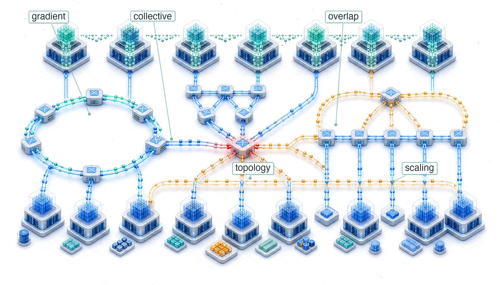</a></p>
</div>
<section id="purpose" class="level2 unnumbered unlisted">
<h2 class="unnumbered unlisted anchored" data-anchor-id="purpose">Purpose</h2>
<p><em>Why does communication between machines constrain large-scale machine learning systems?</em></p>
<p>Computation scales by adding processors; communication scales by moving data between them. These scale differently. Adding a processor increases aggregate compute linearly, but coordinating that processor with others moves more total data and, for the most general synchronization patterns, multiplies the logical connections among workers quadratically. At sufficient scale, the time spent exchanging gradients, activations, and parameters exceeds the time spent computing them. This crossover determines which parallelization strategies work and which model sizes are trainable. Light-speed delays, bandwidth limits, and the energy cost of data movement constrain communication as firmly as transistor physics constrains computation. In C³ terms, collective communication forms the instruction set of the fleet, defining the physical operations through which communication limits compute.</p>
<div id="callout-learning-objectives*-1.1" class="callout callout-learning-objectives">
<details class="callout-learning-objectives fbx-simplebox fbx-default" open=""><summary><strong>Learning Objectives</strong></summary><div>
<ul>
<li>Apply communication cost models to bound collective latency, bandwidth, and message-size crossover points</li>
<li>Match collective communication primitives to parallelism strategies and model archetypes</li>
<li>Compare ring, tree, butterfly, double-tree, and hierarchical reduction algorithms using scale-dependent cost models</li>
<li>Analyze communication-library reality gaps by comparing theoretical costs with measured latency, bandwidth, and topology mapping</li>
<li>Design topology-aware collective schedules for NVLink, InfiniBand, rail-optimized, torus, and in-network reduction fabrics</li>
<li>Evaluate compression, sparsification, and error feedback by balancing communication savings against convergence risk</li>
<li>Implement overlap strategies with bucket fusion, asynchronous operations, and layer-by-layer gradient scheduling</li>
</ul>
</div></details>
</div>
</section>
<section id="sec-communication-collective-operations-collective-operations-communication-fundamentals-44eb" class="level2 page-columns page-full">
<h2 class="anchored" data-anchor-id="sec-communication-collective-operations-collective-operations-communication-fundamentals-44eb">From Parallelism to Communication Patterns</h2>
<p>When 10,000 GPUs need to apply one weight update, the splits created by data, tensor, pipeline, and expert parallelism have to be made consistent again. The workers are not sending arbitrary messages; they are executing choreographed collective operations. In the fleet stack shown in <strong><a href="../introduction/introduction.html#fig-fleet-stack">The Fleet Stack</a></strong>, those operations sit in the Distribution Layer, where logical parallelism becomes physical traffic.</p>
<p>The 3D Parallelism Cube assumes that replicas, shards, stages, and experts can exchange gradients, activations, parameters, and tokens quickly enough for the optimizer to see one coherent training run. That assumption is the handoff from parallelism to communication: every way of splitting the model relocates work onto the network.</p>
<p>The gap between that assumption and the wire reveals an asymmetry in how computation and communication scale. Computation is local because each GPU works on its own data, so aggregate compute grows with the number of GPUs. Communication is global because keeping the fleet synchronized requires information to cross physical links with finite latency, bandwidth, topology, and energy. Gradient synchronization provides the central case; alpha-beta cost models, collective primitives, AllReduce schedules, topology-aware routing, compression, and overlap make its mechanics concrete.</p>
<div id="dfn-collective-communication-gradient-synchronization" class="callout callout-definition" title="Gradient synchronization">
<details class="callout-definition fbx-simplebox fbx-default" open=""><summary><strong>Definition 1.1: Gradient synchronization</strong></summary><div>
<p><strong><em>Gradient Synchronization</em></strong> is the collective communication step in synchronous data-parallel training in which every worker contributes its locally computed gradient tensor to an aggregate reduction, then receives the same reduced result so all model replicas apply an identical update.</p>
<ol type="1">
<li><strong>Significance</strong>: A 70B-parameter model in BF16 generates 140 GB of gradient data per worker per step. Synchronizing across 1,000 GPUs via ring AllReduce at 50 GB/s per link requires approximately <span class="math inline">\(2 \times 140/50\)</span> <span class="math inline">\(\approx\)</span> 5.6 s of communication per step, making the bandwidth (data-movement) term large enough to dominate the iron law unless overlap, hierarchy, or compression reduces the exposed transfer.</li>
<li><strong>Distinction</strong>: Unlike parameter-server approaches (where all workers send gradients to a centralized aggregator whose bandwidth scales as <span class="math inline">\(\mathcal{O}(N)\)</span>), ring AllReduce distributes the communication across all workers so that each worker’s per-step communication cost stays constant at <span class="math inline">\(2 \times (N-1)/N \times M\)</span> regardless of cluster size.</li>
<li><strong>Common pitfall</strong>: A frequent misconception is that ring AllReduce behaves like an all-to-all exchange. In ring AllReduce, each worker communicates with neighbors according to a schedule, and the per-node communication volume is approximately constant as the cluster grows. The scaling pressure comes from latency steps, topology, and the gradient volume per step, not from every worker opening a distinct stream to every other worker.</li>
</ol>
</div></details>
</div>
<p>For standard synchronous data-parallel stochastic gradient descent (SGD), gradient synchronization is not a design convenience; it is the mechanism that preserves one shared optimization trajectory. If different GPUs apply different gradient updates to their local copies of the model, the copies diverge. After enough steps, the models on different GPUs represent entirely different functions, and the training process no longer approximates stochastic gradient descent on the global loss. Synchronization ensures that all copies remain identical (within floating-point precision) at every step, preserving the theoretical convergence guarantees of the optimization algorithm via the AllReduce<a href="#fn1" class="footnote-ref" id="fnref1" role="doc-noteref"><sup>1</sup></a> primitive.<a href="#fn2" class="footnote-ref" id="fnref2" role="doc-noteref"><sup>2</sup></a></p>
<div class="no-row-height column-margin column-container"><div id="fn1"><p><sup>1</sup>&nbsp;<strong>AllReduce</strong>: A compound term from MPI indicating a Reduce operation (summing data from all nodes to one) followed by a Broadcast (sending the sum to all nodes). Ring-based AllReduce implements this as a sequential ReduceScatter phase followed by an AllGather phase, each taking <span class="math inline">\(N-1\)</span> rounds for <span class="math inline">\(2(N-1)\)</span> rounds total; ranks send and receive concurrently within each round, and every GPU ends with the global sum without a centralized bottleneck.</p></div><div id="fn2"><p><sup>2</sup>&nbsp;<strong>Parameter Server</strong>: Google’s DistBelief used a parameter-server architecture for large-scale neural-network training, and later parameter-server systems made the server-side bandwidth and consistency trade-offs explicit as worker counts grew <span class="citation" data-cites="dean2012large li2014">(<a href="#ref-dean2012large" role="doc-biblioref">Dean et al. 2012</a>; <a href="#ref-li2014" role="doc-biblioref">Li et al. 2014</a>)</span>. The collective-communication lesson is that star-like aggregation concentrates traffic in the server tier, whereas peer-to-peer collectives such as Ring AllReduce distribute that traffic so each worker’s bandwidth cost can remain bounded.</p><div id="ref-dean2012large" class="csl-entry" role="listitem">
Dean, Jeffrey, Greg Corrado, Rajat Monga, Kai Chen, Matthieu Devin, Quoc V. Le, Mark Z. Mao, et al. 2012. <span>“Large Scale Distributed Deep Networks.”</span> In <em>Advances in Neural Information Processing Systems (NeurIPS)</em>, edited by Peter L. Bartlett, Fernando C. N. Pereira, Christopher J. C. Burges, Léon Bottou, and Kilian Q. Weinberger, vol. 25. Curran Associates.
</div><div id="ref-li2014" class="csl-entry" role="listitem">
Li, M., D. G. Andersen, J. W. Park, A. J. Smola, A. Ahmed, V. Josifovski, J. Long, E. J. Shekita, and B.-Y. Su. 2014. <span>“Scaling Distributed Machine Learning with the Parameter Server.”</span> <em>Proceedings of the 2014 International Conference on Big Data Science and Computing</em>, 583–98. https://doi.org/10.1145/2640087.2644155.
</div></div><div id="fn3"><p><sup>3</sup>&nbsp;<strong>Ring AllReduce</strong>: The algorithm dates to the HPC collective-communication literature; Patarasuk and Yuan analyzed bandwidth-optimal AllReduce algorithms for workstation clusters, Baidu’s Andrew Gibiansky popularized ring AllReduce for deep learning in February 2017, and Horovod plus NVIDIA NCCL helped make it a common distributed-training primitive <span class="citation" data-cites="patarasuk2009 gibiansky2017baidu sergeev2018horovod jeaugey2017nccl">(<a href="#ref-patarasuk2009" role="doc-biblioref">Patarasuk and Yuan 2009</a>; <a href="#ref-gibiansky2017baidu" role="doc-biblioref">Gibiansky 2017</a>; <a href="#ref-sergeev2018horovod" role="doc-biblioref">Sergeev and Balso 2018</a>; <a href="#ref-jeaugey2017nccl" role="doc-biblioref">Jeaugey 2017</a>)</span>.</p><div id="ref-patarasuk2009" class="csl-entry" role="listitem">
Patarasuk, Pitch, and Xin Yuan. 2009. <span>“Bandwidth Optimal All-Reduce Algorithms for Clusters of Workstations.”</span> <em>Journal of Parallel and Distributed Computing</em> 69 (2): 117–24. https://doi.org/10.1016/j.jpdc.2008.09.002.
</div><div id="ref-gibiansky2017baidu" class="csl-entry" role="listitem">
Gibiansky, A. 2017. <em>Bringing <span>HPC</span> Techniques to Deep Learning</em>. Baidu Research Technical Blog.
</div><div id="ref-sergeev2018horovod" class="csl-entry" role="listitem">
Sergeev, Alexander, and Mike Del Balso. 2018. <span>“Horovod: Fast and Easy Distributed Deep Learning in <span>TensorFlow</span>.”</span> <em>CoRR</em> abs/1802.05799.
</div></div></div><p>The volume of data that must be synchronized is proportional to the model size. A model with <span class="math inline">\(P\)</span> parameters stored in BF16 (2 bytes per parameter) generates <span class="math inline">\(2P\)</span> bytes of gradient data per training step per GPU. For a 70 billion parameter model, this is 140 GB of gradients that every GPU must send and receive.<a href="#fn3" class="footnote-ref" id="fnref3" role="doc-noteref"><sup>3</sup></a></p>
<p>At large scale (hundreds of billions of parameters across thousands of GPUs), gradient synchronization can dominate training step time unless aggressive optimization techniques are applied. The next step is to model that data movement as physics rather than as an API call.</p>
<section id="sec-communication-collective-operations-physics-data-movement" class="level3 page-columns page-full">
<h3 class="anchored" data-anchor-id="sec-communication-collective-operations-physics-data-movement">The physics of data movement</h3>
<p>Physical constraints govern data movement before algorithms are designed. <strong><a href="../network_fabrics/network_fabrics.html#sec-network-fabrics-wire-link">Level 1: Wire and Link</a></strong> establishes the wire-level physics behind these algorithms: the speed of light sets a latency floor<a href="#fn4" class="footnote-ref" id="fnref4" role="doc-noteref"><sup>4</sup></a> (roughly 5 <span class="math inline">\(\mu\text{s}\)</span> per kilometer in fiber), the bandwidth-distance product limits how far a fast link can reach before it needs optics (PAM4 signaling and copper-vs.-optics reach are developed in <strong><a href="../network_fabrics/network_fabrics.html#sec-network-fabrics-pam4">Signal integrity and PAM4</a></strong>), and kernel-bypass transports such as remote direct memory access (RDMA) and GPUDirect RDMA strip the per-message software tax down to a few microseconds (<strong><a href="../network_fabrics/network_fabrics.html#sec-network-fabrics-rdma">RDMA and GPUDirect</a></strong>). Collective communication adds the energy cost of moving a bit, which the algorithms must respect as firmly as latency and bandwidth.</p>
<div class="no-row-height column-margin column-container"><div id="fn4"><p><sup>4</sup>&nbsp;<strong>The Speed of Light Constraint</strong>: Light travels through optical fiber at approximately 200,000 km/s, or 200 meters per microsecond. In a massive data center where cables between racks span 100 meters, the “wire delay” alone contributes 500 ns to every message, a physical limit that no amount of better networking hardware can reduce.</p></div></div><p>Moving data costs energy that scales with distance, as <a href="#fig-data-movement-hierarchy" class="quarto-xref">figure&nbsp;1</a> illustrates. Concrete reference values are: local SRAM at roughly 0.5 pJ/bit, NVLink (on-package PCB) at the tens of pJ/bit, and inter-node InfiniBand at the hundreds-to-thousand-plus pJ/bit. The figure uses the higher published estimates that include link-, switch-, and transceiver-side power; chapter prose elsewhere uses the lower bound of each range. Both views agree on the central point: the energy cost climbs by two-to-three orders of magnitude between SRAM and inter-node fabric.</p>
<div id="fig-data-movement-hierarchy" class="quarto-float quarto-figure quarto-figure-center anchored" alt="Horizontal bar chart showing increasing energy cost (pJ per bit) on a logarithmic scale from local SRAM through HBM, NVLink, and InfiniBand to remote data center nodes." data-fig-pos="htb" data-fig-env="figure">
<figure class="quarto-float quarto-float-fig figure">
<div aria-describedby="fig-data-movement-hierarchy-caption-0ceaefa1-69ba-4598-a22c-09a6ac19f8ca">
<a href="images/svg/data-movement-hierarchy.svg" class="lightbox" data-gallery="quarto-lightbox-gallery-2" title="Figure&nbsp;1: The Data Movement Energy Hierarchy: The energy cost of moving a single bit climbs by orders of magnitude across the system hierarchy — from SRAM through HBM to intra-node NVLink to inter-node InfiniBand. The figure plots higher-bound published estimates (NVLink in the tens of pJ/bit, InfiniBand near 1{,}000 pJ/bit) that include switch and transceiver overheads. The chapter prose elsewhere uses the lower-bound estimates for back-of-the-envelope calculations. Either way, the gradient makes data locality the primary driver of sustainable and efficient distributed ML system design.">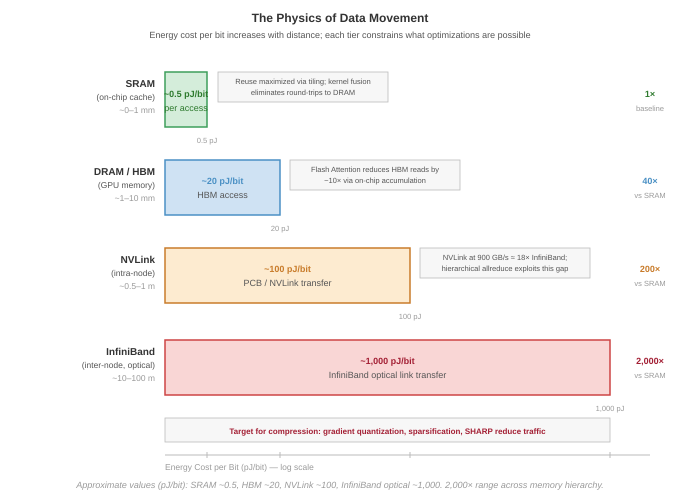</a>
</div>
<figcaption class="quarto-float-caption-bottom quarto-float-caption quarto-float-fig" id="fig-data-movement-hierarchy-caption-0ceaefa1-69ba-4598-a22c-09a6ac19f8ca">
Figure&nbsp;1: <strong>The Data Movement Energy Hierarchy</strong>: The energy cost of moving a single bit climbs by orders of magnitude across the system hierarchy — from SRAM through HBM to intra-node NVLink to inter-node InfiniBand. The figure plots higher-bound published estimates (NVLink in the tens of pJ/bit, InfiniBand near 1{,}000 pJ/bit) that include switch and transceiver overheads. The chapter prose elsewhere uses the lower-bound estimates for back-of-the-envelope calculations. Either way, the gradient makes data locality the primary driver of sustainable and efficient distributed ML system design.
</figcaption>
</figure>
</div>
<p>At the exascale (tens of thousands of GPUs), the power budget for communication rivals the power budget for computation itself. A 10,000-GPU cluster exchanging 1 GB of gradients per step at 30 pJ/bit consumes approximately 4.8 kJ per AllReduce (accounting for the factor of 2 in data movement), a nontrivial fraction of the total per-step energy budget.</p>
<p>These three constraints interact multiplicatively. Latency sets the floor for every message regardless of size. Bandwidth caps the throughput for large transfers. Protocol overhead adds a per-message tax that penalizes fine-grained communication, which is why the kernel-bypass transports recalled in <strong><a href="../network_fabrics/network_fabrics.html#sec-network-fabrics-rdma">RDMA and GPUDirect</a></strong> <a href="#fn5" class="footnote-ref" id="fnref5" role="doc-noteref"><sup>5</sup></a> matter for collective performance. A quick AllReduce estimate makes their combined cost concrete for a realistic training scenario.</p>
<div class="no-row-height column-margin column-container"><div id="fn5"><p><sup>5</sup>&nbsp;<strong>Zero-Copy Communication</strong>: RDMA allows the NIC to transfer data directly from the application’s memory on one node to the application’s memory on another, bypassing the operating system’s kernel buffers. For a 140 GB gradient exchange, zero-copy avoids moving 280 GB of data between the CPU and main memory, reclaiming significant memory bandwidth (<span class="math inline">\(\text{BW}\)</span>).</p></div></div><div id="nbk-collective-communication-allreduce-cost-70b-model" class="callout callout-notebook" title="AllReduce cost for a 70B model">
<p></p><details class="callout-notebook fbx-simplebox fbx-default" open=""><summary><strong>Napkin Math 1.1: AllReduce cost for a 70B model</strong></summary><div><strong>Problem</strong>: A 70B parameter model trains with data parallelism across 64 GPUs connected by InfiniBand NDR (50 GB/s per port). Each GPU computes gradients in BF16 (2 bytes per parameter, common for Llama-class training). How long does one AllReduce take?<p></p>
<p><strong>Step 1</strong>: Size the gradient payload. Each GPU produces a full gradient tensor: <span class="math inline">\(7 \times 10^{10} \times 2\ \text{bytes}\)</span> <span class="math inline">\(=\)</span> 140 GB.</p>
<p><strong>Step 2</strong>: Apply the Ring AllReduce bandwidth formula. <span class="math display">\[T_{\text{bandwidth}} = 2 \cdot \frac{N-1}{N} \cdot \frac{n}{\beta}\]</span></p>
<p>Substituting: <span class="math inline">\(T_{\text{bandwidth}}\)</span> = 1.96875 <span class="math inline">\(\times\)</span> 140 GB / 50 GB/s <span class="math inline">\(\approx\)</span> 5,512.5 ms.</p>
<p><strong>Step 3</strong>: Add the latency term. <span class="math display">\[T_{\text{latency}} = 2(N-1) \cdot \alpha\]</span></p>
<p>Substituting: <span class="math inline">\(T_{\text{latency}} =\)</span> 126 <span class="math inline">\(\times\)</span> 1.5 μs = 0.2 ms.</p>
<p><strong>Step 4</strong>: Total communication time. Total: <span class="math inline">\(T_{\text{AllReduce}} \approx\)</span> 5,512.5 ms + 0.2 ms <span class="math inline">\(\approx\)</span> 5,512.7 ms.</p>
<p><strong>Systems insight</strong>: The gradient AllReduce alone takes over five seconds. This is pure communication overhead added to every training step. At this scale, communication dominates the step time unless overlapped with backward pass computation. This is why large-scale training systems pipeline AllReduce with the backward pass, launching communication for early layers while later layers are still computing.</p>
</div></details>
</div>

<div class="no-row-height column-margin column-container"><div class="">
<p><a href="images/svg/collective_communication_comm_dominance.svg" class="lightbox" data-gallery="quarto-lightbox-gallery-3"></a></p>
<p><em>Gradient synchronization devours 30 to 70 percent of each step at scale.</em></p>
</div></div><p>The calculation reveals why data movement, not computation, becomes the governing constraint at scale. A single AllReduce on a 70B model’s gradients consumes seconds of wall-clock time, during which all GPUs would otherwise sit idle. This asymmetry between local computation (which parallelizes perfectly) and global coordination (which requires physical data movement) motivates every collective algorithm that follows. Halving that multi-second AllReduce would save thousands of GPU-hours over a typical training campaign, translating directly to reduced cost and faster time to deployment.</p>
<p>The cost analysis also explains why the choice of collective algorithm matters far more than most practitioners realize. Using a suboptimal algorithm that achieves only 60 percent of theoretical bandwidth (a common outcome with poor topology mapping) would inflate the five-second AllReduce to over nine seconds, adding several seconds of pure waste to every training step. Because this waste propagates through the entire fleet, communication algorithms occupy the Distribution Layer of the fleet stack: the Infrastructure Layer below provides raw bandwidth through NVLink, InfiniBand, and network topologies (covered in <strong><a href="../network_fabrics/network_fabrics.html#sec-network-fabrics">Network Fabrics</a></strong>), while the Serving Layer above depends on efficient gradient synchronization to complete training runs that produce deployable models. When communication algorithms fail to saturate the available bandwidth, training takes longer, serving models are delivered later, and the entire fleet operates below its economic potential.</p>
<p><a href="#fig-compute-comm-timeline" class="quarto-xref">Figure&nbsp;2</a> quantifies how this communication overhead compounds as the fleet grows. At 8 GPUs within a single NVLink-connected node, communication consumes roughly 25 percent of each training step because the 900 GB/s interconnect bandwidth keeps pace with gradient volume. As the cluster expands to 64 GPUs across 8 nodes, the transition to InfiniBand (50 GB/s per port) shifts the balance: communication dominates at approximately 50 percent of step time, with an additional 5 percent lost to synchronization barriers. At a 4,096-GPU scale, communication and synchronization overhead together consume 80 percent of the training step, leaving only 20 percent for useful computation. This progression explains why collective algorithms matter: without hierarchical collectives, gradient compression, and communication-computation overlap, large-scale training would spend the vast majority of its multi-million-dollar compute budget waiting for data to arrive.</p>
<div id="fig-compute-comm-timeline" class="quarto-float quarto-figure quarto-figure-center anchored" alt="Stacked horizontal bar chart showing compute, communication, and sync fractions at 8, 64, 512, and 4096 GPUs with communication growing from 25 to 65 percent." data-fig-pos="htb" data-fig-env="figure">
<figure class="quarto-float quarto-float-fig figure">
<div aria-describedby="fig-compute-comm-timeline-caption-0ceaefa1-69ba-4598-a22c-09a6ac19f8ca">
<div id="4bc2bd13" class="cell" data-execution_count="3">
<div class="cell-output cell-output-display">
<div>
<figure class="figure">
<p><a href="collective_communication_files/figure-html/cell-4-output-1.png" class="lightbox" data-gallery="quarto-lightbox-gallery-4" title="Figure&nbsp;2: The Compute-Communication Timeline: As training scales from 8 GPUs (one node) to 4,096 GPUs, communication grows from approximately 25 percent to over 65 percent of each training step. This shift from NVLink-dominated to InfiniBand-limited communication drives the design of all collective optimization strategies. Proportions derived from H100 cluster measurements with a 70B parameter model using data parallelism with Ring AllReduce.">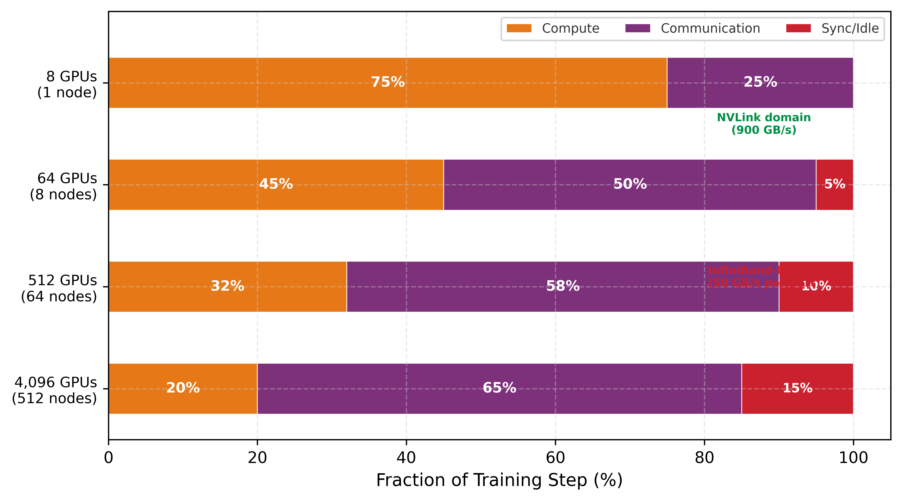</a></p>
</figure>
</div>
</div>
</div>
</div>
<figcaption class="quarto-float-caption-bottom quarto-float-caption quarto-float-fig" id="fig-compute-comm-timeline-caption-0ceaefa1-69ba-4598-a22c-09a6ac19f8ca">
Figure&nbsp;2: <strong>The Compute-Communication Timeline</strong>: As training scales from 8 GPUs (one node) to 4,096 GPUs, communication grows from approximately 25 percent to over 65 percent of each training step. This shift from NVLink-dominated to InfiniBand-limited communication drives the design of all collective optimization strategies. Proportions derived from H100 cluster measurements with a 70B parameter model using data parallelism with Ring AllReduce.
</figcaption>
</figure>
</div>
</section>
<section id="sec-communication-parallelism-patterns" class="level3 page-columns page-full">
<h3 class="anchored" data-anchor-id="sec-communication-parallelism-patterns">The gradient’s travel manifest</h3>
<p>The journey begins at the moment the backward pass completes. On a single machine, that was the end of the story: the weights were updated, and the neuron learned. At production scale, however, the gradient is born into isolation. It exists on one GPU, while the “truth” of the model is distributed across thousands. To achieve global convergence, the gradient must find its peers.</p>
<p>The specific “travel manifest” for this journey is dictated by the parallelism strategy chosen in <strong><a href="../distributed_training/distributed_training.html#sec-distributed-training-systems">Distributed Training</a></strong>. The choice of how the math is split determines how the data moves. For the Lighthouse Archetypes (<strong><a href="../introduction/introduction.html#sec-vol2-introduction-archetypes">Three systems archetypes</a></strong>), these manifests differ fundamentally. For Archetype A (GPT-4/Llama-3), the gradient is part of a massive, dense tensor that must meet every other gradient in the fleet to compute a global average, so its primary vehicle is the AllReduce. For Archetype B (DLRM at Scale),<a href="#fn6" class="footnote-ref" id="fnref6" role="doc-noteref"><sup>6</sup></a> the gradient or activation is sparse and targeted: it does not need to meet everyone, only the specific GPU that holds its embedding shard. Mixture-of-experts (MoE) routing creates the same targeted pattern, sending each token to the GPU that hosts its assigned expert, so both rely on the AllToAll.</p>
<div class="no-row-height column-margin column-container"><div id="fn6"><p><sup>6</sup>&nbsp;<strong>DLRM (Deep Learning Recommendation Model)</strong>: Meta’s 2019 architecture for click-through rate prediction, where embedding tables can exceed 100 GB and must be sharded across workers. Each forward pass triggers AllToAll to exchange sparse embedding lookups, creating a communication pattern where message sizes are small (hundreds of KB) but fan-out is <span class="math inline">\(\mathcal{O}(N)\)</span>, making DLRM one of the most latency-sensitive distributed workloads in production.</p></div></div><p>Understanding this mapping is essential: the what of parallelism directly determines the how of communication. At large scale, these strategies are not mutually exclusive. A single training run for a large language model typically employs 3D parallelism (combining data parallelism, tensor parallelism, and pipeline parallelism simultaneously), which means multiple collective primitives execute concurrently on overlapping subsets of GPUs. Tensor parallelism drives AllReduce operations within each node (over NVLink), pipeline parallelism drives point-to-point sends between pipeline stages (often between nodes), and data parallelism drives AllReduce operations across groups of nodes (over InfiniBand).</p>
<p>Each primitive operates on a different <strong>Process Group</strong>, a subset of the total GPU population that participates in that particular collective. Classical Message Passing Interface (MPI) uses a communicator as the object that names such a participating set; its communicator size is the number of ranks in that set. MPI libraries already selected collective algorithms based on communicator size and message size <span class="citation" data-cites="thakur2005">(<a href="#ref-thakur2005" role="doc-biblioref">Thakur et al. 2005</a>)</span>. GPU communication libraries inherit that algorithm-selection problem and add the further challenge of coordinating overlapping process groups without creating contention between concurrent collectives.</p>
<div class="no-row-height column-margin column-container"></div><p><a href="#tbl-parallelism-communication-mapping" class="quarto-xref">Table&nbsp;1</a> previews the mapping from parallelism strategy to collective primitive. The primitive names are introduced formally in the next section; for now, read the table as a traffic map that says who must exchange data with whom.</p>
<div id="tbl-parallelism-communication-mapping" class="quarto-float quarto-figure quarto-figure-center anchored">
<figure class="quarto-float quarto-float-tbl figure">
<figcaption class="quarto-float-caption-top quarto-float-caption quarto-float-tbl" id="tbl-parallelism-communication-mapping-caption-0ceaefa1-69ba-4598-a22c-09a6ac19f8ca">
Table&nbsp;1: <strong>The Travel Manifest</strong>: How the high-level math of <strong><a href="../distributed_training/distributed_training.html#sec-distributed-training-systems">Distributed Training</a></strong> manifests as low-level traffic patterns.
</figcaption>
<div aria-describedby="tbl-parallelism-communication-mapping-caption-0ceaefa1-69ba-4598-a22c-09a6ac19f8ca">
<table class="caption-top table">
<colgroup>
<col style="width: 22%">
<col style="width: 29%">
<col style="width: 21%">
<col style="width: 26%">
</colgroup>
<thead>
<tr class="header">
<th style="text-align: left;"><strong>Parallelism Strategy</strong></th>
<th style="text-align: left;"><strong>The Gradient’s Goal</strong></th>
<th style="text-align: center;"><strong>Primary Primitive</strong></th>
<th style="text-align: center;"><strong>Primary Constraint</strong></th>
</tr>
</thead>
<tbody>
<tr class="odd">
<td style="text-align: left;"><strong>Data Parallelism</strong></td>
<td style="text-align: left;">Meet everyone, compute global average</td>
<td style="text-align: center;">AllReduce</td>
<td style="text-align: center;">Bandwidth (Large payloads)</td>
</tr>
<tr class="even">
<td style="text-align: left;"><strong>FSDP/ZeRO</strong></td>
<td style="text-align: left;">Find shards, reconstruct the whole</td>
<td style="text-align: center;">AllGather + ReduceScatter</td>
<td style="text-align: center;">Bandwidth (High frequency)</td>
</tr>
<tr class="odd">
<td style="text-align: left;"><strong>Tensor Parallelism</strong></td>
<td style="text-align: left;">Quick handshake within the node</td>
<td style="text-align: center;">AllReduce</td>
<td style="text-align: center;">Latency (Speed is life)</td>
</tr>
<tr class="even">
<td style="text-align: left;"><strong>Pipeline Parallelism</strong></td>
<td style="text-align: left;">Handoff to the next neighbor</td>
<td style="text-align: center;">Point-to-Point (Send/Recv)</td>
<td style="text-align: center;">Latency (Sequential dependencies)</td>
</tr>
<tr class="odd">
<td style="text-align: left;"><strong>Expert Parallelism (MoE)</strong></td>
<td style="text-align: left;">Targeted routing to a specialist</td>
<td style="text-align: center;">AllToAll</td>
<td style="text-align: center;">Latency + Contention</td>
</tr>
</tbody>
</table>
</div>
</figure>
</div>
<p>In this table, expert parallelism refers to the mixture-of-experts<a href="#fn7" class="footnote-ref" id="fnref7" role="doc-noteref"><sup>7</sup></a> architecture pattern. The mapping shows that different parallelism strategies impose fundamentally different communication patterns. Data parallelism and fully sharded data parallel (FSDP) generate large, bandwidth-bound messages that benefit from ring-based algorithms and hierarchical decomposition. Tensor and pipeline parallelism generate small, latency-bound messages that benefit from tree-based algorithms and low-overhead software stacks. Expert parallelism generates all-to-all traffic patterns that stress the network’s bisection bandwidth. Reasoning quantitatively about these differences requires a model of network performance.</p>
<div class="no-row-height column-margin column-container"><div id="fn7"><p><sup>7</sup>&nbsp;<strong>Mixture-of-Experts (MoE)</strong>: An architecture where each token activates only a subset of specialized subnetworks (experts), reducing per-token FLOPs while maintaining total model capacity. The systems trade-off is stark: MoE replaces the bandwidth-bound AllReduce of dense models with latency-bound AllToAll, shifting the communication bottleneck from <span class="math inline">\(\beta\)</span> to <span class="math inline">\(\alpha\)</span> and creating <span class="math inline">\(\mathcal{O}(N^2)\)</span> contention that limits practical cluster size.</p></div></div><div id="quiz-question-sec-communication-collective-operations-collective-operations-communication-fundamentals-44eb" class="callout callout-quiz-question">
<details class="callout-quiz-question fbx-simplebox fbx-default"><summary><strong>Self-Check: Question</strong></summary><div>
<ol type="1">
<li><p>A distributed training cluster triples its GPU count from 64 to 192 GPUs on a dense model training run. Despite aggregate arithmetic peak throughput tripling, the step time drops by only 30%, and per-GPU compute utilization falls from 65% to 34%. Based on the chapter’s local-versus-global scaling asymmetry, what is the primary physical mechanism causing this scaling degradation?</p>
<ol type="a">
<li>Backpropagation stops functioning correctly across multiple nodes because gradients cannot be computed concurrently across independent data batches.</li>
<li>Floating-point accumulation during gradient reduction becomes numerically unstable when more than 64 GPUs participate in the collective.</li>
<li>Computation is local and scales linearly with added silicon, but synchronization is a global physical data-movement problem where coordination costs and network transit across physical links grow while per-GPU compute workload shrinks.</li>
<li>Host CPU memory bandwidth saturates because all optimizer states must be shuffled through host DRAM on every multi-node step.</li>
</ol></li>
<li><p>A machine learning engineer evaluates the communication traffic induced by different model parallelism strategies. According to the chapter’s ‘travel manifest’, which mapping correctly pairs a parallelism strategy with its primary collective primitive and primary physical constraint?</p>
<ol type="a">
<li>Fully Sharded Data Parallel (FSDP) -&gt; Broadcast primitive -&gt; Memory capacity constraint.</li>
<li>Mixture-of-Experts (MoE) Routing -&gt; AllToAll primitive -&gt; Latency and bisection network contention constraint.</li>
<li>Tensor Parallelism within a node -&gt; Point-to-Point Send/Recv -&gt; Inter-node bisection bandwidth constraint.</li>
<li>Data Parallelism -&gt; Reduce primitive -&gt; Host-to-device PCIe bandwidth constraint.</li>
</ol></li>
<li><p>A team scaling a 70B-parameter model in BF16 (140 GB gradient per worker) from 8 GPUs to 1,000 GPUs using Ring AllReduce expects the communication volume transferred by each individual GPU to increase by over 100x. Using the Ring AllReduce per-node data volume formula, explain why this expectation is mathematically false, and identify what actually causes gradient synchronization time to increase as the cluster scales.</p></li>
</ol>
<p><a href="#quiz-answer-sec-communication-collective-operations-collective-operations-communication-fundamentals-44eb" class="question-label" onclick="event.preventDefault();document.getElementById('quiz-answer-sec-communication-collective-operations-collective-operations-communication-fundamentals-44eb').scrollIntoView({behavior:'smooth',block:'start'});history.pushState(null,'','#quiz-answer-sec-communication-collective-operations-collective-operations-communication-fundamentals-44eb');">See Answers →</a></p>
</div></details>
</div>
</section>
</section>
<section id="sec-communication-collective-operations-collective-operations-network-performance-modeling-0d8e" class="level2 page-columns page-full">
<h2 class="anchored" data-anchor-id="sec-communication-collective-operations-collective-operations-network-performance-modeling-0d8e">Mapping the Terrain: Network Performance Modeling</h2>
<p>A data center engineer cannot predict how long it takes to send ten megabytes across a cluster without knowing two distinct variables: how long a message takes to launch and how fast data moves once in transit. As the gradient begins its journey, it immediately encounters the physical reality of the data center network.</p>
<section id="sec-communication-collective-operations-collective-operations-alphabeta-model-f9b4" class="level3 page-columns page-full">
<h3 class="anchored" data-anchor-id="sec-communication-collective-operations-collective-operations-alphabeta-model-f9b4">The alpha-beta cost model: Startup tax and transit fee</h3>
<p>Every message the gradient sends obeys the linear cost model <span class="math inline">\(T(n) = \alpha + n/\beta\)</span>, formalizing this startup tax (<span class="math inline">\(\alpha\)</span>) and per-byte transit fee (<span class="math inline">\(n/\beta\)</span>). Those two terms determine collective algorithm selection across the fleet.</p>
<div id="dfn-collective-communication-model-hockney-model" class="callout callout-definition" title="α-β model (Hockney model)">
<details class="callout-definition fbx-simplebox fbx-default" open=""><summary><strong>Definition 1.2: α-β model (Hockney model)</strong></summary><div>
<p><strong><em>α-β Model (Hockney Model)</em></strong> is the linear communication cost model <span class="math inline">\(T(n) = \alpha + n/\beta\)</span> that decomposes message transfer time into a fixed startup latency (<span class="math inline">\(\alpha\)</span>, the per-message overhead) and a message-size-dependent bandwidth term (<span class="math inline">\(n/\beta\)</span>, proportional to bytes transferred), enabling algorithm designers to predict when message fusion or gradient compression will improve throughput <span class="citation" data-cites="hockney1994">(<a href="#ref-hockney1994" role="doc-biblioref">Hockney 1994</a>)</span>.</p>
<ol type="1">
<li><strong>Significance</strong>: For InfiniBand NDR at <span class="math inline">\(\alpha \approx 2\,\mu\text{s}\)</span> and <span class="math inline">\(\beta \approx 50\,\text{GB/s}\)</span>, the crossover size <span class="math inline">\(n^* = \alpha \cdot \beta \approx 100\,\text{KB}\)</span>. A 4 KB routing message is far below <span class="math inline">\(n^*\)</span>, so the startup tax dominates; fusing 100 such messages into one 400 KB message reduces communication cost from <span class="math inline">\(100\alpha = 200\,\mu\text{s}\)</span> to one <span class="math inline">\(\alpha + n/\beta \approx 10\,\mu\text{s}\)</span>, a 20<span class="math inline">\(\times\)</span> improvement. A 140 GB gradient tensor is far above <span class="math inline">\(n^*\)</span>, so bandwidth dominates and reducing payload bytes is the effective lever.</li>
<li><strong>Distinction</strong>: Unlike idealized throughput models that treat bandwidth as the sole communication cost, the α-β model reveals that <span class="math inline">\(N\)</span> small messages of size <span class="math inline">\(n/N\)</span> cost up to <span class="math inline">\(N\times\)</span> more than one large message of size <span class="math inline">\(n\)</span> when <span class="math inline">\(n/N \ll n^*\)</span>, explaining why NCCL fuses small AllReduce calls and why MoE routing algorithms buffer tokens before launching collectives.</li>
<li><strong>Common pitfall</strong>: A frequent misconception is that gradient compression always helps. If the compressed gradient size remains well above <span class="math inline">\(n^*\)</span>, compression reduces the bandwidth term but leaves the latency term unchanged. Even shrinking a 70B model’s gradient payload from 140 GB to 1.4 GB leaves the message firmly bandwidth-bound; it does not turn the operation into a low-latency exchange.</li>
</ol>
</div></details>
</div>
<div class="no-row-height column-margin column-container"><div id="ref-hockney1994" class="csl-entry" role="listitem">
Hockney, Roger W. 1994. <span>“The Communication Challenge for MPP: Intel Paragon and Meiko CS-2.”</span> <em>Parallel Computing</em> 20 (3): 389–98. https://doi.org/10.1016/s0167-8191(06)80021-9.
</div></div><p>The two parameters have distinct physical meanings. Latency (<span class="math inline">\(\alpha\)</span>) is the fixed start-up cost to send a message regardless of size, covering software overhead (kernel launch, NCCL initialization), PCIe traversal, and network switching time. Bandwidth (<span class="math inline">\(\beta\)</span>) is the sustained data transfer rate in bytes per second. The <strong>Critical Message Size</strong> <span class="math inline">\(n^* = \alpha \cdot \beta\)</span> marks the crossover point: messages smaller than <span class="math inline">\(n^*\)</span> are latency-bound; messages larger are bandwidth-bound. <strong><a href="../backmatter/appendix_communication.html#sec-appdx-comm-foundations-alpha-beta">The α-β Communication Model</a></strong> works this model through concrete message-size regimes and roofline analysis, so a reader who wants the full derivation behind the crossover can follow it there; the parameters in <a href="#tbl-interconnect-parameters" class="quarto-xref">table&nbsp;2</a> apply directly to collective design.</p>
<p><a href="#tbl-interconnect-parameters" class="quarto-xref">Table&nbsp;2</a> shows typical values for data center interconnects, and the critical-size column carries the load-bearing pattern: intra-node NVLink stays latency-bound up to several hundred kilobytes, whereas the inter-node fabrics cross over near 100 KB, so a message large enough to be bandwidth-bound inside a node can still be latency-bound once it travels between nodes.</p>
<div id="tbl-interconnect-parameters" class="quarto-float quarto-figure quarto-figure-center anchored">
<figure class="quarto-float quarto-float-tbl figure">
<figcaption class="quarto-float-caption-top quarto-float-caption quarto-float-tbl" id="tbl-interconnect-parameters-caption-0ceaefa1-69ba-4598-a22c-09a6ac19f8ca">
Table&nbsp;2: <strong>Interconnect Performance Parameters</strong>: Effective per-message launch latency (<span class="math inline">\(\alpha\)</span>, including the software stack), per-direction link bandwidth (<span class="math inline">\(\beta\)</span>, the one-way deliverable rate that enters <span class="math inline">\(T(n) = \alpha + n/\beta\)</span>; NVLink’s datasheet 900 GB/s is the bidirectional total, so its <span class="math inline">\(\beta\)</span> is the 450 GB/s one-way rate), and the computed crossover size <span class="math inline">\(n^* = \alpha \cdot \beta\)</span> at each row’s <span class="math inline">\(\alpha\)</span> midpoint, where communication transitions from latency-bound to bandwidth-bound.
</figcaption>
<div aria-describedby="tbl-interconnect-parameters-caption-0ceaefa1-69ba-4598-a22c-09a6ac19f8ca">
<table class="caption-top table">
<colgroup>
<col style="width: 20%">
<col style="width: 27%">
<col style="width: 27%">
<col style="width: 24%">
</colgroup>
<thead>
<tr class="header">
<th style="text-align: left;"><strong>Interconnect</strong></th>
<th style="text-align: center;"><strong>Latency (<span class="math inline">\(\alpha\)</span>)</strong></th>
<th style="text-align: center;"><strong>Bandwidth (<span class="math inline">\(\beta\)</span>)</strong></th>
<th style="text-align: center;"><strong>Critical Size (<span class="math inline">\(n^*\)</span>)</strong></th>
</tr>
</thead>
<tbody>
<tr class="odd">
<td style="text-align: left;"><strong>NVLink 4.0 (intra-node)</strong></td>
<td style="text-align: center;">1–2 μs</td>
<td style="text-align: center;">450 GB/s</td>
<td style="text-align: center;">~0.7 MB</td>
</tr>
<tr class="even">
<td style="text-align: left;"><strong>InfiniBand NDR 400 Gbps</strong></td>
<td style="text-align: center;">1–3 μs</td>
<td style="text-align: center;">50 GB/s (per port)</td>
<td style="text-align: center;">~100 KB</td>
</tr>
<tr class="odd">
<td style="text-align: left;"><strong>InfiniBand HDR 200 Gbps</strong></td>
<td style="text-align: center;">2–5 μs</td>
<td style="text-align: center;">25 GB/s</td>
<td style="text-align: center;">~87.5 KB</td>
</tr>
<tr class="even">
<td style="text-align: left;"><strong>PCIe Gen5 (GPU<span class="math inline">\(\leftrightarrow\)</span>CPU)</strong></td>
<td style="text-align: center;">2–5 μs</td>
<td style="text-align: center;">64 GB/s</td>
<td style="text-align: center;">~224 KB</td>
</tr>
<tr class="odd">
<td style="text-align: left;"><strong>Ethernet 100 Gbps (RoCE)</strong></td>
<td style="text-align: center;">5–10 μs</td>
<td style="text-align: center;">12.5 GB/s</td>
<td style="text-align: center;">~93.7 KB</td>
</tr>
</tbody>
</table>
</div>
</figure>
</div>
<p>Applying the critical message size formula to a concrete workload reveals which optimization strategy matters most:</p>
<div id="nbk-collective-communication-critical-message-size" class="callout callout-notebook" title="The critical message size">
<p></p><details class="callout-notebook fbx-simplebox fbx-default" open=""><summary><strong>Napkin Math 1.2: The critical message size</strong></summary><div><strong>Problem</strong>: Consider a cluster using InfiniBand NDR 400 Gbps with <span class="math inline">\(\alpha =\)</span> 2 μs and <span class="math inline">\(\beta =\)</span> 50 GB/s. At what message size does optimizing for bandwidth start to matter more than optimizing for latency?<p></p>
<p><strong>Math</strong>:</p>
<p><span class="math inline">\(n^* = \alpha \cdot \beta =\)</span> <span class="math inline">\(2 \times 10^{-6}\)</span> s <span class="math inline">\(\times\)</span> <span class="math inline">\(5 \times 10^{10}\)</span> B/s <span class="math inline">\(=\)</span> 100 KB</p>
<p><strong>Systems insight</strong>: Messages under 100 KB (such as MoE tokens or pipeline activations) are latency-bound, requiring lower-latency switches and reduced software overhead. Messages over 100 KB, such as large language model (LLM) gradients, are bandwidth-bound, requiring higher link bandwidth and data compression. Applying the wrong optimization wastes resources without improving performance.</p>
</div></details>
</div>

<div class="no-row-height column-margin column-container"><div class="">
<p><a href="images/svg/collective_communication_alpha_beta_dominance.svg" class="lightbox" data-gallery="quarto-lightbox-gallery-5"></a></p>
<p><em>Small messages are latency-bound, large ones bandwidth-bound; the cost reverses.</em></p>
</div></div><p>The critical message size separates two distinct operating regimes. Below it, small messages such as MoE routing tokens or scalar reductions are latency-bound <span class="math inline">\((n &lt; n^*)\)</span>, where time is dominated by <span class="math inline">\(\alpha\)</span> and optimization focuses on fusion (batching small messages), topology (reducing hop count), and software-stack tuning (kernel bypass via RDMA). Above it, large messages such as LLM gradients or optimizer states are bandwidth-bound <span class="math inline">\((n \gg n^*)\)</span>, where time is dominated by <span class="math inline">\(n/\beta\)</span> and optimization shifts to compression (lower precision or sparsity), algorithm choice (Ring vs.&nbsp;Tree), and link aggregation (multi-rail network interface cards (NICs)). The distinction between latency-bound and bandwidth-bound communication is the diagnostic skill to practice.</p>
<div id="chk-collective-communication-alpha-beta-diagnostics" class="callout callout-checkpoint" title="Alpha-beta diagnostics">
<details class="callout-checkpoint fbx-simplebox fbx-default" open=""><summary><strong>Checkpoint 1.1: Alpha-beta diagnostics</strong></summary><div>
<p>Verify your understanding of network performance regimes:</p>
<ul class="task-list">
<li><label><input type="checkbox"><strong>Bound regime</strong>: classify a 10 KB message sent over a link with <span class="math inline">\(\alpha=2\ \mu\text{s}\)</span> and <span class="math inline">\(\beta=10\ \text{GB/s}\)</span> as latency-bound or bandwidth-bound.</label></li>
<li><label><input type="checkbox"><strong>Software overhead</strong>: determine which type of parallelism benefits more when “Software Overhead” (<span class="math inline">\(\alpha\)</span>) is reduced by half: Data Parallelism or Tensor Parallelism.</label></li>
<li><label><input type="checkbox"><strong>Critical message size</strong>: describe how the critical message size (<span class="math inline">\(n^* = \alpha \beta\)</span>) changes when networking upgrades from 100 Gbps to 400 Gbps while software latency stays constant.</label></li>
<li><label><input type="checkbox"><strong>NIC scaling</strong>: assess the True or False claim that, in the bandwidth-bound regime, doubling the number of NICs per node effectively doubles the transmission speed for large tensors.</label></li>
</ul>
</div></details>
</div>
</section>
<section id="sec-communication-collective-operations-collective-operations-logp-model-e45d" class="level3 page-columns page-full">
<h3 class="anchored" data-anchor-id="sec-communication-collective-operations-collective-operations-logp-model-e45d">The LogP model</h3>
<p>The α-β model assumes the processor is idle during communication. For pipelined systems where communication overlaps with computation, this assumption fails. The <strong>LogP Model</strong> <span class="citation" data-cites="culler1993">(<a href="#ref-culler1993" role="doc-biblioref">Culler et al. 1993</a>)</span> extends α-β with four parameters:</p>
<div class="no-row-height column-margin column-container"><div id="ref-culler1993" class="csl-entry" role="listitem">
Culler, David, Richard Karp, David Patterson, Abhijit Sahay, Klaus Erik Schauser, Eunice Santos, Ramesh Subramonian, and Thorsten von Eicken. 1993. <span>“LogP: Towards a Realistic Model of Parallel Computation.”</span> <em>ACM SIGPLAN Notices</em> 28 (7): 1–12. https://doi.org/10.1145/173284.155333.
</div></div><ul>
<li><strong><span class="math inline">\(L_{\text{lat}}\)</span> (Latency)</strong>: The time for a message to traverse the network (similar to <span class="math inline">\(\alpha\)</span>).</li>
<li><strong><span class="math inline">\(o\)</span> (Overhead)</strong>: The CPU/GPU time spent initiating or receiving a transfer. During this time, the processor cannot compute, making this the nonoverlappable cost. In a distributed training context, <span class="math inline">\(o\)</span> is the aggregate of PyTorch or JAX dispatch overhead, CUDA kernel launch time, tensor memory registration with the RDMA stack, and occasionally Python global interpreter lock contention when the communication thread competes with the training loop. These software layers account for why measured NCCL overhead is 25–50 <span class="math inline">\(\mu\text{s}\)</span> per collective even when the wire-level <span class="math inline">\(\alpha\)</span> is only 1–3 <span class="math inline">\(\mu\text{s}\)</span>; the NCCL comparison later in this section makes the gap concrete.</li>
<li><strong><span class="math inline">\(g\)</span> (Gap)</strong>: The minimum time interval between consecutive message injections (inverse of message rate). This models link contention.</li>
<li><strong><span class="math inline">\(N_{\text{rank}}\)</span> (Rank count)</strong>: The number of ranks in the communication group.</li>
</ul>
<p>LogP distinguishes network latency (<span class="math inline">\(L_{\text{lat}}\)</span>, which can be hidden) from processor overhead (<span class="math inline">\(o\)</span>, which cannot). A system can overlap communication with computation only if the compute kernel runs longer than the overhead. A small overlap calculation makes this distinction concrete:</p>
<div id="nbk-collective-communication-hiding-communication-behind-computation" class="callout callout-notebook" title="Hiding communication behind computation">
<p></p><details class="callout-notebook fbx-simplebox fbx-default" open=""><summary><strong>Napkin Math 1.3: Hiding communication behind computation</strong></summary><div><strong>Problem</strong>: A training pipeline attempts to overlap gradient AllReduce with the next layer’s backward pass. The backward pass takes 500 μs. The AllReduce has network latency 100 μs but processor overhead <span class="math inline">\(o =\)</span> 50 μs to initiate and <span class="math inline">\(o =\)</span> 50 μs to receive. Can the communication be hidden?<p></p>
<p><strong>Math</strong>:</p>
<ol type="1">
<li><strong>Overlappable portion</strong>: Network latency <span class="math inline">\(L_{\text{lat}}\)</span> = 100 μs (data in flight while GPU computes).</li>
<li><strong>Non-overlappable portion</strong>: <span class="math inline">\(2o\)</span> = 100 μs (GPU busy initiating/receiving).</li>
<li><strong>Compute available</strong>: 500 μs.</li>
<li><strong>Hidden</strong>: All 100 μs of <span class="math inline">\(L_{\text{lat}}\)</span> can overlap with compute.</li>
<li><strong>Exposed</strong>: The 100 μs of <span class="math inline">\(2o\)</span> overhead cannot overlap.</li>
</ol>
<p><strong>Result</strong>: Effective time is 100 μs + max(500 μs, 100 μs) = 600 μs. The network latency is hidden, but the processor overhead remains exposed. <a href="#fig-comm-compute-overlap" class="quarto-xref">Figure&nbsp;3</a> shows this overlap visually.</p>
<p><strong>Systems insight</strong>: The α-β model captures the total communication time. The LogP model reveals how much of it can be hidden. When designing pipelined training, optimize for low <span class="math inline">\(o\)</span> (kernel bypass, GPUDirect) rather than high <span class="math inline">\(\beta\)</span> alone.</p>
</div></details>
</div>
<div id="fig-comm-compute-overlap" class="quarto-float quarto-figure quarto-figure-center anchored" alt="Timeline diagram showing overlapping Compute and Communication bars. Computation for layer N overlaps with Communication for layer N-1." data-fig-pos="htb" data-fig-env="figure">
<figure class="quarto-float quarto-float-fig figure">
<div aria-describedby="fig-comm-compute-overlap-caption-0ceaefa1-69ba-4598-a22c-09a6ac19f8ca">
<a href="images/svg/comm-compute-overlap.svg" class="lightbox" data-gallery="quarto-lightbox-gallery-6" title="Figure&nbsp;3: Communication-Computation Overlap: By pipelining collective operations with the backward pass, systems can hide network latency behind arithmetic execution. Overlap is successful only when the nonoverlappable overhead (o) is minimized, allowing the bulk transfer term to proceed while the GPU computes the next layer’s gradients.">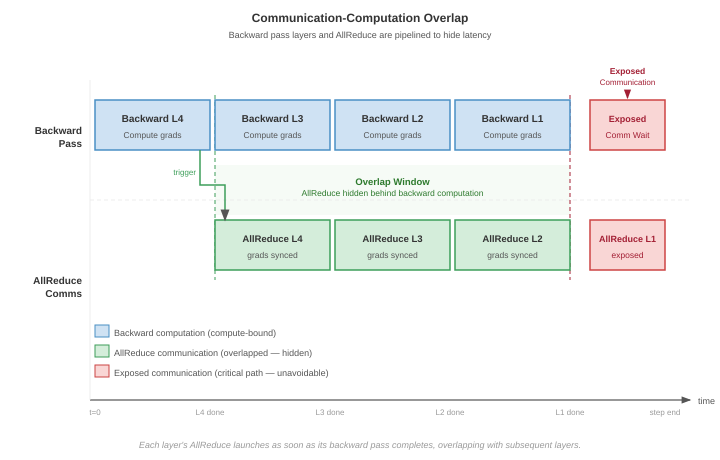</a>
</div>
<figcaption class="quarto-float-caption-bottom quarto-float-caption quarto-float-fig" id="fig-comm-compute-overlap-caption-0ceaefa1-69ba-4598-a22c-09a6ac19f8ca">
Figure&nbsp;3: <strong>Communication-Computation Overlap</strong>: By pipelining collective operations with the backward pass, systems can hide network latency behind arithmetic execution. Overlap is successful only when the nonoverlappable overhead (<span class="math inline">\(o\)</span>) is minimized, allowing the bulk transfer term to proceed while the GPU computes the next layer’s gradients.
</figcaption>
</figure>
</div>
<p>The choice between models depends on the analysis context. The <span class="math inline">\(\alpha\)</span>-<span class="math inline">\(\beta\)</span> model is the right tool for back-of-envelope calculations, algorithm selection (Ring vs.&nbsp;Tree), and cases where communication is blocking (synchronous barriers). Its strength is simplicity, since the two parameters can be measured directly with a point-to-point bandwidth test and a zero-byte message latency test. Its weakness is the assumption that the processor is idle during communication, which makes it overly pessimistic when overlap is possible. The LogP model earns its extra parameters when the analysis turns to <strong>Pipelined Execution</strong>, compute-communication overlap, or debugging why a theoretically fast algorithm underperforms (often high <span class="math inline">\(o\)</span>). Its distinction between network latency <span class="math inline">\(L_{\text{lat}}\)</span> (which can be hidden) and processor overhead <span class="math inline">\(o\)</span> (which cannot) determines whether a given overlap strategy will actually hide communication. The cost is that measuring <span class="math inline">\(o\)</span> accurately requires profiling tools such as NVIDIA Nsight Systems, because <span class="math inline">\(o\)</span> depends on the specific communication library and GPU driver stack.</p>
<p>In practice, most engineering calculations start with the <span class="math inline">\(\alpha\)</span>-<span class="math inline">\(\beta\)</span> model for initial sizing and algorithm selection, then refine with LogP analysis when communication-computation overlap is the target optimization. Both models share a common limitation: they assume a single flow on a single link. Real communication patterns involve multiple simultaneous flows competing for shared bandwidth, which can cause congestion that neither model captures. For congestion-sensitive workloads (particularly AllToAll for MoE), empirical benchmarking on the target cluster remains the necessary validation step.</p>
</section>
<section id="sec-communication-llama-budget" class="level3">
<h3 class="anchored" data-anchor-id="sec-communication-llama-budget">Putting the model to work: Llama 70B communication budget</h3>
<p>The alpha-beta model becomes most valuable when applied to real training configurations. Consider a concrete scenario: training a Llama-class 70B parameter model using data parallelism across 128 GPUs spanning 16 nodes of 8 GPUs each. The gradient tensor is 140 GB in BF16 (70 billion parameters at 2 bytes each, common for Llama-class training). During each training step, this entire gradient must be synchronized across all workers.</p>
<p>The calculation uses the bandwidth hierarchy before the chapter formalizes it: reduce as much data as possible over the fast NVLink tier inside each node, send only the reduced shard over the slower InfiniBand tier, then reconstruct the result locally. The primitive names become precise in the hierarchy section; the engineering idea is already visible in the bandwidth budget.</p>
<p>Using BF16 gradients (a common practice that halves communication volume to 140 GB), the contrast is stark. Routing the full gradient over the slow inter-node fabric, as a flat Ring AllReduce does, costs roughly 5,557 ms. Confining most of the traffic to NVLink and sending only the reduced shard over InfiniBand cuts that to approximately 1200.8 ms. The difference is not marginal; it determines whether communication can be hidden behind computation or whether it becomes the critical path.</p>
<p>The per-phase breakdown behind these numbers (the intra-node reduction, the reduced inter-node exchange, and the intra-node redistribution) builds on collective primitives developed in <a href="#sec-communication-collective-operations-collective-operations-collective-operation-vocabulary-fdc7" class="quarto-xref">section&nbsp;1.3</a>. <a href="#sec-communication-collective-operations-collective-operations-hierarchical-allreduce-1338" class="quarto-xref">Section&nbsp;1.5.1</a> names those primitives and works the full three-phase derivation; this budget establishes that the bandwidth hierarchy is worth respecting, and by how much.</p>
</section>
<section id="sec-communication-nccl-reality" class="level3 page-columns page-full">
<h3 class="anchored" data-anchor-id="sec-communication-nccl-reality">Theory vs.&nbsp;practice: The NCCL reality gap</h3>
<p>The bandwidth-latency trade-off (principle <a href="../parts/distributed_ml_principles.html#pri-alpha-beta-model">11</a>) provides useful first-order predictions, but real communication libraries introduce overheads that the idealized <span class="math inline">\(\alpha\)</span>-<span class="math inline">\(\beta\)</span> model does not capture. NCCL, a widely used GPU communication library, adds protocol negotiation, memory registration, and internal pipelining that modify the effective <span class="math inline">\(\alpha\)</span> and <span class="math inline">\(\beta\)</span> values <span class="citation" data-cites="jeaugey2017nccl nvidiaNcclUserGuide">(<a href="#ref-jeaugey2017nccl" role="doc-biblioref">Jeaugey 2017</a>; <a href="#ref-nvidiaNcclUserGuide" role="doc-biblioref">NVIDIA 2026</a>)</span>. <a href="#tbl-nccl-vs-theory" class="quarto-xref">Table&nbsp;3</a> compares one-message <span class="math inline">\(\alpha\)</span>-<span class="math inline">\(\beta\)</span> payload predictions against measured NCCL performance for common message sizes on an 8-node DGX H100 cluster (64 GPUs, InfiniBand NDR 400G).</p>
<div class="no-row-height column-margin column-container"></div><div id="tbl-nccl-vs-theory" class="quarto-float quarto-figure quarto-figure-center anchored">
<figure class="quarto-float quarto-float-tbl figure">
<figcaption class="quarto-float-caption-top quarto-float-caption quarto-float-tbl" id="tbl-nccl-vs-theory-caption-0ceaefa1-69ba-4598-a22c-09a6ac19f8ca">
Table&nbsp;3: <strong><span class="math inline">\(\alpha\)</span>-<span class="math inline">\(\beta\)</span> Predictions vs.&nbsp;Measured NCCL Performance</strong>: For small messages, NCCL’s protocol overhead (memory registration, channel setup, kernel launch) inflates the effective latency by 7–8<span class="math inline">\(\times\)</span> over the bare-wire <span class="math inline">\(\alpha\)</span>. For large messages, NCCL achieves within 8–15 percent of theoretical bandwidth, validating the one-message payload model in the bandwidth-bound regime. Values are illustrative reference numbers for an effective NCCL payload-transfer model on 8-node DGX H100 clusters with InfiniBand NDR 400G; actual collective timings vary with algorithm, topology, NCCL version, and tuning.
</figcaption>
<div aria-describedby="tbl-nccl-vs-theory-caption-0ceaefa1-69ba-4598-a22c-09a6ac19f8ca">
<table class="caption-top table">
<colgroup>
<col style="width: 9%">
<col style="width: 21%">
<col style="width: 21%">
<col style="width: 25%">
<col style="width: 21%">
</colgroup>
<thead>
<tr class="header">
<th style="text-align: left;"><strong>Message Size</strong></th>
<th style="text-align: center;"><strong><span class="math inline">\(\alpha\)</span>-<span class="math inline">\(\beta\)</span> Prediction</strong></th>
<th style="text-align: center;"><strong>Measured NCCL</strong></th>
<th style="text-align: center;"><strong>Ratio (Measured/Predicted)</strong></th>
<th style="text-align: left;"><strong>Explanation</strong></th>
</tr>
</thead>
<tbody>
<tr class="odd">
<td style="text-align: left;">1 KB</td>
<td style="text-align: center;">~3.1 μs</td>
<td style="text-align: center;">~25 μs</td>
<td style="text-align: center;">~8.1×</td>
<td style="text-align: left;">NCCL protocol setup dominates</td>
</tr>
<tr class="even">
<td style="text-align: left;">64 KB</td>
<td style="text-align: center;">~4.4 μs</td>
<td style="text-align: center;">~30 μs</td>
<td style="text-align: center;">~6.9×</td>
<td style="text-align: left;">Still latency-bound; NCCL overhead</td>
</tr>
<tr class="odd">
<td style="text-align: left;">1 MB</td>
<td style="text-align: center;">~23.1 μs</td>
<td style="text-align: center;">~40 μs</td>
<td style="text-align: center;">~1.7×</td>
<td style="text-align: left;">Transitioning to bandwidth-bound</td>
</tr>
<tr class="even">
<td style="text-align: left;">64 MB</td>
<td style="text-align: center;">~1.3 ms</td>
<td style="text-align: center;">~1.6 ms</td>
<td style="text-align: center;">~1.2×</td>
<td style="text-align: left;">NCCL approaches theoretical bandwidth</td>
</tr>
<tr class="odd">
<td style="text-align: left;">1 GB</td>
<td style="text-align: center;">~20 ms</td>
<td style="text-align: center;">~23 ms</td>
<td style="text-align: center;">~1.15×</td>
<td style="text-align: left;">Bandwidth-dominant; NCCL nearly optimal</td>
</tr>
<tr class="even">
<td style="text-align: left;">10 GB</td>
<td style="text-align: center;">~200 ms</td>
<td style="text-align: center;">~215 ms</td>
<td style="text-align: center;">~1.07×</td>
<td style="text-align: left;">Large payloads saturate the wire</td>
</tr>
</tbody>
</table>
</div>
</figure>
</div>
<p>The table reveals two critical lessons. First, the <span class="math inline">\(\alpha\)</span>-<span class="math inline">\(\beta\)</span> model underestimates small-message latency by 7–8<span class="math inline">\(\times\)</span> because it accounts only for wire-level propagation, not the software stack overhead. For latency-sensitive operations (tensor parallelism AllReduce, MoE token routing), the effective <span class="math inline">\(\alpha\)</span> is 5–10<span class="math inline">\(\times\)</span> higher than the physical wire latency. Second, for large messages the model is accurate to within 8–15 percent, confirming that bandwidth is the binding constraint and that NCCL’s internal optimizations (channel pipelining, kernel fusion) successfully saturate the available links.</p>
<p>This reality gap has practical consequences for algorithm selection. The crossover point between Ring and Tree AllReduce shifts upward in practice because the effective <span class="math inline">\(\alpha\)</span> is larger than the wire-level value. Engineers who use textbook <span class="math inline">\(\alpha\)</span> values will underestimate latency costs and may choose Ring when Tree would perform better. A robust practice is to measure the effective <span class="math inline">\(\alpha\)</span> on the specific cluster by benchmarking small-message AllReduce latency, then use that measured value in all subsequent calculations.</p>
<div id="quiz-question-sec-communication-collective-operations-collective-operations-network-performance-modeling-0d8e" class="callout callout-quiz-question">
<details class="callout-quiz-question fbx-simplebox fbx-default"><summary><strong>Self-Check: Question</strong></summary><div>
<ol type="1">
<li><p>An InfiniBand NDR cluster has an effective collective launch latency <span class="math inline">\(\alpha = 2\ \mu\text{s}\)</span> and sustained link bandwidth <span class="math inline">\(\beta = 50\text{ GB/s}\)</span>. Workload A sends 4 KB token routing messages in an MoE model, while Workload B synchronizes a 1 GB gradient buffer in a dense LLM. Applying the critical message size <span class="math inline">\(n^* = \alpha \cdot \beta\)</span>, which optimization strategy should each workload prioritize?</p>
<ol type="a">
<li>Both workloads should prioritize increasing raw link bandwidth <span class="math inline">\(\beta\)</span>, because total communication time on modern fabrics is always dominated by transfer throughput.</li>
<li>Workload A should prioritize gradient quantization to 1-bit, while Workload B should prioritize reducing CUDA launch latency <span class="math inline">\(\alpha\)</span>.</li>
<li>Workload A is bandwidth-bound because small messages cause network packet fragmentation, while Workload B is latency-bound because large buffers take more time to initialize.</li>
<li>Workload A should prioritize message fusion and kernel bypass because 4 KB is far below <span class="math inline">\(n^* = 100\text{ KB}\)</span> (latency-bound), while Workload B should prioritize gradient compression and link aggregation because 1 GB is far above <span class="math inline">\(n^*\)</span> (bandwidth-bound).</li>
</ol></li>
<li><p>A distributed training framework attempts to hide gradient communication behind backward pass computation. The backward pass takes <span class="math inline">\(500\ \mu\text{s}\)</span>. The network collective has transit latency <span class="math inline">\(L_{\text{lat}} = 100\ \mu\text{s}\)</span>, but requires GPU processor overhead <span class="math inline">\(o = 50\ \mu\text{s}\)</span> to initiate the transfer and <span class="math inline">\(o = 50\ \mu\text{s}\)</span> to complete it. Under the LogP model, what is the effective time for this step, and why?</p>
<ol type="a">
<li><span class="math inline">\(500\ \mu\text{s}\)</span>, because asynchronous non-blocking collective APIs completely hide both transit latency and processor launch overhead.</li>
<li><span class="math inline">\(600\ \mu\text{s}\)</span>, because the network transit latency <span class="math inline">\(L_{\text{lat}} = 100\ \mu\text{s}\)</span> overlaps with the <span class="math inline">\(500\ \mu\text{s}\)</span> compute window, but the <span class="math inline">\(2o = 100\ \mu\text{s}\)</span> processor overhead is non-overlappable and adds directly to the critical path.</li>
<li><span class="math inline">\(700\ \mu\text{s}\)</span>, because under LogP all parameters (<span class="math inline">\(L_{\text{lat}} + 2o + \text{compute}\)</span>) are strictly additive and cannot execute in parallel.</li>
<li><span class="math inline">\(100\ \mu\text{s}\)</span>, because collective operations preempt backward compute kernels on the GPU streaming multiprocessors.</li>
</ol></li>
<li><p>On an 8-node DGX H100 cluster with 400G InfiniBand NDR, the theoretical alpha-beta model predicts that a 1 KB AllReduce should take ~3.1 microseconds, but empirical NCCL microbenchmarks measure ~25 microseconds (an 8x discrepancy). Conversely, for a 1 GB AllReduce, the theoretical prediction of 20 ms matches the measured 23 ms within 15%. Explain the physical and architectural reasons for this ‘NCCL reality gap’.</p></li>
</ol>
<p><a href="#quiz-answer-sec-communication-collective-operations-collective-operations-network-performance-modeling-0d8e" class="question-label" onclick="event.preventDefault();document.getElementById('quiz-answer-sec-communication-collective-operations-collective-operations-network-performance-modeling-0d8e').scrollIntoView({behavior:'smooth',block:'start'});history.pushState(null,'','#quiz-answer-sec-communication-collective-operations-collective-operations-network-performance-modeling-0d8e');">See Answers →</a></p>
</div></details>
</div>
</section>
</section>
<section id="sec-communication-collective-operations-collective-operations-collective-operation-vocabulary-fdc7" class="level2 page-columns page-full">
<h2 class="anchored" data-anchor-id="sec-communication-collective-operations-collective-operations-collective-operation-vocabulary-fdc7">Choosing the Vehicle: Collective Operation Primitives</h2>
<p>If a GPU simply opens a socket and sends a massive gradient to another GPU, the entire cluster will rapidly collapse into an unmanageable web of deadlocks and congestion. With the terrain mapped, the gradient must now choose its vehicle: strictly choreographed group exchanges known as collective operations, a vocabulary standardized by MPI and inherited by modern ML communication libraries <span class="citation" data-cites="mpiforum2015mpi31">(<a href="#ref-mpiforum2015mpi31" role="doc-biblioref">Message Passing Interface Forum 2015</a>)</span>. <a href="#fig-collective-primitives-overview" class="quarto-xref">Figure&nbsp;4</a> illustrates four of the central primitives in this vocabulary: AllReduce, AllGather, ReduceScatter, and AllToAll. Each panel reads as a before-and-after across the process group, with one row per rank: blue cells mark the input each rank starts with, green cells mark the result it ends with, and orange marks the AllToAll routing that shuffles unique data between every pair of ranks. Two further primitives, Broadcast (rank 0 sends to all) and Reduce (all aggregate to rank 0), are foundational building blocks defined in <a href="#sec-collective-communication-six-core-primitives-8a66" class="quarto-xref">section&nbsp;1.3.1</a> and used implicitly in the figure’s compound patterns. <strong><a href="../backmatter/appendix_communication.html#sec-appdx-comm-foundations-collective-complexity">Collective Operation Complexity</a></strong> formalizes the semantics and latency and bandwidth complexity of each primitive; the prose here introduces them through their workload use cases, and the reader who wants the formal complexity bounds before proceeding can establish them there first.</p>
<div class="no-row-height column-margin column-container"></div><div id="dfn-collective-communication-collective-operation" class="callout callout-definition" title="Collective operation">
<details class="callout-definition fbx-simplebox fbx-default" open=""><summary><strong>Definition 1.3: Collective operation</strong></summary><div>
<p><strong><em>Collective Operation</em></strong> is a distributed communication pattern in which all processes in a group participate simultaneously to aggregate, broadcast, or redistribute data, with the correctness guarantee that each participant receives the result prescribed by the collective’s semantics regardless of message ordering or arrival time.</p>
<ol type="1">
<li><strong>Significance</strong>: The right collective algorithm determines whether communication scales with cluster size or remains constant. Ring AllReduce achieves bandwidth-optimal <span class="math inline">\(2(N-1)/N \times M / \beta\)</span> per node (constant in <span class="math inline">\(N\)</span>), while a naive reduce-then-broadcast approach costs <span class="math inline">\(\mathcal{O}(N \times M / \beta)\)</span>, making it 500<span class="math inline">\(\times\)</span> worse for <span class="math inline">\(N=1024\)</span>. Algorithm selection thus directly determines whether the <span class="math inline">\(\text{BW}\)</span> term in the iron law is the training bottleneck.</li>
<li><strong>Distinction</strong>: Unlike point-to-point communication (where one sender and one receiver exchange data independently), a collective operation coordinates the entire process group—every participant must invoke the collective before any can complete it, and the library guarantees a consistent result even when different processes contribute different data.</li>
<li><strong>Common pitfall</strong>: Assuming collective operations execute asynchronously without synchronization barriers. While non-blocking APIs return immediately to the host, the underlying device streams must synchronize at step boundaries, making straggler nodes the primary bottleneck for collective completion.</li>
</ol>
</div></details>
</div>
<div id="fig-collective-primitives-overview" class="quarto-float quarto-figure quarto-figure-center anchored" alt="Grid of 4 diagrams illustrating AllReduce, AllGather, ReduceScatter, and AllToAll communication patterns across a process group." data-fig-pos="htb" data-fig-env="figure">
<figure class="quarto-float quarto-float-fig figure">
<div aria-describedby="fig-collective-primitives-overview-caption-0ceaefa1-69ba-4598-a22c-09a6ac19f8ca">
<a href="images/svg/collective-primitives-overview.svg" class="lightbox" data-gallery="quarto-lightbox-gallery-7" title="Figure&nbsp;4: Four Central Collective Primitives: Standardized patterns for group communication in distributed systems. (1) AllReduce: all aggregate and all receive the result. (2) AllGather: all send to all and concatenate. (3) ReduceScatter: all aggregate and results are distributed in shards. (4) AllToAll: every process sends unique data to every other process. The two foundational primitives Broadcast (rank 0 sends to all) and Reduce (all aggregate to rank 0) compose the patterns shown here and are defined in the surrounding prose.">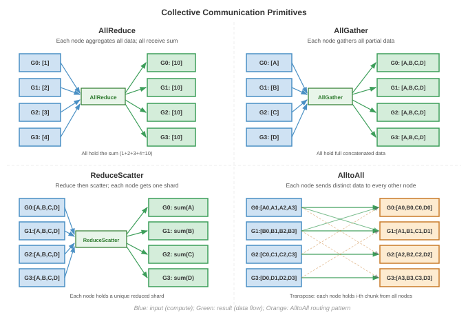</a>
</div>
<figcaption class="quarto-float-caption-bottom quarto-float-caption quarto-float-fig" id="fig-collective-primitives-overview-caption-0ceaefa1-69ba-4598-a22c-09a6ac19f8ca">
Figure&nbsp;4: <strong>Four Central Collective Primitives</strong>: Standardized patterns for group communication in distributed systems. (1) AllReduce: all aggregate and all receive the result. (2) AllGather: all send to all and concatenate. (3) ReduceScatter: all aggregate and results are distributed in shards. (4) AllToAll: every process sends unique data to every other process. The two foundational primitives Broadcast (rank 0 sends to all) and Reduce (all aggregate to rank 0) compose the patterns shown here and are defined in the surrounding prose.
</figcaption>
</figure>
</div>
<p>The primitive choice is the first scaling decision because it fixes which ranks must coordinate, which data must move, and which communication term will dominate. Different model architectures stress different operations, and selecting the wrong primitive for a workload creates unnecessary bottlenecks.</p>
<section id="sec-collective-communication-six-core-primitives-8a66" class="level3 page-columns page-full">
<h3 class="anchored" data-anchor-id="sec-collective-communication-six-core-primitives-8a66">The six core primitives</h3>
<p>The six primitives in <a href="#tbl-collective-primitives" class="quarto-xref">table&nbsp;4</a> form a decision ladder: use the narrowest operation that preserves the model’s mathematics, because every broader pattern adds participants, barriers, or contention.</p>
<div id="tbl-collective-primitives" class="quarto-float quarto-figure quarto-figure-center anchored" data-tbl-colwidths="[14,30,27,29]">
<figure class="quarto-float quarto-float-tbl figure">
<figcaption class="quarto-float-caption-top quarto-float-caption quarto-float-tbl" id="tbl-collective-primitives-caption-0ceaefa1-69ba-4598-a22c-09a6ac19f8ca">
Table&nbsp;4: <strong>The Six Collective Primitives</strong>: What each primitive computes, its primary use, and its communication cost, ordered from the narrowest pattern (Broadcast) to the most general (AllToAll).
</figcaption>
<div aria-describedby="tbl-collective-primitives-caption-0ceaefa1-69ba-4598-a22c-09a6ac19f8ca">
<table class="caption-top table">
<colgroup>
<col style="width: 14%">
<col style="width: 30%">
<col style="width: 27%">
<col style="width: 28%">
</colgroup>
<thead>
<tr class="header">
<th style="text-align: left;"><strong>Primitive</strong></th>
<th style="text-align: left;"><strong>What it does</strong></th>
<th style="text-align: left;"><strong>Primary use case</strong></th>
<th style="text-align: left;"><strong>Communication cost</strong></th>
</tr>
</thead>
<tbody>
<tr class="odd">
<td style="text-align: left;"><strong>Broadcast</strong></td>
<td style="text-align: left;">One sender transmits data to all receivers.</td>
<td style="text-align: left;">Distribute initial model weights from rank 0 at startup, across all parallelism strategies.</td>
<td style="text-align: left;"><span class="math inline">\(\mathcal{O}(\log N)\)</span> latency (tree); <span class="math inline">\(\mathcal{O}(M)\)</span> bandwidth.</td>
</tr>
<tr class="even">
<td style="text-align: left;"><strong>Reduce</strong></td>
<td style="text-align: left;">Aggregate data from all workers (sum, min, max) to a single root.</td>
<td style="text-align: left;">Aggregate validation metrics such as loss and accuracy to a logging process.</td>
<td style="text-align: left;"><span class="math inline">\(\mathcal{O}(\log N)\)</span> latency (tree); <span class="math inline">\(\mathcal{O}(M)\)</span> bandwidth.</td>
</tr>
<tr class="odd">
<td style="text-align: left;"><strong>AllReduce</strong></td>
<td style="text-align: left;">Aggregate from all workers, then distribute the result to all (<span class="math inline">\(y_i = \sum_{j=0}^{N-1} x_j\)</span> for all <span class="math inline">\(i\)</span>).</td>
<td style="text-align: left;">Data parallelism (<strong><a href="../distributed_training/distributed_training.html#sec-distributed-training-systems-systems-data-parallelism-6132">Data Parallelism</a></strong>): synchronize gradients so every GPU computes the same update.</td>
<td style="text-align: left;">Ring is bandwidth-optimal at <span class="math inline">\(2\frac{N-1}{N}\frac{M}{\beta}\)</span> but <span class="math inline">\(\mathcal{O}(N)\)</span> latency; Tree gives <span class="math inline">\(\mathcal{O}(\log N)\)</span> latency with worse bandwidth.</td>
</tr>
<tr class="even">
<td style="text-align: left;"><strong>AllGather</strong></td>
<td style="text-align: left;">Each worker’s data goes to all; the result concatenates every input (<span class="math inline">\(x_i \rightarrow [x_0, \dots, x_{N-1}]\)</span>).</td>
<td style="text-align: left;">Sharded data parallelism (FSDP/ZeRO): collect sharded parameters before a forward or backward pass.</td>
<td style="text-align: left;">Ring <span class="math inline">\(\frac{N-1}{N}\frac{M}{\beta}\)</span>; resident data grows from an <span class="math inline">\(M/N\)</span> shard to the full <span class="math inline">\(M\)</span>.</td>
</tr>
<tr class="odd">
<td style="text-align: left;"><strong>ReduceScatter</strong></td>
<td style="text-align: left;">Reduce across workers, but scatter so each keeps a distinct chunk (worker <span class="math inline">\(i\)</span> receives the <span class="math inline">\(i\)</span>-th block of <span class="math inline">\(\sum x_j\)</span>).</td>
<td style="text-align: left;">Sharded data parallelism: reduce gradients while keeping them sharded to save memory.</td>
<td style="text-align: left;">Ring <span class="math inline">\(\frac{N-1}{N}\frac{M}{\beta}\)</span>; the inverse of AllGather.</td>
</tr>
<tr class="even">
<td style="text-align: left;"><strong>AllToAll</strong></td>
<td style="text-align: left;">The most general pattern: worker <span class="math inline">\(i\)</span> sends a distinct chunk to each worker <span class="math inline">\(j\)</span>, a distributed matrix transpose.</td>
<td style="text-align: left;">MoE routing tokens to experts; DLRM exchanging embedding lookups across workers.</td>
<td style="text-align: left;"><span class="math inline">\(\frac{N-1}{N}M\)</span> per worker, but <span class="math inline">\(\mathcal{O}(N^2)\)</span> logical connections make contention the scaling limit.</td>
</tr>
</tbody>
</table>
</div>
</figure>
</div>
<p>Ring achieves AllReduce’s bandwidth-optimal cost while Tree trades bandwidth for logarithmic latency; <strong><a href="../backmatter/appendix_communication.html#sec-appdx-comm-foundations-allreduce">AllReduce</a></strong> develops the formal definition and a worked example comparing the two, so a reader who wants that derivation can take the full treatment there <span class="citation" data-cites="patarasuk2009 thakur2005">(<a href="#ref-patarasuk2009" role="doc-biblioref">Patarasuk and Yuan 2009</a>; <a href="#ref-thakur2005" role="doc-biblioref">Thakur et al. 2005</a>)</span>.</p>
<div class="no-row-height column-margin column-container"><div id="fn8"><p><sup>8</sup>&nbsp;<strong>FSDP (Fully Sharded Data Parallel)</strong>: PyTorch’s fully sharded implementation follows the ZeRO-3 idea of sharding parameters, gradients, and optimizer states across <span class="math inline">\(N\)</span> accelerators <span class="citation" data-cites="rajbhandari2020">(<a href="#ref-rajbhandari2020" role="doc-biblioref">Rajbhandari et al. 2020</a>)</span>. The trade-off is communication frequency: full sharding adds layer-level AllGather and ReduceScatter operations instead of relying only on data parallelism’s step-level AllReduce, making it more sensitive to the <span class="math inline">\(\alpha\)</span> overhead.</p><div id="ref-rajbhandari2020" class="csl-entry" role="listitem">
Rajbhandari, Samyam, Jeff Rasley, Olatunji Ruwase, and Yuxiong He. 2020. <span>“ZeRO: Memory Optimizations Toward Training Trillion Parameter Models.”</span> <em>SC20: International Conference for High Performance Computing, Networking, Storage and Analysis</em>, 1–16. https://doi.org/10.1109/sc41405.2020.00024.
</div></div></div><p>A key insight is that AllReduce can be decomposed into ReduceScatter followed by AllGather. This is not merely a mathematical equivalence; it is precisely how Ring AllReduce works internally (the Scatter-Reduce phase is a ReduceScatter, the AllGather phase is an AllGather). ZeRO-style sharding, realized in PyTorch as FSDP,<a href="#fn8" class="footnote-ref" id="fnref8" role="doc-noteref"><sup>8</sup></a> exploits this decomposition by AllGathering parameter shards before a module needs them and ReduceScattering gradients after backward so each rank retains only its shard for the optimizer step <span class="citation" data-cites="rajbhandari2020">(<a href="#ref-rajbhandari2020" role="doc-biblioref">Rajbhandari et al. 2020</a>)</span>. This shards parameters, gradients, and optimizer state across workers, reducing persistent model-state memory roughly by <span class="math inline">\(N \times\)</span>, while temporary full-parameter buffers and prefetching determine peak memory.</p>
<p>The same AllGather/ReduceScatter pair also appears in sequence parallelism: an AllGather reconstructs the activation view needed for a local operation, and a later ReduceScatter redistributes the result along the sequence dimension. That example will matter later because it shows that a primitive’s semantics stay fixed even when the tensor dimension being sharded changes.</p>
<p>This ladder matters because the primitive determines the synchronization shape before any algorithmic optimization begins. AllReduce creates global agreement, AllGather and ReduceScatter trade memory for repeated shard movement, and AllToAll replaces a bandwidth problem with fan-out and contention.</p>
<p>The contrast between AllToAll and AllReduce highlights a fundamental difference in how collective operations scale with cluster size.</p>
<div id="psp-collective-communication-alltoall-vs-allreduce-why-scale-differs" class="callout callout-perspective" title="AllToAll vs. AllReduce: Why scale differs">
<p></p><details class="callout-perspective fbx-simplebox fbx-default" open=""><summary><strong>Systems Perspective 1.1: AllToAll vs. AllReduce: Why scale differs</strong></summary><div>While AllReduce scales efficiently because it can be pipelined in a ring (where each node only talks to its neighbor), AllToAll is fundamentally harder to scale.<p></p>
<p>In an AllToAll, every process has a unique piece of data for every other process. This creates <span class="math inline">\(\mathcal{O}(N^2)\)</span> logical connections. At the hardware level, this leads to <strong>Network Contention</strong>: if 1024 GPUs all try to send data to different targets simultaneously, the “Fat-Tree” or “Spine” switches in the data center become the bottleneck.</p>

<p>This is why expert parallelism and large-scale recommendation systems often hit a “communication wall” much earlier than standard data-parallel models. The algorithm choice (AllReduce vs.&nbsp;AllToAll) determines the scaling ceiling.</p>
</div></details>
</div>
<div class="no-row-height column-margin column-container"><div class="">
<p><a href="images/svg/vol2_collective_communication_margin_001.svg" class="lightbox" data-gallery="quarto-lightbox-gallery-8"></a></p>
<p><em>All-to-All traffic scales worse than AllReduce.</em></p>
</div></div><p>To make the AllToAll pattern concrete, consider a mixture-of-experts model with 64 experts distributed across 8 GPUs (8 experts per GPU). During each forward pass, a gating network assigns each input token to one or more experts. The tokens assigned to experts on remote GPUs must be physically moved to those GPUs before computation can proceed, and the results must be moved back afterward.</p>
<div id="nbk-collective-communication-alltoall-moe-token-routing" class="callout callout-notebook" title="AllToAll for MoE token routing">
<p></p><details class="callout-notebook fbx-simplebox fbx-default" open=""><summary><strong>Napkin Math 1.4: AllToAll for MoE token routing</strong></summary><div><strong>Problem</strong>: A MoE model processes a batch of 4096 tokens across 8 GPUs (512 tokens per GPU). Each token is a 2048-dimensional hidden state in BF16 (4.096 KB per token). The gating network assigns each token to exactly 1 of 64 experts (8 experts per GPU). Assuming uniform routing (each expert receives 64 tokens), how much data does each GPU send and receive?<p></p>
<p><strong>Math</strong>:</p>
<p>Each GPU holds 512 tokens that need to reach 64 different experts across 8 GPUs. With uniform routing, each GPU sends 64 tokens to each of the other 7 GPUs (keeping 64 tokens local).</p>
<ul>
<li>Data per GPU-to-GPU transfer: 64 tokens <span class="math inline">\(\times\)</span> 4.096 KB/token = 262.144 KB</li>
<li>Total data sent per GPU: 7 <span class="math inline">\(\times\)</span> 262.144 KB = 1.84 MB</li>
<li>Total data received per GPU: 1.84 MB (symmetric)</li>
</ul>
<p><strong>Latency Analysis</strong> (InfiniBand NDR, <span class="math inline">\(\alpha =\)</span> 3 μs, <span class="math inline">\(\beta =\)</span> 50 GB/s):</p>
<p>Each of the 7 transfers is a 262.144 KB message. From the <span class="math inline">\(\alpha\)</span>-<span class="math inline">\(\beta\)</span> model: <span class="math inline">\(T_{\text{transfer}}\)</span> = 3 μs + 5 μs = 8 μs per transfer.</p>
<p>If serialized: 7 <span class="math inline">\(\times\)</span> 8 μs = 56 μs. If all 7 transfers are issued concurrently, they still share the GPU’s 50 GB/s injection port. The aggregate injection lower bound is therefore <span class="math inline">\(\alpha + \text{total bytes sent}/\beta =\)</span> 39.7 μs, before contention and additional collective overhead. Full duplex permits simultaneous sending and receiving; it does not provide one full-bandwidth outgoing port per peer.</p>
<p><strong>Systems insight</strong>: The per-transfer sizes in this MoE example sit near the critical-message-size boundary, so startup overhead remains comparable to serialization time. This is why MoE scaling is often constrained by <span class="math inline">\(\alpha\)</span> (latency), fan-out, and contention rather than raw <span class="math inline">\(\beta\)</span> (bandwidth) alone, and why MoE systems benefit from low-latency switches, RDMA, message fusion, and topology-aware routing. The AllToAll also runs twice per layer (once for token dispatch, once for result collection), doubling the startup tax.</p>
</div></details>
</div>
<p>In practice, MoE routing is rarely perfectly uniform. Popular experts receive more tokens than unpopular ones, creating load imbalance that translates to communication imbalance. If one expert receives 3<span class="math inline">\(\times\)</span> more tokens than average, the GPU hosting that expert receives 3<span class="math inline">\(\times\)</span> more incoming data, creating a hotspot that can stall the entire collective (since AllToAll is a barrier operation). Large MoE systems address this through auxiliary load-balancing losses that penalize the gating network for routing too many tokens to any single expert, and through capacity factors that cap the maximum number of tokens an expert can accept (dropping overflow tokens). These techniques trade a small amount of model quality for communication balance, which is the right trade-off at scale.</p>
<p><a href="#tbl-collective-selection" class="quarto-xref">Table&nbsp;5</a> maps these primitives to the parallelism strategies introduced in <strong><a href="../distributed_training/distributed_training.html#sec-distributed-training-systems">Distributed Training</a></strong> and the lighthouse archetypes introduced in <strong><a href="../introduction/introduction.html#sec-vol2-introduction-archetypes">Three systems archetypes</a></strong>.</p>
<div id="tbl-collective-selection" class="quarto-float quarto-figure quarto-figure-center anchored">
<figure class="quarto-float quarto-float-tbl figure">
<figcaption class="quarto-float-caption-top quarto-float-caption quarto-float-tbl" id="tbl-collective-selection-caption-0ceaefa1-69ba-4598-a22c-09a6ac19f8ca">
Table&nbsp;5: <strong>Collective Operation Selection Guide</strong>: Matching training strategies to their primary collective operations enables efficient distributed communication design. MoE and DLRM serve as canonical “lighthouse” workloads throughout this book, representing sparse expert architectures and recommendation systems respectively. Pipeline Parallelism uniquely relies on point-to-point rather than collective communication.
</figcaption>
<div aria-describedby="tbl-collective-selection-caption-0ceaefa1-69ba-4598-a22c-09a6ac19f8ca">
<table class="caption-top table">
<colgroup>
<col style="width: 27%">
<col style="width: 30%">
<col style="width: 41%">
</colgroup>
<thead>
<tr class="header">
<th style="text-align: left;"><strong>Training Strategy</strong></th>
<th style="text-align: center;"><strong>Primary Collective</strong></th>
<th style="text-align: left;"><strong>Bottleneck Characteristic</strong></th>
</tr>
</thead>
<tbody>
<tr class="odd">
<td style="text-align: left;"><strong>Data Parallelism</strong></td>
<td style="text-align: center;">AllReduce</td>
<td style="text-align: left;">Bandwidth-bound (large gradients)</td>
</tr>
<tr class="even">
<td style="text-align: left;"><strong>FSDP/ZeRO-3</strong></td>
<td style="text-align: center;">AllGather, ReduceScatter</td>
<td style="text-align: left;">Bandwidth-bound, high frequency</td>
</tr>
<tr class="odd">
<td style="text-align: left;"><strong>Tensor Parallelism</strong></td>
<td style="text-align: center;">AllReduce, AllGather</td>
<td style="text-align: left;">Latency-bound (requires NVLink)</td>
</tr>
<tr class="even">
<td style="text-align: left;"><strong>Pipeline Parallelism</strong></td>
<td style="text-align: center;">Point-to-Point (Send/Recv)</td>
<td style="text-align: left;">Latency-bound (microbatch handoffs)</td>
</tr>
<tr class="odd">
<td style="text-align: left;"><strong>Sequence Parallelism</strong></td>
<td style="text-align: center;">AllGather, ReduceScatter</td>
<td style="text-align: left;">Bandwidth-bound (activation exchange)</td>
</tr>
<tr class="even">
<td style="text-align: left;"><strong>MoE (Experts)</strong></td>
<td style="text-align: center;">AllToAll</td>
<td style="text-align: left;">Latency-sensitive + contention</td>
</tr>
<tr class="odd">
<td style="text-align: left;"><strong>DLRM (RecSys)</strong></td>
<td style="text-align: center;">AllToAll</td>
<td style="text-align: left;">Latency &amp; Bandwidth (sparse lookups)</td>
</tr>
</tbody>
</table>
</div>
</figure>
</div>
</section>
<section id="sec-communication-fsdp-patterns" class="level3 page-columns page-full">
<h3 class="anchored" data-anchor-id="sec-communication-fsdp-patterns">FSDP communication patterns</h3>

<div class="no-row-height column-margin column-container"><div class="">
<p><a href="images/svg/vol2_collective_communication_margin_002.svg" class="lightbox" data-gallery="quarto-lightbox-gallery-9"></a></p>
<p><em>FSDP trades one step-level collective for two per-layer collectives.</em></p>
</div></div><p>The FSDP/ZeRO strategy deserves special attention because its communication pattern differs fundamentally from standard data parallelism <span class="citation" data-cites="rajbhandari2020">(<a href="#ref-rajbhandari2020" role="doc-biblioref">Rajbhandari et al. 2020</a>)</span>. In standard data parallelism, each GPU holds a complete copy of the model, computes gradients locally, and synchronizes via a single AllReduce at the end of the backward pass. Full sharding eliminates this redundancy by partitioning the model parameters across GPUs, so each GPU holds only its local shard outside the moments when a layer must be reconstructed.</p>
<p>Because each GPU now holds only <span class="math inline">\(1/N\)</span> of the parameters, it must reconstruct the full tensor before it can use a layer, and that reconstruction is what transforms the communication pattern. Before each layer’s forward pass, the GPU calls AllGather to collect the shards from all other GPUs. After the backward pass, the gradients are reduced and redistributed via ReduceScatter, so each GPU holds gradients only for its own parameter shard. The sharded parameters can then be discarded (freed from memory) until the next forward pass needs them.</p>
<p>The consequence is a displacement of overhead: sharding relieves the memory bottleneck but raises communication frequency. Standard data parallelism communicates once per training step (a single AllReduce of the full gradient). FSDP communicates twice per layer per step (AllGather in forward, ReduceScatter in backward), but each communication is smaller (only that layer’s parameters, sharded across ranks). For a model with <span class="math inline">\(N_L\)</span> layers, FSDP issues <span class="math inline">\(2N_L\)</span> collective operations per step instead of 1; across all those operations, the total communication volume can be comparable to the single full-gradient AllReduce, but it is spread across many smaller operations.</p>
<p>The higher operation count makes FSDP more sensitive to latency (<span class="math inline">\(\alpha\)</span>) than standard data parallelism. If each of the <span class="math inline">\(2N_L\)</span> collectives pays the full NCCL startup overhead (25–50 <span class="math inline">\(\mu\text{s}\)</span> per operation from <a href="#tbl-nccl-vs-theory" class="quarto-xref">table&nbsp;3</a>), the aggregate overhead for a 100-layer model is 5–10 ms, which can represent a meaningful fraction of step time. FSDP implementations mitigate this through prefetching (launching the next layer’s AllGather while the current layer is computing) and communication stream pipelining (using dedicated CUDA streams for communication that overlap with compute streams).</p>
<p>Selecting the right collective algorithm at each invocation requires understanding these asymmetric patterns. The AllGather operations in FSDP are medium-sized (one layer’s parameters, typically 10–100 MB for transformer models) and latency-sensitive (because computation blocks until the full parameters are available). The ReduceScatter operations are of similar size but can overlap with the next layer’s backward computation. This asymmetry means the AllGather operations benefit more from low-latency algorithms (Tree or hybrid) while the ReduceScatter operations can use bandwidth-optimal algorithms (Ring) because their latency is hidden behind computation.</p>
<p>The collective primitives catalog in the preceding section defines what must be communicated; the question now becomes how to execute these primitives efficiently on real networks. The most performance-critical primitive, AllReduce, admits multiple algorithmic implementations whose latency and bandwidth characteristics differ by orders of magnitude. The choice of algorithm can change AllReduce time by an order of magnitude, making this the single most consequential implementation decision in distributed training.</p>
<div id="quiz-question-sec-communication-collective-operations-collective-operations-collective-operation-vocabulary-fdc7" class="callout callout-quiz-question">
<details class="callout-quiz-question fbx-simplebox fbx-default"><summary><strong>Self-Check: Question</strong></summary><div>
<ol type="1">
<li><p>In Fully Sharded Data Parallel (FSDP / ZeRO-3) training, each GPU stores only a <span class="math inline">\(1/N\)</span> shard of model parameters, gradients, and optimizer states. Which sequence of collective primitives correctly describes how FSDP executes each layer’s forward and backward passes while minimizing persistent VRAM usage?</p>
<ol type="a">
<li>AllGather before the layer’s forward pass to reconstruct full weights -&gt; discard full weights -&gt; AllGather before backward pass -&gt; ReduceScatter after backward pass to reduce and shard gradients.</li>
<li>AllReduce before forward pass to aggregate parameters -&gt; Broadcast after backward pass to synchronize gradient updates across all replicas.</li>
<li>ReduceScatter before forward pass to distribute activations -&gt; AllGather after backward pass to collect full unreduced gradients.</li>
<li>AllToAll before forward pass to transpose weight matrices -&gt; Reduce after backward pass to send gradients to rank 0.</li>
</ol></li>
<li><p>A team scales an MoE model with expert parallelism from 64 to 512 GPUs and observes that token dispatch throughput degrades severely, while dense AllReduce on the same cluster scales near-linearly. What fundamental network property explains why AllToAll exhibits this scaling ceiling much earlier than AllReduce?</p>
<ol type="a">
<li>AllToAll cannot utilize GPUDirect RDMA and is forced to route all token tensors through host CPU RAM and operating system kernel sockets.</li>
<li>AllToAll requires floating-point additions inside network switches, which are supported only on clusters with fewer than 64 GPUs.</li>
<li>AllToAll is restricted to single-node NVLink domains and cannot be routed across InfiniBand or Ethernet inter-node fabrics.</li>
<li>AllToAll creates <span class="math inline">\(\mathcal{O}(N^2)\)</span> logical point-to-point flows where every worker sends unique data to every other worker, causing severe bisection bandwidth saturation and spine switch buffer contention.</li>
</ol></li>
<li><p>A team migrates a 7B-parameter dense model from standard PyTorch DistributedDataParallel (DDP) to FSDP across 64 GPUs. Total data volume communicated across the entire step remains roughly comparable, yet training step time increases significantly due to communication overhead. Explain the trade-off between communication volume and collective frequency that accounts for this throughput degradation.</p></li>
</ol>
<p><a href="#quiz-answer-sec-communication-collective-operations-collective-operations-collective-operation-vocabulary-fdc7" class="question-label" onclick="event.preventDefault();document.getElementById('quiz-answer-sec-communication-collective-operations-collective-operations-collective-operation-vocabulary-fdc7').scrollIntoView({behavior:'smooth',block:'start'});history.pushState(null,'','#quiz-answer-sec-communication-collective-operations-collective-operations-collective-operation-vocabulary-fdc7');">See Answers →</a></p>
</div></details>
</div>
</section>
</section>
<section id="sec-communication-collective-operations-collective-operations-allreduce-algorithms-7545" class="level2 page-columns page-full">
<h2 class="anchored" data-anchor-id="sec-communication-collective-operations-collective-operations-allreduce-algorithms-7545">Engineering the Flow: AllReduce Algorithms</h2>
<p>A correct AllReduce must give all 1,000 GPUs the exact sum of all 1,000 one-gigabyte gradients, and the algorithm that delivers it sets the cluster’s scaling ceiling. The naive answer (every GPU sends to one central server, whose network card instantly saturates) fails first, which makes it the right place to start.</p>
<section id="sec-communication-collective-operations-naive-vs-optimal" class="level3 page-columns page-full">
<h3 class="anchored" data-anchor-id="sec-communication-collective-operations-naive-vs-optimal">Naive approaches vs.&nbsp;the bandwidth bottleneck</h3>
<p>Consider a naive implementation using a Parameter Server (Star topology). All <span class="math inline">\(N\)</span> workers send their gradients to rank 0; rank 0 sums them and sends the result back. The constraint is rank 0’s bandwidth: it must receive <span class="math inline">\(N \times M\)</span> bytes and send <span class="math inline">\(N \times M\)</span> bytes, so the time grows as <span class="math inline">\(T \propto N \times M / \beta\)</span>. At 1,000 GPUs, this makes the central rank the scaling bottleneck rather than the arithmetic.</p>
<p>This naive approach captures the pressure that early distributed ML frameworks had to manage: parameter-server systems receive, aggregate, and redistribute model updates through a server tier, while practical implementations shard the parameter space to spread that load <span class="citation" data-cites="dean2012large li2014">(<a href="#ref-dean2012large" role="doc-biblioref">Dean et al. 2012</a>; <a href="#ref-li2014" role="doc-biblioref">Li et al. 2014</a>)</span>. Sharding reduces the per-server traffic from <span class="math inline">\(N \times M\)</span> to <span class="math inline">\(N \times M/K_{\text{srv}}\)</span> (where <span class="math inline">\(K_{\text{srv}}\)</span> is the number of servers), but the server tier still grows as workers and model state grow, and it introduces additional complexity in parameter partitioning and consistency management.</p>
<div class="no-row-height column-margin column-container"></div><p>The fundamental limitation is that any star-topology approach concentrates traffic at a central point. Regardless of how many servers participate, the aggregate traffic through the central tier scales as <span class="math inline">\(\mathcal{O}(N \times M)\)</span>. True scalability requires algorithms where the communication volume per node is constant regardless of <span class="math inline">\(N\)</span>. This property, known as <strong>Bandwidth Optimality</strong>, is the design target for scalable collective algorithms.</p>
<div id="ws-collective-communication-horovod-ring-allreduce" class="callout callout-war-story" title="When the parameter server became the bottleneck (2017)">
<p></p><details class="callout-war-story fbx-simplebox fbx-default" open=""><summary><strong>War Story 1.1: When the parameter server became the bottleneck (2017)</strong></summary><div><strong>Context</strong>: In 2017, Alexander Sergeev and Mike Del Balso’s team at Uber open-sourced Horovod as part of Uber’s Michelangelo ML platform, where TensorFlow training jobs needed to scale across many GPUs without forcing every model author to rewrite large portions of training code <span class="citation" data-cites="sergeev2018horovod">(<a href="#ref-sergeev2018horovod" role="doc-biblioref">Sergeev and Balso 2018</a>)</span>.<p></p>
<p><strong>Mechanism</strong>: TensorFlow’s stock distributed training relied on a parameter-server pattern that concentrated gradient traffic through a central tier. As worker count <span class="math inline">\(N\)</span> grew, the central server link saturated, degrading scaling efficiency.</p>
<p><strong>Impact</strong>: Scaling training beyond a single node resulted in severe throughput bottlenecks and required complex, model-specific parameter partitioning.</p>
<p><strong>Fix</strong>: Uber adopted Baidu’s ring-allreduce algorithm <span class="citation" data-cites="gibiansky2017baidu">(<a href="#ref-gibiansky2017baidu" role="doc-biblioref">Gibiansky 2017</a>)</span>, wrapping bandwidth-optimal collective reduction behind a lightweight API that replaced parameter servers with ring communication.</p>
<p><strong>Systems lesson</strong>: A collective algorithm is also a developer interface. Scaling improves when the communication primitive is both bandwidth efficient and easy enough that teams actually use it correctly.</p>
</div></details>
</div>
<div class="no-row-height column-margin column-container"></div><div class="no-row-height column-margin column-container"></div></section>
<section id="sec-communication-bandwidth-lower-bound" class="level3 page-columns page-full">
<h3 class="anchored" data-anchor-id="sec-communication-bandwidth-lower-bound">The bandwidth-optimal lower bound</h3>
<p>Before examining specific algorithms, it is useful to establish a theoretical lower bound. In any correct AllReduce, every GPU starts with <span class="math inline">\(M\)</span> bytes of local data and ends with <span class="math inline">\(M\)</span> bytes of globally reduced data. Each byte of the final result incorporates information from all <span class="math inline">\(N\)</span> GPUs, which means every GPU must receive at least <span class="math inline">\(M \cdot (N-1)/N\)</span> bytes of “new” information (the contributions from all other GPUs). Symmetrically, each GPU must send at least <span class="math inline">\(M \cdot (N-1)/N\)</span> bytes (its own contribution to the other GPUs’ results).</p>
<p>The minimum total transfer per GPU is therefore <span class="math inline">\(2 \cdot M \cdot (N-1)/N\)</span> bytes (send plus receive). Dividing by the link bandwidth <span class="math inline">\(\beta\)</span> gives the <strong>Bandwidth Lower Bound</strong>:</p>
<p><span class="math display">\[T_{\text{bandwidth}}^{\text{min}} = \frac{2(N-1)}{N} \cdot \frac{M}{\beta}\]</span></p>
<p>As <span class="math inline">\(N\)</span> grows large, this approaches <span class="math inline">\(2M/\beta\)</span>, which is independent of <span class="math inline">\(N\)</span>. An algorithm that achieves this bound is bandwidth-optimal. Ring AllReduce achieves this bound exactly; simple tree variants do not <span class="citation" data-cites="patarasuk2009 thakur2005">(<a href="#ref-patarasuk2009" role="doc-biblioref">Patarasuk and Yuan 2009</a>; <a href="#ref-thakur2005" role="doc-biblioref">Thakur et al. 2005</a>)</span>. This distinction has practical consequences: on a 64-GPU cluster synchronizing a 1 GB gradient, the bandwidth difference between an optimal and a merely logarithmic algorithm amounts to several milliseconds per step, which accumulates to hours over a multi-day training run.</p>
<div class="no-row-height column-margin column-container"></div></section>
<section id="sec-communication-collective-operations-collective-operations-ring-allreduce-ffce" class="level3 page-columns page-full">
<h3 class="anchored" data-anchor-id="sec-communication-collective-operations-collective-operations-ring-allreduce-ffce">Ring AllReduce</h3>
<p>Ring AllReduce<a href="#fn9" class="footnote-ref" id="fnref9" role="doc-noteref"><sup>9</sup></a> arranges nodes in a logical ring (<span class="math inline">\(0 \to 1 \to \dots \to N-1 \to 0\)</span>). It achieves bandwidth optimality by pipelining: every node sends and receives simultaneously on every link <span class="citation" data-cites="patarasuk2009">(<a href="#ref-patarasuk2009" role="doc-biblioref">Patarasuk and Yuan 2009</a>)</span>.</p>
<div class="no-row-height column-margin column-container"><div id="fn9"><p><sup>9</sup>&nbsp;<strong>Bandwidth-Optimal</strong>: Ring AllReduce achieves the information-theoretic lower bound of <span class="math inline">\(2(N-1)/N \cdot M/\beta\)</span> bytes per node, meaning no correct AllReduce algorithm can move fewer bytes per node regardless of topology or strategy. This optimality holds because every GPU must receive <span class="math inline">\(M(N-1)/N\)</span> bytes of “new” information from other GPUs and contribute the same amount, and Ring saturates every link in every step.</p></div></div><p>The algorithm splits the vector of size <span class="math inline">\(M\)</span> into <span class="math inline">\(N\)</span> chunks and then alternates communication and local reduction in two named phases: Scatter-Reduce followed by AllGather. <a href="#algo-ring-allreduce" class="quarto-xref">Algorithm 1</a> states the mechanics before the figure and trace make the same dataflow concrete.</p>
<div id="algo-ring-allreduce" class="pseudocode-container quarto-float" data-line-number-punc=":" data-indent-size="1.2em" data-pseudocode-number="1" data-line-number="true" data-comment-delimiter="▷" data-no-end="false" data-caption-prefix="Algorithm" data-indent-lines="false">
<div class="pseudocode">
\begin{algorithm} \caption{Ring AllReduce} \begin{algorithmic} \Require $N$ ranks in a logical ring; each rank $i$ starts with tensor $G_i$ of $M$ bytes, split into $N$ chunks \Ensure every rank holds $G = \sum_{i=0}^{N-1} G_i$ \State assign the ring order $0\to 1\to\dots\to N{-}1\to 0$ \For{$N-1$ scatter-reduce steps} \State each rank sends one chunk (or partial sum) right, receives one from the left, and adds it into the matching local sum \EndFor \State each rank now owns one fully reduced chunk of $G$ \For{$N-1$ all-gather steps} \State each rank forwards a reduced chunk around the ring and stores the chunks it receives \EndFor \State \Return the complete reduced tensor $G$, held on every rank \end{algorithmic} \end{algorithm}
</div>
</div>
<p>Across the <span class="math inline">\(2(N-1)\)</span> send/receive rounds each rank moves <span class="math inline">\(M/N\)</span> bytes per round, for <span class="math inline">\(2(N-1)M/N\)</span> bytes sent and the same received: the bandwidth term reaches the information-theoretic lower bound, while the latency term grows as <span class="math inline">\(2(N-1)\alpha\)</span>. The data flow during the Scatter-Reduce phase is illustrated in <a href="#fig-ring-allreduce" class="quarto-xref">figure&nbsp;5</a>.</p>
<div id="fig-ring-allreduce" class="quarto-float quarto-figure quarto-figure-center anchored" alt="Horizontal linear layout of N GPUs forming a logical ring, with an orthogonal wrap-around bus closing the loop. Arrows show data flow along the ring; color-coded chunks at each GPU represent partial gradient sums." data-fig-pos="htb" data-fig-env="figure">
<figure class="quarto-float quarto-float-fig figure">
<div aria-describedby="fig-ring-allreduce-caption-0ceaefa1-69ba-4598-a22c-09a6ac19f8ca">
<a href="images/svg/ring-allreduce.svg" class="lightbox" data-gallery="quarto-lightbox-gallery-10" title="Figure&nbsp;5: Ring AllReduce Data Flow: Nodes arranged in a logical ring exchange chunks in two phases: a Scatter-Reduce phase (each node accumulates one chunk’s partial sum) followed by an AllGather phase (complete sums circulate to all nodes). The figure shows the ring laid out horizontally with a wrap-around bus closing the loop; every link is used simultaneously, achieving bandwidth optimality.">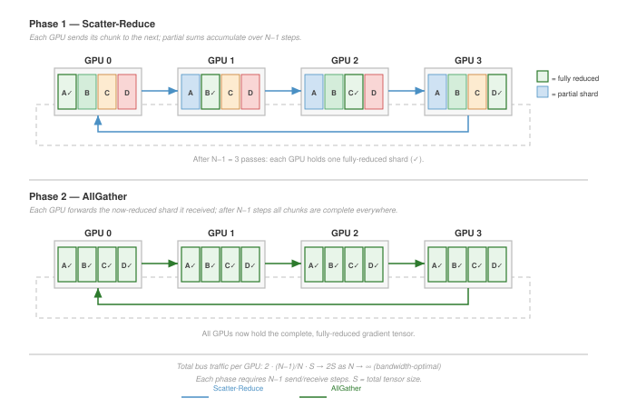</a>
</div>
<figcaption class="quarto-float-caption-bottom quarto-float-caption quarto-float-fig" id="fig-ring-allreduce-caption-0ceaefa1-69ba-4598-a22c-09a6ac19f8ca">
Figure&nbsp;5: <strong>Ring AllReduce Data Flow</strong>: Nodes arranged in a logical ring exchange chunks in two phases: a Scatter-Reduce phase (each node accumulates one chunk’s partial sum) followed by an AllGather phase (complete sums circulate to all nodes). The figure shows the ring laid out horizontally with a wrap-around bus closing the loop; every link is used simultaneously, achieving bandwidth optimality.
</figcaption>
</figure>
</div>
<p>The key property visible in <a href="#fig-ring-allreduce" class="quarto-xref">figure&nbsp;5</a> is that every link carries data simultaneously in every step, leaving no link idle. This uniform link utilization is what makes Ring AllReduce bandwidth-optimal: each node sends exactly <span class="math inline">\(2(N-1)/N \cdot M\)</span> bytes total across both phases, matching the information-theoretic lower bound. <strong><a href="../backmatter/appendix_communication.html#sec-appdx-comm-foundations-ring-vs-tree">Ring vs. tree vs. recursive halving-doubling</a></strong> works through side-by-side examples that compare Ring, tree, and recursive halving-doubling and show how the best algorithm shifts with message size, giving the reader concrete crossover numbers to weigh against the per-algorithm derivations developed here.</p>
<p>To make the ring algorithm concrete, consider a step-by-step trace with 4 GPUs reducing a vector of 4 elements by summation. Each GPU <span class="math inline">\(i\)</span> starts with a local gradient vector <span class="math inline">\(g_i = [a_i, b_i, c_i, d_i]\)</span>. The vector is split into 4 chunks (one per GPU), and the algorithm proceeds through two phases.</p>
<div id="exmp-collective-communication-ring-allreduce-step-by-step-trace-4-gpus" class="callout callout-example" title="Ring AllReduce: Step-by-step trace (4 GPUs)">
<p></p><details class="callout-example fbx-simplebox fbx-default" open=""><summary><strong>Example 1.1: Ring AllReduce: Step-by-step trace (4 GPUs)</strong></summary><div><strong>Scenario</strong>: Four GPUs (<span class="math inline">\(0 \to 1 \to 2 \to 3 \to 0\)</span>) perform a Ring AllReduce on local vectors <span class="math inline">\([1, 5, 3, 7]\)</span>, <span class="math inline">\([2, 6, 4, 8]\)</span>, <span class="math inline">\([3, 7, 5, 9]\)</span>, and <span class="math inline">\([4, 8, 6, 10]\)</span> to compute the element-wise sum <span class="math inline">\([10, 26, 18, 34]\)</span>.<p></p>
<p><strong>Diagnosis</strong>: Standard parameter servers suffer from a central reducer bandwidth bottleneck (<span class="math inline">\(O(N)\)</span> data transfer). Ring AllReduce splits vectors into <span class="math inline">\(N=4\)</span> chunks, executing <span class="math inline">\(N-1\)</span> Scatter-Reduce steps to aggregate sums followed by <span class="math inline">\(N-1\)</span> AllGather steps to distribute results.</p>
<p><strong>Systems lesson</strong>: Ring AllReduce achieves optimal bandwidth utilization: each GPU sends <span class="math inline">\(2\frac{N-1}{N}M\)</span> total data regardless of cluster size <span class="math inline">\(N\)</span>, decoupling byte-transfer volume from node count.</p>
</div></details>
</div>
<p>The trace leaves two mechanics to verify before moving on: the <span class="math inline">\(2(N-1)\)</span> step count, and that every rank sends and receives in each step.</p>

<div class="no-row-height column-margin column-container"><div class="">
<p><a href="images/svg/collective_communication_ring_tree_divergence.svg" class="lightbox" data-gallery="quarto-lightbox-gallery-11"></a></p>
<p><em>Ring latency grows with N; tree stays logarithmic.</em></p>
</div></div><div id="chk-collective-communication-ring-allreduce-mechanics" class="callout callout-checkpoint" title="Ring AllReduce mechanics">
<details class="callout-checkpoint fbx-simplebox fbx-default" open=""><summary><strong>Checkpoint 1.2: Ring AllReduce mechanics</strong></summary><div>
<p>Verify your understanding of bandwidth-optimal reduction:</p>
<ul class="task-list">
<li><label><input type="checkbox"><strong>Step count</strong>: calculate the number of sequential steps required for a ring of <span class="math inline">\(N\)</span> GPUs to complete the full AllReduce.</label></li>
<li><label><input type="checkbox"><strong>Bandwidth optimality</strong>: explain why Ring AllReduce is bandwidth-optimal, including how many times each byte of the total message <span class="math inline">\(M\)</span> traverses the network per GPU.</label></li>
<li><label><input type="checkbox"><strong>Straggler impact</strong>: determine the impact on total collective completion time when one GPU in the ring is 50 percent slower than the others.</label></li>
<li><label><input type="checkbox"><strong>Send/receive duality</strong>: assess the True or False claim that every GPU is both a sender and a receiver in every step of Ring AllReduce.</label></li>
</ul>
</div></details>
</div>
<p>The trace in example <a href="#exmp-collective-communication-ring-allreduce-step-by-step-trace-4-gpus">1.1</a> illustrates the key property of Ring AllReduce: at every step, every link in the ring is active, with data flowing in the same direction. No GPU ever sits idle, and no link is underutilized. This uniform link utilization is what makes Ring bandwidth-optimal.</p>
<p>The performance follows directly from the algorithm structure. Each node sends and receives <span class="math inline">\(\frac{M}{N}\)</span> bytes in each of the <span class="math inline">\(2(N-1)\)</span> steps. <span class="math display">\[
T_{\text{ring}} = \underbrace{2(N-1)\alpha}_{\text{Latency Term}} + \underbrace{2\frac{N-1}{N} \frac{M}{\beta}}_{\text{Bandwidth Term}}
\]</span></p>
<ul>
<li><strong>Bandwidth</strong>: As <span class="math inline">\(N \to \infty\)</span>, the term approaches <span class="math inline">\(2M/\beta\)</span>. This is theoretically optimal (each byte must be sent once and received once).</li>
<li><strong>Latency</strong>: The latency scales linearly with <span class="math inline">\(N\)</span>. For 10,000 nodes, 20,000 sequential hops creates massive latency. This is why Ring is bad for small messages.</li>
</ul>
</section>
<section id="sec-communication-collective-operations-tree-allreduce" class="level3">
<h3 class="anchored" data-anchor-id="sec-communication-collective-operations-tree-allreduce">Tree AllReduce</h3>
<p>Ring AllReduce pays a high price in latency for its bandwidth optimality. When a cluster grows to thousands of GPUs and the message size is moderate (a few megabytes), the <span class="math inline">\(2(N-1)\alpha\)</span> latency term dwarfs the bandwidth term, and the algorithm spends most of its time in sequential hops rather than in useful data transfer. To address this linear latency, Tree AllReduce uses a binary tree structure that works in two phases. In the reduce phase, leaves send to their parents, which sum the incoming values and pass them up, reaching the root in <span class="math inline">\(\log_2 N\)</span> steps. In the broadcast phase, the root sends the result back down to the leaves in another <span class="math inline">\(\log_2 N\)</span> steps.</p>
<p>Tree AllReduce has worse bandwidth efficiency because of link underutilization. In Ring AllReduce, every node sends and receives simultaneously, so all <span class="math inline">\(N\)</span> links are active at every step. In Tree AllReduce, only a fraction of links are active at any time, and that fraction shrinks at every level. At the leaves, <span class="math inline">\(N/2\)</span> nodes send to <span class="math inline">\(N/2\)</span> parents, leaving half the nodes as idle receivers; at the next level up, <span class="math inline">\(N/4\)</span> nodes send to <span class="math inline">\(N/4\)</span> parents, leaving three-quarters idle; at the root, only two nodes communicate while the remaining <span class="math inline">\((N-2)\)</span> sit idle. The result is that while Ring achieves near-100 percent link utilization for large messages on a balanced ring, a simple tree can leave many links idle and concentrate traffic near the root or interior links.</p>
<p>The resulting time complexity depends on the specific tree variant. A simple reduce-then-broadcast tree has logarithmic latency but nonuniform traffic and root/interior bottlenecks; recursive-doubling-style variants can incur <span class="math inline">\(\mathcal{O}(\log N)\)</span> full-message bandwidth per rank. The following simplified model captures the latency advantage and the potential bandwidth penalty of tree-like collectives: <span class="math display">\[ T_{\text{tree-like}} \approx \underbrace{2\log_2 N \cdot \alpha}_{\text{Latency}} + \underbrace{2 \log_2 N \frac{M}{\beta}}_{\text{Bandwidth penalty in full-message exchange variants}} \]</span></p>
<p>The latency term is logarithmic (<span class="math inline">\(\mathcal{O}(\log N)\)</span>): for 1024 nodes, Ring needs 2046 steps while Tree needs only 20, and that 100<span class="math inline">\(\times\)</span> reduction in steps makes Tree the preferred algorithm for latency-sensitive collectives such as tensor parallelism’s per-layer AllReduce, where message sizes are small but frequency is high. The bandwidth term carries the penalty, because tree-like algorithms can underutilize links or concentrate traffic on interior links, and recursive-doubling-style full-message exchanges add a <span class="math inline">\(\log_2 N\)</span> bandwidth factor; these penalties make naive tree variants a poor choice for data parallelism’s large gradient AllReduce, where bandwidth efficiency determines whether the network is saturated or partially idle.</p>
<p>This bandwidth penalty is catastrophic for large-scale data parallelism when the implementation repeatedly exchanges full messages or creates root/interior bottlenecks. For a 70B-parameter model’s 140 GB gradient AllReduce across 1,000 GPUs, a bandwidth-inefficient tree-like variant can erase the latency advantage that motivated it. Optimized double-tree algorithms exist precisely to keep logarithmic latency without imposing that naive bandwidth penalty.</p>
<p>Tree AllReduce is, however, the correct choice when latency is the primary bottleneck, typically for smaller collectives with small message sizes. The canonical use case is a latency-sensitive AllReduce required by tensor parallelism, which operates on activations or weight gradients within a single layer. For an 8-GPU group inside a node communicating a small 1 MB tensor, the latency drops from Ring’s <span class="math inline">\(2(8-1)\alpha = 14\alpha\)</span> to Tree’s <span class="math inline">\(2\log_2(8)\alpha = 6\alpha\)</span>. The bandwidth penalty is modest at that size, so reducing sequential startup steps can win.</p>
</section>
<section id="sec-communication-butterfly" class="level3 page-columns page-full">
<h3 class="anchored" data-anchor-id="sec-communication-butterfly">Recursive halving-doubling (butterfly)</h3>
<p>Ring and Tree represent two extremes of the latency-bandwidth trade-off: Ring is bandwidth-optimal but latency-poor, while Tree is latency-optimal but bandwidth-poor. A third approach combines the logarithmic latency of Tree with better bandwidth utilization. The <strong>Recursive Halving-Doubling</strong> algorithm (sometimes called the Butterfly algorithm) operates in <span class="math inline">\(2\log_2 N\)</span> rounds total: <span class="math inline">\(\log_2 N\)</span> ReduceScatter rounds followed by <span class="math inline">\(\log_2 N\)</span> AllGather rounds. In each round <span class="math inline">\(k\)</span> of either phase, every GPU exchanges data with a partner at distance <span class="math inline">\(2^k\)</span> in the logical numbering, and the message size halves (in the ReduceScatter phase) or doubles (in the AllGather phase).</p>
<p>In the ReduceScatter phase (first <span class="math inline">\(\log_2 N\)</span> rounds), GPU <span class="math inline">\(i\)</span> partners with GPU <span class="math inline">\(i \oplus 2^k\)</span> (XOR of indices), and they exchange half of their current data. After receiving, each GPU sums its half with the received half, then discards the other half. After <span class="math inline">\(\log_2 N\)</span> rounds, each GPU holds <span class="math inline">\(M/N\)</span> bytes of the fully reduced result. The AllGather phase reverses the process: in each round, partners exchange their reduced chunks, doubling the data each GPU holds until all GPUs have the complete result.</p>
<p>The performance of Recursive Halving-Doubling is: <span class="math display">\[ T_{\text{butterfly}} = 2\log_2 N \cdot \alpha + 2\frac{N-1}{N} \cdot \frac{M}{\beta} \]</span></p>
<p>This achieves the best of both worlds: logarithmic latency (<span class="math inline">\(\mathcal{O}(\log N)\)</span>, like Tree) and bandwidth-optimal data movement (<span class="math inline">\(2(N-1)/N \cdot M/\beta\)</span>, like Ring). The catch is that it requires nonneighbor communication (GPU <span class="math inline">\(i\)</span> must communicate with GPU <span class="math inline">\(i \oplus 2^k\)</span>, which may be physically distant), and it requires <span class="math inline">\(N\)</span> to be a power of two. For clusters where <span class="math inline">\(N\)</span> is not a power of two, additional complexity is needed to handle the irregular cases.</p>
<p>Recursive halving-doubling is used in MPI-style collective implementations and is useful as a theoretical point in the latency-bandwidth trade-off <span class="citation" data-cites="thakur2005">(<a href="#ref-thakur2005" role="doc-biblioref">Thakur et al. 2005</a>)</span>. NCCL’s implementation families include ring, tree-derived, hierarchical, NVLink/NVSwitch-aware, and pattern-aware choices, with exact names and availability changing by version and topology <span class="citation" data-cites="jeaugey2017nccl nvidiaNcclUserGuide">(<a href="#ref-jeaugey2017nccl" role="doc-biblioref">Jeaugey 2017</a>; <a href="#ref-nvidiaNcclUserGuide" role="doc-biblioref">NVIDIA 2026</a>)</span>. The durable point is not the label on a particular release: practical communication libraries select algorithms through a topology-aware cost model because nonlocal communication patterns can create contention on shared network links that erodes theoretical advantages.</p>
<div class="no-row-height column-margin column-container"><div id="ref-thakur2005" class="csl-entry" role="listitem">
Thakur, Rajeev, Rolf Rabenseifner, and William Gropp. 2005. <span>“Optimization of Collective Communication Operations in <span>MPICH</span>.”</span> <em>The International Journal of High Performance Computing Applications</em> 19 (1): 49–66. https://doi.org/10.1177/1094342005051521.
</div></div><p>Sequence parallelism and mixture-of-experts routing expose the topology sensitivity of recursive halving-doubling most sharply. In sequence parallelism, AllGather reconstructs activation shards and ReduceScatter redistributes them along the sequence dimension; the inter-rank exchange schedule follows the same distance-doubling logic as the butterfly algorithm. In MoE routing, each token must reach any of <span class="math inline">\(N\)</span> expert GPUs, creating the same fan-out pattern: a butterfly-style schedule produces cross-boundary pairings in the final round because token dispatch must traverse the full cluster diameter. The following eight-GPU ReduceScatter trace shows exactly how those long-distance crossings emerge.</p>
<p>To make this concrete, consider the ReduceScatter phase for 8 GPUs, which proceeds in <span class="math inline">\(\log_2(8) = 3\)</span> rounds. In round <span class="math inline">\(k=0\)</span>, each GPU <span class="math inline">\(i\)</span> partners with GPU <span class="math inline">\(i \oplus 1\)</span>, pairing neighbors: (0,1), (2,3), (4,5), (6,7). They exchange half their data and reduce. In round <span class="math inline">\(k=1\)</span>, the distance doubles: GPU <span class="math inline">\(i\)</span> partners with GPU <span class="math inline">\(i \oplus 2\)</span>, creating pairs (0,2), (1,3), (4,6), (5,7). In round <span class="math inline">\(k=2\)</span>, the distance doubles again: GPU <span class="math inline">\(i\)</span> partners with GPU <span class="math inline">\(i \oplus 4\)</span>, creating pairs (0,4), (1,5), (2,6), (3,7).</p>
<p>The problem with this pattern becomes clear on real hardware. The round <span class="math inline">\(k=2\)</span> pairings force communication across physical boundaries. If GPUs 0–3 are on one node and 4–7 are on another, this final round creates cross-node traffic between the two nodes. For a 1,000-GPU cluster (approximated as 1,024 for the algorithm), the final round pairs GPU <span class="math inline">\(i\)</span> with GPU <span class="math inline">\(i \oplus 512\)</span>, forcing GPUs in the first half of the cluster to communicate with partners in the second half and potentially flooding the high-level network fabric that connects server racks. This topology-oblivious communication pattern is why Butterfly’s theoretical optimality does not translate to practical superiority on large hierarchical clusters.</p>
</section>
<section id="sec-communication-double-tree" class="level3 page-columns page-full">
<h3 class="anchored" data-anchor-id="sec-communication-double-tree">Double binary tree</h3>
<p>NCCL can use a <strong>Double Binary Tree</strong> for many message sizes and topologies, which addresses the bandwidth inefficiency of a standard binary tree without requiring the nonlocal communication of Butterfly <span class="citation" data-cites="jeaugey2017nccl nvidiaNcclUserGuide">(<a href="#ref-jeaugey2017nccl" role="doc-biblioref">Jeaugey 2017</a>; <a href="#ref-nvidiaNcclUserGuide" role="doc-biblioref">NVIDIA 2026</a>)</span>. The idea is to construct two independent binary trees that together cover all links, then run both trees simultaneously, each carrying half the data.</p>
<div class="no-row-height column-margin column-container"></div><p>In a standard binary tree, at each level only half the links are active (the other half are idle because those nodes are receiving, not sending). Constructing a second, complementary tree (rooted at a different node, with edges that cover the links unused by the first tree) allows both trees to operate in parallel. Each tree carries <span class="math inline">\(M/2\)</span> bytes, and since their link utilization is complementary, the aggregate link utilization approaches 100 percent, matching Ring’s bandwidth efficiency while retaining Tree’s <span class="math inline">\(\mathcal{O}(\log N)\)</span> latency.</p>
<p>The combined performance is approximately: <span class="math display">\[ T_{\text{double-tree}} \approx 2\log_2 N \cdot \alpha + \frac{2M}{\beta} \]</span></p>
<p>In practice, the bandwidth term approaches <span class="math inline">\(2M/\beta\)</span> (optimal) while maintaining logarithmic latency. This makes Double Binary Tree a strong choice across a wide range of message sizes and cluster counts, which is why communication libraries select it in many configurations. The algorithm requires careful construction of the two complementary trees to ensure they do not create link contention, a problem that NCCL’s topology-aware graph search addresses during initialization.</p>
<p>The double binary tree’s broad competitiveness across message sizes explains why PyTorch DistributedDataParallel (DDP) and FSDP bucket sizes (typically 25–100 MB) frequently fall into exactly the crossover territory where neither Ring nor pure Tree is optimal. A bucket at 25 MB sits near the Ring-Tree crossover for medium-scale clusters, and a bucket at 100 MB begins to favor Ring on slow networks. Double binary tree handles this middle ground well, which is one reason NCCL dynamically selects it for many DDP/FSDP gradient synchronization calls rather than committing unconditionally to Ring.</p>
<p>Evaluating the AllReduce algorithm comparison (<a href="#tbl-allreduce-comparison" class="quarto-xref">table&nbsp;6</a>) and crossover boundaries (<a href="#fig-allreduce-crossover" class="quarto-xref">figure&nbsp;6</a>) reveals that algorithm selection depends strictly on message size: Tree dominates for small messages while Ring wins for large ones.</p>
<div id="tbl-allreduce-comparison" class="quarto-float quarto-figure quarto-figure-center anchored">
<figure class="quarto-float quarto-float-tbl figure">
<figcaption class="quarto-float-caption-top quarto-float-caption quarto-float-tbl" id="tbl-allreduce-comparison-caption-0ceaefa1-69ba-4598-a22c-09a6ac19f8ca">
Table&nbsp;6: <strong>AllReduce Algorithm Comparison</strong>: Each algorithm occupies a different point in the latency-bandwidth trade-off space. Ring and Butterfly achieve bandwidth optimality with different latency characteristics, while Double Binary Tree provides the best practical compromise.
</figcaption>
<div aria-describedby="tbl-allreduce-comparison-caption-0ceaefa1-69ba-4598-a22c-09a6ac19f8ca">
<table class="caption-top table">
<colgroup>
<col style="width: 12%">
<col style="width: 20%">
<col style="width: 26%">
<col style="width: 17%">
<col style="width: 23%">
</colgroup>
<thead>
<tr class="header">
<th style="text-align: left;"><strong>Algorithm</strong></th>
<th style="text-align: center;"><strong>Latency</strong></th>
<th style="text-align: center;"><strong>Bandwidth</strong></th>
<th style="text-align: center;"><strong>Bandwidth Optimal?</strong></th>
<th style="text-align: center;"><strong>Constraint</strong></th>
</tr>
</thead>
<tbody>
<tr class="odd">
<td style="text-align: left;"><strong>Ring</strong></td>
<td style="text-align: center;"><span class="math inline">\(\mathcal{O}(N)\alpha\)</span></td>
<td style="text-align: center;"><span class="math inline">\(2\frac{N-1}{N}\frac{M}{\beta}\)</span></td>
<td style="text-align: center;">Yes</td>
<td style="text-align: center;">None</td>
</tr>
<tr class="even">
<td style="text-align: left;"><strong>Tree</strong></td>
<td style="text-align: center;"><span class="math inline">\(\mathcal{O}(\log N)\alpha\)</span></td>
<td style="text-align: center;"><span class="math inline">\(\mathcal{O}(\log N)\frac{M}{\beta}\)</span></td>
<td style="text-align: center;">No</td>
<td style="text-align: center;">None</td>
</tr>
<tr class="odd">
<td style="text-align: left;"><strong>Butterfly</strong></td>
<td style="text-align: center;"><span class="math inline">\(\mathcal{O}(\log N)\alpha\)</span></td>
<td style="text-align: center;"><span class="math inline">\(2\frac{N-1}{N}\frac{M}{\beta}\)</span></td>
<td style="text-align: center;">Yes</td>
<td style="text-align: center;"><span class="math inline">\(N = 2^k\)</span></td>
</tr>
<tr class="even">
<td style="text-align: left;"><strong>Double Tree</strong></td>
<td style="text-align: center;"><span class="math inline">\(\mathcal{O}(\log N)\alpha\)</span></td>
<td style="text-align: center;"><span class="math inline">\(\approx\frac{2M}{\beta}\)</span></td>
<td style="text-align: center;">Near-optimal</td>
<td style="text-align: center;">Complementary tree construction</td>
</tr>
</tbody>
</table>
</div>
</figure>
</div>
<div id="fig-allreduce-crossover" class="quarto-float quarto-figure quarto-figure-center anchored" alt="Log-log plot of AllReduce time vs. message size for Ring, Tree, and Double Binary Tree algorithms showing latency-dominated and bandwidth-dominated crossover regions." data-fig-pos="htb" data-fig-env="figure">
<figure class="quarto-float quarto-float-fig figure">
<div aria-describedby="fig-allreduce-crossover-caption-0ceaefa1-69ba-4598-a22c-09a6ac19f8ca">
<div id="3008e2c8" class="cell" data-execution_count="11">
<div class="cell-output cell-output-display">
<div>
<figure class="figure">
<p><a href="collective_communication_files/figure-html/cell-12-output-1.png" class="lightbox" data-gallery="quarto-lightbox-gallery-12" title="Figure&nbsp;6: Algorithm Crossover in Collective Communication: Performance analysis of Ring, Tree, and Double Binary Tree AllReduce algorithms across message sizes (1 KB to 10 GB) for a 256-GPU cluster with 200 Gbps interconnect.">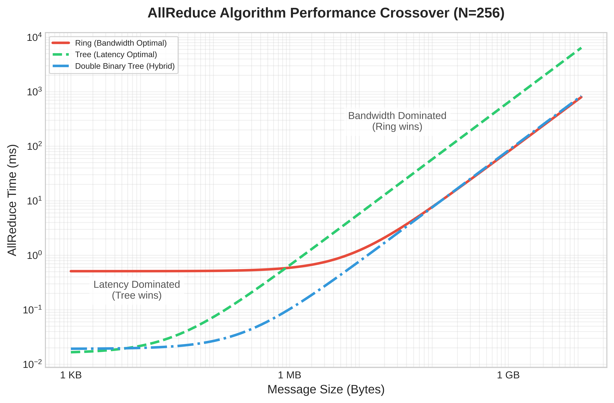</a></p>
</figure>
</div>
</div>
</div>
</div>
<figcaption class="quarto-float-caption-bottom quarto-float-caption quarto-float-fig" id="fig-allreduce-crossover-caption-0ceaefa1-69ba-4598-a22c-09a6ac19f8ca">
Figure&nbsp;6: <strong>Algorithm Crossover in Collective Communication</strong>: Performance analysis of Ring, Tree, and Double Binary Tree AllReduce algorithms across message sizes (1 KB to 10 GB) for a 256-GPU cluster with 200 Gbps interconnect.
</figcaption>
</figure>
</div>
</section>
<section id="sec-communication-collective-operations-algorithm-crossover" class="level3">
<h3 class="anchored" data-anchor-id="sec-communication-collective-operations-algorithm-crossover">The algorithm crossover point</h3>
<p>The crossover point in <a href="#fig-allreduce-crossover" class="quarto-xref">figure&nbsp;6</a>, where Ring overtakes Tree, follows from setting <span class="math inline">\(T_{\text{ring}} = T_{\text{tree}}\)</span> and solving for <span class="math inline">\(M\)</span>. The full time equations make the trade-off explicit:</p>
<p><span class="math display">\[ T_{\text{ring}} = 2(N-1)\alpha + 2\frac{N-1}{N}\frac{M}{\beta} \]</span> <span class="math display">\[ T_{\text{tree}} = 2\log_2 N \cdot \alpha + 2\log_2 N \cdot \frac{M}{\beta} \]</span></p>
<p>For large <span class="math inline">\(N\)</span>, <span class="math inline">\((N-1) \approx N\)</span> and <span class="math inline">\(\frac{N-1}{N} \approx 1\)</span>, so the ring pays a latency term proportional to <span class="math inline">\(N\)</span> while moving each byte close to the bandwidth limit:</p>
<p><span class="math display">\[ T_{\text{ring}} \approx 2N\alpha + \frac{2M}{\beta}, \quad T_{\text{tree}} \approx 2\log_2 N \cdot \alpha + \frac{2\log_2 N \cdot M}{\beta} \]</span></p>
<p>The tree has the opposite shape: logarithmic startup cost, but each message byte moves through more stages. Setting the estimates equal isolates the message size where the cheaper latency path stops compensating for the extra bandwidth work:</p>
<p><span class="math display">\[ 2N\alpha + \frac{2M}{\beta} = 2\log_2 N \cdot \alpha + \frac{2\log_2 N \cdot M}{\beta} \]</span> <span class="math display">\[ \frac{2M}{\beta} - \frac{2\log_2 N \cdot M}{\beta} = 2\log_2 N \cdot \alpha - 2N\alpha \]</span> <span class="math display">\[ \frac{2M}{\beta}(1 - \log_2 N) = 2\alpha(\log_2 N - N) \]</span></p>
<p>Since <span class="math inline">\(N \gg \log_2 N\)</span> for large clusters, <span class="math inline">\((\log_2 N - N) \approx -N\)</span> and <span class="math inline">\((1 - \log_2 N) \approx -\log_2 N\)</span>, yielding:</p>
<p><span class="math display">\[ \frac{2M}{\beta}(-\log_2 N) \approx 2\alpha(-N) \]</span> <span class="math display">\[ M_{\text{crossover}} \approx \frac{N \cdot \alpha \cdot \beta}{\log_2 N} \]</span></p>
<p>For a rough upper-scale mental model, engineers sometimes drop the logarithmic factor: <span class="math display">\[ \boxed{M_{\text{crossover}} \approx N \cdot \alpha \cdot \beta} \]</span></p>
<p>The log-aware crossover formula yields a useful intuition, not a hard selection rule. Above the crossover, message size dominates and Ring’s bandwidth efficiency wins; below it, startup latency dominates and Tree’s logarithmic depth wins.</p>
<p>For a cluster with <span class="math inline">\(\alpha=5\ \mu\text{s}\)</span>, <span class="math inline">\(\beta=50\ \text{GB/s}\)</span>, and <span class="math inline">\(N=100\)</span>, the direct approximation gives: <span class="math display">\[M_{\text{crossover}} \approx \frac{100 \times 5\cdot 10^{-6} \times 50\cdot 10^9}{\log_2 100} \approx 3.8 \text{ MB}\]</span></p>
<p>In practice, NCCL’s algorithm selection is more nuanced than a simple two-way split. The Double Binary Tree algorithm offers logarithmic latency with near-optimal bandwidth, making it competitive with both Ring and Tree across a broad range of message sizes. NCCL also considers the number of channels (parallel communication streams), the network topology, and whether inter-node or intra-node links are being used. The effective selection logic resembles a multi-way decision tree indexed by (message size, GPU count, topology type) rather than a single crossover point.</p>
<p>Nevertheless, the crossover formula remains the essential mental model for understanding why libraries make the choices they do. When a library selects an unexpected algorithm, the crossover analysis provides the reasoning framework to evaluate whether the choice is correct or whether manual override is warranted. A concrete buffer-size calculation applies this framework to a realistic decision:</p>
<div id="nbk-collective-communication-ring-vs-tree-crossover" class="callout callout-notebook" title="The ring vs. tree crossover">
<p></p><details class="callout-notebook fbx-simplebox fbx-default" open=""><summary><strong>Napkin Math 1.5: The ring vs. tree crossover</strong></summary><div><strong>Problem</strong>: A cluster synchronizes a 1 MB buffer across 64 GPUs. The network has latency <span class="math inline">\(\alpha =\)</span> 10 μs and bandwidth <span class="math inline">\(\beta =\)</span> 10 GB/s. Which algorithm performs better: Ring or Tree?<p></p>
<p><strong>Math</strong>:</p>
<p><strong>Latency</strong>:</p>
<ol type="1">
<li><strong>Ring Latency</strong>: <span class="math inline">\(2(N-1)\alpha =\)</span> <span class="math inline">\(2 \times 63 \times 10\ \mu\text{s}\)</span> = 1260 μs.</li>
<li><strong>Tree Latency</strong>: <span class="math inline">\(2(\log_2 N)\alpha =\)</span> <span class="math inline">\(2 \times 6 \times 10\ \mu\text{s}\)</span> = 120 μs.</li>
</ol>
<p><strong>Bandwidth</strong> (note the difference):</p>
<ol start="3" type="1">
<li><strong>Ring Bandwidth</strong>: <span class="math inline">\(2\frac{N-1}{N}\frac{M}{\beta} \approx\)</span> <span class="math inline">\(2 \times \frac{1\text{ MB}}{10\text{ GB/s}}\)</span> = 196.9 μs (optimal: each byte sent once).</li>
<li><strong>Tree Bandwidth</strong>: <span class="math inline">\(2\log_2 N \cdot \frac{M}{\beta} =\)</span> <span class="math inline">\(12 \times \frac{1\text{ MB}}{10\text{ GB/s}}\)</span> = 1200 μs (each level sends full message).</li>
</ol>
<p><a href="#tbl-collective-communication-ring-vs-tree-1mb-64gpu" class="quarto-xref">Table&nbsp;7</a> sums the latency and bandwidth contributions into a head-to-head comparison:</p>
<div id="tbl-collective-communication-ring-vs-tree-1mb-64gpu" class="quarto-float quarto-figure quarto-figure-center anchored">
<figure class="quarto-float quarto-float-tbl figure">
<figcaption class="quarto-float-caption-top quarto-float-caption quarto-float-tbl" id="tbl-collective-communication-ring-vs-tree-1mb-64gpu-caption-0ceaefa1-69ba-4598-a22c-09a6ac19f8ca">
Table&nbsp;7: <strong>Ring vs.&nbsp;Tree AllReduce Timing for a 1 MB Buffer on 64 GPUs</strong>: Latency, bandwidth, and total-time terms with <span class="math inline">\(\alpha = 10\ \mu\text{s}\)</span> and <span class="math inline">\(\beta = 10\ \text{GB/s}\)</span>.
</figcaption>
<div aria-describedby="tbl-collective-communication-ring-vs-tree-1mb-64gpu-caption-0ceaefa1-69ba-4598-a22c-09a6ac19f8ca">
<table class="caption-top table">
<colgroup>
<col style="width: 11%">
<col style="width: 29%">
<col style="width: 28%">
<col style="width: 30%">
</colgroup>
<thead>
<tr class="header">
<th style="text-align: left;"><strong>Algorithm</strong></th>
<th style="text-align: center;"><strong>Latency</strong></th>
<th style="text-align: center;"><strong>Bandwidth</strong></th>
<th style="text-align: center;"><strong>Total</strong></th>
</tr>
</thead>
<tbody>
<tr class="odd">
<td style="text-align: left;"><strong>Ring</strong></td>
<td style="text-align: center;">1260 μs</td>
<td style="text-align: center;">196.9 μs</td>
<td style="text-align: center;">1456.9 μs</td>
</tr>
<tr class="even">
<td style="text-align: left;"><strong>Tree</strong></td>
<td style="text-align: center;">120 μs</td>
<td style="text-align: center;">1200 μs</td>
<td style="text-align: center;">1320 μs</td>
</tr>
</tbody>
</table>
</div>
</figure>
</div>
<p>Tree wins, but only by 9 percent. For this 1 MB message, the payload is near the crossover point.</p>
<p><strong>Systems insight</strong>: Ring’s latency penalty (10<span class="math inline">\(\times\)</span> worse than Tree) nearly balances Tree’s bandwidth penalty (6<span class="math inline">\(\times\)</span> worse than Ring). The log-aware crossover estimate predicts <span class="math inline">\(M_{\text{crossover}} \approx N \alpha \beta / \log_2 N = 64 \times 10\ \mu\text{s} \times 10\ \text{GB/s} / 6 \approx\)</span> 1.1 MB. At 1 MB, the payload is just below crossover, so Tree wins. At 10 MB, Ring would dominate.</p>
<p>The crossover point sits inside the range that DDP and FSDP workloads traverse during normal training. A 1 MB message corresponds to gradients from a single feed-forward layer in a smaller transformer, or an MoE token-routing payload, both Tree territory. A 10 MB DDP gradient bucket from a mid-size transformer layer sits near the crossover. A fused DDP bucket covering multiple layers reaches 50–300 MB, and a full BF16 gradient tensor for a 70B parameters model reaches 140 GB; both are firmly in Ring territory. Most real training workloads sweep through this entire range as bucket sizes are tuned, and the crossover analysis sets the algorithmic boundary that separates bucket-level Tree operations from full-model Ring synchronizations.</p>
</div></details>
</div>
<p>The crossover analysis demonstrates that algorithm selection is not a static choice but depends on the specific combination of message size, cluster scale, and network parameters. In practice, communication libraries like NCCL maintain internal lookup tables that map message size, GPU count, topology, and protocol settings to selected algorithms such as Ring, Tree, or hybrid approaches. Understanding the underlying crossover math allows engineers to predict when the library’s built-in choices may be suboptimal and to override them when necessary.</p>
<div id="chk-collective-communication-allreduce-algorithm-selection" class="callout callout-checkpoint" title="AllReduce algorithm selection">
<details class="callout-checkpoint fbx-simplebox fbx-default" open=""><summary><strong>Checkpoint 1.3: AllReduce algorithm selection</strong></summary><div>
<p>Verify your understanding of Ring vs.&nbsp;Tree AllReduce trade-offs:</p>
<ul class="task-list">
<li><label><input type="checkbox"><strong>Ring vs.&nbsp;Tree</strong>: explain why Ring AllReduce achieves bandwidth-optimal communication (approaching <span class="math inline">\(2M/\beta\)</span>) while Tree AllReduce incurs <span class="math inline">\(\mathcal{O}(\log N)\)</span> bandwidth overhead.</label></li>
<li><label><input type="checkbox"><strong>Crossover point</strong>: calculate <span class="math inline">\(M_{\text{crossover}}\)</span> for a 256-GPU cluster with <span class="math inline">\(\alpha = 5\ \mu\text{s}\)</span> and <span class="math inline">\(\beta = 50\ \text{GB/s}\)</span>, then determine whether a 10 MB gradient buffer should use Ring or Tree.</label></li>
<li><label><input type="checkbox"><strong>Scatter-reduce trace</strong>: trace through the Scatter-Reduce phase of Ring AllReduce for 3 GPUs with a 3-element vector and verify that each GPU ends with the correct partial sum.</label></li>
<li><label><input type="checkbox"><strong>Latency limit</strong>: explain why Ring AllReduce’s <span class="math inline">\(\mathcal{O}(N)\)</span> latency makes it impractical for tensor parallelism, where message sizes are small and latency dominates.</label></li>
</ul>
</div></details>
</div>
<div id="quiz-question-sec-communication-collective-operations-collective-operations-allreduce-algorithms-7545" class="callout callout-quiz-question">
<details class="callout-quiz-question fbx-simplebox fbx-default"><summary><strong>Self-Check: Question</strong></summary><div>
<ol type="1">
<li><p>A cluster of <span class="math inline">\(N = 256\)</span> GPUs has per-link bandwidth <span class="math inline">\(\beta = 25\text{ GB/s}\)</span> and effective collective launch latency <span class="math inline">\(\alpha = 4\ \mu\text{s}\)</span>. Using the log-aware crossover model <span class="math inline">\(M_{\text{crossover}} \approx \frac{N \cdot \alpha \cdot \beta}{\log_2 N}\)</span>, which AllReduce algorithm should the runtime select for a 100 KB tensor parallelism activation synchronization versus a 50 MB data parallelism gradient bucket?</p>
<ol type="a">
<li>Ring AllReduce for both, because Ring is bandwidth-optimal and therefore strictly superior across all message sizes.</li>
<li>Tree AllReduce for both, because <span class="math inline">\(\mathcal{O}(\log N)\)</span> latency always dominates bandwidth considerations on 256-GPU clusters.</li>
<li>Tree AllReduce for the 100 KB tensor (below <span class="math inline">\(M_{\text{crossover}} \approx 3.2\text{ MB}\)</span>), and Ring AllReduce for the 50 MB bucket (above <span class="math inline">\(M_{\text{crossover}}\)</span>).</li>
<li>Parameter-server star aggregation for 100 KB, and Tree AllReduce for 50 MB.</li>
</ol></li>
<li><p>Recursive halving-doubling (the butterfly AllReduce algorithm) achieves theoretical time <span class="math inline">\(T = 2\log_2 N \cdot \alpha + 2\frac{N-1}{N}\frac{M}{\beta}\)</span>, combining logarithmic latency with bandwidth-optimal data movement. Why does it frequently underperform Ring AllReduce on large multi-node GPU clusters in practice?</p>
<ol type="a">
<li>Butterfly algorithms cannot perform floating-point additions on GPU tensor cores.</li>
<li>Butterfly AllReduce is mathematically valid only when the total number of GPUs is a prime number.</li>
<li>Butterfly is topology-oblivious: in rounds <span class="math inline">\(k \geq \log_2(\text{GPUs/node})\)</span>, XOR partner pairings (<span class="math inline">\(i \oplus 2^k\)</span>) cross slow inter-node InfiniBand links, causing severe network bisection contention that erases its theoretical latency advantage.</li>
<li>Butterfly algorithms require all intermediate partial sums to be routed through host CPU memory via TCP sockets.</li>
</ol></li>
<li><p>Describe the two phases of Ring AllReduce (Scatter-Reduce and AllGather) for <span class="math inline">\(N\)</span> GPUs reducing a tensor of size <span class="math inline">\(M\)</span>. For each phase, specify: (1) the number of communication rounds, (2) the payload size sent per round by each GPU, and (3) what state each GPU holds at the end of the phase. Finally, explain why a single slow worker degrades the performance of all workers.</p></li>
</ol>
<p><a href="#quiz-answer-sec-communication-collective-operations-collective-operations-allreduce-algorithms-7545" class="question-label" onclick="event.preventDefault();document.getElementById('quiz-answer-sec-communication-collective-operations-collective-operations-allreduce-algorithms-7545').scrollIntoView({behavior:'smooth',block:'start'});history.pushState(null,'','#quiz-answer-sec-communication-collective-operations-collective-operations-allreduce-algorithms-7545');">See Answers →</a></p>
</div></details>
</div>
</section>
</section>
<section id="sec-communication-collective-operations-collective-operations-mapping-collectives-topology-3214" class="level2 page-columns page-full">
<h2 class="anchored" data-anchor-id="sec-communication-collective-operations-collective-operations-mapping-collectives-topology-3214">Hierarchical Communication</h2>
<p>The AllReduce algorithms in <a href="#sec-communication-collective-operations-collective-operations-allreduce-algorithms-7545" class="quarto-xref">section&nbsp;1.4</a> assume a flat network where every link has the same bandwidth. Real data centers violate this assumption by an order of magnitude or more. Not all wires are created equal.</p>
<p>Hierarchical communication is the response to that inequality. Intra-node links are abundant and fast, inter-node links are scarce and expensive, and the algorithm must shrink payloads before they cross the scarce tier whenever possible. This is why the same AllReduce can be implemented as a local ReduceScatter, a cross-node reduction, and a local AllGather rather than as one flat exchange across every rank.</p>
<p>A GPU node delivers an order of magnitude more intra-node bandwidth (NVLink at 900 GB/s) than inter-node bandwidth (InfiniBand at 50 GB/s).</p>
<section id="sec-communication-collective-operations-collective-operations-hierarchical-allreduce-1338" class="level3 page-columns page-full">
<h3 class="anchored" data-anchor-id="sec-communication-collective-operations-collective-operations-hierarchical-allreduce-1338">Hierarchical AllReduce</h3>
<p>Flat collective algorithms assume that every link in the cluster delivers equal bandwidth. While that assumption holds within a single node (where all GPUs connect via NVLink at uniform speed), it breaks by 9× across multi-node clusters. Real clusters are hierarchical networks, with fundamentally different bandwidths at each tier, as <a href="#tbl-bandwidth-hierarchy" class="quarto-xref">table&nbsp;8</a> quantifies.</p>
<div id="tbl-bandwidth-hierarchy" class="quarto-float quarto-figure quarto-figure-center anchored">
<figure class="quarto-float quarto-float-tbl figure">
<figcaption class="quarto-float-caption-top quarto-float-caption quarto-float-tbl" id="tbl-bandwidth-hierarchy-caption-0ceaefa1-69ba-4598-a22c-09a6ac19f8ca">
Table&nbsp;8: <strong>The Bandwidth Hierarchy</strong>: Modern GPU clusters exhibit an order-of-magnitude bandwidth gap between intra-node and inter-node communication. Hierarchical algorithms exploit this gap. Relative speed compares per-direction rates (NVLink’s 450 GB/s one-way against InfiniBand’s 50 GB/s per port); the bandwidth column shows NVLink’s bidirectional datasheet total.
</figcaption>
<div aria-describedby="tbl-bandwidth-hierarchy-caption-0ceaefa1-69ba-4598-a22c-09a6ac19f8ca">
<table class="caption-top table">
<colgroup>
<col style="width: 10%">
<col style="width: 14%">
<col style="width: 34%">
<col style="width: 41%">
</colgroup>
<thead>
<tr class="header">
<th style="text-align: left;"><strong>Tier</strong></th>
<th style="text-align: center;"><strong>Interconnect</strong></th>
<th style="text-align: center;"><strong>Bandwidth</strong></th>
<th style="text-align: center;"><strong>Relative Speed</strong></th>
</tr>
</thead>
<tbody>
<tr class="odd">
<td style="text-align: left;"><strong>Intra-Node</strong></td>
<td style="text-align: center;">NVLink 4.0</td>
<td style="text-align: center;">~900 GB/s</td>
<td style="text-align: center;">9× faster</td>
</tr>
<tr class="even">
<td style="text-align: left;"><strong>Inter-Node</strong></td>
<td style="text-align: center;">InfiniBand NDR 400G</td>
<td style="text-align: center;">~50 GB/s</td>
<td style="text-align: center;">1<span class="math inline">\(\times\)</span> (baseline)</td>
</tr>
</tbody>
</table>
</div>
</figure>
</div>
<p>A naive flat Ring AllReduce ignores this structure, potentially routing data across InfiniBand when NVLink would suffice and wasting the scarce inter-node bandwidth. <strong>Hierarchical AllReduce</strong> decomposes the global operation into three phases that respect the bandwidth hierarchy, as shown in <a href="#fig-hierarchical-allreduce" class="quarto-xref">figure&nbsp;7</a>.</p>

<div class="no-row-height column-margin column-container"><div class="">
<p><a href="images/svg/vol2_collective_communication_margin_003.svg" class="lightbox" data-gallery="quarto-lightbox-gallery-13">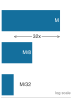</a></p>
<p><em>Hierarchical collectives shrink payload before it crosses slow tiers.</em></p>
</div></div><div id="fig-hierarchical-allreduce" class="quarto-float quarto-figure quarto-figure-center anchored" alt="Two-node diagram with multiple GPUs per node. Intra-node NVLink arrows show Phase 1 (ring/ReduceScatter) and Phase 3 (ring/AllGather). Inter-node InfiniBand arrows show Phase 2 (cross-node AllReduce on the node shards)." data-fig-pos="htb" data-fig-env="figure">
<figure class="quarto-float quarto-float-fig figure">
<div aria-describedby="fig-hierarchical-allreduce-caption-0ceaefa1-69ba-4598-a22c-09a6ac19f8ca">
<a href="images/svg/hierarchical-allreduce.svg" class="lightbox" data-gallery="quarto-lightbox-gallery-14" title="Figure&nbsp;7: Hierarchical AllReduce: Three-phase decomposition that exploits the intra-node/inter-node bandwidth gap. Phase 1 performs intra-node aggregation over NVLink (an NVLink ring acting as a ReduceScatter that leaves each GPU holding a node-shard partial sum), reducing inter-node traffic by a factor of G (GPUs per node). Phase 2 runs an AllReduce across corresponding GPUs using InfiniBand. Phase 3 completes intra-node distribution over NVLink (the AllGather that returns each GPU to the full result). The figure labels these phases by their NVLink/IB mechanics; the surrounding prose names the corresponding collective primitives.">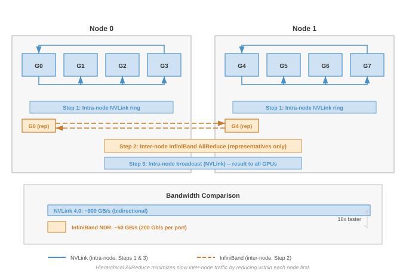</a>
</div>
<figcaption class="quarto-float-caption-bottom quarto-float-caption quarto-float-fig" id="fig-hierarchical-allreduce-caption-0ceaefa1-69ba-4598-a22c-09a6ac19f8ca">
Figure&nbsp;7: <strong>Hierarchical AllReduce</strong>: Three-phase decomposition that exploits the intra-node/inter-node bandwidth gap. Phase 1 performs intra-node aggregation over NVLink (an NVLink ring acting as a ReduceScatter that leaves each GPU holding a node-shard partial sum), reducing inter-node traffic by a factor of <span class="math inline">\(G\)</span> (GPUs per node). Phase 2 runs an AllReduce across corresponding GPUs using InfiniBand. Phase 3 completes intra-node distribution over NVLink (the AllGather that returns each GPU to the full result). The figure labels these phases by their NVLink/IB mechanics; the surrounding prose names the corresponding collective primitives.
</figcaption>
</figure>
</div>
<p>The three-phase decomposition in <a href="#fig-hierarchical-allreduce" class="quarto-xref">figure&nbsp;7</a> confines the expensive inter-node traffic to Phase 2, where each GPU transmits only <span class="math inline">\(M/G\)</span> bytes instead of <span class="math inline">\(M\)</span>. With <span class="math inline">\(G = 8\)</span> GPUs per node (a typical DGX configuration), this reduces inter-node traffic by 8<span class="math inline">\(\times\)</span>, effectively multiplying the scarce InfiniBand bandwidth by the number of GPUs per node.</p>
<p>The phases form one causal chain:</p>
<ol type="1">
<li><strong>Intra-node ReduceScatter over NVLink</strong>: A local reduction among the <span class="math inline">\(G\)</span> GPUs in each node leaves each GPU with <span class="math inline">\(1/G\)</span> of the partially reduced data, using only abundant intra-node bandwidth.</li>
<li><strong>Inter-node AllReduce over InfiniBand</strong>: Each GPU sends its node shard across corresponding GPU positions, transmitting <span class="math inline">\(M/G\)</span> bytes instead of <span class="math inline">\(M\)</span>.</li>
<li><strong>Intra-node AllGather over NVLink</strong>: Each node redistributes the final shards internally, completing the result without consuming additional inter-node bandwidth.</li>
</ol>
<p>A simple 8-node budget makes this bandwidth multiplication concrete:</p>
<div id="nbk-collective-communication-hierarchical-bandwidth-multiplier" class="callout callout-notebook" title="The hierarchical bandwidth multiplier">
<p></p><details class="callout-notebook fbx-simplebox fbx-default" open=""><summary><strong>Napkin Math 1.6: The hierarchical bandwidth multiplier</strong></summary><div><strong>Problem</strong>: A cluster has 8 nodes, each with 8 GPUs (64 total). The system must AllReduce a 1 GB gradient buffer. Compare flat Ring AllReduce vs.&nbsp;Hierarchical AllReduce.<p></p>
<p><strong>Flat ring AllReduce (ignoring hierarchy)</strong>:</p>
<ul>
<li>Each GPU sends ~2 GB total (the bandwidth-optimal Ring AllReduce formula).</li>
<li>The ring crosses node boundaries multiple times.</li>
<li><strong>Effective Bandwidth</strong>: Limited by the slowest link = 50 GB/s (InfiniBand).</li>
<li><strong>Time</strong>: <span class="math inline">\(\approx\)</span> <span class="math inline">\(2 \times 1\ \text{GB} / 50\ \text{GB/s}\)</span> = 40 ms (bandwidth term dominates).</li>
</ul>
<p><strong>Hierarchical AllReduce (3-step decomposition)</strong>:</p>
<ol type="1">
<li><p><strong>Intra-node ReduceScatter</strong>: Each GPU sends 875 MB at 450 GB/s per direction → ~1.94 ms</p></li>
<li><p><strong>Inter-Node AllReduce</strong>: Each GPU AllReduces a <span class="math inline">\(1\ \text{GB}/8\)</span> = 125 MB shard over InfiniBand; Ring moves roughly <span class="math inline">\(2(N-1)/N\)</span> times that payload, and after adding the small latency term the phase takes ~4.42 ms at 50 GB/s</p>
<p>(Only 1/8 of the data crosses InfiniBand!)</p></li>
<li><p><strong>Intra-node AllGather</strong>: Each GPU receives 875 MB at 450 GB/s per direction → ~1.94 ms</p></li>
<li><p><strong>Total time</strong>: <span class="math inline">\(\approx\)</span> 1.94 ms + 4.42 ms + 1.94 ms = 8.3 ms</p></li>
</ol>
<p><strong>Systems insight</strong>: Hierarchical AllReduce achieves a 4.8× speedup by reducing the inter-node payload from 1 GB to 125 MB per GPU before the Ring traffic multiplier. With 8 GPUs per node, the hierarchy effectively delivers 8<span class="math inline">\(\times\)</span> the apparent inter-node bandwidth. This is why NVIDIA’s NCCL and similar libraries often select hierarchical algorithms on multi-node clusters when the topology supports them.</p>
</div></details>
</div>
<p>These three phases confine most traffic within each node before crossing the slower inter-node fabric, and the same idea generalizes beyond two levels. Large clusters with multiple racks connected through spine switches introduce a third bandwidth tier (rack-to-rack at reduced bisection bandwidth). At 128 GPUs arranged as 4 racks of 4 nodes of 8 GPUs with 2:1 cross-rack oversubscription, applying the same decomposition at each tier shrinks the cross-rack payload per GPU by 32<span class="math inline">\(\times\)</span> compared to the original gradient, roughly 15 ms total vs.&nbsp;160 ms for flat AllReduce. The hierarchical decomposition concentrates traffic where bandwidth is abundant and minimizes traffic where bandwidth is scarce.</p>
</section>
<section id="sec-communication-sharp" class="level3 page-columns page-full">
<h3 class="anchored" data-anchor-id="sec-communication-sharp">In-network reduction: SHARP and beyond</h3>
<p>The contrast in <a href="#fig-sharp-innetwork" class="quarto-xref">figure&nbsp;8</a> shows the next step: move the reduction work from endpoint GPUs into the switch application-specific integrated circuit (ASIC) so packets are aggregated while they traverse the fabric.</p>
<div id="fig-sharp-innetwork" class="quarto-float quarto-figure quarto-figure-center anchored" alt="Left/right side-by-side comparison split by a vertical divider. Left side: Software Tree AllReduce with data flowing through GPUs. Right side: In-Network SHARP with data aggregated inside the switch." data-fig-pos="htb" data-fig-env="figure">
<figure class="quarto-float quarto-float-fig figure">
<div aria-describedby="fig-sharp-innetwork-caption-0ceaefa1-69ba-4598-a22c-09a6ac19f8ca">
<a href="images/svg/sharp-innetwork.svg" class="lightbox" data-gallery="quarto-lightbox-gallery-15" title="Figure&nbsp;8: In-Network Reduction (SHARP): Side-by-side comparison split by a vertical divider. The left side shows a traditional tree AllReduce performing reduction at intermediate GPUs, incurring multiple store-and-forward delays. The right side shows SHARP offloading the reduction to the network switch ASIC, allowing partial sums to be aggregated at line rate as packets traverse the switch. This eliminates GPU memory traffic and store-and-forward latency, significantly accelerating small-to-medium message collectives.">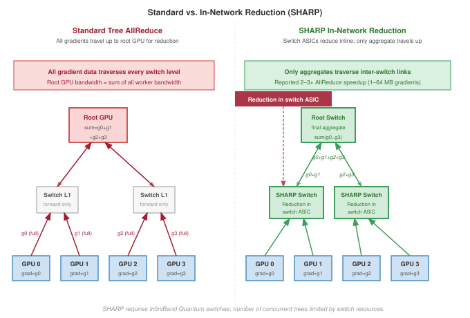</a>
</div>
<figcaption class="quarto-float-caption-bottom quarto-float-caption quarto-float-fig" id="fig-sharp-innetwork-caption-0ceaefa1-69ba-4598-a22c-09a6ac19f8ca">
Figure&nbsp;8: <strong>In-Network Reduction (SHARP)</strong>: Side-by-side comparison split by a vertical divider. The left side shows a traditional tree AllReduce performing reduction at intermediate GPUs, incurring multiple store-and-forward delays. The right side shows SHARP offloading the reduction to the network switch ASIC, allowing partial sums to be aggregated at line rate as packets traverse the switch. This eliminates GPU memory traffic and store-and-forward latency, significantly accelerating small-to-medium message collectives.
</figcaption>
</figure>
</div>
<p>Hierarchical AllReduce reduces the volume of cross-node traffic, but the aggregation still requires multiple network round-trips. NVIDIA’s <strong>Scalable Hierarchical Aggregation and Reduction Protocol (SHARP)</strong><a href="#fn10" class="footnote-ref" id="fnref10" role="doc-noteref"><sup>10</sup></a> implements this idea: instead of gradients traveling to a destination GPU for summation, the InfiniBand switch aggregates partial sums as data packets pass through it.</p>
<div class="no-row-height column-margin column-container"><div id="fn10"><p><sup>10</sup>&nbsp;<strong>SHARP (Scalable Hierarchical Aggregation and Reduction Protocol)</strong>: In-network computing on Quantum InfiniBand switches that performs reduction operations (such as sum, min, and max) as packets traverse an aggregation tree <span class="citation" data-cites="graham2020">(<a href="#ref-graham2020" role="doc-biblioref"><span class="nocase">Graham et al.</span> 2020</a>)</span>. The same work reports substantially higher reduction bandwidth than host-based algorithms and describes switch-resource limits on outstanding aggregation groups and trees, which can create contention when many collectives compete for the same in-network resources.</p><div id="ref-graham2020" class="csl-entry" role="listitem">
<span class="nocase">Graham, R. L., D. Bureddy, P. Lui, H. Rober, G. Bloch, G. Shainer, J. Poole, et al.</span> 2020. <span>“Scalable Hierarchical Aggregation and Reduction Protocol (SHARP) Streaming-Aggregation Hardware Design and Evaluation.”</span> <em>International Conference on High Performance Computing</em>, 41–59. https://doi.org/10.1007/978-3-030-50743-5_3.
</div></div></div><p>The benefit is twofold. First, SHARP reduces endpoint memory traffic and can reduce pressure on upper-level links by aggregating packets before they leave a switch tier. In a software-based tree reduction, data arrives at a GPU, is written to memory, summed with local data, and then transmitted to the next level. With SHARP, the switch combines incoming packets in flight and forwards the aggregate for the reduction tree. Second, SHARP eliminates the store-and-forward path through intermediate GPUs. Each software hop adds the full <span class="math inline">\(\alpha\)</span>-<span class="math inline">\(\beta\)</span> cost; with in-switch aggregation, the reduction happens inside the switch ASIC rather than in endpoint memory.</p>
<p>The practical impact is most pronounced for message sizes where aggregation latency contributes meaningfully to total AllReduce time. For very large messages, bandwidth dominates regardless of algorithm, and SHARP’s latency reduction becomes proportionally smaller. For very small messages, fixed switch-processing overhead can limit the benefit. <span class="citation" data-cites="graham2020"><span class="nocase">Graham et al.</span> (<a href="#ref-graham2020" role="doc-biblioref">2020</a>)</span> report multi-fold reduction-bandwidth improvements and smaller application-level gains for PyTorch workloads when SHARP Streaming-Aggregation is enabled on HDR/Quantum InfiniBand switches.</p>
<div class="no-row-height column-margin column-container"></div><p>Strong scaling campaigns (training a fixed model across more accelerators without proportionally growing batch size) are precisely the workloads where SHARP’s latency reduction translates into step-time reduction. As the per-accelerator batch shrinks, each gradient tensor stays large (proportional to model size) but the backward pass per accelerator shortens, so communication dominates an increasing fraction of step time and the latency term <span class="math inline">\(\alpha\)</span> in the ring formula hits the bottleneck. In-switch aggregation cuts directly into that latency cost. Switch ASIC vendors have explicitly extended InfiniBand ASICs to support ML-native datatypes, including FP16 and BF16, confirming that SHARP is co-evolving with ML workload requirements rather than serving only the legacy HPC floating-point operations that motivated its original design. An ML system team choosing SHARP infrastructure for a scaling campaign should verify FP16/BF16 aggregation support in the specific switch generation, since earlier ASICs supported only FP32 and INT32.</p>
<p>SHARP does impose constraints. The switch must support the specific reduction operation (typically limited to sum, min, and max on floating-point and integer types). The number of concurrent SHARP aggregation trees is limited by switch resources, so large clusters with many simultaneous training jobs may exhaust SHARP capacity. Additionally, SHARP requires InfiniBand infrastructure; it is not available on Ethernet-based fabrics.</p>
</section>
<section id="sec-communication-collective-operations-collective-operations-topology-detection-selection-2dc7" class="level3 page-columns page-full">
<h3 class="anchored" data-anchor-id="sec-communication-collective-operations-collective-operations-topology-detection-selection-2dc7">Topology-aware routing</h3>
<p>Hierarchical AllReduce reduces inter-node traffic, and SHARP eliminates some of it entirely, but neither technique addresses a subtler problem: how the logical communication pattern maps to the physical network topology. A Ring AllReduce among 64 GPUs creates a logical ring, but which physical links carry each hop determines whether the ring achieves peak bandwidth or creates congestion. Two runs of the same training job on the same hardware can differ by 2<span class="math inline">\(\times\)</span> in communication throughput depending on how ranks are assigned to GPUs and how the resulting traffic pattern interacts with the network’s physical structure.</p>
<p>Communication libraries like NCCL perform <strong>Topology Detection</strong> at initialization, running graph search algorithms to discover the physical network structure and find high-bandwidth communication paths <span class="citation" data-cites="nvidiaNcclUserGuide">(<a href="#ref-nvidiaNcclUserGuide" role="doc-biblioref">NVIDIA 2026</a>)</span>. The library must determine, for each pair of ranks, whether the peer sits on a local NVLink switch or 100 meters away across an InfiniBand fabric, because the same collective algorithm can differ by 2<span class="math inline">\(\times\)</span> or more in throughput depending on how logical ranks map to physical hardware.</p>
<div class="no-row-height column-margin column-container"></div><p>The topology detection process begins with hardware enumeration. NCCL queries the PCIe bus to discover GPU placement, NVLink connectivity between GPUs, and NIC-to-PCIe-switch affinity. From this information, it constructs an internal graph where nodes represent GPUs and edges represent physical links with annotated bandwidth and latency. A graph search algorithm then finds communication paths that maximize aggregate bandwidth while minimizing the number of cross-domain hops (transitions between NVLink, PCIe, and InfiniBand domains). This topology-aware path selection is what allows NCCL to approach theoretical peak bandwidth on well-configured systems, while topology-unaware implementations can leave a large fraction of bandwidth unused.</p>
<section id="sec-collective-communication-torus-topology-tpu-pods-68b2" class="level4">
<h4 class="anchored" data-anchor-id="sec-collective-communication-torus-topology-tpu-pods-68b2">Torus topology (TPU pods)</h4>
<p>The dimension-ordered reduction in <a href="#fig-torus-reduction" class="quarto-xref">figure&nbsp;9</a> shows why torus fabrics use the physical mesh directly instead of pretending the pod is a flat all-to-all network.</p>
<div id="fig-torus-reduction" class="quarto-float quarto-figure quarto-figure-center anchored" alt="2D grid diagram of nodes in a torus topology. Arrows show sequential reduction along X-axis rings, then Y-axis rings." data-fig-pos="htb" data-fig-env="figure">
<figure class="quarto-float quarto-float-fig figure">
<div aria-describedby="fig-torus-reduction-caption-0ceaefa1-69ba-4598-a22c-09a6ac19f8ca">
<a href="images/svg/torus-reduction.svg" class="lightbox" data-gallery="quarto-lightbox-gallery-16" title="Figure&nbsp;9: Dimension-Ordered Reduction on Torus Topology: In a 2D torus mesh (a simplified representation of 3D TPU pods), AllReduce is decomposed into two sequential steps along the X and Y dimensions. Reducing along one dimension at a time minimizes network diameter and avoids link contention, ensuring that each direct neighbor link operates at full bandwidth.">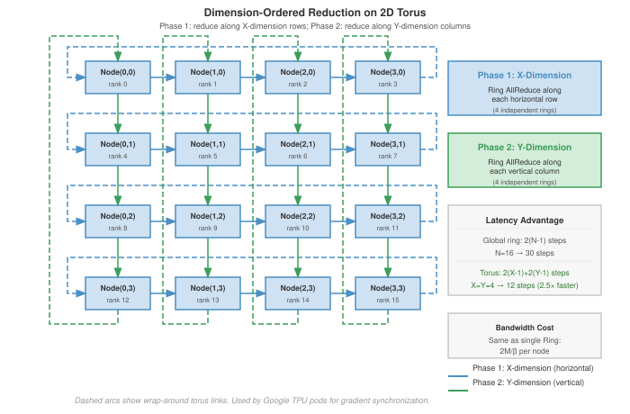</a>
</div>
<figcaption class="quarto-float-caption-bottom quarto-float-caption quarto-float-fig" id="fig-torus-reduction-caption-0ceaefa1-69ba-4598-a22c-09a6ac19f8ca">
Figure&nbsp;9: <strong>Dimension-Ordered Reduction on Torus Topology</strong>: In a 2D torus mesh (a simplified representation of 3D TPU pods), AllReduce is decomposed into two sequential steps along the X and Y dimensions. Reducing along one dimension at a time minimizes network diameter and avoids link contention, ensuring that each direct neighbor link operates at full bandwidth.
</figcaption>
</figure>
</div>
<p>Google’s Tensor Processing Unit (TPU) pods use a 3D torus topology where each TPU connects directly to 6 neighbors <span class="math inline">\((\pm X, \pm Y, \pm Z)\)</span>; <a href="#fig-torus-reduction" class="quarto-xref">figure&nbsp;9</a> depicts the same dimension-ordered idea as a 2D simplification. Unlike the hierarchical fat-tree topology of InfiniBand clusters, the torus provides uniform, direct connectivity: every TPU chip has the same number of links (6) and the same per-link bandwidth, regardless of its position in the mesh. The optimal AllReduce strategy for this topology is <strong>Dimension-Ordered Reduction</strong>:</p>
<ol type="1">
<li>Reduce along X for each fixed <span class="math inline">\((Y,Z)\)</span> line, producing partial sums over the X dimension</li>
<li>Reduce those partials along Y for each fixed <span class="math inline">\((X,Z)\)</span> line, producing partial sums over the <span class="math inline">\(X \times Y\)</span> plane</li>
<li>Reduce those partials along Z for each fixed <span class="math inline">\((X,Y)\)</span> line to complete the global result</li>
</ol>
<p>Each dimension-ordered reduction is itself a Ring AllReduce along one axis-aligned torus ring. For a pod with <span class="math inline">\(X{\times}Y{\times}Z\)</span> TPUs, the first step runs independent X-dimension rings, one for each fixed <span class="math inline">\((Y,Z)\)</span> coordinate, so each participant receives a partial sum over that X line. The second step runs Y-dimension rings to combine those X partials across Y, and the third step runs Z-dimension rings to complete the global reduction. This cascading reduction achieves total bandwidth cost <span class="math inline">\(2M/\beta\)</span> (same as a single Ring) but with latency proportional to <span class="math inline">\(2(X + Y + Z)\)</span> rather than <span class="math inline">\(2(X \times Y \times Z)\)</span>, because each dimension’s ring is shorter than a global ring.</p>
<p>Dimension-ordered reduction minimizes network diameter and ensures each link carries traffic in only one direction at a time, avoiding congestion. The torus topology also provides natural fault tolerance through alternate routing paths: if one link in the X-dimension fails, traffic can detour through the Y or Z dimensions (at the cost of increased latency). Google’s Accelerated Linear Algebra compiler generates dimension-ordered collectives automatically when targeting TPU pods, abstracting the topology details from the user.</p>
</section>
<section id="sec-collective-communication-railoptimized-routing-nvidia-dgx-7081" class="level4">
<h4 class="anchored" data-anchor-id="sec-collective-communication-railoptimized-routing-nvidia-dgx-7081">Rail-optimized routing (NVIDIA DGX)</h4>
<p>In NVIDIA DGX systems, each GPU has its own dedicated NIC. Rail-optimized routing exploits this by ensuring that GPUs at the same position within their respective nodes communicate only with each other:</p>
<ul>
<li>GPU 0 on Node A talks only to GPU 0 on Node B, Node C, and so on.</li>
<li>GPU 1 on Node A talks only to GPU 1 on other nodes.</li>
<li>And so on for GPUs 2–7.</li>
</ul>
<p>This creates 8 independent “rails” of communication that operate in parallel without contention, as <a href="#tbl-rail-optimized" class="quarto-xref">table&nbsp;9</a> illustrates.</p>
<div id="tbl-rail-optimized" class="quarto-float quarto-figure quarto-figure-center anchored">
<figure class="quarto-float quarto-float-tbl figure">
<figcaption class="quarto-float-caption-top quarto-float-caption quarto-float-tbl" id="tbl-rail-optimized-caption-0ceaefa1-69ba-4598-a22c-09a6ac19f8ca">
Table&nbsp;9: <strong>Rail-Optimized Traffic Distribution</strong>: Each rail carries 1/8 of the total traffic independently.
</figcaption>
<div aria-describedby="tbl-rail-optimized-caption-0ceaefa1-69ba-4598-a22c-09a6ac19f8ca">
<table class="caption-top table">
<colgroup>
<col style="width: 10%">
<col style="width: 78%">
<col style="width: 11%">
</colgroup>
<thead>
<tr class="header">
<th style="text-align: left;"><strong>Rail</strong></th>
<th style="text-align: left;"><strong>Participants</strong></th>
<th style="text-align: center;"><strong>Traffic</strong></th>
</tr>
</thead>
<tbody>
<tr class="odd">
<td style="text-align: left;"><strong>Rail 0</strong></td>
<td style="text-align: left;">Node0-GPU0 <span class="math inline">\(\leftrightarrow\)</span> Node1-GPU0 <span class="math inline">\(\leftrightarrow\)</span> Node2-GPU0 <span class="math inline">\(\leftrightarrow\)</span> …</td>
<td style="text-align: center;"><span class="math inline">\(M/8\)</span> each</td>
</tr>
<tr class="even">
<td style="text-align: left;"><strong>Rail 1</strong></td>
<td style="text-align: left;">Node0-GPU1 <span class="math inline">\(\leftrightarrow\)</span> Node1-GPU1 <span class="math inline">\(\leftrightarrow\)</span> Node2-GPU1 <span class="math inline">\(\leftrightarrow\)</span> …</td>
<td style="text-align: center;"><span class="math inline">\(M/8\)</span> each</td>
</tr>
<tr class="odd">
<td style="text-align: left;"><strong>…</strong></td>
<td style="text-align: left;">…</td>
<td style="text-align: center;">…</td>
</tr>
<tr class="even">
<td style="text-align: left;"><strong>Rail 7</strong></td>
<td style="text-align: left;">Node0-GPU7 <span class="math inline">\(\leftrightarrow\)</span> Node1-GPU7 <span class="math inline">\(\leftrightarrow\)</span> Node2-GPU7 <span class="math inline">\(\leftrightarrow\)</span> …</td>
<td style="text-align: center;"><span class="math inline">\(M/8\)</span> each</td>
</tr>
</tbody>
</table>
</div>
</figure>
</div>
<p>Rail alignment is critical because without it, all 8 GPUs on a node might try to send to the same remote GPU simultaneously, creating 8<span class="math inline">\(\times\)</span> contention on a single NIC. Rail-aligned routing ensures each NIC handles exactly 1/8 of the traffic, achieving full bisection bandwidth utilization.</p>
<p>Rail-optimized routing and hierarchical AllReduce reinforce each other. In the hierarchical decomposition described in <a href="#sec-communication-collective-operations-collective-operations-hierarchical-allreduce-1338" class="quarto-xref">section&nbsp;1.5.1</a>, Step 2 (inter-node AllReduce) naturally aligns with rail topology. GPU <span class="math inline">\(i\)</span> on each node communicates only with GPU <span class="math inline">\(i\)</span> on other nodes, which is precisely the rail pattern. This alignment is not coincidental; NVIDIA designed the DGX hardware with rail-optimized communication in mind, and NCCL’s hierarchical algorithms can exploit this structure when the topology is detected and ranks are mapped correctly. When the logical communication pattern matches the physical topology, each NIC carries its intended share of traffic and the cluster can approach its theoretical peak bisection bandwidth.</p>
<p>Misalignment between logical and physical topology is a common source of performance degradation that is difficult to diagnose without careful profiling. If process ranks are assigned arbitrarily (for example, by the job scheduler without topology awareness), the hierarchical AllReduce may route cross-node traffic through the wrong NICs, creating hotspots that reduce effective bandwidth by 2–4<span class="math inline">\(\times\)</span>. Large deployments use topology-aware rank assignment (configured through NCCL’s <code>CUDA_VISIBLE_DEVICES</code> and the scheduler’s GPU binding policies) to ensure alignment.</p>
<p>Hierarchical collective execution, combined with topology-aware routing, maximizes effective fabric bandwidth across complex network topologies: the <span class="math inline">\(\alpha\)</span>-<span class="math inline">\(\beta\)</span> model identifies the bottleneck (inter-node bandwidth), hierarchical decomposition reduces traffic across that bottleneck, and rail optimization ensures the reduced traffic flows without contention. Together, these techniques close the gap between theoretical peak bandwidth and achieved bandwidth on well-configured clusters.</p>
<div id="quiz-question-sec-communication-collective-operations-collective-operations-mapping-collectives-topology-3214" class="callout callout-quiz-question">
<details class="callout-quiz-question fbx-simplebox fbx-default"><summary><strong>Self-Check: Question</strong></summary><div>
<ol type="1">
<li><p>A cluster contains 16 nodes, each with <span class="math inline">\(G = 8\)</span> GPUs connected by NVLink (450 GB/s per direction) and an InfiniBand NDR NIC (50 GB/s per port). The cluster must AllReduce a 1 GB gradient tensor (<span class="math inline">\(M = 1\text{ GB}\)</span>). How does 3-phase Hierarchical AllReduce achieve a massive speedup over a flat Ring AllReduce across all 128 GPUs?</p>
<ol type="a">
<li>It compresses the 1 GB gradient to INT8 precision during the inter-node phase and decompresses it back to FP32 inside each node.</li>
<li>It completely eliminates all inter-node communication by synchronizing gradients exclusively across intra-node NVLink bridges.</li>
<li>It converts the AllReduce operation into a single Broadcast from Node 0 to all other nodes.</li>
<li>It executes an intra-node ReduceScatter over fast NVLink so that only an <span class="math inline">\(M/G = 125\text{ MB}\)</span> reduced shard traverses the scarce InfiniBand tier per GPU, effectively multiplying apparent inter-node bandwidth by <span class="math inline">\(8\times\)</span> before local NVLink AllGather reconstructs the full tensor.</li>
</ol></li>
<li><p>NVIDIA’s Scalable Hierarchical Aggregation and Reduction Protocol (SHARP) performs in-network reduction inside Quantum InfiniBand switches. What architectural bottleneck in traditional software-based tree reductions does SHARP eliminate?</p>
<ol type="a">
<li>It eliminates intermediate GPU store-and-forward delays and HBM read/write traffic by aggregating packets directly inside the switch ASIC at line rate as data flows through the fabric.</li>
<li>It removes the physical speed-of-light propagation latency in fiber optic cables between datacenter server racks.</li>
<li>It converts AllReduce into AllToAll so that individual packets can bypass datacenter core switches entirely.</li>
<li>It eliminates the need for GPUs to compute local gradients during backpropagation.</li>
</ol></li>
<li><p>Compare how topology-aware collective execution is implemented on Google TPU pods (3D Torus) versus NVIDIA DGX SuperPODs (Rail-Optimized Fat-Tree). Identify the shared architectural principle underlying both designs, and explain what happens when process rank placement violates physical topology.</p></li>
</ol>
<p><a href="#quiz-answer-sec-communication-collective-operations-collective-operations-mapping-collectives-topology-3214" class="question-label" onclick="event.preventDefault();document.getElementById('quiz-answer-sec-communication-collective-operations-collective-operations-mapping-collectives-topology-3214').scrollIntoView({behavior:'smooth',block:'start'});history.pushState(null,'','#quiz-answer-sec-communication-collective-operations-collective-operations-mapping-collectives-topology-3214');">See Answers →</a></p>
</div></details>
</div>
</section>
</section>
</section>
<section id="sec-communication-collective-operations-collective-operations-gradient-compression-7a5c" class="level2 page-columns page-full">
<h2 class="anchored" data-anchor-id="sec-communication-collective-operations-collective-operations-gradient-compression-7a5c">Gradient Compression Under Bandwidth Scarcity</h2>
<p>Even after topology tuning and algorithm selection, a system may remain bandwidth-bound because the physical fabric cannot move gradient payloads fast enough. In that regime, sending fewer bits becomes a deliberate design choice rather than a universal last resort. The previous section attacked the communication bottleneck from the scheduling and topology side; payload compression attacks the same bottleneck by changing what crosses the fabric.</p>
<p>The bandwidth wall arises most acutely in two scenarios: training across data centers connected by wide-area networks (where bandwidth is 10–100<span class="math inline">\(\times\)</span> lower than InfiniBand), and training on cloud instances with commodity Ethernet networking where RDMA is unavailable or constrained. In these bandwidth-constrained settings, gradient compression techniques can reduce communication volume by 4–1000<span class="math inline">\(\times\)</span>, at the cost of introducing noise into the optimization process. The central tension is between bandwidth reduction and the noise tolerance of the optimization process: how much compression the optimizer can absorb before convergence is compromised.</p>
<section id="sec-communication-collective-operations-collective-operations-quantization-reducing-precision-815b" class="level3 page-columns page-full">
<h3 class="anchored" data-anchor-id="sec-communication-collective-operations-collective-operations-quantization-reducing-precision-815b">Quantization: Reducing precision</h3>
<p>Quantization is the least disruptive compression lever when bandwidth is binding because it keeps every gradient element but reduces the bits used to represent it. Most gradients are computed in FP32 (32-bit floating point) or BF16 (16-bit brain float), so reducing bit-width directly reduces communication volume. The useful question is how much gradient fidelity the optimizer can absorb, and the progression from mild to aggressive quantization illustrates the trade-off between compression ratio and gradient fidelity:</p>
<ol type="1">
<li><strong>FP16 (16-bit)</strong>: A common baseline for accelerator training. Half the bits of FP32, with minimal impact on convergence for many models. Provides 2<span class="math inline">\(\times\)</span> compression over FP32.</li>
<li><strong>INT8 (8-bit)</strong>: Quantize each gradient vector to 256 discrete levels. This requires computing a scaling factor per tensor: <span class="math inline">\(g_{\text{int8}} = \text{round}(g/s)\)</span> where <span class="math inline">\(s = \max(|g|) / 127\)</span>. The receiver reconstructs <span class="math inline">\(\hat{g} = g_{\text{int8}} \times s\)</span>. Provides 4<span class="math inline">\(\times\)</span> compression over FP32 but introduces quantization noise proportional to the gradient magnitude.</li>
<li><strong>1-bit SGD</strong>: The extreme case: transmit only the sign of each gradient element (+1 or -1). The receiver reconstructs using a learned or adaptive scaling factor. This achieves 32<span class="math inline">\(\times\)</span> compression over FP32 but introduces substantial noise that can degrade convergence without additional mechanisms <span class="citation" data-cites="seide2014 karimireddy2019error">(<a href="#ref-seide2014" role="doc-biblioref">Seide et al. 2014</a>; <a href="#ref-karimireddy2019error" role="doc-biblioref">Karimireddy et al. 2019</a>)</span>.</li>
</ol>
<div class="no-row-height column-margin column-container"></div><section id="sec-collective-communication-block-quantization-gradient-communication-c883" class="level4">
<h4 class="anchored" data-anchor-id="sec-collective-communication-block-quantization-gradient-communication-c883">Block quantization for gradient communication</h4>
<p>The quantization progression in the preceding section uses a single scaling factor per entire tensor, which implicitly assumes the gradient distribution is uniform across the tensor. In practice, gradient distributions are highly nonuniform: attention layers produce gradients with heavy tails, embedding layers produce extremely sparse gradients, and normalization layers produce gradients concentrated near zero. A single scaling factor per tensor is suboptimal when gradient distributions vary across the tensor. Regions with small gradients lose most of their information when quantized with a scaling factor dominated by the tensor’s maximum value. <strong>Block Quantization</strong> addresses this by dividing the gradient tensor into blocks of <span class="math inline">\(b_{\text{block}}\)</span> elements (typically <span class="math inline">\(b_{\text{block}} = 64\)</span> or <span class="math inline">\(128\)</span>) and computing an independent scaling factor per block. Each block’s scaling factor adapts to the local gradient distribution, reducing quantization error at the cost of transmitting <span class="math inline">\(d_{\text{grad}}/b_{\text{block}}\)</span> additional scaling factors.</p>
<p>For a gradient vector of dimension <span class="math inline">\(d_{\text{grad}}\)</span> quantized to INT8 with block size <span class="math inline">\(b_{\text{block}}\)</span>, the message size is <span class="math inline">\(d_{\text{grad}} \times 1\ \text{byte}\)</span> for the quantized values plus <span class="math inline">\((d_{\text{grad}}/b_{\text{block}}) \times 4\ \text{bytes}\)</span> for the FP32 scaling factors, or <span class="math inline">\(d_{\text{grad}} + 4d_{\text{grad}}/b_{\text{block}}\)</span> bytes in total. The effective compression is therefore <span class="math inline">\(4d_{\text{grad}} / (d_{\text{grad}} + 4d_{\text{grad}}/b_{\text{block}}) = 4b_{\text{block}} / (b_{\text{block}} + 4)\)</span>, which for <span class="math inline">\(b_{\text{block}} = 128\)</span> reaches 3.88<span class="math inline">\(\times\)</span>, close to the theoretical 4<span class="math inline">\(\times\)</span>. The quality gain comes from replacing the global error bound: block quantization reduces the maximum quantization error from <span class="math inline">\(s \cdot 0.5\)</span>, where <span class="math inline">\(s\)</span> is the global scaling factor, to <span class="math inline">\(s_b \cdot 0.5\)</span>, where <span class="math inline">\(s_b\)</span> is the block-local scaling factor, which for the heavy-tailed gradient distributions common in attention layers can cut quantization error by 2–5<span class="math inline">\(\times\)</span> compared to per-tensor quantization.</p>
<p>Interfaces that fuse quantize-reduce operations make block quantization practical in communication compression, but each reduction in bit-width introduces quantization noise. This noise acts as a biased perturbation to the true gradient direction. For aggressive quantization (INT8 and especially 1-bit), the systematic bias can prevent convergence unless the system carries an error-feedback correction across steps. Quantization should therefore move only as far down the precision ladder as the convergence budget permits.</p>
</section>
</section>
<section id="sec-communication-collective-operations-collective-operations-sparsification-transmitting-important-gradients-2cd2" class="level3 page-columns page-full">
<h3 class="anchored" data-anchor-id="sec-communication-collective-operations-collective-operations-sparsification-transmitting-important-gradients-2cd2">Sparsification: Transmitting only important gradients</h3>
<p>Quantization attacks communication volume by reducing the number of bits per gradient element while transmitting every element. An orthogonal approach, <strong>Sparsification</strong>, attacks the problem from the other direction: keep full precision but transmit only a subset of gradient elements, setting the rest to zero.</p>
<section id="sec-collective-communication-topk-sparsification-40fc" class="level4 page-columns page-full">
<h4 class="anchored" data-anchor-id="sec-collective-communication-topk-sparsification-40fc">Top-k sparsification</h4>
<p>The most common method is <strong>Top-k Compression</strong>: for a gradient vector <span class="math inline">\(g \in \mathbb{R}^{d_{\text{grad}}}\)</span>, transmit only the <span class="math inline">\(K_{\text{top}}\)</span> elements with the largest absolute magnitude, setting the rest to zero <span class="citation" data-cites="aji2017 lin2018deep">(<a href="#ref-aji2017" role="doc-biblioref">Aji and Heafield 2017</a>; <a href="#ref-lin2018deep" role="doc-biblioref">Lin et al. 2018</a>)</span>:</p>
<div class="no-row-height column-margin column-container"></div><p><span class="math display">\[\text{TopK}(g) = g \odot \mathbf{1}_{|g| \geq |g|_{(K_{\text{top}})}}\]</span></p>
<p>where <span class="math inline">\(|g|_{(K_{\text{top}})}\)</span> is the <span class="math inline">\(K_{\text{top}}\)</span>-th largest element by magnitude. With <span class="math inline">\(K_{\text{top}} = 0.001 \times d_{\text{grad}}\)</span> (keeping only 0.1 percent of elements), this achieves 1000<span class="math inline">\(\times\)</span> compression.</p>
<p>The compression headline must be discounted by the cost of encoding the sparse representation. Transmitting a sparse gradient requires sending both the nonzero values and their indices. For a gradient vector of dimension <span class="math inline">\(d_{\text{grad}}\)</span> with <span class="math inline">\(K_{\text{top}}\)</span> nonzero elements, the encoded message contains <span class="math inline">\(K_{\text{top}}\)</span> values (each in FP32 or FP16) plus <span class="math inline">\(K_{\text{top}}\)</span> indices (typically INT32). The total message size is <span class="math inline">\(K_{\text{top}} \times (4 + 4) = 8 K_{\text{top}}\)</span> bytes for FP32 values with INT32 indices. The effective compression ratio is therefore <span class="math inline">\(4d_{\text{grad}} / (8 K_{\text{top}}) = d_{\text{grad}} / (2 K_{\text{top}})\)</span>.</p>
<p>For <span class="math inline">\(K_{\text{top}} = 0.001 d_{\text{grad}}\)</span>, the encoded message yields a compression ratio of 500<span class="math inline">\(\times\)</span>, not the 1000<span class="math inline">\(\times\)</span> suggested by the kept-element fraction alone, because the index overhead is significant. Reducing the index size to INT16 (for <span class="math inline">\(d_{\text{grad}} &lt; 65536\)</span>) or using run-length encoding for structured sparsity patterns can improve the effective ratio.</p>
<p>Top-k is not the only sparsification rule. <strong>Random-k Sparsification</strong> selects <span class="math inline">\(K_{\text{rand}}\)</span> elements uniformly at random and scales them by <span class="math inline">\(d_{\text{grad}}/K_{\text{rand}}\)</span> to maintain an unbiased gradient estimate. Random-k has the advantage of being an unbiased compressor even without error feedback, because <span class="math inline">\(\mathbb{E}[\text{RandomK}(g)] = g\)</span>. However, it introduces higher variance than Top-k because it discards large gradients with the same probability as small ones. In practice, Top-k with error feedback converges faster than Random-k for the same compression ratio, because Top-k preserves the most informative gradient components at each step.</p>
</section>
<section id="sec-collective-communication-convergence-problem-43f6" class="level4 page-columns page-full">
<h4 class="anchored" data-anchor-id="sec-collective-communication-convergence-problem-43f6">The convergence problem</h4>
<p>Naively discarding small gradients creates a systematic bias. If a parameter consistently receives small gradients (e.g., 0.01 per step), it will not be updated because 0.01 is always below the Top-k threshold. Over thousands of steps, these “lost” gradients accumulate to a significant error that prevents the model from converging to the true optimum.</p>
<p>The problem is not merely practical; it is a fundamental mathematical obstacle. Without correction, sparsified SGD is a biased estimator of the true gradient, and biased gradient descent can converge to arbitrarily wrong solutions. The same problem afflicts aggressive quantization: rounding gradients to INT8 or 1-bit introduces a systematic rounding error that accumulates across training steps. Error feedback addresses this accumulation for quantized gradients <span class="citation" data-cites="seide2014">(<a href="#ref-seide2014" role="doc-biblioref">Seide et al. 2014</a>)</span> and for sparsified gradients <span class="citation" data-cites="stich2018sparsified karimireddy2019error">(<a href="#ref-stich2018sparsified" role="doc-biblioref">Stich et al. 2018</a>; <a href="#ref-karimireddy2019error" role="doc-biblioref">Karimireddy et al. 2019</a>)</span>.</p>
<div class="no-row-height column-margin column-container"></div></section>
</section>
<section id="sec-communication-collective-operations-error-feedback" class="level3 page-columns page-full">
<h3 class="anchored" data-anchor-id="sec-communication-collective-operations-error-feedback">Error feedback and residual accumulation</h3>
<p>Error feedback resolves the conflict between compression and convergence. The system applies the compressor immediately to recover bandwidth, then stores the discarded residual in a local accumulator and re-injects it into the next gradient: the error is deferred, not destroyed. A local error accumulator <span class="math inline">\(e_t\)</span> stores the compression residual.</p>

<div class="no-row-height column-margin column-container"><div class="">
<p><a href="images/svg/vol2_collective_communication_margin_004.svg" class="lightbox" data-gallery="quarto-lightbox-gallery-17">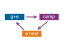</a></p>
<p><em>Error feedback carries the residual into the next compressed step.</em></p>
</div></div><div id="dfn-collective-communication-error-feedback-mechanism" class="callout callout-definition" title="Error feedback mechanism">
<details class="callout-definition fbx-simplebox fbx-default" open=""><summary><strong>Definition 1.4: Error feedback mechanism</strong></summary><div>
<p><strong><em>Error Feedback</em></strong> is a distributed-training technique for gradient compression that maintains a per-worker residual accumulator <span class="math inline">\(e_t\)</span>, re-injecting the compression error back into the next gradient update so that information deferred by the compressor is never permanently discarded.</p>
<ol type="1">
<li><strong>Significance</strong>: Top-k sparsification at 1 percent keeps only the largest 1 percent of gradient values by magnitude, reducing AllReduce data volume from 140 GB to 1.4 GB for a 70B model, a 100<span class="math inline">\(\times\)</span> payload reduction before sparse-index overhead. Without error feedback, the discarded 99 percent of gradient values create a biased update that can harm convergence; with error feedback, the residual accumulates until deferred components cross the compression threshold in later steps, recovering the convergence guarantees analyzed for memory/error-feedback variants under their assumptions <span class="citation" data-cites="stich2018sparsified karimireddy2019error">(<a href="#ref-stich2018sparsified" role="doc-biblioref">Stich et al. 2018</a>; <a href="#ref-karimireddy2019error" role="doc-biblioref">Karimireddy et al. 2019</a>)</span>.</li>
<li><strong>Distinction</strong>: Unlike lossy compression (which permanently discards sub-threshold gradient components), error feedback is a delayed transmission strategy: the residual <span class="math inline">\(e_t\)</span> telescopes across steps so that <span class="math inline">\(\frac{1}{K}\sum_{t=1}^{K} v_t \to \frac{1}{K}\sum_{t=1}^{K} g_t\)</span> as <span class="math inline">\(K \to \infty\)</span>, making the long-run average of transmitted gradients equal to the true gradient average.</li>
<li><strong>Common pitfall</strong>: A frequent misconception is that error feedback is automatic whenever a compressor is used. It is not: the training system must explicitly preserve and reinject the residual. Without that residual path, Top-k and 1-bit quantization introduce systematic bias that can accumulate across steps <span class="citation" data-cites="karimireddy2019error">(<a href="#ref-karimireddy2019error" role="doc-biblioref">Karimireddy et al. 2019</a>)</span>.</li>
</ol>
</div></details>
</div>
<div class="no-row-height column-margin column-container"></div><div class="no-row-height column-margin column-container"></div><div class="no-row-height column-margin column-container"></div><p>Error feedback preserves cumulative gradient information over time. Consider what happens over <span class="math inline">\(K\)</span> steps:</p>
<p><span class="math display">\[\sum_{t=1}^{K} v_t = \sum_{t=1}^{K} \left[(g_t + e_t) - e_{t+1}\right] = \sum_{t=1}^{K} g_t + e_1 - e_{K+1}\]</span></p>
<p>If the error accumulator remains bounded (which it does for reasonable compression schemes), then as <span class="math inline">\(K \to \infty\)</span>:</p>
<p><span class="math display">\[\frac{1}{K}\sum_{t=1}^{K} v_t \to \frac{1}{K}\sum_{t=1}^{K} g_t\]</span></p>
<p>The long-run average of transmitted gradients equals the long-run average of true gradients. No gradient information is permanently lost; it is merely delayed. Small gradients that are repeatedly dropped eventually accumulate in <span class="math inline">\(e_t\)</span> until they exceed the compression threshold and get transmitted.</p>
<p>The telescoping property of compression error across time is why error feedback can transform a biased compressor into a convergent training method. Theoretical analyses show convergence guarantees for sparsified SGD with memory and for EF-SGD with broad compression operators under their stated assumptions <span class="citation" data-cites="stich2018sparsified karimireddy2019error">(<a href="#ref-stich2018sparsified" role="doc-biblioref">Stich et al. 2018</a>; <a href="#ref-karimireddy2019error" role="doc-biblioref">Karimireddy et al. 2019</a>)</span>. A short trace shows how error feedback preserves gradient information that naive compression would lose. <a href="#tbl-error-feedback-naive" class="quarto-xref">Table&nbsp;10</a> runs the trace for a greedy compressor with no residual path, transmitting only values <span class="math inline">\(\geq 0.5\)</span>:</p>
<div class="no-row-height column-margin column-container"></div><div id="tbl-error-feedback-naive" class="quarto-float quarto-figure quarto-figure-center anchored">
<figure class="quarto-float quarto-float-tbl figure">
<figcaption class="quarto-float-caption-top quarto-float-caption quarto-float-tbl" id="tbl-error-feedback-naive-caption-0ceaefa1-69ba-4598-a22c-09a6ac19f8ca">
Table&nbsp;10: <strong>Naive Compression Trace (No Error Feedback)</strong>: Five-step worked trace showing how a greedy 1-bit quantizer transmits zero whenever individual gradients fall below the threshold.
</figcaption>
<div aria-describedby="tbl-error-feedback-naive-caption-0ceaefa1-69ba-4598-a22c-09a6ac19f8ca">
<table class="caption-top table">
<colgroup>
<col style="width: 5%">
<col style="width: 21%">
<col style="width: 24%">
<col style="width: 25%">
<col style="width: 22%">
</colgroup>
<thead>
<tr class="header">
<th style="text-align: left;"><strong>Step</strong></th>
<th style="text-align: center;"><strong>True Gradient <span class="math inline">\(g_t\)</span></strong></th>
<th style="text-align: center;"><strong>Transmitted <span class="math inline">\(v_t\)</span></strong></th>
<th style="text-align: center;"><strong>Cumulative Transmitted</strong></th>
<th style="text-align: center;"><strong>Cumulative True</strong></th>
</tr>
</thead>
<tbody>
<tr class="odd">
<td style="text-align: left;">1</td>
<td style="text-align: center;">0.4</td>
<td style="text-align: center;">0</td>
<td style="text-align: center;">0</td>
<td style="text-align: center;">0.4</td>
</tr>
<tr class="even">
<td style="text-align: left;">2</td>
<td style="text-align: center;">0.3</td>
<td style="text-align: center;">0</td>
<td style="text-align: center;">0</td>
<td style="text-align: center;">0.7</td>
</tr>
<tr class="odd">
<td style="text-align: left;">3</td>
<td style="text-align: center;">0.2</td>
<td style="text-align: center;">0</td>
<td style="text-align: center;">0</td>
<td style="text-align: center;">0.9</td>
</tr>
<tr class="even">
<td style="text-align: left;">4</td>
<td style="text-align: center;">0.4</td>
<td style="text-align: center;">0</td>
<td style="text-align: center;">0</td>
<td style="text-align: center;">1.3</td>
</tr>
<tr class="odd">
<td style="text-align: left;">5</td>
<td style="text-align: center;">0.3</td>
<td style="text-align: center;">0</td>
<td style="text-align: center;">0</td>
<td style="text-align: center;">1.6</td>
</tr>
</tbody>
</table>
</div>
</figure>
</div>
<p>The error-feedback trace in <a href="#tbl-error-feedback" class="quarto-xref">table&nbsp;11</a> runs the same sequence with a residual accumulator <span class="math inline">\(e_t\)</span> that re-injects the discarded remainder into the next step. The trace in example <a href="#exmp-collective-communication-error-feedback-mechanism">1.2</a> works through both traces to show that the deferred information is conserved rather than lost.</p>
<div id="exmp-collective-communication-error-feedback-mechanism" class="callout callout-example" title="Error feedback mechanism">
<p></p><details class="callout-example fbx-simplebox fbx-default" open=""><summary><strong>Example 1.2: Error feedback mechanism</strong></summary><div><strong>Scenario</strong>: A gradient compression pipeline applies thresholding to small gradient values (&lt;0.5) over 5 training steps during distributed data-parallel training.<p></p>
<p><strong>Diagnosis</strong>: Naive greedy compression discards values below threshold, transmitting 0 when true cumulative gradient is 1.6 (100 percent gradient loss). Adding error feedback (<span class="math inline">\(e_t\)</span>) telescopes residual errors across steps, transmitting 2 with −0.4 residual error.</p>
<p><strong>Systems lesson</strong>: Error feedback preserves convergence in lossy gradient compression. By storing untransmitted residual vectors in local host memory (<span class="math inline">\(e_{t+1} = g_t + e_t - v_t\)</span>), small gradients accumulate over steps until crossing the transmission threshold without information loss.</p>
</div></details>
</div>
<div id="tbl-error-feedback" class="quarto-float quarto-figure quarto-figure-center anchored">
<figure class="quarto-float quarto-float-tbl figure">
<figcaption class="quarto-float-caption-top quarto-float-caption quarto-float-tbl" id="tbl-error-feedback-caption-0ceaefa1-69ba-4598-a22c-09a6ac19f8ca">
Table&nbsp;11: <strong>Error-Feedback Compression Trace</strong>: Same five-step sequence under error-feedback compression.
</figcaption>
<div aria-describedby="tbl-error-feedback-caption-0ceaefa1-69ba-4598-a22c-09a6ac19f8ca">
<table class="caption-top table">
<colgroup>
<col style="width: 4%">
<col style="width: 15%">
<col style="width: 15%">
<col style="width: 16%">
<col style="width: 15%">
<col style="width: 16%">
<col style="width: 16%">
</colgroup>
<thead>
<tr class="header">
<th style="text-align: left;"><strong>Step</strong></th>
<th style="text-align: center;"><strong><span class="math inline">\(g_t\)</span></strong></th>
<th style="text-align: center;"><strong><span class="math inline">\(e_t\)</span></strong></th>
<th style="text-align: center;"><strong><span class="math inline">\(g_t + e_t\)</span></strong></th>
<th style="text-align: center;"><strong><span class="math inline">\(v_t\)</span></strong></th>
<th style="text-align: center;"><strong><span class="math inline">\(e_{t+1} = (g_t + e_t) - v_t\)</span></strong></th>
<th style="text-align: center;"><strong>Cumulative <span class="math inline">\(v\)</span></strong></th>
</tr>
</thead>
<tbody>
<tr class="odd">
<td style="text-align: left;">1</td>
<td style="text-align: center;">0.4</td>
<td style="text-align: center;">0</td>
<td style="text-align: center;">0.4</td>
<td style="text-align: center;">0</td>
<td style="text-align: center;">0.4</td>
<td style="text-align: center;">0</td>
</tr>
<tr class="even">
<td style="text-align: left;">2</td>
<td style="text-align: center;">0.3</td>
<td style="text-align: center;">0.4</td>
<td style="text-align: center;">0.7</td>
<td style="text-align: center;">1</td>
<td style="text-align: center;">−0.3</td>
<td style="text-align: center;">1</td>
</tr>
<tr class="odd">
<td style="text-align: left;">3</td>
<td style="text-align: center;">0.2</td>
<td style="text-align: center;">−0.3</td>
<td style="text-align: center;">−0.1</td>
<td style="text-align: center;">0</td>
<td style="text-align: center;">−0.1</td>
<td style="text-align: center;">1</td>
</tr>
<tr class="even">
<td style="text-align: left;">4</td>
<td style="text-align: center;">0.4</td>
<td style="text-align: center;">−0.1</td>
<td style="text-align: center;">0.3</td>
<td style="text-align: center;">0</td>
<td style="text-align: center;">0.3</td>
<td style="text-align: center;">1</td>
</tr>
<tr class="odd">
<td style="text-align: left;">5</td>
<td style="text-align: center;">0.3</td>
<td style="text-align: center;">0.3</td>
<td style="text-align: center;">0.6</td>
<td style="text-align: center;">1</td>
<td style="text-align: center;">−0.4</td>
<td style="text-align: center;">2</td>
</tr>
</tbody>
</table>
</div>
</figure>
</div>
</section>
<section id="sec-communication-1bit-adam" class="level3 page-columns page-full">
<h3 class="anchored" data-anchor-id="sec-communication-1bit-adam">1-bit Adam: Compression-aware optimization</h3>
<p>Error feedback can restore convergence guarantees for suitable compressors under stated assumptions, but it treats the optimizer as a black box. The gradient is compressed, transmitted, decompressed, and then fed to the optimizer as if nothing happened. This separation leaves performance on the table: the optimizer maintains internal state (momentum, variance estimates) that contains information about the gradient distribution, yet compression ignores this state entirely. The decision is whether compression should operate on raw gradients or on the optimizer state that already summarizes them.</p>
<p>A more integrated approach, pioneered by Microsoft’s DeepSpeed team, compresses the optimizer’s communication rather than the raw gradients. <strong>1-bit Adaptive Moment Estimation (Adam)</strong> <span class="citation" data-cites="tang20211bit">(<a href="#ref-tang20211bit" role="doc-biblioref">Tang et al. 2021</a>)</span> exploits the observation that Adam’s second-moment estimate (<span class="math inline">\(v_t\)</span>) stabilizes after an initial training period. It then compresses the communicated first-moment state (<span class="math inline">\(m_t\)</span>) to 1 bit per parameter plus a scaling factor while retaining the stabilized second moment as an adaptive preconditioner.</p>
<div class="no-row-height column-margin column-container"></div><p>The algorithm proceeds in two phases. During a warmup phase, standard Adam runs with full-precision communication so that the second-moment estimate stabilizes. The algorithm then freezes that variance estimate and uses it as a fixed adaptive preconditioner. In the communication-efficient phase, workers communicate the momentum using 1-bit compression (sign plus scale) and retain each compression residual locally so it can be added before the next compression step.</p>
<p>The theoretical justification combines the frozen adaptive preconditioner with error-compensated momentum compression. The residual feeds quantization error into later momentum messages, controlling accumulated compression error and supporting the paper’s convergence result without treating the compressed update as an unbiased estimator.</p>
<p>The 1-bit Adam paper reports up to 5<span class="math inline">\(\times\)</span> communication-volume reduction while matching the convergence speed of uncompressed Adam, with experiments up to 256 GPUs showing up to 3.3<span class="math inline">\(\times\)</span> higher throughput for BERT-Large pretraining and up to 2.9<span class="math inline">\(\times\)</span> higher throughput for SQuAD fine-tuning <span class="citation" data-cites="tang20211bit">(<a href="#ref-tang20211bit" role="doc-biblioref">Tang et al. 2021</a>)</span>. The practical lesson is narrower than “compression always wins”: the compression overhead must remain small compared with the communication time saved.</p>
<div class="no-row-height column-margin column-container"></div><p>The success of 1-bit Adam illustrates a broader principle: compression is most effective when it is co-designed with the optimization algorithm. Compressing raw gradients discards information indiscriminately. Compressing optimizer states exploits the structure of the optimization trajectory, achieving higher compression ratios with less convergence impact.</p>
<div id="nbk-collective-communication-payback-compression" class="callout callout-notebook" title="The payback of compression">
<p></p><details class="callout-notebook fbx-simplebox fbx-default" open=""><summary><strong>Napkin Math 1.7: The payback of compression</strong></summary><div><strong>Problem</strong>: A training job takes 40 ms to synchronize a gradient buffer. The system implements 1-bit Adam, which reduces communication volume by 32<span class="math inline">\(\times\)</span> but adds 2 ms of CPU/GPU overhead for the compression logic. Scaling factors, optimizer-state coordination, and protocol overhead reduce the realized network gain to 8× effective throughput. What is the actual communication speedup?<p></p>
<p><strong>Math</strong>:</p>
<ol type="1">
<li><strong>Compressed communication time</strong>: 40 ms divided by 8 = 5 ms.</li>
<li><strong>Total new time</strong>: 5 ms (comm) + 2 ms (overhead) = 7 ms.</li>
<li><strong>Effective speedup</strong>: 40 ms divided by 7 ms <span class="math inline">\(\approx\)</span> 5.7×.</li>
</ol>
<p><strong>Systems insight</strong>: Compression is a trade of compute for bandwidth. It pays off only when <span class="math inline">\(T_{\text{overhead}} &lt; T_{\text{comm}}(N) \times (1 - 1/\text{Ratio})\)</span>. In this case, spending 2 ms to save 35 ms of network time is an exceptional trade. However, on a high-speed NVLink network where <span class="math inline">\(T_{\text{comm}}(N)\)</span> is only 1 ms, this same compression logic would slow down training. Always profile the network before adding compression.</p>
</div></details>
</div>
<p>The payoff calculation makes compression a conditional optimization: it must save enough communication time to cover both encoding overhead and convergence risk.</p>
<div id="chk-collective-communication-gradient-compression-decisions" class="callout callout-checkpoint" title="Gradient compression decisions">
<details class="callout-checkpoint fbx-simplebox fbx-default" open=""><summary><strong>Checkpoint 1.4: Gradient compression decisions</strong></summary><div>
<p>Verify your understanding of when and how to apply gradient compression:</p>
<ul class="task-list">
<li><label><input type="checkbox"><strong>Error feedback</strong>: explain why 1-bit SGD without error feedback causes divergence while 1-bit Adam with warmup converges, comparing how each method handles information loss.</label></li>
<li><label><input type="checkbox"><strong>Compression payoff</strong>: determine whether applying 4<span class="math inline">\(\times\)</span> gradient compression improves total step time when the backward pass takes 800 ms and AllReduce takes either 200 ms or 2000 ms.</label></li>
<li><label><input type="checkbox"><strong>Error accumulator</strong>: derive the steady-state behavior of the error accumulator <span class="math inline">\(e_t\)</span> when the true gradient is constant at <span class="math inline">\(g = 0.3\)</span> and the compression threshold is 0.5.</label></li>
<li><label><input type="checkbox"><strong>Top-k vs.&nbsp;quantization</strong>: choose between Top-k sparsification and quantization for a workload, accounting for compression ratio and sparse-index encoding overhead.</label></li>
</ul>
</div></details>
</div>
</section>
<section id="sec-communication-collective-operations-compression-tradeoffs" class="level3 page-columns page-full">
<h3 class="anchored" data-anchor-id="sec-communication-collective-operations-compression-tradeoffs">Compression trade-offs: Bandwidth vs.&nbsp;convergence</h3>
<p>Gradient compression is not free; it trades reduced communication for increased variance or bias in the optimization process. The comparison in <a href="#tbl-gradient-compression-methods" class="quarto-xref">table&nbsp;12</a> summarizes the source-backed patterns from quantization, sparsification, error-feedback, and optimizer-aware compression work <span class="citation" data-cites="seide2014 aji2017 lin2018deep stich2018sparsified karimireddy2019error tang20211bit">(<a href="#ref-seide2014" role="doc-biblioref">Seide et al. 2014</a>; <a href="#ref-aji2017" role="doc-biblioref">Aji and Heafield 2017</a>; <a href="#ref-lin2018deep" role="doc-biblioref">Lin et al. 2018</a>; <a href="#ref-stich2018sparsified" role="doc-biblioref">Stich et al. 2018</a>; <a href="#ref-karimireddy2019error" role="doc-biblioref">Karimireddy et al. 2019</a>; <a href="#ref-tang20211bit" role="doc-biblioref">Tang et al. 2021</a>)</span>.</p>
<div class="no-row-height column-margin column-container"><div id="ref-seide2014" class="csl-entry" role="listitem">
Seide, Frank, Hao Fu, Jasha Droppo, Gang Li, and Dong Yu. 2014. <span>“1-Bit Stochastic Gradient Descent and Its Application to Data-Parallel Distributed Training of Speech <span>DNNs</span>.”</span> <em>Interspeech 2014</em>, 1058–62. https://doi.org/10.21437/interspeech.2014-274.
</div><div id="ref-aji2017" class="csl-entry" role="listitem">
Aji, Alham Fikri, and Kenneth Heafield. 2017. <span>“Sparse Communication for Distributed Gradient Descent.”</span> <em>Proceedings of the 2017 Conference on Empirical Methods in Natural Language Processing</em>, 440–45. https://doi.org/10.18653/v1/d17-1045.
</div><div id="ref-lin2018deep" class="csl-entry" role="listitem">
Lin, Yujun, Song Han, Huizi Mao, Yu Wang, and William J Dally. 2018. <span>“Deep Gradient Compression: <span>Reducing</span> the Communication Bandwidth for Distributed Training.”</span> <em>International Conference on Learning Representations (ICLR)</em>.
</div><div id="ref-stich2018sparsified" class="csl-entry" role="listitem">
Stich, S. U., J.-B. Cordonnier, and M. Jaggi. 2018. <span>“Sparsified <span>SGD</span> with Memory.”</span> <em>Advances in Neural Information Processing Systems</em> 31.
</div><div id="ref-karimireddy2019error" class="csl-entry" role="listitem">
Karimireddy, Sai Praneeth, Quentin Rebjock, Sebastian U. Stich, and Martin Jaggi. 2019. <span>“Error Feedback Fixes <span>SignSGD</span> and Other Gradient Compression Schemes.”</span> <em>Proceedings of the 36th International Conference on Machine Learning (ICML)</em>, Proceedings of machine learning research, vol. 97: 3252–61.
</div><div id="ref-tang20211bit" class="csl-entry" role="listitem">
Tang, Hanlin, Shaoduo Gan, Ammar Ahmad Awan, Samyam Rajbhandari, Conglong Li, Xiangru Lian, Ji Liu, Ce Zhang, and Yuxiong He. 2021. <span>“1-Bit <span>Adam</span>: Communication Efficient Large-Scale Training with <span>Adam</span>’s Convergence Speed.”</span> <em>Proceedings of the 38th International Conference on Machine Learning (ICML)</em>, Proceedings of machine learning research, vol. 139: 10118–29.
</div></div><div id="tbl-gradient-compression-methods" class="quarto-float quarto-figure quarto-figure-center anchored">
<figure class="quarto-float quarto-float-tbl figure">
<figcaption class="quarto-float-caption-top quarto-float-caption quarto-float-tbl" id="tbl-gradient-compression-methods-caption-0ceaefa1-69ba-4598-a22c-09a6ac19f8ca">
Table&nbsp;12: <strong>Gradient Compression Methods</strong>: Compression-ratio vs.&nbsp;convergence-impact trade-off for the four canonical gradient compressors. The right choice depends on whether bandwidth or convergence speed is the binding constraint; aggressive compressors only pay off once communication dominates iteration time.
</figcaption>
<div aria-describedby="tbl-gradient-compression-methods-caption-0ceaefa1-69ba-4598-a22c-09a6ac19f8ca">
<table class="caption-top table">
<colgroup>
<col style="width: 23%">
<col style="width: 20%">
<col style="width: 28%">
<col style="width: 27%">
</colgroup>
<thead>
<tr class="header">
<th style="text-align: left;"><strong>Method</strong></th>
<th style="text-align: center;"><strong>Compression Ratio</strong></th>
<th style="text-align: left;"><strong>Convergence Impact</strong></th>
<th style="text-align: left;"><strong>Best Use Case</strong></th>
</tr>
</thead>
<tbody>
<tr class="odd">
<td style="text-align: left;"><strong>FP16</strong></td>
<td style="text-align: center;">2<span class="math inline">\(\times\)</span></td>
<td style="text-align: left;">Negligible</td>
<td style="text-align: left;">Common accelerator baseline</td>
</tr>
<tr class="even">
<td style="text-align: left;"><strong>INT8 + Error FB</strong></td>
<td style="text-align: center;">4<span class="math inline">\(\times\)</span></td>
<td style="text-align: left;">Minor slowdown (~5–10%)</td>
<td style="text-align: left;">Bandwidth-constrained clusters</td>
</tr>
<tr class="odd">
<td style="text-align: left;"><strong>Top-k (1%) + Error FB</strong></td>
<td style="text-align: center;">100<span class="math inline">\(\times\)</span></td>
<td style="text-align: left;">Moderate slowdown (~10–20%)</td>
<td style="text-align: left;">Cross-data center training</td>
</tr>
<tr class="even">
<td style="text-align: left;"><strong>1-bit + Error FB</strong></td>
<td style="text-align: center;">32<span class="math inline">\(\times\)</span></td>
<td style="text-align: left;">Significant slowdown (~20–30%)</td>
<td style="text-align: left;">Extreme bandwidth constraints</td>
</tr>
</tbody>
</table>
</div>
</figure>
</div>
<section id="sec-collective-communication-use-compression-8519" class="level4">
<h4 class="anchored" data-anchor-id="sec-collective-communication-use-compression-8519">When to use compression</h4>
<p>The decision rule is not the compression ratio alone. Compression is worthwhile only when the wall-clock time saved per step exceeds the encoding overhead and the extra steps caused by slower convergence. Aggressive compression pays off when communication time dominates compute time (a high <span class="math inline">\(T_{\text{comm}}(N)/(T_{\text{compute}}/N)\)</span> ratio), which typically occurs with smaller models on large clusters; when compute time dominates instead, the convergence slowdown is not worth the savings because the system is not bottlenecked on communication. Independently of that ratio, any lossy compression beyond FP16 should carry error feedback unless the optimizer analysis and convergence tests justify omitting it, since without correction convergence can fail.</p>
<p>The <span class="math inline">\(\alpha\)</span>-<span class="math inline">\(\beta\)</span> analysis from <a href="#sec-communication-collective-operations-collective-operations-network-performance-modeling-0d8e" class="quarto-xref">section&nbsp;1.2</a> helps determine when compression pays off: if the gradients are large enough to be bandwidth-bound (<span class="math inline">\(M &gt; n^*\)</span>), compression directly reduces wall-clock time. If they are latency-bound (<span class="math inline">\(M &lt; n^*\)</span>), compression will not help because the latency term dominates regardless of message size.</p>
<p>The decision of whether compression is worthwhile requires comparing the communication time savings against the convergence penalty. Consider a concrete scenario: a training run requires 100,000 steps to converge without compression, with each step taking 500 ms (300 ms compute, 200 ms communication). The total training time is 50,000 seconds. Applying INT8 compression with error feedback reduces communication time by 4<span class="math inline">\(\times\)</span> (from 200 ms to 50 ms per step) but increases the required steps by 10 percent (from 100,000 to 110,000). The new total time is <span class="math inline">\(110{,}000 \times 0.35 = 38{,}500\)</span> seconds, a 23 percent improvement. The compression is worthwhile because the per-step communication savings (150 ms) outweigh the additional steps required.</p>
<p>Now consider the same model on a faster network where communication takes only 30 ms per step. Compression reduces this to 7.5 ms (saving 22.5 ms per step) but still adds 10 percent more steps. The new total time is <span class="math inline">\(110{,}000 \times 0.3075 = 33{,}825\)</span> seconds vs.&nbsp;<span class="math inline">\(100{,}000 \times 0.33 = 33{,}000\)</span> seconds without compression. The compression increases total training time by 2.5 percent, because the per-step savings (22.5 ms) are too small relative to the convergence penalty (10,000 extra steps at 307.5 ms each). This example illustrates why compression should only be applied when the communication-to-computation ratio (<span class="math inline">\(T_{\text{comm}}(N)/(T_{\text{compute}}/N)\)</span>) exceeds a threshold that depends on the specific convergence penalty of the chosen method.</p>
<div id="quiz-question-sec-communication-collective-operations-collective-operations-gradient-compression-7a5c" class="callout callout-quiz-question">
<details class="callout-quiz-question fbx-simplebox fbx-default"><summary><strong>Self-Check: Question</strong></summary><div>
<ol type="1">
<li><p>A team implements Top-k gradient sparsification for a 100M-parameter model, keeping only the top <span class="math inline">\(0.1\%\)</span> (<span class="math inline">\(K_{\text{top}} = 10^5\)</span>) largest-magnitude gradient elements per step. Gradients are FP32 (4 bytes) and coordinate positions are indexed using INT32 (4 bytes). What is the actual effective compression ratio achieved over dense FP32 transmission, and why?</p>
<ol type="a">
<li><span class="math inline">\(1000\times\)</span>, because positional indices can always be reconstructed deterministically by the receiver without transmitting any index metadata.</li>
<li><span class="math inline">\(500\times\)</span>, because transmitting sparse gradients requires sending both the 4-byte floating-point values and their 4-byte positional indices (<span class="math inline">\(8 K_{\text{top}}\)</span> bytes total), which halves the naive <span class="math inline">\(1000\times\)</span> compression expectation.</li>
<li><span class="math inline">\(32\times\)</span>, because Top-k sparsification is mathematically equivalent to 1-bit quantization.</li>
<li><span class="math inline">\(2\times\)</span>, because sparse tensors must be padded with zeros to match dense vector dimensions before network transmission.</li>
</ol></li>
<li><p>Why does naive 1-bit SGD without error feedback cause training loss to diverge or plateau prematurely, whereas 1-bit SGD equipped with an error feedback accumulator (<span class="math inline">\(e_t\)</span>) successfully converges?</p>
<ol type="a">
<li>Naive 1-bit SGD increases network packet size by <span class="math inline">\(32\times\)</span>, causing buffer overflows on network switches.</li>
<li>Error feedback eliminates all gradient noise by converting 1-bit signs back to full FP64 precision before network transmission.</li>
<li>Naive 1-bit SGD disables CUDA kernel execution on the backward pass.</li>
<li>Naive 1-bit quantization permanently discards small gradient components, introducing a persistent directional bias; error feedback stores the quantization residual locally (<span class="math inline">\(e_{t+1} = g_t + e_t - v_t\)</span>) and re-injects it into the next step, preserving the long-run average gradient.</li>
</ol></li>
<li><p>A distributed training job spends 40 ms on AllReduce and 100 ms on backward compute per step. The team evaluates two compression strategies:</p></li>
</ol>
<ol type="1">
<li>1-bit Adam with 8x effective communication throughput gain and 2 ms compression/decompression overhead, causing a 5% increase in total training iterations to reach target loss.</li>
<li>Deploying this same 1-bit Adam on an intra-node NVLink cluster where AllReduce takes only 1 ms. Using the compression payback condition and the time-to-accuracy metric, evaluate whether compression is beneficial in each scenario.</li>
</ol>
<p><a href="#quiz-answer-sec-communication-collective-operations-collective-operations-gradient-compression-7a5c" class="question-label" onclick="event.preventDefault();document.getElementById('quiz-answer-sec-communication-collective-operations-collective-operations-gradient-compression-7a5c').scrollIntoView({behavior:'smooth',block:'start'});history.pushState(null,'','#quiz-answer-sec-communication-collective-operations-collective-operations-gradient-compression-7a5c');">See Answers →</a></p>
</div></details>
</div>
</section>
</section>
</section>
<section id="sec-communication-collective-operations-collective-operations-communication-libraries-nccl-5307" class="level2 page-columns page-full">
<h2 class="anchored" data-anchor-id="sec-communication-collective-operations-collective-operations-communication-libraries-nccl-5307">Communication Libraries and Runtimes</h2>
<p>Writing a highly optimized, topology-aware, hierarchical Ring AllReduce from scratch in C++ would take a dedicated team of engineers months of effort. The engineering decision is which library preserves the chapter’s model, topology, and overlap assumptions on the target hardware. The preceding sections developed three complementary strategies for taming communication cost; production libraries realize those strategies through four decision axes: the device memory path, topology awareness, portability, and observability.</p>
<section id="sec-communication-nccl" class="level3 page-columns page-full">
<h3 class="anchored" data-anchor-id="sec-communication-nccl">NCCL: Why it is central to NVIDIA GPU workloads</h3>
<p>NVIDIA Collective Communications Library (NCCL)<a href="#fn11" class="footnote-ref" id="fnref11" role="doc-noteref"><sup>11</sup></a> is central to many NVIDIA multi-GPU training deployments because it turns collective algorithms (covered in <a href="#sec-communication-collective-operations-collective-operations-allreduce-algorithms-7545" class="quarto-xref">section&nbsp;1.4</a> and <a href="#sec-communication-collective-operations-collective-operations-mapping-collectives-topology-3214" class="quarto-xref">section&nbsp;1.5</a>) into GPU-resident data movement <span class="citation" data-cites="jeaugey2017nccl nvidiaNcclUserGuide">(<a href="#ref-jeaugey2017nccl" role="doc-biblioref">Jeaugey 2017</a>; <a href="#ref-nvidiaNcclUserGuide" role="doc-biblioref">NVIDIA 2026</a>)</span>. Its adoption stems from three GPU-specific optimizations that MPI and Gloo cannot replicate without hardware vendor support. Kernel fusion folds the reduction operator (sum, average) directly into the memory-copy kernel, so instead of copying data to a buffer, reducing, then copying the results back, NCCL reduces during the transfer and eliminates the intermediate memory traffic that would otherwise cap high-bandwidth memory (HBM) bandwidth utilization. Channel pipelining opens multiple parallel communication channels to saturate every network interface at once, so a DGX node with 8 NICs reaches 8<span class="math inline">\(\times\)</span> the bandwidth of a single-channel implementation. GPUDirect RDMA lets the network card read directly from GPU memory over PCIe, bypassing the CPU entirely; without it, data would traverse GPU → CPU memory → NIC → network, adding microseconds of latency and consuming CPU cycles. Together these explain why NCCL is usually the first backend to benchmark for NVIDIA GPU collectives before falling back to generic MPI implementations.</p>
<div class="no-row-height column-margin column-container"><div id="fn11"><p><sup>11</sup>&nbsp;<strong>NCCL (NVIDIA Collective Communications Library)</strong>: NCCL can approach theoretical peak bandwidth on well-configured NVIDIA clusters by combining GPU-resident collectives, GPUDirect RDMA, and topology-aware path selection <span class="citation" data-cites="jeaugey2017nccl nvidiaNcclUserGuide">(<a href="#ref-jeaugey2017nccl" role="doc-biblioref">Jeaugey 2017</a>; <a href="#ref-nvidiaNcclUserGuide" role="doc-biblioref">NVIDIA 2026</a>)</span>. Its NVIDIA-specific design creates a vendor lock-in trade-off: organizations can gain a tuned collective backend for NVIDIA GPU fabrics but lose portability to AMD (RCCL) or Intel (oneCCL) hardware.</p><div id="ref-jeaugey2017nccl" class="csl-entry" role="listitem">
Jeaugey, Sylvain. 2017. <em><span>NCCL</span> 2.0</em>. GPU Technology Conference presentation.
</div><div id="ref-nvidiaNcclUserGuide" class="csl-entry" role="listitem">
NVIDIA. 2026. <em><span>NCCL</span> User Guide</em>.
</div></div></div><p>Beyond raw performance, NCCL’s topology auto-discovery is a critical differentiator. The topology-detection phase from <a href="#sec-communication-collective-operations-collective-operations-topology-detection-selection-2dc7" class="quarto-xref">section&nbsp;1.5.3</a> is, in NCCL, driven by NVIDIA Management Library queries and PCI bus enumeration of NVLink connectivity and NIC placement. The library-specific payoff is hardware-aware algorithm selection: on a DGX H100 with NVSwitch, NCCL recognizes that all 8 GPUs are fully connected and selects NVSwitch-based algorithms that differ from the ring algorithms used on systems with point-to-point NVLink connections.</p>
<p>NCCL also implements automatic algorithm selection based on message size and GPU count. Internally, it maintains tuning logic that maps message size, GPU count, and topology to a selected algorithm or protocol family. Users can override or inspect some built-in choices through documented environment variables such as <code>NCCL_ALGO</code>, <code>NCCL_PROTO</code>, and <code>NCCL_DEBUG</code> when benchmarking reveals suboptimal choices for specific workloads <span class="citation" data-cites="nvidiaNcclUserGuide">(<a href="#ref-nvidiaNcclUserGuide" role="doc-biblioref">NVIDIA 2026</a>)</span>. The debug output provides essential visibility for performance debugging.</p>
<div class="no-row-height column-margin column-container"></div><p>A newer NCCL capability is limited support for user-defined reduction operators, such as the documented premultiplied-sum reduction for a communicator and datatype <span class="citation" data-cites="nvidiaNcclUserGuide">(<a href="#ref-nvidiaNcclUserGuide" role="doc-biblioref">NVIDIA 2026</a>)</span>. This support is narrower than MPI-style arbitrary reductions and custom datatypes, so application-specific aggregation such as outlier clipping usually still requires separate kernels or framework-level logic.</p>
<p>Despite its adoption, NCCL is not without limitations. It is open source but tightly coupled to NVIDIA GPUs and networking, and cannot be used as the native collective library on AMD or Intel accelerators. For organizations building multi-vendor infrastructure or requiring full control over the communication stack, these limitations motivate the use of alternative libraries.</p>
</section>
<section id="sec-communication-mpi" class="level3 page-columns page-full">
<h3 class="anchored" data-anchor-id="sec-communication-mpi">MPI: The HPC foundation</h3>
<p>MPI<a href="#fn12" class="footnote-ref" id="fnref12" role="doc-noteref"><sup>12</sup></a> standardized collective operations decades before deep learning existed. The MPI Forum’s standards history records Version 1.0 in May 1994, defining a vendor-neutral API for point-to-point messaging, collective operations, and process management that became the lingua franca of high-performance computing <span class="citation" data-cites="mpiforum2015mpi31 mpiforum1993">(<a href="#ref-mpiforum2015mpi31" role="doc-biblioref">Message Passing Interface Forum 2015</a>, <a href="#ref-mpiforum1993" role="doc-biblioref">1993</a>)</span>. MPI remains relevant for ML systems when portability, CPU-side coordination, or HPC integration is the binding requirement.</p>
<div class="no-row-height column-margin column-container"><div id="fn12"><p><sup>12</sup>&nbsp;<strong>MPI (Message Passing Interface)</strong>: Standardized in June 1994 after a three-year community effort, MPI defined the collective operations (AllReduce, Broadcast, Scatter) that ML frameworks later adopted wholesale. For GPU training, standard MPI requires explicit device-to-host copies that negate GPUDirect benefits, which is why NCCL displaced it for GPU collectives while MPI persists for job launch (<code>mpirun</code>) and CPU-side coordination.</p></div><div id="ref-mpiforum2015mpi31" class="csl-entry" role="listitem">
Message Passing Interface Forum. 2015. <em><span>MPI</span>: A Message-Passing Interface Standard, Version 3.1</em>.
</div><div id="ref-mpiforum1993" class="csl-entry" role="listitem">
Message Passing Interface Forum. 1993. <span>“<span>MPI</span>: A Message Passing Interface.”</span> <em>Proceedings of the 1993 <span>ACM</span>/<span>IEEE</span> Conference on Supercomputing - Supercomputing ’93</em>, 878–83. https://doi.org/10.1145/169627.169855.
</div></div><p>For CPU-based distributed computing, MPI implementations (OpenMPI, MPICH, Intel MPI) are mature and well-optimized, with decades of performance tuning across diverse network fabrics. HPC facilities that predate the GPU training era often have MPI deeply integrated into their job schedulers and resource managers, making MPI the path of least resistance for deploying ML workloads on these systems.</p>
<p>MPI’s specification includes features that NCCL lacks, most notably <strong>Persistent Collectives</strong> and <strong>Non-Blocking Collective Operations</strong> with fine-grained completion semantics. Persistent collectives (introduced in MPI 4.0) allow applications to “preregister” a collective operation, amortizing the setup overhead across thousands of invocations. This is valuable for training loops where the same AllReduce shape repeats at every step. Non-blocking collectives (<code>MPI_Iallreduce</code>) provide explicit request handles that can be tested for completion, enabling more flexible overlap patterns than NCCL’s asynchronous operations.</p>
<p>MPI also provides <strong>One-Sided Communication</strong> (MPI_Put, MPI_Get, MPI_Accumulate) that maps naturally to RDMA hardware. These operations allow a process to read from or write to another process’s memory without the remote process explicitly participating, enabling communication patterns that are difficult to express with collective operations alone. Parameter server architectures and certain asynchronous training algorithms benefit from one-sided semantics.</p>
<p>The primary limitation for ML practitioners is GPU-awareness. Standard MPI implementations assume host memory buffers. Calling <code>MPI_Allreduce</code> on GPU memory typically requires explicit device-to-host copies, which negate the performance advantage of keeping data on the GPU. CUDA-aware MPI extensions (available in OpenMPI and MVAPICH2) can accept GPU pointers directly, but their internal implementations rarely match NCCL’s kernel fusion and channel pipelining optimizations. The practical guidance is hardware-specific: use NCCL for NVIDIA GPU-to-GPU collective operations when the hardware stack supports it, and use MPI for CPU collective operations, process management (<code>mpirun</code>, <code>mpiexec</code>), or cross-platform portability across non-NVIDIA hardware.</p>
</section>
<section id="sec-communication-gloo" class="level3">
<h3 class="anchored" data-anchor-id="sec-communication-gloo">Gloo: Cross-platform flexibility</h3>
<p>Gloo is Meta’s open-source collective communication library, integrated into PyTorch as a backend option alongside NCCL. While NCCL is often the primary choice for performance-critical NVIDIA GPU training, Gloo fills a complementary role in the PyTorch ecosystem: it preserves distributed semantics when portability matters more than saturating GPU interconnects.</p>
<p>Gloo’s primary strength is its portability. It supports Linux, macOS, and Windows without requiring CUDA or any vendor-specific runtime. This makes Gloo the natural choice for development and debugging workflows where engineers prototype distributed training logic on laptops or CI servers before deploying to GPU clusters. Gloo’s TCP/IP transport works over any network stack, including the loopback interface for single-machine multi-process testing, eliminating the infrastructure requirements that NCCL imposes.</p>
<p>For CPU-only training (data preprocessing pipelines, feature engineering, CPU-based model architectures), Gloo’s implementations are competitive with MPI for small-to-medium cluster sizes. Gloo optimizes for the common case in PyTorch distributed training: process groups that perform AllReduce and Broadcast on tensors stored in CPU memory. Its shared-memory transport enables high-bandwidth intra-node communication without network overhead, achieving near-memcpy throughput for local process groups.</p>
<p>Gloo also serves as a fallback backend in PyTorch’s <code>torch.distributed</code> module. When NCCL is unavailable or inappropriate (non-NVIDIA hardware, missing drivers, unsupported platforms), PyTorch configurations can use Gloo for collective operations. This fallback behavior is valuable for mixed-vendor environments and for ensuring that distributed training code remains portable across hardware configurations.</p>
<p>The primary limitation is performance on GPU clusters. Gloo lacks kernel fusion, GPUDirect RDMA, and NVLink-aware routing, so GPU tensor collectives require explicit device-to-host copies. On NVIDIA GPU clusters, Gloo can achieve far less bandwidth than NCCL for large-message AllReduce operations. For latency-sensitive small-message operations, the gap widens further because Gloo cannot bypass the OS kernel for GPU memory access. The guidance for practitioners is straightforward: use Gloo for development, CPU workloads, and portability; switch to a hardware-optimized backend for performance-critical GPU training.</p>
</section>
<section id="sec-communication-library-selection" class="level3">
<h3 class="anchored" data-anchor-id="sec-communication-library-selection">Library selection guide</h3>
<p>The selection matrix in <a href="#tbl-library-selection" class="quarto-xref">table&nbsp;13</a> summarizes those axes. The point is not to memorize library names; it is to choose the backend whose memory path, topology model, portability constraints, and debugging visibility match the job.</p>
<div id="tbl-library-selection" class="quarto-float quarto-figure quarto-figure-center anchored">
<figure class="quarto-float quarto-float-tbl figure">
<figcaption class="quarto-float-caption-top quarto-float-caption quarto-float-tbl" id="tbl-library-selection-caption-0ceaefa1-69ba-4598-a22c-09a6ac19f8ca">
Table&nbsp;13: <strong>Communication Library Selection</strong>: Choose based on hardware and workload requirements. Many NVIDIA GPU training deployments use NCCL; Gloo serves as a portable fallback.
</figcaption>
<div aria-describedby="tbl-library-selection-caption-0ceaefa1-69ba-4598-a22c-09a6ac19f8ca">
<table class="caption-top table">
<colgroup>
<col style="width: 33%">
<col style="width: 23%">
<col style="width: 43%">
</colgroup>
<thead>
<tr class="header">
<th style="text-align: left;"><strong>Scenario</strong></th>
<th style="text-align: center;"><strong>Recommended Library</strong></th>
<th style="text-align: left;"><strong>Rationale</strong></th>
</tr>
</thead>
<tbody>
<tr class="odd">
<td style="text-align: left;"><strong>Multi-GPU training (NVIDIA)</strong></td>
<td style="text-align: center;">NCCL</td>
<td style="text-align: left;">GPUDirect, kernel fusion, NVLink-aware</td>
</tr>
<tr class="even">
<td style="text-align: left;"><strong>CPU-only distributed training</strong></td>
<td style="text-align: center;">Gloo or MPI</td>
<td style="text-align: left;">Mature CPU optimizations</td>
</tr>
<tr class="odd">
<td style="text-align: left;"><strong>Development/debugging</strong></td>
<td style="text-align: center;">Gloo</td>
<td style="text-align: left;">Cross-platform, no CUDA dependency</td>
</tr>
<tr class="even">
<td style="text-align: left;"><strong>Mixed vendor GPUs</strong></td>
<td style="text-align: center;">Gloo (fallback)</td>
<td style="text-align: left;">NCCL is NVIDIA-specific</td>
</tr>
<tr class="odd">
<td style="text-align: left;"><strong>HPC integration</strong></td>
<td style="text-align: center;">MPI + NCCL</td>
<td style="text-align: left;">MPI for job launch, NCCL for GPU collectives</td>
</tr>
</tbody>
</table>
</div>
</figure>
</div>
<p>The table follows directly from the chapter’s cost model. A backend is not faster in the abstract; it is faster when its memory path avoids host copies, its topology model matches the fabric, and its failure signals expose the part of <span class="math inline">\(\alpha\)</span>, <span class="math inline">\(\beta\)</span>, or processor overhead that limits the job.</p>
</section>
<section id="sec-communication-vendor-libs" class="level3">
<h3 class="anchored" data-anchor-id="sec-communication-vendor-libs">Vendor-specific libraries</h3>
<p>The three libraries (<a href="#sec-communication-nccl" class="quarto-xref">section&nbsp;1.7.1</a>, <a href="#sec-communication-mpi" class="quarto-xref">section&nbsp;1.7.2</a>, and <a href="#sec-communication-gloo" class="quarto-xref">section&nbsp;1.7.3</a>) do not exhaust available options because the same collective algorithm has different effective <span class="math inline">\(\alpha\)</span>, <span class="math inline">\(\beta\)</span>, and topology constraints on different accelerator platforms. The pattern is consistent: use the backend that understands the device memory path and interconnect on the hardware actually running the job. AMD’s <strong>RCCL (ROCm Communication Collectives Library)</strong> mirrors NCCL’s API for AMD GPUs and optimizes collectives for the ROCm stack and Infinity Fabric, but benchmarked RCCL deployments may achieve only 70–85 percent of comparable NCCL bandwidth when intra-node fabric maturity or software tuning lags the NVIDIA stack. Intel’s <strong>oneCCL (oneAPI Collective Communications Library)</strong> targets Intel accelerator and CPU deployments with its own topology-aware collectives.</p>
<p>The broader pattern is a standardized front-end API with hardware-specific backends underneath it. PyTorch’s <code>torch.distributed</code> module routes collective calls to NCCL, RCCL, oneCCL, or Gloo based on the configured process group and available backend. In practice, teams often mix backends rather than choosing one globally: a GPU process group may use NCCL for gradient AllReduce while a CPU-side coordination group uses Gloo for barriers, scalar broadcasts, or sampler state. The chapter’s algorithms remain universal, but the efficient execution plan is hardware-specific. When that plan underperforms, the communication backend also becomes the diagnostic starting point.</p>
<div id="psp-collective-communication-debugging-communication-bottlenecks" class="callout callout-perspective" title="Debugging communication bottlenecks">
<details class="callout-perspective fbx-simplebox fbx-default" open=""><summary><strong>Systems Perspective 1.2: Debugging communication bottlenecks</strong></summary><div>
<p>When a distributed training job runs slower than expected, the communication library provides the first diagnostic signals because it exposes the selected algorithm, measured bandwidth, rank mapping, and overlap behavior. A systematic workflow isolates whether the bottleneck is in computation, communication, or their interaction:</p>
<ol type="1">
<li><strong>Profile with NCCL debug logging</strong>: Set <code>NCCL_DEBUG=INFO</code> to see which algorithm (Ring, Tree) and protocol (Simple for bulk bandwidth, LL/LL128 as lower-latency protocols for small messages) NCCL selects for each collective. Unexpected algorithm choices often indicate topology mis-detection.</li>
<li><strong>Measure bare collective performance</strong>: Run NCCL’s built-in benchmarks (<code>nccl-tests</code>) with the cluster’s exact topology to establish the achievable bandwidth baseline. If <code>nccl-tests</code> achieves 90 percent of theoretical bandwidth but the training job achieves only 50 percent, the bottleneck is in how the training framework invokes collectives, not in the communication library itself.</li>
<li><strong>Check for stragglers</strong>: Use <code>torch.cuda.synchronize()</code> before and after each collective to measure per-operation time. A collective that takes 2<span class="math inline">\(\times\)</span> longer than expected often indicates one GPU is delayed (thermal throttling, ECC error recovery, or unbalanced data loading), which stalls the entire barrier.</li>
<li><strong>Verify overlap effectiveness</strong>: Use NVIDIA Nsight Systems to visualize the timeline of compute kernels and communication operations on the same axis. Effective overlap shows communication operations running in parallel with backward pass kernels. Poor overlap shows gaps where the GPU is idle during communication.</li>
<li><strong>Isolate network vs.&nbsp;host overhead</strong>: If <code>nccl-tests</code> shows low bandwidth, the issue is network-level (bad cables, congestion, misconfigured routing). If <code>nccl-tests</code> shows full bandwidth but training is slow, the issue is host-level (insufficient overlap, small bucket sizes, CPU bottlenecks in data loading).</li>
</ol>
</div></details>
</div>
<p>Once the backend is correctly matched to the hardware and measured against a bare collective baseline, the remaining exposed communication time must be hidden behind computation.</p>
<div id="quiz-question-sec-communication-collective-operations-collective-operations-communication-libraries-nccl-5307" class="callout callout-quiz-question">
<details class="callout-quiz-question fbx-simplebox fbx-default"><summary><strong>Self-Check: Question</strong></summary><div>
<ol type="1">
<li><p>Why does NVIDIA’s NCCL significantly outperform generic MPI implementations for tensor collectives on multi-node NVIDIA GPU clusters?</p>
<ol type="a">
<li>NCCL replaces all collective algorithms with point-to-point TCP socket streams managed by Python threads.</li>
<li>NCCL integrates GPU-specific primitives including GPUDirect RDMA (bypassing host CPU memory), kernel fusion (reducing during memory copy to conserve HBM bandwidth), and multi-channel pipelining aligned with physical NVLink/NIC topology.</li>
<li>NCCL executes reduction arithmetic exclusively inside the host CPU’s L3 cache before transferring data to GPUs.</li>
<li>NCCL modifies optical transceiver physics to achieve sub-nanosecond wire propagation latencies across InfiniBand cables.</li>
</ol></li>
<li><p>A production distributed training system configures PyTorch’s <code>torch.distributed</code> with two distinct process groups: a GPU tensor process group backed by NCCL, and a CPU coordination process group backed by Gloo. What system rationale justifies this multi-backend architecture?</p>
<ol type="a">
<li>PyTorch forbids using NCCL for more than one process group in a single training job.</li>
<li>Gloo is required to perform FP16-to-BF16 precision conversion between GPU layers.</li>
<li>NCCL delivers maximum throughput for large GPU-resident tensor AllReduces via GPUDirect RDMA, while Gloo provides lightweight, low-overhead CPU-side communication for metadata, barriers, and checkpoint coordination without requiring CUDA context initialization.</li>
<li>NCCL cannot execute barriers or scalar broadcasts under any circumstances.</li>
</ol></li>
<li><p>A distributed training job on an 8-node DGX cluster achieves only 45% of expected AllReduce bandwidth. The engineering team suspects a network bottleneck. Describe the systematic debugging workflow using nccl-tests, NCCL_DEBUG=INFO, and timeline profiling to isolate whether the root cause is in the physical network fabric, topology mapping, or host framework invocation.</p></li>
</ol>
<p><a href="#quiz-answer-sec-communication-collective-operations-collective-operations-communication-libraries-nccl-5307" class="question-label" onclick="event.preventDefault();document.getElementById('quiz-answer-sec-communication-collective-operations-collective-operations-communication-libraries-nccl-5307').scrollIntoView({behavior:'smooth',block:'start'});history.pushState(null,'','#quiz-answer-sec-communication-collective-operations-collective-operations-communication-libraries-nccl-5307');">See Answers →</a></p>
</div></details>
</div>
</section>
</section>
<section id="sec-communication-overlap" class="level2">
<h2 class="anchored" data-anchor-id="sec-communication-overlap">Communication-Computation Overlap</h2>
<p>A 20-millisecond network delay can effectively disappear, not by upgrading the physical network, but by hiding the communication behind arithmetic. The preceding sections reduced communication cost through algorithm choice, topology awareness, and payload compression. Overlap attacks the residual by changing when communication happens.</p>
<section id="sec-communication-layer-overlap" class="level3">
<h3 class="anchored" data-anchor-id="sec-communication-layer-overlap">Layer-by-layer overlap</h3>
<p>Gradient computation during the backward pass proceeds layer by layer, from the output layer back to the input layer. The gradient for layer <span class="math inline">\(\ell\)</span> is available as soon as that layer’s backward pass completes, even while layers <span class="math inline">\(\ell-1, \ell-2, \ldots\)</span> are still computing. This creates an opportunity: begin communicating the gradient for layer <span class="math inline">\(\ell\)</span> immediately, while the GPU computes the gradient for layer <span class="math inline">\(\ell-1\)</span>.</p>
<p>In PyTorch’s <code>DistributedDataParallel</code>, this overlap is implemented through <strong>Gradient Hooks</strong>. Each parameter registers a hook that fires when its gradient is ready. The hook triggers an asynchronous AllReduce for that parameter’s gradient bucket. Meanwhile, the backward pass continues computing gradients for earlier layers. If the backward computation for the remaining layers takes longer than the AllReduce (the common case for large models), the communication is completely hidden.</p>
<p>The effectiveness of this overlap depends on the relative sizes of computation and communication at each layer. For transformer models, the largest gradient tensors belong to the attention and feed-forward weight matrices, which are also the most computationally expensive layers. This favorable correlation means that the layers with the most data to communicate are also the layers with the most computation behind which to hide that communication.</p>
<p>The overlap strategy interacts with algorithm choice from <a href="#sec-communication-collective-operations-collective-operations-allreduce-algorithms-7545" class="quarto-xref">section&nbsp;1.4</a> and <a href="#sec-communication-collective-operations-collective-operations-mapping-collectives-topology-3214" class="quarto-xref">section&nbsp;1.5</a>. Ring AllReduce, with its higher latency but optimal bandwidth, benefits more from overlap than Tree AllReduce, because Ring’s latency penalty (which would otherwise dominate for medium-sized messages) can be hidden behind computation. This is one reason why NCCL may select Ring even below the theoretical crossover point when it detects that the framework supports asynchronous operation: the latency disadvantage of Ring is neutralized by overlap, while its bandwidth advantage remains.</p>
<p>A critical synchronization barrier limits this overlap: the optimizer step cannot begin until all gradients are reduced. The gradients for the final layers processed (closest to the input) expose their communication latency because no subsequent backward computation remains to mask them.</p>
</section>
<section id="sec-communication-bucket-fusion" class="level3">
<h3 class="anchored" data-anchor-id="sec-communication-bucket-fusion">Bucket fusion</h3>
<p>The layer-by-layer overlap described in <a href="#sec-communication-layer-overlap" class="quarto-xref">section&nbsp;1.8.1</a> assumes that each layer’s gradient is communicated as a single message. In reality, a transformer layer contains dozens of individual parameter tensors (query, key, value projection matrices, output projection, layer norm parameters, feed-forward weights, and biases). Launching a separate AllReduce for every individual parameter would create thousands of small-message collectives, each paying the full <span class="math inline">\(\alpha\)</span> overhead. To avoid this, DDP uses <strong>Bucket Fusion</strong> to group parameters into buckets (often configured around tens of megabytes, with 25 MB a common PyTorch reference point) and launches one AllReduce per bucket. The bucket size represents a trade-off: larger buckets amortize <span class="math inline">\(\alpha\)</span> overhead but delay the start of communication (because the bucket cannot be sent until all its parameters have computed gradients). Smaller buckets start communication earlier but pay more <span class="math inline">\(\alpha\)</span> overhead.</p>
<p>The optimal bucket size depends on the model architecture and network characteristics. For models with many small layers (such as deep residual networks), smaller buckets (5–10 MB) improve overlap by starting communication sooner. For models with a few large layers (such as large language models with multi-gigabyte embedding tables), larger buckets (50–100 MB) are preferable because the large layers dominate both computation and communication time. PyTorch’s <code>bucket_cap_mb</code> parameter in DDP allows tuning this trade-off.</p>
<p>The order in which parameters are added to buckets determines overlap effectiveness. DDP assigns parameters to buckets in reverse order of their use in the forward pass, which corresponds to the order in which gradients become available during the backward pass. This reverse-order assignment ensures that the first bucket to fill (and thus the first AllReduce to launch) contains the parameters from the last layers of the forward pass, which are the first layers of the backward pass. This ordering maximizes the overlap window: the earliest buckets have the most subsequent computation behind which to hide their communication.</p>
</section>
<section id="sec-communication-overlap-limits" class="level3">
<h3 class="anchored" data-anchor-id="sec-communication-overlap-limits">Overlap limits: When hiding fails</h3>
<p>Communication-computation overlap has fundamental limits. The LogP model’s overhead parameter <span class="math inline">\(o\)</span> represents the irreducible GPU time consumed by initiating and completing transfers. Even with perfect overlap, the GPU must spend at least <span class="math inline">\(2o\)</span> per AllReduce operation on initiation and completion. If the model has many layers but each layer’s backward pass is short (less than <span class="math inline">\(o\)</span>), the GPU spends more time on communication overhead than on computation, and overlap provides no benefit.</p>
<p>Additionally, the first and last layers of the backward pass cannot overlap. The first layer to complete (the output layer) has no prior communication to overlap with. The last layer to communicate (the input layer) has no subsequent computation to overlap with. For shallow models (2–3 layers), these boundary effects consume a significant fraction of the total time, limiting the achievable overlap to 50–60 percent. For deep models (dozens of layers or more), the boundary effects are negligible, and overlap can hide 90–95 percent of communication time.</p>
<p>A third limitation arises from memory pressure. Overlapping communication with computation requires maintaining additional GPU memory buffers: the gradient being communicated must remain in memory while the backward pass continues producing new gradients for earlier layers. For FSDP workloads, where memory optimization is the primary motivation, this additional buffer requirement can conflict with the memory savings that FSDP provides. The engineering challenge is to find the sweet spot where overlap is aggressive enough to hide communication but not so aggressive that it pushes the GPU into out-of-memory territory. PyTorch FSDP settings such as <code>limit_all_gathers</code>, <code>backward_prefetch</code>, <code>forward_prefetch</code>, and resharding or prefetch choices provide knobs for this trade-off.</p>
<p>A realistic training configuration shows how much communication remains exposed after overlap.</p>
<div id="nbk-collective-communication-overlap-budget-7b-transformer" class="callout callout-notebook" title="Overlap budget for a 7B transformer">
<p></p><details class="callout-notebook fbx-simplebox fbx-default" open=""><summary><strong>Napkin Math 1.8: Overlap budget for a 7B transformer</strong></summary><div><strong>Problem</strong>: A 32-layer transformer model (7B parameters) is trained on 64 GPUs. Each layer’s backward pass takes 15 ms. For this overlap budget, the communication bucket uses conservative FP32-gradient accounting, so the hierarchical AllReduce for each layer’s gradients (~880 MB per layer) takes 26.4 ms using 100 MB buckets. What is the step time with and without overlap?<p></p>
<p><strong>Without overlap (sequential)</strong>:</p>
<p><span class="math inline">\(T_{\text{sequential}} = T_{\text{backward}} + T_{\text{comm}}(N)\)</span> = 480 ms + 32 <span class="math inline">\(\times\)</span> 26.4 ms = 1324.8 ms.</p>
<p><strong>With overlap (pipelined)</strong>:</p>
<p>Each layer’s AllReduce (26.4 ms) runs in parallel with the next layer’s backward pass (15 ms). Since 26.4 ms &gt; 15 ms, there is 11.4 ms of exposed communication per layer that cannot be hidden.</p>
<p><span class="math inline">\(T_{\text{pipelined}} = T_{\text{backward}} + T_{\text{first layer comm}} + (N_L - 1) \times T_{\text{exposed}}\)</span> = 859.8 ms.</p>
<p><strong>Systems insight</strong>: Overlap reduces total step time by 35.1 percent. The remaining exposed communication comes from the AllReduce being slower than the per-layer backward pass. To eliminate this residual, either increase the backward pass computation (larger batch size) or reduce AllReduce time (more aggressive compression, better topology). The overlap is most effective when <span class="math inline">\(T_{\text{backward per layer}} &gt; T_{\text{AllReduce per layer}}\)</span>.</p>
</div></details>
</div>
<p>Even the intra-node base case shows this stack succeeding before any of the multi-node machinery is needed: a 70B-parameter model on a single node of 8 NVLink-connected GPUs must AllReduce 140 GB of BF16 gradients per step. Using NVLink’s 450 GB/s one-way rate in the <span class="math inline">\(\alpha\)</span>-<span class="math inline">\(\beta\)</span> model and Ring’s <span class="math inline">\(2(7/8)\)</span> traffic factor gives <span class="math inline">\(2(7/8) \times 140\ \text{GB}/(450\ \text{GB/s})\)</span> <span class="math inline">\(\approx\)</span> 0.54 s, about 26 percent of a 2.1 s per-step compute budget. That quantitative success sets up the fallacies and pitfalls in <a href="#sec-communication-collective-operations-collective-operations-fallacies-pitfalls-9cd0" class="quarto-xref">section&nbsp;1.9</a>, because each one begins by optimizing the wrong term, choosing the wrong primitive, or trusting a topology assumption that no longer matches the workload.</p>
<div id="quiz-question-sec-communication-overlap" class="callout callout-quiz-question">
<details class="callout-quiz-question fbx-simplebox fbx-default"><summary><strong>Self-Check: Question</strong></summary><div>
<ol type="1">
<li><p>PyTorch’s DistributedDataParallel (DDP) implements bucket fusion to group multiple parameter gradients into buckets (e.g., 25 MB) before launching asynchronous AllReduce collectives. Why is bucket size a two-sided engineering trade-off rather than a ‘larger is always better’ parameter?</p>
<ol type="a">
<li>Larger buckets amortize <span class="math inline">\(\alpha\)</span> startup latency across more payload but delay collective launch until all bucket parameters finish backward compute (shrinking the overlap window); smaller buckets launch earlier but pay <span class="math inline">\(\alpha\)</span> overhead more times.</li>
<li>Larger buckets cause floating-point underflow in gradient accumulators, while smaller buckets prevent CUDA out-of-memory errors.</li>
<li>Larger buckets can only use Tree AllReduce, while smaller buckets are restricted to Parameter Server aggregation.</li>
<li>Bucket size only affects CPU-to-GPU transfer speeds and has zero impact on network collective execution.</li>
</ol></li>
<li><p>A 32-layer transformer model is trained with layer-by-layer communication overlap. Each layer’s backward compute pass takes 15 ms, and each layer’s hierarchical AllReduce takes 25 ms. Assuming ideal asynchronous pipelining with no scheduling jitter, how much communication time remains exposed on the critical path across the entire 32-layer backward pass?</p>
<ol type="a">
<li><span class="math inline">\(335\text{ ms}\)</span> (<span class="math inline">\(25\text{ ms}\)</span> for the first unmasked layer plus <span class="math inline">\(31 \times 10\text{ ms}\)</span> of unhidden transfer residual across subsequent layers).</li>
<li><span class="math inline">\(0\text{ ms}\)</span>, because properly implemented asynchronous overlap always completely eliminates all communication time.</li>
<li><span class="math inline">\(800\text{ ms}\)</span>, because overlap does not function when communication is slower than computation.</li>
<li><span class="math inline">\(480\text{ ms}\)</span>, which equals the total backward computation time.</li>
</ol></li>
<li><p>Explain why deep neural networks (e.g., 64 layers) can achieve 90–95% communication hiding under layer-by-layer overlap, whereas shallow networks (e.g., 3 layers) achieve only 50–60% hiding under identical per-layer compute/communication ratios. Include the role of boundary effects and the optimizer barrier in your explanation.</p></li>
</ol>
<p><a href="#quiz-answer-sec-communication-overlap" class="question-label" onclick="event.preventDefault();document.getElementById('quiz-answer-sec-communication-overlap').scrollIntoView({behavior:'smooth',block:'start'});history.pushState(null,'','#quiz-answer-sec-communication-overlap');">See Answers →</a></p>
</div></details>
</div>
</section>
</section>
<section id="sec-communication-collective-operations-collective-operations-fallacies-pitfalls-9cd0" class="level2">
<h2 class="anchored" data-anchor-id="sec-communication-collective-operations-collective-operations-fallacies-pitfalls-9cd0">Fallacies and Pitfalls</h2>
<p>Communication optimization attracts persistent misconceptions because the interaction between latency, bandwidth, topology, and compression creates nonobvious failure modes that simple mental models miss.</p>
<div class="fallacy-pitfall">
<p><strong>Fallacy</strong>: <em>Bandwidth is the only metric that matters.</em></p>
<p>For small messages (pipeline parallelism activations, MoE tokens), latency (<span class="math inline">\(\alpha\)</span>) dominates. Buying 400G networking will not help if the message takes 5 μs to serialize in software. The critical message size <span class="math inline">\(n^* = \alpha \cdot \beta\)</span> determines which metric to optimize: below <span class="math inline">\(n^*\)</span>, reduce latency; above it, increase bandwidth.</p>
</div>
<div class="fallacy-pitfall">
<p><strong>Pitfall</strong>: <em>Assuming AllReduce works for everything.</em></p>
<p>AllReduce creates a global barrier and assumes all participants contribute identical data shapes. In expert parallelism and recommendation systems, where each worker needs to send distinct data to every other worker, AllReduce is fundamentally wrong. These workloads require AllToAll, which has <span class="math inline">\(\mathcal{O}(N^2)\)</span> logical connections and hits network contention limits at much smaller cluster sizes.</p>
</div>
<div class="fallacy-pitfall">
<p><strong>Fallacy</strong>: <em>Pipeline parallelism eliminates communication overhead.</em></p>
<p>Pipeline parallelism replaces AllReduce with point-to-point activation transfers between adjacent stages, and the per-message cost is genuinely cheaper. Pipeline introduces a different overhead: bubble idleness. With <span class="math inline">\(p\)</span> pipeline stages, at least <span class="math inline">\((p-1)/(p-1+m)\)</span> of GPU-time is idle while the pipeline fills and drains, where <span class="math inline">\(m\)</span> is the number of microbatches. For deep pipelines (<span class="math inline">\(p \geq 8\)</span>), this requires <span class="math inline">\(m \geq 32\)</span> microbatches to keep the bubble below 20 percent, which constrains batch size, activation memory, and convergence. The choice between data parallelism and pipeline parallelism is not “communication vs.&nbsp;no communication” but a trade between bandwidth-bound AllReduce and time-bound bubble overhead.</p>
</div>
<div class="fallacy-pitfall">
<p><strong>Pitfall</strong>: <em>Using Ring AllReduce by default without checking message size and topology.</em></p>
<p>Ring achieves bandwidth-optimal <span class="math inline">\(2\frac{N-1}{N}\frac{M}{\beta}\)</span> but pays <span class="math inline">\(\mathcal{O}(N)\)</span> latency. For a 1 MB gradient across 64 GPUs with <span class="math inline">\(\alpha = 10\ \mu\text{s}\)</span>, Tree AllReduce wins because Ring’s 1,260 μs latency penalty exceeds Tree’s 1,000 μs bandwidth penalty. The log-aware crossover estimate <span class="math inline">\(M_{\text{crossover}} \approx N \alpha \beta / \log_2 N\)</span> determines when to switch algorithms; <span class="math inline">\(N\alpha\beta\)</span> is only a coarse upper-scale heuristic.</p>
</div>
<div class="fallacy-pitfall">
<p><strong>Fallacy</strong>: <em>Gradient compression is safe without error feedback.</em></p>
<p>Top-k sparsification can achieve 99 percent compression, but naively discarding small gradients causes divergence. Without error feedback (<span class="math inline">\(e_{t+1} = (g_t + e_t) - v_t\)</span>), gradients below the threshold are lost forever, accumulating systematic bias that eventually destabilizes training.</p>
</div>
<div class="fallacy-pitfall">
<p><strong>Pitfall</strong>: <em>Evaluating gradient compression by communication speedup alone.</em></p>
<p>A compression scheme that achieves 100<span class="math inline">\(\times\)</span> communication speedup is worthless if it degrades model quality enough to require 2<span class="math inline">\(\times\)</span> more training iterations to reach the target accuracy. The right metric is time-to-accuracy, not time-per-iteration. Communication microbenchmarks measure time-per-iteration, while the engineering decision depends on time-to-accuracy, and the two diverge whenever compression introduces gradient bias or variance that slows convergence. Validate compression on the target convergence benchmark with the deployment training schedule, not on a synthetic AllReduce microbenchmark alone.</p>
</div>
<div class="fallacy-pitfall">
<p><strong>Fallacy</strong>: <em>Async collectives always hide latency.</em></p>
<p>Python’s <code>dist.all_reduce(..., async_op=True)</code> only returns control to the CPU. The LogP model distinguishes network latency <span class="math inline">\(L_{\text{lat}}\)</span> (overlappable) from processor overhead <span class="math inline">\(o\)</span> (nonoverlappable). If the GPU compute kernel is shorter than the communication overhead, the GPU still stalls. Communication can be hidden only when <span class="math inline">\(T_{\text{compute}} &gt; o\)</span>.</p>
</div>
<div class="fallacy-pitfall">
<p><strong>Pitfall</strong>: <em>Silent data corruption in the network.</em></p>
<p>Networks are not perfect. A bad cable, faulty NIC, or firmware bug can corrupt data below the level where the training framework sees an explicit error. At 10,000 nodes running 24/7, even rare bit errors can appear often enough to matter. The communication-specific lesson is that bandwidth tuning is incomplete without end-to-end validation: checksums, collective result checks, gradient-norm sanity tests, and fault-tolerance mechanisms must catch corrupted gradients before they become model updates.</p>
</div>
<div class="fallacy-pitfall">
<p><strong>Fallacy</strong>: <em>Flat AllReduce is good enough for multi-node training.</em></p>
<p>A flat Ring AllReduce treats all links as equal, routing data across 50 GB/s InfiniBand when 900 GB/s NVLink is available within the node. For an 8-node cluster with 8 GPUs per node, hierarchical AllReduce reduces inter-node traffic by 8<span class="math inline">\(\times\)</span> compared to flat Ring, achieving about 4.8× in the worked example in <a href="#sec-communication-collective-operations-collective-operations-hierarchical-allreduce-1338" class="quarto-xref">section&nbsp;1.5.1</a>. Ignoring the bandwidth hierarchy leaves the majority of intra-node bandwidth unused while overloading the scarce inter-node bandwidth.</p>
</div>
<div class="fallacy-pitfall">
<p><strong>Pitfall</strong>: <em>Using the ring AllReduce formula for intra-node communication.</em></p>
<p>The ring AllReduce cost model assumes a logical ring topology, which matches the inter-node communication pattern across InfiniBand. It does not match intra-node communication. Within a DGX-class node, GPUs talk through NVLink and NVSwitch, which provides all-to-all connectivity rather than a ring. The actual intra-node AllReduce often uses a single-step reduce through the NVSwitch crossbar, with latency closer to a single hop than to the <span class="math inline">\(\mathcal{O}(N)\)</span> ring cost. Capacity planning that applies the ring formula uniformly overstates intra-node communication time by an order of magnitude and pushes the parallelism boundary outward unnecessarily. Use the crossbar model inside the node, the ring or tree model across nodes, and the hierarchical sum for global AllReduce.</p>
</div>
<div class="fallacy-pitfall">
<p><strong>Fallacy</strong>: <em>Rank-to-GPU mapping does not affect collective performance.</em></p>
<p>If the job scheduler assigns ranks to GPUs without considering the physical topology, hierarchical AllReduce and rail-optimized routing may route traffic suboptimally. A common symptom is that <code>nccl-tests</code> achieves full bandwidth on the cluster, but the actual training job achieves only 50–60 percent because ranks are assigned across nodes in a way that prevents rail alignment. Verify that rank assignment matches the expected topology (e.g., ranks 0–7 on Node 0, ranks 8–15 on Node 1) before benchmarking communication performance.</p>
</div>
<div class="fallacy-pitfall">
<p><strong>Pitfall</strong>: <em>Benchmarking collectives without recording placement context.</em></p>
<p>A collective benchmark is not reusable evidence unless it records rank order, NIC rail binding, NCCL topology configuration, and node allocation. Without that context, teams compare results from different physical layouts and mistake placement differences for library or hardware regressions.</p>
</div>
<div id="quiz-question-sec-communication-collective-operations-collective-operations-fallacies-pitfalls-9cd0" class="callout callout-quiz-question">
<details class="callout-quiz-question fbx-simplebox fbx-default"><summary><strong>Self-Check: Question</strong></summary><div>
<ol type="1">
<li><p>An engineering team switches an LLM training job from pure data parallelism to 8-stage pipeline parallelism, expecting that replacing multi-gigabyte gradient AllReduces with point-to-point boundary activation sends will eliminate communication overhead. What system penalty does pipeline parallelism introduce in exchange?</p>
<ol type="a">
<li>Complete loss of model convergence, because pipeline parallelism cannot compute exact mathematical gradients for transformer layers.</li>
<li>Quadratic <span class="math inline">\(\mathcal{O}(N^2)\)</span> network contention across datacenter spine switches for point-to-point activations.</li>
<li>Pipeline bubble overhead: with <span class="math inline">\(p\)</span> pipeline stages and <span class="math inline">\(m\)</span> microbatches, a fraction <span class="math inline">\(F_{\text{bubble}} = \frac{p-1}{p-1+m}\)</span> of GPU compute time is spent completely idle while the pipeline fills and drains, requiring large microbatch counts that increase activation memory.</li>
<li>Elimination of all checkpointing capability, preventing recovery from GPU hardware faults.</li>
</ol></li>
<li><p>A capacity planning model uses the classic Ring AllReduce formula <span class="math inline">\(T = 2(N-1)\alpha + 2\frac{N-1}{N}\frac{M}{\beta}\)</span> to predict communication latency for an 8-GPU AllReduce within a single NVIDIA DGX H100 node. Why does this model substantially overstate actual intra-node AllReduce latency?</p>
<ol type="a">
<li>Intra-node NVLink links completely violate the laws of physics and operate with zero nanoseconds of startup latency.</li>
<li>Modern DGX nodes connect all 8 GPUs via NVSwitch, providing a full crossbar fabric where intra-node AllReduce executes as a single-hop reduction through the NVSwitch crossbar rather than an 8-hop sequential ring.</li>
<li>DGX nodes automatically convert AllReduce into a Broadcast operation that skips gradient reduction entirely.</li>
<li>The ring formula is valid only for optical fiber connections and cannot be evaluated on copper PCB traces.</li>
</ol></li>
<li><p>A 64-GPU distributed training job running across 8 DGX nodes achieves only 55% of the AllReduce bandwidth measured by nccl-tests on the same cluster, despite using identical bucket sizes and precision. Investigation reveals that the cluster job scheduler assigned GPU ranks randomly across physical sockets and nodes without topology awareness. Explain how random rank placement destroys rail-optimized routing and degrades communication throughput.</p></li>
</ol>
<p><a href="#quiz-answer-sec-communication-collective-operations-collective-operations-fallacies-pitfalls-9cd0" class="question-label" onclick="event.preventDefault();document.getElementById('quiz-answer-sec-communication-collective-operations-collective-operations-fallacies-pitfalls-9cd0').scrollIntoView({behavior:'smooth',block:'start'});history.pushState(null,'','#quiz-answer-sec-communication-collective-operations-collective-operations-fallacies-pitfalls-9cd0');">See Answers →</a></p>
</div></details>
</div>
</section>
<section id="sec-communication-collective-operations-summary" class="level2">
<h2 class="anchored" data-anchor-id="sec-communication-collective-operations-summary">Summary</h2>
<p>Communication is the friction of scale. Computation is local, but learning is global, and the <span class="math inline">\(\alpha\)</span>-<span class="math inline">\(\beta\)</span> and LogP models transform communication bottleneck analysis from guesswork into quantitative engineering. The critical message size <span class="math inline">\(n^* = \alpha \cdot \beta\)</span> separates latency-bound from bandwidth-bound regimes, and the gap between theoretical predictions and measured NCCL performance reveals that software stack overhead inflates small-message latency by 5–10<span class="math inline">\(\times\)</span>, shifting algorithm crossover points in practice.</p>
<p>The collective primitives (AllReduce, AllGather/ReduceScatter, AllToAll) map directly to parallelism strategies, and each primitive determines a distinct scaling ceiling. AllReduce workloads are bandwidth-bound and scale gracefully, while AllToAll workloads are contention-bound and hit practical limits at smaller cluster sizes.</p>
<p>The ring and tree AllReduce algorithms occupy opposite ends of the latency-bandwidth trade-off, with the log-aware crossover estimate <span class="math inline">\(M_{\text{crossover}} \approx N \alpha \beta / \log_2 N\)</span> determining which is optimal for a given configuration. Hierarchical AllReduce and rail-optimized routing exploit the bandwidth hierarchy of GPU clusters to multiply effective inter-node bandwidth, while in-network reduction (SHARP) reduces host-visible communication by performing part of the aggregation inside network switches.</p>
<p>When even the fastest wires are not enough, gradient compression provides another lever. Quantization, sparsification, and compression-aware optimizers like 1-bit Adam reduce communication volume by 4–1000<span class="math inline">\(\times\)</span>. Error feedback preserves residual information across steps under the assumptions developed in <a href="#sec-communication-collective-operations-error-feedback" class="quarto-xref">section&nbsp;1.6.3</a>. Communication-computation overlap through layer-by-layer pipelining and bucket fusion can then hide remaining communication behind useful computation, reducing effective overhead to 5–15 percent of total step time in well-configured systems.</p>
<p>The communication traffic patterns differ fundamentally across the lighthouse archetypes.</p>
<div id="lhs-collective-communication-communication-archetype-patterns" class="callout callout-lighthouse" title="Communication archetype patterns">
<p></p><details class="callout-lighthouse fbx-simplebox fbx-default" open=""><summary><strong>Lighthouse 1.1: Communication archetype patterns</strong></summary><div>The “Travel Manifest” for a gradient depends on the system’s objective function and constraint regime. Each lighthouse archetype faces a distinct communication challenge, and collective communication techniques map to those challenges differently, as <a href="#tbl-archetype-collective-mapping" class="quarto-xref">table&nbsp;14</a> summarizes.<p></p>
<div id="tbl-archetype-collective-mapping" class="quarto-float quarto-figure quarto-figure-center anchored">
<figure class="quarto-float quarto-float-tbl figure">
<figcaption class="quarto-float-caption-top quarto-float-caption quarto-float-tbl" id="tbl-archetype-collective-mapping-caption-0ceaefa1-69ba-4598-a22c-09a6ac19f8ca">
Table&nbsp;14: <strong>Archetype-to-Collective Mapping</strong>: Each lighthouse archetype’s communication pattern is determined by its dominant bottleneck.
</figcaption>
<div aria-describedby="tbl-archetype-collective-mapping-caption-0ceaefa1-69ba-4598-a22c-09a6ac19f8ca">
<table class="caption-top table">
<colgroup>
<col style="width: 27%">
<col style="width: 16%">
<col style="width: 23%">
<col style="width: 32%">
</colgroup>
<thead>
<tr class="header">
<th style="text-align: left;"><strong>Archetype</strong></th>
<th style="text-align: center;"><strong>Primary Collective</strong></th>
<th style="text-align: center;"><strong>Dominant Friction</strong></th>
<th style="text-align: left;"><strong>Optimization Strategy</strong></th>
</tr>
</thead>
<tbody>
<tr class="odd">
<td style="text-align: left;"><strong>Archetype A (GPT-4/Llama-3)</strong></td>
<td style="text-align: center;">AllReduce</td>
<td style="text-align: center;">Bandwidth (<span class="math inline">\(\beta\)</span>)</td>
<td style="text-align: left;">Hierarchical AllReduce; Rail-optimization</td>
</tr>
<tr class="even">
<td style="text-align: left;"><strong>Archetype B (DLRM at Scale)</strong></td>
<td style="text-align: center;">AllToAll</td>
<td style="text-align: center;">Latency (<span class="math inline">\(\alpha\)</span>) &amp; Contention</td>
<td style="text-align: left;">Topology-aware routing; token load-balancing</td>
</tr>
<tr class="odd">
<td style="text-align: left;"><strong>Archetype C (Federated MobileNet)</strong></td>
<td style="text-align: center;">P2P/Async</td>
<td style="text-align: center;">Connectivity &amp; Latency</td>
<td style="text-align: left;">Aggressive quantization; error feedback</td>
</tr>
</tbody>
</table>
</div>
</figure>
</div>
<p>The archetypes face different communication bottlenecks even though they all train neural networks. Archetype A (GPT-4/Llama-3) is bandwidth-bound and benefits from hierarchical AllReduce combined with communication-computation overlap. Archetype B (DLRM at Scale) is latency-bound and benefits from low-latency switches and topology-aware AllToAll routing. Archetype C (Federated MobileNet) is constrained by intermittent connectivity and small devices, so aggressive quantization and error feedback matter more than data-center topology. Applying the wrong optimization to the wrong archetype wastes engineering effort without improving performance.</p>
</div></details>
</div>
<p>Compression and error-feedback mechanisms also matter outside data centers: for Archetype C and similar intermittent or bandwidth-poor settings, the dominant cost may be the ability to send any useful update at all rather than saturating a high-speed fabric.</p>
<p>Distributed training is as much a network engineering problem as a machine learning problem. The <span class="math inline">\(\alpha\)</span>-<span class="math inline">\(\beta\)</span> model provides a framework for evaluating communication decisions, from algorithm selection to compression and overlap, through their effects on latency and bandwidth. These models help engineers diagnose bottlenecks, optimize topology configurations, and reach the scaling efficiency that determines whether trillion-parameter training runs complete in weeks or months.</p>
<div id="callout-takeaways*-1.11" class="callout callout-takeaways" title="Every byte has a travel cost">
<details class="callout-takeaways fbx-simplebox fbx-default" open=""><summary><strong>Key Takeaways: Every byte has a travel cost</strong></summary><div>
<ul>
<li><strong>The <span class="math inline">\(\alpha\)</span>-<span class="math inline">\(\beta\)</span> model reveals the bottleneck</strong>: The critical message size <span class="math inline">\(n^* = \alpha \cdot \beta\)</span> determines whether to optimize software latency (small messages) or hardware bandwidth (large payloads) (principle <a href="../parts/distributed_ml_principles.html#pri-alpha-beta-model">11</a>). In practice, NCCL’s effective <span class="math inline">\(\alpha\)</span> is 5–10<span class="math inline">\(\times\)</span> higher than wire-level latency.</li>
<li><strong>Algorithm choice is scale-dependent</strong>: Ring AllReduce is bandwidth-optimal but pays <span class="math inline">\(\mathcal{O}(N)\)</span> latency; Tree AllReduce is latency-optimal (<span class="math inline">\(\mathcal{O}(\log N)\)</span>) but bandwidth-inefficient. Use the log-aware crossover estimate <span class="math inline">\(M_{\text{crossover}} \approx N \alpha \beta / \log_2 N\)</span> to reason about the switch point, and treat <span class="math inline">\(N\alpha\beta\)</span> only as a coarse upper-scale heuristic.</li>
<li><strong>Hierarchical algorithms multiply bandwidth</strong>: By performing local reductions over fast NVLink before crossing the slow InfiniBand bridge, hierarchical collectives effectively multiply inter-node bandwidth by the number of GPUs per node.</li>
<li><strong>AllToAll is the contention king</strong>: Unlike AllReduce, AllToAll creates <span class="math inline">\(\mathcal{O}(N^2)\)</span> logical connections. This makes expert parallelism and recommendation systems fundamentally harder to scale than dense LLMs.</li>
<li><strong>Error feedback controls lossy compression error</strong>: Sparsification can discard 99 percent of each transmitted update while accumulating the compression residual locally and adding it before the next compression step. Under the analyzed assumptions, this bounds accumulated compression error and restores convergence guarantees even though individual compressed updates can remain biased.</li>
<li><strong>Overlap is the final multiplier</strong>: Communication-computation pipelining through gradient hooks and bucket fusion can hide 90–95 percent of communication time behind backward pass computation for deep models (principle <a href="../parts/distributed_ml_principles.html#pri-distributed-step-time">10</a>).</li>
<li><strong>Topology discovery is not optional</strong>: High-performance libraries like NCCL dynamically map logical rings to physical wires to avoid “hot spots” and maximize bisection bandwidth (principle <a href="../parts/fleet_principles.html#pri-bisection-bandwidth">4</a>). Misaligned rank-to-GPU mapping can degrade performance by 2–4<span class="math inline">\(\times\)</span>.</li>
</ul>
</div></details>
</div>
<p>If parallelism decides what must be communicated, collective communication measures what that communication costs. Each collective (AllReduce, AllGather, AllToAll) is an instruction in the fleet’s instruction set, priced by the α-β model through a fixed startup latency and a per-byte transfer time. Engineers lower that cost by choosing a ring where bandwidth binds and a tree where latency does, reducing payloads before a slow inter-node hop, and overlapping transfers with computation. Communication is the price compute pays to act as one machine.</p>
<div id="callout-chapter-connection*-1.12" class="callout callout-chapter-connection" title="From logic to resilience">
<p></p><details class="callout-chapter-connection fbx-simplebox fbx-default" open=""><summary><strong>What’s Next: From logic to resilience</strong></summary><div>The fleet now has its logic (parallelism) and its traffic patterns (communication). In production, however, GPUs overheat, networks drop packets, and nodes fail mid-calculation. <strong><a href="../fault_tolerance/fault_tolerance.html#sec-fault-tolerance-reliability">Fault Tolerance</a></strong> examines how checkpointing, recovery, and elastic training maintain a coherent computation on imperfect hardware.<p></p>
</div></details>
</div>
<div id="quiz-question-sec-communication-collective-operations-summary" class="callout callout-quiz-question">
<details class="callout-quiz-question fbx-simplebox fbx-default"><summary><strong>Self-Check: Question</strong></summary><div>
<ol type="1">
<li><p>According to the chapter’s Lighthouse Archetype synthesis, which pairing correctly matches each ML workload archetype to its primary collective primitive, dominant communication friction, and governing optimization strategy?</p>
<ol type="a">
<li>Archetype A (Dense LLM): AllToAll, Contention-bound, Parameter servers; Archetype B (DLRM): AllReduce, Bandwidth-bound, Flat ring; Archetype C (Federated): Broadcast, Bisection-bound, SHARP switches.</li>
<li>All archetypes face identical communication friction and should standardize exclusively on Ring AllReduce with FP16 precision.</li>
<li>Archetype A (Dense LLM): P2P, Latency-bound, 1-bit SGD without error feedback; Archetype B (DLRM): Broadcast, Bandwidth-bound, NVLink crossbar; Archetype C (Federated): AllReduce, Contention-bound, Tree AllReduce.</li>
<li>Archetype A (Dense LLM): AllReduce, Bandwidth-bound (<span class="math inline">\(\beta\)</span>), Hierarchical AllReduce + Rail optimization; Archetype B (DLRM / MoE): AllToAll, Latency (<span class="math inline">\(\alpha\)</span>) &amp; Contention-bound, Topology-aware routing + token load balancing; Archetype C (Federated Edge): P2P/Async, Connectivity &amp; Latency-bound, Aggressive quantization + Error feedback.</li>
</ol></li>
<li><p>The chapter synthesizes communication optimization into a 3-tier hierarchy: (1) Algorithm Selection, (2) Topology-Aware Execution, and (3) Residual Cost Reduction (Overlap and Compression). Explain what aspect of the communication problem each tier addresses, and justify the strict engineering sequence in which a systems engineer should apply them when tuning a distributed cluster.</p></li>
</ol>
<p><a href="#quiz-answer-sec-communication-collective-operations-summary" class="question-label" onclick="event.preventDefault();document.getElementById('quiz-answer-sec-communication-collective-operations-summary').scrollIntoView({behavior:'smooth',block:'start'});history.pushState(null,'','#quiz-answer-sec-communication-collective-operations-summary');">See Answers →</a></p>
</div></details>
</div>
</section>
<section id="self-check-answers" class="level2">
<h2 class="anchored" data-anchor-id="self-check-answers">Self-Check Answers</h2>
<div id="quiz-answer-sec-communication-collective-operations-collective-operations-communication-fundamentals-44eb" class="callout callout-quiz-answer">
<details class="callout-quiz-answer fbx-simplebox fbx-default"><summary><strong>Self-Check: Answer</strong></summary><div>
<ol type="1">
<li><p><strong>A distributed training cluster triples its GPU count from 64 to 192 GPUs on a dense model training run. Despite aggregate arithmetic peak throughput tripling, the step time drops by only 30%, and per-GPU compute utilization falls from 65% to 34%. Based on the chapter’s local-versus-global scaling asymmetry, what is the primary physical mechanism causing this scaling degradation?</strong></p>
<ol type="a">
<li>Backpropagation stops functioning correctly across multiple nodes because gradients cannot be computed concurrently across independent data batches.</li>
<li>Floating-point accumulation during gradient reduction becomes numerically unstable when more than 64 GPUs participate in the collective.</li>
<li>Computation is local and scales linearly with added silicon, but synchronization is a global physical data-movement problem where coordination costs and network transit across physical links grow while per-GPU compute workload shrinks.</li>
<li>Host CPU memory bandwidth saturates because all optimizer states must be shuffled through host DRAM on every multi-node step.</li>
</ol>
<p><em>Answer</em>: The correct answer is C. Computation is local and scales linearly with added silicon, but synchronization is a global physical data-movement problem where coordination costs and network transit across physical links grow while per-GPU compute workload shrinks. Computation parallelizes locally on each accelerator’s arithmetic units, but preserving a single shared optimization trajectory requires information to traverse physical links with finite latency, bandwidth, and energy. As per-worker batch compute time shrinks (<span class="math inline">\(T_{\text{compute}}/N\)</span>), global communication and barrier synchronization overheads occupy an increasing fraction of the step. The claim that backpropagation cannot run concurrently confuses mathematical definition with system execution, numerical instability is not an inherent scaling barrier for standard FP accumulators, and modern GPU collectives bypass host DRAM via GPUDirect RDMA.</p>
<p><em>Learning Objective</em>: Diagnose why per-GPU compute utilization drops as distributed training scales using the local-compute versus global-communication asymmetry.</p></li>
<li><p><strong>A machine learning engineer evaluates the communication traffic induced by different model parallelism strategies. According to the chapter’s ‘travel manifest’, which mapping correctly pairs a parallelism strategy with its primary collective primitive and primary physical constraint?</strong></p>
<ol type="a">
<li>Fully Sharded Data Parallel (FSDP) -&gt; Broadcast primitive -&gt; Memory capacity constraint.</li>
<li>Mixture-of-Experts (MoE) Routing -&gt; AllToAll primitive -&gt; Latency and bisection network contention constraint.</li>
<li>Tensor Parallelism within a node -&gt; Point-to-Point Send/Recv -&gt; Inter-node bisection bandwidth constraint.</li>
<li>Data Parallelism -&gt; Reduce primitive -&gt; Host-to-device PCIe bandwidth constraint.</li>
</ol>
<p><em>Answer</em>: The correct answer is B. Mixture-of-Experts (MoE) Routing -&gt; AllToAll primitive -&gt; Latency and bisection network contention constraint. Expert routing requires each worker to send distinct, targeted token payloads to specific remote expert GPUs, inducing an AllToAll collective whose <span class="math inline">\(\mathcal{O}(N^2)\)</span> logical traffic pattern creates severe bisection contention. FSDP relies on AllGather (for parameter reconstruction) and ReduceScatter (for sharded gradient reduction), not Broadcast. Tensor parallelism within a node relies on low-latency AllReduce over high-speed NVLink, not Point-to-Point inter-node transfers (which characterizes pipeline parallelism). Data parallelism relies on AllReduce to synchronize gradients across all replicas, not a single-root Reduce.</p>
<p><em>Learning Objective</em>: Map distributed parallelism strategies to their corresponding collective communication primitives and governing physical constraints.</p></li>
<li><p><strong>A team scaling a 70B-parameter model in BF16 (140 GB gradient per worker) from 8 GPUs to 1,000 GPUs using Ring AllReduce expects the communication volume transferred by each individual GPU to increase by over 100x. Using the Ring AllReduce per-node data volume formula, explain why this expectation is mathematically false, and identify what actually causes gradient synchronization time to increase as the cluster scales.</strong></p>
<p><em>Answer</em>: The expectation is false because Ring AllReduce decouples per-node byte volume from cluster size: each participant transfers exactly <span class="math inline">\(2 \cdot \frac{N-1}{N} \cdot M\)</span> bytes total across the scatter-reduce and all-gather phases. For <span class="math inline">\(N=8\)</span>, each GPU transfers <span class="math inline">\(2 \cdot (7/8) \cdot 140\text{ GB} = 245\text{ GB}\)</span>; for <span class="math inline">\(N=1{,}000\)</span>, each GPU transfers <span class="math inline">\(2 \cdot (999/1000) \cdot 140\text{ GB} = 279.72\text{ GB}\)</span>—an increase of only 14%, approaching the asymptotic <span class="math inline">\(2M = 280\text{ GB}\)</span> ceiling. What actually causes synchronization time to increase at large scale is not per-node volume, but: (1) the linear growth in sequential latency hops (<span class="math inline">\(2(N-1)\alpha\)</span>), which adds barrier overhead; (2) the physical transition from high-bandwidth intra-node NVLink (e.g., 450 GB/s one-way) to lower-bandwidth inter-node InfiniBand (e.g., 50 GB/s per port); and (3) network switch hops and straggler delays that amplify across thousands of participants.</p>
<p><em>Learning Objective</em>: Calculate per-node Ring AllReduce communication volume and identify the physical mechanisms that increase synchronization overhead at large scale.</p></li>
</ol>
<p><a href="#quiz-question-sec-communication-collective-operations-collective-operations-communication-fundamentals-44eb" class="answer-label" onclick="event.preventDefault();document.getElementById('quiz-question-sec-communication-collective-operations-collective-operations-communication-fundamentals-44eb').scrollIntoView({behavior:'smooth',block:'start'});history.pushState(null,'','#quiz-question-sec-communication-collective-operations-collective-operations-communication-fundamentals-44eb');">← Back to Questions</a></p>
</div></details>
</div>
<div id="quiz-answer-sec-communication-collective-operations-collective-operations-network-performance-modeling-0d8e" class="callout callout-quiz-answer">
<details class="callout-quiz-answer fbx-simplebox fbx-default"><summary><strong>Self-Check: Answer</strong></summary><div>
<ol type="1">
<li><p><strong>An InfiniBand NDR cluster has an effective collective launch latency <span class="math inline">\(\alpha = 2\ \mu\text{s}\)</span> and sustained link bandwidth <span class="math inline">\(\beta = 50\text{ GB/s}\)</span>. Workload A sends 4 KB token routing messages in an MoE model, while Workload B synchronizes a 1 GB gradient buffer in a dense LLM. Applying the critical message size <span class="math inline">\(n^* = \alpha \cdot \beta\)</span>, which optimization strategy should each workload prioritize?</strong></p>
<ol type="a">
<li>Both workloads should prioritize increasing raw link bandwidth <span class="math inline">\(\beta\)</span>, because total communication time on modern fabrics is always dominated by transfer throughput.</li>
<li>Workload A should prioritize gradient quantization to 1-bit, while Workload B should prioritize reducing CUDA launch latency <span class="math inline">\(\alpha\)</span>.</li>
<li>Workload A is bandwidth-bound because small messages cause network packet fragmentation, while Workload B is latency-bound because large buffers take more time to initialize.</li>
<li>Workload A should prioritize message fusion and kernel bypass because 4 KB is far below <span class="math inline">\(n^* = 100\text{ KB}\)</span> (latency-bound), while Workload B should prioritize gradient compression and link aggregation because 1 GB is far above <span class="math inline">\(n^*\)</span> (bandwidth-bound).</li>
</ol>
<p><em>Answer</em>: The correct answer is D. Workload A should prioritize message fusion and kernel bypass because 4 KB is far below <span class="math inline">\(n^* = 100\text{ KB}\)</span> (latency-bound), while Workload B should prioritize gradient compression and link aggregation because 1 GB is far above <span class="math inline">\(n^*\)</span> (bandwidth-bound). The critical message size <span class="math inline">\(n^* = \alpha \cdot \beta = (2\times 10^{-6}\text{ s}) \times (50\times 10^9\text{ B/s}) = 100\text{ KB}\)</span> defines the operating boundary. For 4 KB (<span class="math inline">\(n \ll n^*\)</span>), the startup tax <span class="math inline">\(\alpha\)</span> accounts for <span class="math inline">\(\approx 96\%\)</span> of transit time (<span class="math inline">\(2\ \mu\text{s} + 4\text{ KB}/50\text{ GB/s} = 2.08\ \mu\text{s}\)</span>); fusing 100 messages into 400 KB amortizes <span class="math inline">\(\alpha\)</span>, cutting time from <span class="math inline">\(200\ \mu\text{s}\)</span> to <span class="math inline">\(10\ \mu\text{s}\)</span> (<span class="math inline">\(20\times\)</span> speedup). For 1 GB (<span class="math inline">\(n \gg n^*\)</span>), the bandwidth term (<span class="math inline">\(1\text{ GB}/50\text{ GB/s} = 20{,}000\ \mu\text{s}\)</span>) completely dwarfs <span class="math inline">\(\alpha\)</span> (<span class="math inline">\(2\ \mu\text{s}\)</span>), so only payload reduction (compression) or bandwidth expansion delivers measurable speedup.</p>
<p><em>Learning Objective</em>: Calculate the critical message size <span class="math inline">\(n^* = \alpha \cdot \beta\)</span> and match distributed workloads to their appropriate optimization families based on operating regime.</p></li>
<li><p><strong>A distributed training framework attempts to hide gradient communication behind backward pass computation. The backward pass takes <span class="math inline">\(500\ \mu\text{s}\)</span>. The network collective has transit latency <span class="math inline">\(L_{\text{lat}} = 100\ \mu\text{s}\)</span>, but requires GPU processor overhead <span class="math inline">\(o = 50\ \mu\text{s}\)</span> to initiate the transfer and <span class="math inline">\(o = 50\ \mu\text{s}\)</span> to complete it. Under the LogP model, what is the effective time for this step, and why?</strong></p>
<ol type="a">
<li><span class="math inline">\(500\ \mu\text{s}\)</span>, because asynchronous non-blocking collective APIs completely hide both transit latency and processor launch overhead.</li>
<li><span class="math inline">\(600\ \mu\text{s}\)</span>, because the network transit latency <span class="math inline">\(L_{\text{lat}} = 100\ \mu\text{s}\)</span> overlaps with the <span class="math inline">\(500\ \mu\text{s}\)</span> compute window, but the <span class="math inline">\(2o = 100\ \mu\text{s}\)</span> processor overhead is non-overlappable and adds directly to the critical path.</li>
<li><span class="math inline">\(700\ \mu\text{s}\)</span>, because under LogP all parameters (<span class="math inline">\(L_{\text{lat}} + 2o + \text{compute}\)</span>) are strictly additive and cannot execute in parallel.</li>
<li><span class="math inline">\(100\ \mu\text{s}\)</span>, because collective operations preempt backward compute kernels on the GPU streaming multiprocessors.</li>
</ol>
<p><em>Answer</em>: The correct answer is B. <span class="math inline">\(600\ \mu\text{s}\)</span>, because the network transit latency <span class="math inline">\(L_{\text{lat}} = 100\ \mu\text{s}\)</span> overlaps with the <span class="math inline">\(500\ \mu\text{s}\)</span> compute window, but the <span class="math inline">\(2o = 100\ \mu\text{s}\)</span> processor overhead is non-overlappable and adds directly to the critical path. The LogP model decomposes communication into network flight time <span class="math inline">\(L_{\text{lat}}\)</span> (which can proceed asynchronously while compute kernels run) and processor overhead <span class="math inline">\(o\)</span> (CPU/GPU time spent on kernel launch, memory registration, and stream synchronization during which useful computation cannot occur). The effective execution time is <span class="math inline">\(T = 2o + \max(\text{compute}, L_{\text{lat}}) = 100\ \mu\text{s} + \max(500\ \mu\text{s}, 100\ \mu\text{s}) = 600\ \mu\text{s}\)</span>. Async APIs cannot eliminate <span class="math inline">\(o\)</span>, and claiming total time is <span class="math inline">\(500\ \mu\text{s}\)</span> ignores non-overlappable processor overhead.</p>
<p><em>Learning Objective</em>: Apply the LogP model to compute effective step time and distinguish overlappable network latency from non-overlappable processor overhead.</p></li>
<li><p><strong>On an 8-node DGX H100 cluster with 400G InfiniBand NDR, the theoretical alpha-beta model predicts that a 1 KB AllReduce should take ~3.1 microseconds, but empirical NCCL microbenchmarks measure ~25 microseconds (an 8x discrepancy). Conversely, for a 1 GB AllReduce, the theoretical prediction of 20 ms matches the measured 23 ms within 15%. Explain the physical and architectural reasons for this ‘NCCL reality gap’.</strong></p>
<p><em>Answer</em>: The reality gap stems from software-stack and runtime overheads that the pure wire-level <span class="math inline">\(\alpha\)</span>-<span class="math inline">\(\beta\)</span> model omits. For small messages (1 KB), physical wire propagation takes only a few microseconds, but NCCL incurs fixed software taxes: CUDA kernel launches, GPU thread block synchronization, memory registration with the RDMA subsystem, channel queue management, and protocol handshake negotiation. These software layers inflate the effective small-message startup latency to 25–30 <span class="math inline">\(\mu\text{s}\)</span> (7–8<span class="math inline">\(\times\)</span> higher than wire <span class="math inline">\(\alpha\)</span>). For large messages (1 GB), data transfer time (<span class="math inline">\(\approx 20\text{ ms}\)</span>) dominates by three orders of magnitude over the 25 <span class="math inline">\(\mu\text{s}\)</span> software overhead, and NCCL’s internal optimizations (channel pipelining, GPUDirect RDMA, kernel fusion) achieve near-theoretical saturation of link bandwidth <span class="math inline">\(\beta\)</span>. The practical consequence is that algorithm crossover calculations must use measured effective <span class="math inline">\(\alpha\)</span> rather than datasheet wire latency to avoid selecting latency-poor algorithms.</p>
<p><em>Learning Objective</em>: Analyze the root causes of the NCCL reality gap between theoretical alpha-beta predictions and empirical measurements across small and large message regimes.</p></li>
</ol>
<p><a href="#quiz-question-sec-communication-collective-operations-collective-operations-network-performance-modeling-0d8e" class="answer-label" onclick="event.preventDefault();document.getElementById('quiz-question-sec-communication-collective-operations-collective-operations-network-performance-modeling-0d8e').scrollIntoView({behavior:'smooth',block:'start'});history.pushState(null,'','#quiz-question-sec-communication-collective-operations-collective-operations-network-performance-modeling-0d8e');">← Back to Questions</a></p>
</div></details>
</div>
<div id="quiz-answer-sec-communication-collective-operations-collective-operations-collective-operation-vocabulary-fdc7" class="callout callout-quiz-answer">
<details class="callout-quiz-answer fbx-simplebox fbx-default"><summary><strong>Self-Check: Answer</strong></summary><div>
<ol type="1">
<li><p><strong>In Fully Sharded Data Parallel (FSDP / ZeRO-3) training, each GPU stores only a <span class="math inline">\(1/N\)</span> shard of model parameters, gradients, and optimizer states. Which sequence of collective primitives correctly describes how FSDP executes each layer’s forward and backward passes while minimizing persistent VRAM usage?</strong></p>
<ol type="a">
<li>AllGather before the layer’s forward pass to reconstruct full weights -&gt; discard full weights -&gt; AllGather before backward pass -&gt; ReduceScatter after backward pass to reduce and shard gradients.</li>
<li>AllReduce before forward pass to aggregate parameters -&gt; Broadcast after backward pass to synchronize gradient updates across all replicas.</li>
<li>ReduceScatter before forward pass to distribute activations -&gt; AllGather after backward pass to collect full unreduced gradients.</li>
<li>AllToAll before forward pass to transpose weight matrices -&gt; Reduce after backward pass to send gradients to rank 0.</li>
</ol>
<p><em>Answer</em>: The correct answer is A. AllGather before the layer’s forward pass to reconstruct full weights -&gt; discard full weights -&gt; AllGather before backward pass -&gt; ReduceScatter after backward pass to reduce and shard gradients. FSDP maintains memory efficiency by holding only <span class="math inline">\(1/N\)</span> parameter shards when a layer is idle. Immediately before layer execution, AllGather concatenates shards across workers to materialize the full layer weights; once computed, the full tensor is freed. During backward, AllGather reconstructs weights again for backprop, and ReduceScatter aggregates gradients across workers while distributing only the <span class="math inline">\(1/N\)</span> gradient shard corresponding to each worker’s parameter ownership for the optimizer update. AllReduce would compute a numerical sum rather than concatenation, destroying parameter values.</p>
<p><em>Learning Objective</em>: Sequence the collective primitives (AllGather and ReduceScatter) used in FSDP to reconstruct parameters and distribute gradient updates.</p></li>
<li><p><strong>A team scales an MoE model with expert parallelism from 64 to 512 GPUs and observes that token dispatch throughput degrades severely, while dense AllReduce on the same cluster scales near-linearly. What fundamental network property explains why AllToAll exhibits this scaling ceiling much earlier than AllReduce?</strong></p>
<ol type="a">
<li>AllToAll cannot utilize GPUDirect RDMA and is forced to route all token tensors through host CPU RAM and operating system kernel sockets.</li>
<li>AllToAll requires floating-point additions inside network switches, which are supported only on clusters with fewer than 64 GPUs.</li>
<li>AllToAll is restricted to single-node NVLink domains and cannot be routed across InfiniBand or Ethernet inter-node fabrics.</li>
<li>AllToAll creates <span class="math inline">\(\mathcal{O}(N^2)\)</span> logical point-to-point flows where every worker sends unique data to every other worker, causing severe bisection bandwidth saturation and spine switch buffer contention.</li>
</ol>
<p><em>Answer</em>: The correct answer is D. AllToAll creates <span class="math inline">\(\mathcal{O}(N^2)\)</span> logical point-to-point flows where every worker sends unique data to every other worker, causing severe bisection bandwidth saturation and spine switch buffer contention. In AllReduce, data flow is structured (e.g., ring or tree) so each node communicates only with a fixed number of neighbors, keeping total network injection bounded. In AllToAll, every worker transmits personalized payloads to <span class="math inline">\(N-1\)</span> peers simultaneously, generating <span class="math inline">\(N(N-1)\)</span> concurrent flows that traverse the core/spine switches of the datacenter, leading to packet queuing and bisection congestion as <span class="math inline">\(N\)</span> expands. AllToAll fully supports GPUDirect RDMA, does not perform in-switch reductions (which is SHARP for AllReduce), and routinely runs across multi-node fabrics.</p>
<p><em>Learning Objective</em>: Contrast the <span class="math inline">\(\mathcal{O}(N^2)\)</span> communication pattern and bisection contention of AllToAll with the structured scaling of AllReduce.</p></li>
<li><p><strong>A team migrates a 7B-parameter dense model from standard PyTorch DistributedDataParallel (DDP) to FSDP across 64 GPUs. Total data volume communicated across the entire step remains roughly comparable, yet training step time increases significantly due to communication overhead. Explain the trade-off between communication volume and collective frequency that accounts for this throughput degradation.</strong></p>
<p><em>Answer</em>: Standard DDP fuses all parameter gradients into a few large buckets (or a single gradient tensor) and executes 1–2 AllReduce operations per step, operating deep in the bandwidth-bound regime where startup latency <span class="math inline">\(\alpha\)</span> is amortized over hundreds of megabytes. In contrast, FSDP issues 2 collective operations per layer per step (AllGather during forward and backward, plus ReduceScatter during backward)—amounting to <span class="math inline">\(2N_L \approx 64\)</span> to <span class="math inline">\(128\)</span> distinct collective invocations per step for a 32-to-64-layer model. Although total byte volume across the step is similar (<span class="math inline">\(2M\)</span> vs <span class="math inline">\(2M\)</span>), FSDP pays the effective collective launch tax <span class="math inline">\(\alpha\)</span> (25–50 <span class="math inline">\(\mu\text{s}\)</span> per call in NCCL) dozens of times per iteration. This shifts the communication profile into a high-frequency, latency-sensitive regime. Without aggressive prefetching (<code>forward_prefetch</code>, <code>backward_prefetch</code>) and stream overlap to mask per-layer launch latencies, the accumulated startup tax significantly inflates step time.</p>
<p><em>Learning Objective</em>: Analyze the volume-versus-frequency trade-off that makes FSDP more latency-sensitive than standard data parallelism.</p></li>
</ol>
<p><a href="#quiz-question-sec-communication-collective-operations-collective-operations-collective-operation-vocabulary-fdc7" class="answer-label" onclick="event.preventDefault();document.getElementById('quiz-question-sec-communication-collective-operations-collective-operations-collective-operation-vocabulary-fdc7').scrollIntoView({behavior:'smooth',block:'start'});history.pushState(null,'','#quiz-question-sec-communication-collective-operations-collective-operations-collective-operation-vocabulary-fdc7');">← Back to Questions</a></p>
</div></details>
</div>
<div id="quiz-answer-sec-communication-collective-operations-collective-operations-allreduce-algorithms-7545" class="callout callout-quiz-answer">
<details class="callout-quiz-answer fbx-simplebox fbx-default"><summary><strong>Self-Check: Answer</strong></summary><div>
<ol type="1">
<li><p><strong>A cluster of <span class="math inline">\(N = 256\)</span> GPUs has per-link bandwidth <span class="math inline">\(\beta = 25\text{ GB/s}\)</span> and effective collective launch latency <span class="math inline">\(\alpha = 4\ \mu\text{s}\)</span>. Using the log-aware crossover model <span class="math inline">\(M_{\text{crossover}} \approx \frac{N \cdot \alpha \cdot \beta}{\log_2 N}\)</span>, which AllReduce algorithm should the runtime select for a 100 KB tensor parallelism activation synchronization versus a 50 MB data parallelism gradient bucket?</strong></p>
<ol type="a">
<li>Ring AllReduce for both, because Ring is bandwidth-optimal and therefore strictly superior across all message sizes.</li>
<li>Tree AllReduce for both, because <span class="math inline">\(\mathcal{O}(\log N)\)</span> latency always dominates bandwidth considerations on 256-GPU clusters.</li>
<li>Tree AllReduce for the 100 KB tensor (below <span class="math inline">\(M_{\text{crossover}} \approx 3.2\text{ MB}\)</span>), and Ring AllReduce for the 50 MB bucket (above <span class="math inline">\(M_{\text{crossover}}\)</span>).</li>
<li>Parameter-server star aggregation for 100 KB, and Tree AllReduce for 50 MB.</li>
</ol>
<p><em>Answer</em>: The correct answer is C. Tree AllReduce for the 100 KB tensor (below <span class="math inline">\(M_{\text{crossover}} \approx 3.2\text{ MB}\)</span>), and Ring AllReduce for the 50 MB bucket (above <span class="math inline">\(M_{\text{crossover}}\)</span>). Evaluating the log-aware crossover: <span class="math inline">\(M_{\text{crossover}} \approx \frac{256 \times (4\times 10^{-6}\text{ s}) \times (25\times 10^9\text{ B/s})}{\log_2(256)} = \frac{25.6\times 10^6\text{ bytes}}{8} = 3.2\text{ MB}\)</span>. For the 100 KB message (<span class="math inline">\(M \ll M_{\text{crossover}}\)</span>), latency dominates: Ring pays <span class="math inline">\(2(N-1)\alpha = 510 \times 4\ \mu\text{s} = 2{,}040\ \mu\text{s}\)</span>, while Tree pays <span class="math inline">\(2\log_2(N)\alpha = 16 \times 4\ \mu\text{s} = 64\ \mu\text{s}\)</span>, making Tree <span class="math inline">\(\approx 30\times\)</span> faster. For the 50 MB message (<span class="math inline">\(M \gg M_{\text{crossover}}\)</span>), bandwidth dominates: Ring achieves optimal <span class="math inline">\(2M/\beta = 4\text{ ms}\)</span>, while naive Tree transfers <span class="math inline">\(2\log_2(N)M/\beta = 32\text{ ms}\)</span>, making Ring <span class="math inline">\(8\times\)</span> faster.</p>
<p><em>Learning Objective</em>: Calculate the log-aware Ring-versus-Tree crossover message size <span class="math inline">\(M_{\text{crossover}}\)</span> and select the optimal collective algorithm for specific payload sizes.</p></li>
<li><p><strong>Recursive halving-doubling (the butterfly AllReduce algorithm) achieves theoretical time <span class="math inline">\(T = 2\log_2 N \cdot \alpha + 2\frac{N-1}{N}\frac{M}{\beta}\)</span>, combining logarithmic latency with bandwidth-optimal data movement. Why does it frequently underperform Ring AllReduce on large multi-node GPU clusters in practice?</strong></p>
<ol type="a">
<li>Butterfly algorithms cannot perform floating-point additions on GPU tensor cores.</li>
<li>Butterfly AllReduce is mathematically valid only when the total number of GPUs is a prime number.</li>
<li>Butterfly is topology-oblivious: in rounds <span class="math inline">\(k \geq \log_2(\text{GPUs/node})\)</span>, XOR partner pairings (<span class="math inline">\(i \oplus 2^k\)</span>) cross slow inter-node InfiniBand links, causing severe network bisection contention that erases its theoretical latency advantage.</li>
<li>Butterfly algorithms require all intermediate partial sums to be routed through host CPU memory via TCP sockets.</li>
</ol>
<p><em>Answer</em>: The correct answer is C. Butterfly is topology-oblivious: in rounds <span class="math inline">\(k \geq \log_2(\text{GPUs/node})\)</span>, XOR partner pairings (<span class="math inline">\(i \oplus 2^k\)</span>) cross slow inter-node InfiniBand links, causing severe network bisection contention that erases its theoretical latency advantage. The butterfly model assumes a uniform, flat network where any rank pair communicates at equal cost. On hierarchical clusters (where intra-node NVLink is <span class="math inline">\(\approx 9\times\)</span> faster than inter-node InfiniBand), later halving-doubling steps force arbitrary pairs of GPUs on different physical nodes to exchange large payloads across scarce inter-node links simultaneously, causing severe switch contention. Ring AllReduce, though paying linear latency steps, can be mapped into a 3-phase hierarchical schedule that confines full-payload reductions to NVLink and sends only reduced shards across InfiniBand. Butterfly requires power-of-two ranks (not prime ranks), operates natively on GPU VRAM, and runs standard FP arithmetic.</p>
<p><em>Learning Objective</em>: Explain why theoretical cost models for topology-oblivious algorithms fail on hierarchical datacenter fabrics.</p></li>
<li><p><strong>Describe the two phases of Ring AllReduce (Scatter-Reduce and AllGather) for <span class="math inline">\(N\)</span> GPUs reducing a tensor of size <span class="math inline">\(M\)</span>. For each phase, specify: (1) the number of communication rounds, (2) the payload size sent per round by each GPU, and (3) what state each GPU holds at the end of the phase. Finally, explain why a single slow worker degrades the performance of all workers.</strong></p>
<p><em>Answer</em>: Ring AllReduce partitions a tensor of size <span class="math inline">\(M\)</span> into <span class="math inline">\(N\)</span> equal chunks (<span class="math inline">\(M/N\)</span> bytes each) and executes in two phases:</p></li>
<li><p><strong>Scatter-Reduce Phase</strong>: Runs for <span class="math inline">\(N-1\)</span> rounds. In each round, every GPU sends one chunk to its right neighbor, receives one chunk from its left neighbor, and accumulates it into its matching local chunk. At the end of round <span class="math inline">\(N-1\)</span>, each GPU holds exactly one fully reduced chunk (<span class="math inline">\(M/N\)</span> bytes) of the global sum.</p></li>
<li><p><strong>AllGather Phase</strong>: Runs for <span class="math inline">\(N-1\)</span> rounds. In each round, every GPU forwards its fully reduced chunk around the ring and stores the reduced chunks received from its neighbor. At the end of round <span class="math inline">\(N-1\)</span>, all <span class="math inline">\(N\)</span> chunks have circulated to all nodes, and every GPU holds the complete, globally reduced tensor of size <span class="math inline">\(M\)</span>. Total data sent per GPU is <span class="math inline">\(2(N-1) \times (M/N) = 2\frac{N-1}{N}M\)</span> bytes across <span class="math inline">\(2(N-1)\)</span> synchronous rounds. Because every round requires all <span class="math inline">\(N\)</span> GPUs to execute a lock-step send/receive barrier with their ring neighbors, a single straggler GPU (e.g., delayed by thermal throttling or ECC check) stalls its downstream neighbor, which in turn stalls the next, causing the delay to propagate around the entire ring and forcing all GPUs to run at the speed of the slowest worker.</p>
<p><em>Learning Objective</em>: Detail the phase-by-phase mechanics of Ring AllReduce and explain how synchronized barrier rounds cause straggler propagation.</p></li>
</ol>
<p><a href="#quiz-question-sec-communication-collective-operations-collective-operations-allreduce-algorithms-7545" class="answer-label" onclick="event.preventDefault();document.getElementById('quiz-question-sec-communication-collective-operations-collective-operations-allreduce-algorithms-7545').scrollIntoView({behavior:'smooth',block:'start'});history.pushState(null,'','#quiz-question-sec-communication-collective-operations-collective-operations-allreduce-algorithms-7545');">← Back to Questions</a></p>
</div></details>
</div>
<div id="quiz-answer-sec-communication-collective-operations-collective-operations-mapping-collectives-topology-3214" class="callout callout-quiz-answer">
<details class="callout-quiz-answer fbx-simplebox fbx-default"><summary><strong>Self-Check: Answer</strong></summary><div>
<ol type="1">
<li><p><strong>A cluster contains 16 nodes, each with <span class="math inline">\(G = 8\)</span> GPUs connected by NVLink (450 GB/s per direction) and an InfiniBand NDR NIC (50 GB/s per port). The cluster must AllReduce a 1 GB gradient tensor (<span class="math inline">\(M = 1\text{ GB}\)</span>). How does 3-phase Hierarchical AllReduce achieve a massive speedup over a flat Ring AllReduce across all 128 GPUs?</strong></p>
<ol type="a">
<li>It compresses the 1 GB gradient to INT8 precision during the inter-node phase and decompresses it back to FP32 inside each node.</li>
<li>It completely eliminates all inter-node communication by synchronizing gradients exclusively across intra-node NVLink bridges.</li>
<li>It converts the AllReduce operation into a single Broadcast from Node 0 to all other nodes.</li>
<li>It executes an intra-node ReduceScatter over fast NVLink so that only an <span class="math inline">\(M/G = 125\text{ MB}\)</span> reduced shard traverses the scarce InfiniBand tier per GPU, effectively multiplying apparent inter-node bandwidth by <span class="math inline">\(8\times\)</span> before local NVLink AllGather reconstructs the full tensor.</li>
</ol>
<p><em>Answer</em>: The correct answer is D. It executes an intra-node ReduceScatter over fast NVLink so that only an <span class="math inline">\(M/G = 125\text{ MB}\)</span> reduced shard traverses the scarce InfiniBand tier per GPU, effectively multiplying apparent inter-node bandwidth by <span class="math inline">\(8\times\)</span> before local NVLink AllGather reconstructs the full tensor. In a flat Ring AllReduce across 128 GPUs, the full 1 GB gradient traverses slow InfiniBand links between nodes, taking <span class="math inline">\(\approx 2M/\beta_{\text{IB}} = 2 \times 1\text{ GB} / 50\text{ GB/s} = 40\text{ ms}\)</span>. In Hierarchical AllReduce: (1) Intra-node ReduceScatter on NVLink reduces the local 8 GPUs’ data in <span class="math inline">\(\approx 1.9\text{ ms}\)</span>, leaving each GPU with <span class="math inline">\(1/8\text{th}\)</span> of the tensor (125 MB); (2) Inter-node AllReduce sends only this 125 MB shard across InfiniBand in <span class="math inline">\(\approx 4.4\text{ ms}\)</span>; (3) Intra-node AllGather on NVLink distributes final shards in <span class="math inline">\(\approx 1.9\text{ ms}\)</span>. Total time is <span class="math inline">\(\approx 8.3\text{ ms}\)</span> (a <span class="math inline">\(\approx 4.8\times\)</span> speedup), because the scarce inter-node fabric carries only <span class="math inline">\(1/8\text{th}\)</span> the payload.</p>
<p><em>Learning Objective</em>: Calculate the communication volume reduction and speedup delivered by 3-phase Hierarchical AllReduce on multi-tier clusters.</p></li>
<li><p><strong>NVIDIA’s Scalable Hierarchical Aggregation and Reduction Protocol (SHARP) performs in-network reduction inside Quantum InfiniBand switches. What architectural bottleneck in traditional software-based tree reductions does SHARP eliminate?</strong></p>
<ol type="a">
<li>It eliminates intermediate GPU store-and-forward delays and HBM read/write traffic by aggregating packets directly inside the switch ASIC at line rate as data flows through the fabric.</li>
<li>It removes the physical speed-of-light propagation latency in fiber optic cables between datacenter server racks.</li>
<li>It converts AllReduce into AllToAll so that individual packets can bypass datacenter core switches entirely.</li>
<li>It eliminates the need for GPUs to compute local gradients during backpropagation.</li>
</ol>
<p><em>Answer</em>: The correct answer is A. It eliminates intermediate GPU store-and-forward delays and HBM read/write traffic by aggregating packets directly inside the switch ASIC at line rate as data flows through the fabric. In traditional tree AllReduce, intermediate node GPUs must receive packets over PCIe/NIC, write them to GPU HBM, launch a CUDA kernel to add them to local buffers, read the result from HBM, and transmit them up the tree. SHARP offloads the reduction arithmetic (sum, min, max) directly into the switch ASIC ALU, combining incoming packet payloads in flight and forwarding the reduced packet down the tree. This cuts endpoint HBM bandwidth consumption and eliminates multiple software hop round-trips. SHARP cannot alter speed-of-light fiber latency, does not convert collectives to AllToAll, and does not alter backpropagation computation.</p>
<p><em>Learning Objective</em>: Analyze how in-network reduction (SHARP) alters the physical data path and frees GPU memory bandwidth.</p></li>
<li><p><strong>Compare how topology-aware collective execution is implemented on Google TPU pods (3D Torus) versus NVIDIA DGX SuperPODs (Rail-Optimized Fat-Tree). Identify the shared architectural principle underlying both designs, and explain what happens when process rank placement violates physical topology.</strong></p>
<p><em>Answer</em>: On Google TPU pods, accelerators are arranged in a 3D torus where each chip connects to 6 direct neighbors (<span class="math inline">\(\pm X, \pm Y, \pm Z\)</span>). Collective execution uses <strong>Dimension-Ordered Reduction</strong>: running sequential Ring AllReduces along the X-axis, then Y-axis, then Z-axis. This bounds communication to local neighbor links and reduces latency from <span class="math inline">\(2(XYZ)lpha\)</span> to <span class="math inline">\(2(X+Y+Z)lpha\)</span> without bisection contention. On NVIDIA DGX SuperPODs, each 8-GPU node contains 8 independent NICs. <strong>Rail-Optimized Routing</strong> maps GPU <span class="math inline">\(i\)</span> on Node A to communicate only with GPU <span class="math inline">\(i\)</span> on Node B, C, etc., creating 8 physically isolated network ‘rails’ that each carry <span class="math inline">\(1/8\text{th}\)</span> of the inter-node traffic in parallel without cross-rail interference. The <strong>shared architectural principle</strong> is aligning logical collective communication schedules with the physical network topology to maximize link utilization and prevent traffic congestion on shared links. When process rank placement is topology-unaware (e.g., assigning ranks arbitrarily across nodes or splitting NVLink-connected groups), traffic crosses rail boundaries or routes through multiple slow network hops unnecessarily. This creates severe NIC contention hotspots, degrading achieved collective bandwidth by 2–4<span class="math inline">\(\times\)</span> even when raw hardware capacity is fully operational.</p>
<p><em>Learning Objective</em>: Compare dimension-ordered torus reductions with rail-optimized routing and diagnose the performance cost of topology-unaware rank mapping.</p></li>
</ol>
<p><a href="#quiz-question-sec-communication-collective-operations-collective-operations-mapping-collectives-topology-3214" class="answer-label" onclick="event.preventDefault();document.getElementById('quiz-question-sec-communication-collective-operations-collective-operations-mapping-collectives-topology-3214').scrollIntoView({behavior:'smooth',block:'start'});history.pushState(null,'','#quiz-question-sec-communication-collective-operations-collective-operations-mapping-collectives-topology-3214');">← Back to Questions</a></p>
</div></details>
</div>
<div id="quiz-answer-sec-communication-collective-operations-collective-operations-gradient-compression-7a5c" class="callout callout-quiz-answer">
<details class="callout-quiz-answer fbx-simplebox fbx-default"><summary><strong>Self-Check: Answer</strong></summary><div>
<ol type="1">
<li><p><strong>A team implements Top-k gradient sparsification for a 100M-parameter model, keeping only the top <span class="math inline">\(0.1\%\)</span> (<span class="math inline">\(K_{\text{top}} = 10^5\)</span>) largest-magnitude gradient elements per step. Gradients are FP32 (4 bytes) and coordinate positions are indexed using INT32 (4 bytes). What is the actual effective compression ratio achieved over dense FP32 transmission, and why?</strong></p>
<ol type="a">
<li><span class="math inline">\(1000\times\)</span>, because positional indices can always be reconstructed deterministically by the receiver without transmitting any index metadata.</li>
<li><span class="math inline">\(500\times\)</span>, because transmitting sparse gradients requires sending both the 4-byte floating-point values and their 4-byte positional indices (<span class="math inline">\(8 K_{\text{top}}\)</span> bytes total), which halves the naive <span class="math inline">\(1000\times\)</span> compression expectation.</li>
<li><span class="math inline">\(32\times\)</span>, because Top-k sparsification is mathematically equivalent to 1-bit quantization.</li>
<li><span class="math inline">\(2\times\)</span>, because sparse tensors must be padded with zeros to match dense vector dimensions before network transmission.</li>
</ol>
<p><em>Answer</em>: The correct answer is B. <span class="math inline">\(500\times\)</span>, because transmitting sparse gradients requires sending both the 4-byte floating-point values and their 4-byte positional indices (<span class="math inline">\(8 K_{\text{top}}\)</span> bytes total), which halves the naive <span class="math inline">\(1000\times\)</span> compression expectation. Dense FP32 communication transfers <span class="math inline">\(d_{\text{grad}} \times 4\text{ bytes} = 10^8 \times 4 = 400\text{ MB}\)</span>. Transmitting <span class="math inline">\(K_{\text{top}} = 10^5\)</span> elements (<span class="math inline">\(0.1\%\)</span>) requires sending both the value (4 bytes) and its global index (4 bytes) for each kept entry, totaling <span class="math inline">\(10^5 \times 8\text{ bytes} = 800\text{ KB}\)</span>. The effective compression ratio is <span class="math inline">\(\frac{400\text{ MB}}{0.8\text{ MB}} = 500\times\)</span>. Ignoring index metadata leads to a <span class="math inline">\(2\times\)</span> overestimation of bandwidth savings. In practice, techniques like run-length encoding or INT16 chunk offsets are used to mitigate this index tax.</p>
<p><em>Learning Objective</em>: Calculate the effective compression ratio of sparse gradient communication accounting for coordinate index encoding overhead.</p></li>
<li><p><strong>Why does naive 1-bit SGD without error feedback cause training loss to diverge or plateau prematurely, whereas 1-bit SGD equipped with an error feedback accumulator (<span class="math inline">\(e_t\)</span>) successfully converges?</strong></p>
<ol type="a">
<li>Naive 1-bit SGD increases network packet size by <span class="math inline">\(32\times\)</span>, causing buffer overflows on network switches.</li>
<li>Error feedback eliminates all gradient noise by converting 1-bit signs back to full FP64 precision before network transmission.</li>
<li>Naive 1-bit SGD disables CUDA kernel execution on the backward pass.</li>
<li>Naive 1-bit quantization permanently discards small gradient components, introducing a persistent directional bias; error feedback stores the quantization residual locally (<span class="math inline">\(e_{t+1} = g_t + e_t - v_t\)</span>) and re-injects it into the next step, preserving the long-run average gradient.</li>
</ol>
<p><em>Answer</em>: The correct answer is D. Naive 1-bit quantization permanently discards small gradient components, introducing a persistent directional bias; error feedback stores the quantization residual locally (<span class="math inline">\(e_{t+1} = g_t + e_t - v_t\)</span>) and re-injects it into the next step, preserving the long-run average gradient. When gradient updates are aggressively quantized or thresholded without memory, sub-threshold values are dropped on every iteration, permanently blinding the optimizer to small parameter gradients. Error feedback accumulates the untransmitted residual in local worker memory (<span class="math inline">\(e_{t+1} = (g_t + e_t) - v_t\)</span>). Over multiple iterations, these deferred residuals accumulate until crossing the quantization threshold and getting transmitted. The telescoping sum <span class="math inline">\(\sum_{t=1}^K v_t = \sum_{t=1}^K g_t + e_1 - e_{K+1}\)</span> guarantees that <span class="math inline">\(\frac{1}{K}\sum v_t \to \frac{1}{K}\sum g_t\)</span> as <span class="math inline">\(K \to \infty\)</span>, preserving optimization trajectory consistency.</p>
<p><em>Learning Objective</em>: Explain how the error feedback residual recurrence preserves cumulative gradient information and restores convergence under lossy compression.</p></li>
<li><p>**A distributed training job spends 40 ms on AllReduce and 100 ms on backward compute per step. The team evaluates two compression strategies:</p></li>
</ol>
<ol type="1">
<li>1-bit Adam with 8x effective communication throughput gain and 2 ms compression/decompression overhead, causing a 5% increase in total training iterations to reach target loss.</li>
<li>Deploying this same 1-bit Adam on an intra-node NVLink cluster where AllReduce takes only 1 ms. Using the compression payback condition and the time-to-accuracy metric, evaluate whether compression is beneficial in each scenario.**</li>
</ol>
<p><em>Answer</em>: 1. <strong>Scenario 1 (Bandwidth-bound cluster, <span class="math inline">\(T_{\text{comm}} = 40\text{ ms}\)</span>)</strong>: - Compressed communication time: <span class="math inline">\(40\text{ ms} / 8 = 5\text{ ms}\)</span>. - Total new step time: <span class="math inline">\(100\text{ ms (compute)} + 5\text{ ms (comm)} + 2\text{ ms (overhead)} = 107\text{ ms}\)</span> vs <span class="math inline">\(140\text{ ms}\)</span> baseline (<span class="math inline">\(23.6\%\)</span> step time speedup). - Time-to-accuracy: If baseline requires <span class="math inline">\(N_{\text{steps}}\)</span> steps (total time <span class="math inline">\(140 N_{\text{steps}}\)</span>), the compressed run takes <span class="math inline">\(1.05 N_{\text{steps}} \times 107\text{ ms} = 112.35 N_{\text{steps}}\)</span> ms—a net wall-clock time reduction of <span class="math inline">\(\approx 19.8\%\)</span>. Here <span class="math inline">\(T_{\text{overhead}} = 2\text{ ms} &lt; 40\text{ ms} \times (1 - 1/8) = 35\text{ ms}\)</span>, so compression is highly beneficial. 2. <strong>Scenario 2 (NVLink cluster, <span class="math inline">\(T_{\text{comm}} = 1\text{ ms}\)</span>)</strong>: - Payback condition check: <span class="math inline">\(T_{\text{overhead}} = 2\text{ ms} &gt; 1\text{ ms} \times (1 - 1/8) = 0.875\text{ ms}\)</span>. - New step time: <span class="math inline">\(100 + 0.125 + 2 = 102.125\text{ ms}\)</span> vs <span class="math inline">\(101\text{ ms}\)</span> baseline. - Per-step time increases, and combined with the <span class="math inline">\(5\%\)</span> iteration penalty (<span class="math inline">\(1.05 \times 102.125 = 107.2\text{ ms}\)</span>), total training time increases by <span class="math inline">\(\approx 6.1\%\)</span>. <strong>Conclusion</strong>: Compression is a compute-for-bandwidth trade. It succeeds only when communication dominates iteration time (<span class="math inline">\(T_{\text{comm}} \gg T_{\text{compute}}\)</span>) and per-step savings exceed both compute overhead and convergence penalties.</p>
<p><em>Learning Objective</em>: Evaluate gradient compression viability using the payback formula and contrast per-iteration speedup against end-to-end time-to-accuracy.</p>
<p><a href="#quiz-question-sec-communication-collective-operations-collective-operations-gradient-compression-7a5c" class="answer-label" onclick="event.preventDefault();document.getElementById('quiz-question-sec-communication-collective-operations-collective-operations-gradient-compression-7a5c').scrollIntoView({behavior:'smooth',block:'start'});history.pushState(null,'','#quiz-question-sec-communication-collective-operations-collective-operations-gradient-compression-7a5c');">← Back to Questions</a></p>
</div></details>
</div>
<div id="quiz-answer-sec-communication-collective-operations-collective-operations-communication-libraries-nccl-5307" class="callout callout-quiz-answer">
<details class="callout-quiz-answer fbx-simplebox fbx-default"><summary><strong>Self-Check: Answer</strong></summary><div>
<ol type="1">
<li><p><strong>Why does NVIDIA’s NCCL significantly outperform generic MPI implementations for tensor collectives on multi-node NVIDIA GPU clusters?</strong></p>
<ol type="a">
<li>NCCL replaces all collective algorithms with point-to-point TCP socket streams managed by Python threads.</li>
<li>NCCL integrates GPU-specific primitives including GPUDirect RDMA (bypassing host CPU memory), kernel fusion (reducing during memory copy to conserve HBM bandwidth), and multi-channel pipelining aligned with physical NVLink/NIC topology.</li>
<li>NCCL executes reduction arithmetic exclusively inside the host CPU’s L3 cache before transferring data to GPUs.</li>
<li>NCCL modifies optical transceiver physics to achieve sub-nanosecond wire propagation latencies across InfiniBand cables.</li>
</ol>
<p><em>Answer</em>: The correct answer is B. NCCL integrates GPU-specific primitives including GPUDirect RDMA (bypassing host CPU memory), kernel fusion (reducing during memory copy to conserve HBM bandwidth), and multi-channel pipelining aligned with physical NVLink/NIC topology. Standard MPI libraries operate in host memory, requiring explicit device-to-host copies (GPU -&gt; host RAM -&gt; NIC -&gt; network) that waste PCIe and memory bandwidth. NCCL executes CUDA kernels directly on the GPU, leverages GPUDirect RDMA for direct GPU-VRAM-to-NIC DMA, fuses summation arithmetic into the copy loops, and opens multiple communication channels to saturate all available NICs and NVLink ports. NCCL does not use host CPU L3 cache or TCP sockets for GPU tensors, nor does it alter optical physical limits.</p>
<p><em>Learning Objective</em>: Identify the GPU-native architectural mechanisms (GPUDirect RDMA, kernel fusion, channel pipelining) that give NCCL its throughput advantage.</p></li>
<li><p><strong>A production distributed training system configures PyTorch’s <code>torch.distributed</code> with two distinct process groups: a GPU tensor process group backed by NCCL, and a CPU coordination process group backed by Gloo. What system rationale justifies this multi-backend architecture?</strong></p>
<ol type="a">
<li>PyTorch forbids using NCCL for more than one process group in a single training job.</li>
<li>Gloo is required to perform FP16-to-BF16 precision conversion between GPU layers.</li>
<li>NCCL delivers maximum throughput for large GPU-resident tensor AllReduces via GPUDirect RDMA, while Gloo provides lightweight, low-overhead CPU-side communication for metadata, barriers, and checkpoint coordination without requiring CUDA context initialization.</li>
<li>NCCL cannot execute barriers or scalar broadcasts under any circumstances.</li>
</ol>
<p><em>Answer</em>: The correct answer is C. NCCL delivers maximum throughput for large GPU-resident tensor AllReduces via GPUDirect RDMA, while Gloo provides lightweight, low-overhead CPU-side communication for metadata, barriers, and checkpoint coordination without requiring CUDA context initialization. GPU tensor collectives dominate step time and require high-bandwidth GPU-to-GPU paths (NVLink/InfiniBand) where NCCL’s GPU kernels and GPUDirect shine. Conversely, CPU-side coordination tasks (such as distributed barrier checks, dataset epoch synchronizations, loss logging, or fault-detection heartbeats) involve small scalar values residing in host memory; routing them through Gloo avoids the overhead of creating CUDA contexts, allocating device buffers, and synchronizing CUDA streams. PyTorch fully supports multi-backend process groups for this purpose.</p>
<p><em>Learning Objective</em>: Justify multi-backend communication architectures by matching each library backend to its optimal memory tier and traffic class.</p></li>
<li><p><strong>A distributed training job on an 8-node DGX cluster achieves only 45% of expected AllReduce bandwidth. The engineering team suspects a network bottleneck. Describe the systematic debugging workflow using nccl-tests, NCCL_DEBUG=INFO, and timeline profiling to isolate whether the root cause is in the physical network fabric, topology mapping, or host framework invocation.</strong></p>
<p><em>Answer</em>: 1. <strong>Establish Bare Fabric Baseline with <code>nccl-tests</code></strong>: Run <code>all_reduce_perf</code> across all 8 nodes using the target message sizes.</p>
<ul>
<li>If <code>nccl-tests</code> also achieves only <span class="math inline">\(\approx 45\%\)</span> of peak bandwidth, the bottleneck is in the physical infrastructure (e.g., degraded optical cables, PCIe link speed downgrades, IB switch routing congestion, or misconfigured MTU/RoCE settings).</li>
<li>If <code>nccl-tests</code> achieves <span class="math inline">\(&gt;90\%\)</span> of theoretical peak, the network hardware is healthy, isolating the problem to framework execution or process mapping.</li>
</ul></li>
<li><p><strong>Inspect Topology &amp; Algorithm Selection with <code>NCCL_DEBUG=INFO</code></strong>: Check the NCCL log output for:</p>
<ul>
<li>Ring and Tree graph construction: verify that all GPUs detect full NVLink mesh connectivity intra-node and appropriate rail binding inter-node.</li>
<li>Algorithm/protocol choice: check whether NCCL unexpectedly fell back to Tree or Simple/LL protocols due to mis-detected PCIe switch affinities or broken NVLink bridges.</li>
<li>Rank-to-GPU mapping: verify that local ranks 0–7 map to physical GPUs 0–7 on each node to ensure rail alignment.</li>
</ul></li>
<li><p><strong>Analyze Timeline Profile (Nsight Systems)</strong>: Inspect the GPU compute and communication streams:</p>
<ul>
<li>Check for GPU stragglers: identify whether one rank has longer backward compute kernels (e.g., dataloader stalls, CPU core throttling) that hold up collective barriers.</li>
<li>Check bucket sizing and overlap: verify whether gradient AllReduces are launching as fused buckets (e.g., 25–100 MB) or being fragmented into hundreds of un-overlapped small tensors.</li>
</ul>
<p><em>Learning Objective</em>: Design a systematic diagnostic workflow using nccl-tests, NCCL_DEBUG=INFO, and timeline profiling to isolate collective performance bottlenecks.</p></li>
</ol>
<p><a href="#quiz-question-sec-communication-collective-operations-collective-operations-communication-libraries-nccl-5307" class="answer-label" onclick="event.preventDefault();document.getElementById('quiz-question-sec-communication-collective-operations-collective-operations-communication-libraries-nccl-5307').scrollIntoView({behavior:'smooth',block:'start'});history.pushState(null,'','#quiz-question-sec-communication-collective-operations-collective-operations-communication-libraries-nccl-5307');">← Back to Questions</a></p>
</div></details>
</div>
<div id="quiz-answer-sec-communication-overlap" class="callout callout-quiz-answer">
<details class="callout-quiz-answer fbx-simplebox fbx-default"><summary><strong>Self-Check: Answer</strong></summary><div>
<ol type="1">
<li><p><strong>PyTorch’s DistributedDataParallel (DDP) implements bucket fusion to group multiple parameter gradients into buckets (e.g., 25 MB) before launching asynchronous AllReduce collectives. Why is bucket size a two-sided engineering trade-off rather than a ‘larger is always better’ parameter?</strong></p>
<ol type="a">
<li>Larger buckets amortize <span class="math inline">\(\alpha\)</span> startup latency across more payload but delay collective launch until all bucket parameters finish backward compute (shrinking the overlap window); smaller buckets launch earlier but pay <span class="math inline">\(\alpha\)</span> overhead more times.</li>
<li>Larger buckets cause floating-point underflow in gradient accumulators, while smaller buckets prevent CUDA out-of-memory errors.</li>
<li>Larger buckets can only use Tree AllReduce, while smaller buckets are restricted to Parameter Server aggregation.</li>
<li>Bucket size only affects CPU-to-GPU transfer speeds and has zero impact on network collective execution.</li>
</ol>
<p><em>Answer</em>: The correct answer is A. Larger buckets amortize <span class="math inline">\(\alpha\)</span> startup latency across more payload but delay collective launch until all bucket parameters finish backward compute (shrinking the overlap window); smaller buckets launch earlier but pay <span class="math inline">\(\alpha\)</span> overhead more times. Bucket sizing balances two competing costs: (1) if buckets are too small (e.g., 1 MB), dozens of collective calls are launched, each paying the 25–50 <span class="math inline">\(\mu\text{s}\)</span> NCCL startup overhead, and total latency degrades; (2) if buckets are too large (e.g., 500 MB), the collective cannot launch until the entire group’s backward pass completes, leaving almost no subsequent computation behind which to hide the multi-millisecond transfer. The optimal bucket size (typically 25–100 MB) maximizes the overlap window while keeping <span class="math inline">\(\alpha\)</span> amortization efficient. DDP registers parameters in reverse order of forward execution to ensure the first bucket fills and launches at the very start of the backward pass.</p>
<p><em>Learning Objective</em>: Analyze the two-sided trade-off in DDP bucket sizing between launch latency amortization and compute overlap opportunity.</p></li>
<li><p><strong>A 32-layer transformer model is trained with layer-by-layer communication overlap. Each layer’s backward compute pass takes 15 ms, and each layer’s hierarchical AllReduce takes 25 ms. Assuming ideal asynchronous pipelining with no scheduling jitter, how much communication time remains exposed on the critical path across the entire 32-layer backward pass?</strong></p>
<ol type="a">
<li><span class="math inline">\(335\text{ ms}\)</span> (<span class="math inline">\(25\text{ ms}\)</span> for the first unmasked layer plus <span class="math inline">\(31 \times 10\text{ ms}\)</span> of unhidden transfer residual across subsequent layers).</li>
<li><span class="math inline">\(0\text{ ms}\)</span>, because properly implemented asynchronous overlap always completely eliminates all communication time.</li>
<li><span class="math inline">\(800\text{ ms}\)</span>, because overlap does not function when communication is slower than computation.</li>
<li><span class="math inline">\(480\text{ ms}\)</span>, which equals the total backward computation time.</li>
</ol>
<p><em>Answer</em>: The correct answer is A. <span class="math inline">\(335\text{ ms}\)</span> (<span class="math inline">\(25\text{ ms}\)</span> for the first unmasked layer plus <span class="math inline">\(31 \times 10\text{ ms}\)</span> of unhidden transfer residual across subsequent layers). When per-layer communication (<span class="math inline">\(T_{\text{comm}} = 25\text{ ms}\)</span>) exceeds per-layer computation (<span class="math inline">\(T_{\text{compute}} = 15\text{ ms}\)</span>), the overlap window can hide at most <span class="math inline">\(15\text{ ms}\)</span> of transfer per layer. The residual exposed communication per layer is <span class="math inline">\(T_{\text{exposed}} = \max(0, T_{\text{comm}} - T_{\text{compute}}) = 25 - 15 = 10\text{ ms}\)</span>. Over the 32-layer model: the first completed backward layer launches its 25 ms AllReduce; the remaining 31 layers each expose 10 ms of communication beyond their 15 ms compute window. Total step time is <span class="math inline">\(T_{\text{step}} = T_{\text{backward}} + T_{\text{first}} + (N_L - 1) T_{\text{exposed}} = (32 \times 15) + 25 + (31 \times 10) = 480 + 25 + 310 = 815\text{ ms}\)</span>. Compared to sequential execution (<span class="math inline">\(480 + 32 \times 25 = 1280\text{ ms}\)</span>), overlap saves 465 ms, leaving exactly <span class="math inline">\(25 + 310 = 335\text{ ms}\)</span> of exposed communication on the critical path.</p>
<p><em>Learning Objective</em>: Calculate the residual exposed communication time on the critical path when per-layer collective transfer exceeds the concurrent compute window.</p></li>
<li><p><strong>Explain why deep neural networks (e.g., 64 layers) can achieve 90–95% communication hiding under layer-by-layer overlap, whereas shallow networks (e.g., 3 layers) achieve only 50–60% hiding under identical per-layer compute/communication ratios. Include the role of boundary effects and the optimizer barrier in your explanation.</strong></p>
<p><em>Answer</em>: Communication-computation overlap relies on pipelining, which works continuously through the middle layers of the backward pass but breaks at the boundaries due to causal data dependencies:</p></li>
<li><p><strong>First-layer boundary effect</strong>: The first layer to finish backward (the output layer) launches its AllReduce, but has no prior in-flight communication to hide under its own computation.</p></li>
<li><p><strong>Last-layer boundary effect</strong>: The last layer to finish backward (the input layer) launches its AllReduce, but has no subsequent backward layers left to compute.</p></li>
<li><p><strong>Optimizer step barrier</strong>: The optimizer cannot update model weights until all gradient AllReduces across all layers complete, creating a hard synchronization barrier where the last layer’s communication is completely exposed on the critical path. For a 3-layer network, 2 out of 3 layers sit on these un-overlappable boundaries, causing boundary penalties to consume 40–50% of the iteration. For a 64-layer network, the 62 intermediate layers pipeline with near-perfect overlap, so the unmasked boundary cost is amortized across 64 layers, allowing the effective hidden communication fraction to approach 90–95%.</p>
<p><em>Learning Objective</em>: Analyze how network depth and boundary synchronization barriers govern the achievable fraction of hidden communication in pipelined training.</p></li>
</ol>
<p><a href="#quiz-question-sec-communication-overlap" class="answer-label" onclick="event.preventDefault();document.getElementById('quiz-question-sec-communication-overlap').scrollIntoView({behavior:'smooth',block:'start'});history.pushState(null,'','#quiz-question-sec-communication-overlap');">← Back to Questions</a></p>
</div></details>
</div>
<div id="quiz-answer-sec-communication-collective-operations-collective-operations-fallacies-pitfalls-9cd0" class="callout callout-quiz-answer">
<details class="callout-quiz-answer fbx-simplebox fbx-default"><summary><strong>Self-Check: Answer</strong></summary><div>
<ol type="1">
<li><p><strong>An engineering team switches an LLM training job from pure data parallelism to 8-stage pipeline parallelism, expecting that replacing multi-gigabyte gradient AllReduces with point-to-point boundary activation sends will eliminate communication overhead. What system penalty does pipeline parallelism introduce in exchange?</strong></p>
<ol type="a">
<li>Complete loss of model convergence, because pipeline parallelism cannot compute exact mathematical gradients for transformer layers.</li>
<li>Quadratic <span class="math inline">\(\mathcal{O}(N^2)\)</span> network contention across datacenter spine switches for point-to-point activations.</li>
<li>Pipeline bubble overhead: with <span class="math inline">\(p\)</span> pipeline stages and <span class="math inline">\(m\)</span> microbatches, a fraction <span class="math inline">\(F_{\text{bubble}} = \frac{p-1}{p-1+m}\)</span> of GPU compute time is spent completely idle while the pipeline fills and drains, requiring large microbatch counts that increase activation memory.</li>
<li>Elimination of all checkpointing capability, preventing recovery from GPU hardware faults.</li>
</ol>
<p><em>Answer</em>: The correct answer is C. Pipeline bubble overhead: with <span class="math inline">\(p\)</span> pipeline stages and <span class="math inline">\(m\)</span> microbatches, a fraction <span class="math inline">\(F_{\text{bubble}} = \frac{p-1}{p-1+m}\)</span> of GPU compute time is spent completely idle while the pipeline fills and drains, requiring large microbatch counts that increase activation memory. Pipeline parallelism replaces high-bandwidth gradient AllReduce with lightweight point-to-point activation exchanges between adjacent stages (<span class="math inline">\(B \times S \times d_{\text{model}}\)</span>), but introduces sequential dependencies where downstream stages must wait for upstream activations. For <span class="math inline">\(p=8\)</span> stages, achieving <span class="math inline">\(&lt;20\%\)</span> bubble idle time requires at least <span class="math inline">\(m \geq 32\)</span> microbatches (<span class="math inline">\(7 / (7+32) = 17.9\%\)</span>), which increases peak activation memory and constrains global batch size tuning. Pipeline parallelism is not ‘free of overhead’; it trades network bandwidth pressure for scheduling bubble idleness and memory footprint.</p>
<p><em>Learning Objective</em>: Contrast data-parallel AllReduce communication overhead with pipeline-parallel bubble idleness and memory constraints.</p></li>
<li><p><strong>A capacity planning model uses the classic Ring AllReduce formula <span class="math inline">\(T = 2(N-1)\alpha + 2\frac{N-1}{N}\frac{M}{\beta}\)</span> to predict communication latency for an 8-GPU AllReduce within a single NVIDIA DGX H100 node. Why does this model substantially overstate actual intra-node AllReduce latency?</strong></p>
<ol type="a">
<li>Intra-node NVLink links completely violate the laws of physics and operate with zero nanoseconds of startup latency.</li>
<li>Modern DGX nodes connect all 8 GPUs via NVSwitch, providing a full crossbar fabric where intra-node AllReduce executes as a single-hop reduction through the NVSwitch crossbar rather than an 8-hop sequential ring.</li>
<li>DGX nodes automatically convert AllReduce into a Broadcast operation that skips gradient reduction entirely.</li>
<li>The ring formula is valid only for optical fiber connections and cannot be evaluated on copper PCB traces.</li>
</ol>
<p><em>Answer</em>: The correct answer is B. Modern DGX nodes connect all 8 GPUs via NVSwitch, providing a full crossbar fabric where intra-node AllReduce executes as a single-hop reduction through the NVSwitch crossbar rather than an 8-hop sequential ring. The Ring AllReduce model assumes a logical ring topology with <span class="math inline">\(2(N-1)\)</span> sequential nearest-neighbor hops, which accurately models peer-to-peer ring schedules over inter-node InfiniBand. However, inside a DGX H100 node, all 8 GPUs connect to NVSwitches with full bisection bandwidth (up to 900 GB/s bidirectional per GPU), allowing NCCL to execute single-step or tree reductions directly through switch crossbars. Applying <span class="math inline">\(2(8-1)\alpha = 14\alpha\)</span> overstates intra-node latency by an order of magnitude. Proper capacity modeling uses crossbar models inside nodes, ring/tree models across nodes, and hierarchical composition for the full cluster.</p>
<p><em>Learning Objective</em>: Differentiate intra-node NVSwitch crossbar communication modeling from inter-node ring collective modeling.</p></li>
<li><p><strong>A 64-GPU distributed training job running across 8 DGX nodes achieves only 55% of the AllReduce bandwidth measured by nccl-tests on the same cluster, despite using identical bucket sizes and precision. Investigation reveals that the cluster job scheduler assigned GPU ranks randomly across physical sockets and nodes without topology awareness. Explain how random rank placement destroys rail-optimized routing and degrades communication throughput.</strong></p>
<p><em>Answer</em>: DGX clusters rely on <strong>rail-optimized routing</strong> for peak inter-node throughput: each node has 8 GPUs and 8 dedicated NICs, where GPU <span class="math inline">\(i\)</span> (Rail <span class="math inline">\(i\)</span>) routes traffic exclusively to GPU <span class="math inline">\(i\)</span> on remote nodes. When process ranks are mapped topology-aware (Ranks 0–7 on Node 0, 8–15 on Node 1, with Rank <span class="math inline">\(r\)</span> on GPU <span class="math inline">\(r \bmod 8\)</span>), every inter-node flow stays on its dedicated rail, allowing all 8 NICs per node to transmit concurrently at full 50 GB/s bandwidth without interference. When the job scheduler assigns ranks randomly:</p></li>
<li><p><strong>Rail Misalignment</strong>: Multiple ranks communicating in the same logical ring segment are placed on the same physical GPU position or NIC on a node, while other NICs sit idle. This creates an <span class="math inline">\(8\times\)</span> bandwidth bottleneck on oversubscribed NICs.</p></li>
<li><p><strong>NVLink Domain Fragmentation</strong>: Logical rings cross inter-node InfiniBand links repeatedly instead of completing intra-node reductions over NVLink first, wasting high-speed local bandwidth. The remediation is setting <code>CUDA_VISIBLE_DEVICES</code> and distributed launcher binding (<code>--bind-to socket</code> / <code>--map-by ppr:8:node</code>) so logical rank strides strictly match physical NVLink nodes and NIC rail indices.</p>
<p><em>Learning Objective</em>: Diagnose how topology-unaware rank assignment causes rail misalignment and network contention in multi-node GPU clusters.</p></li>
</ol>
<p><a href="#quiz-question-sec-communication-collective-operations-collective-operations-fallacies-pitfalls-9cd0" class="answer-label" onclick="event.preventDefault();document.getElementById('quiz-question-sec-communication-collective-operations-collective-operations-fallacies-pitfalls-9cd0').scrollIntoView({behavior:'smooth',block:'start'});history.pushState(null,'','#quiz-question-sec-communication-collective-operations-collective-operations-fallacies-pitfalls-9cd0');">← Back to Questions</a></p>
</div></details>
</div>
<div id="quiz-answer-sec-communication-collective-operations-summary" class="callout callout-quiz-answer">
<details class="callout-quiz-answer fbx-simplebox fbx-default"><summary><strong>Self-Check: Answer</strong></summary><div>
<ol type="1">
<li><p><strong>According to the chapter’s Lighthouse Archetype synthesis, which pairing correctly matches each ML workload archetype to its primary collective primitive, dominant communication friction, and governing optimization strategy?</strong></p>
<ol type="a">
<li>Archetype A (Dense LLM): AllToAll, Contention-bound, Parameter servers; Archetype B (DLRM): AllReduce, Bandwidth-bound, Flat ring; Archetype C (Federated): Broadcast, Bisection-bound, SHARP switches.</li>
<li>All archetypes face identical communication friction and should standardize exclusively on Ring AllReduce with FP16 precision.</li>
<li>Archetype A (Dense LLM): P2P, Latency-bound, 1-bit SGD without error feedback; Archetype B (DLRM): Broadcast, Bandwidth-bound, NVLink crossbar; Archetype C (Federated): AllReduce, Contention-bound, Tree AllReduce.</li>
<li>Archetype A (Dense LLM): AllReduce, Bandwidth-bound (<span class="math inline">\(\beta\)</span>), Hierarchical AllReduce + Rail optimization; Archetype B (DLRM / MoE): AllToAll, Latency (<span class="math inline">\(\alpha\)</span>) &amp; Contention-bound, Topology-aware routing + token load balancing; Archetype C (Federated Edge): P2P/Async, Connectivity &amp; Latency-bound, Aggressive quantization + Error feedback.</li>
</ol>
<p><em>Answer</em>: The correct answer is D. Archetype A (Dense LLM): AllReduce, Bandwidth-bound (<span class="math inline">\(\beta\)</span>), Hierarchical AllReduce + Rail optimization; Archetype B (DLRM / MoE): AllToAll, Latency (<span class="math inline">\(\alpha\)</span>) &amp; Contention-bound, Topology-aware routing + token load balancing; Archetype C (Federated Edge): P2P/Async, Connectivity &amp; Latency-bound, Aggressive quantization + Error feedback. Each archetype represents a distinct physical constraint regime: Dense LLMs (Archetype A) synchronize multi-gigabyte dense gradient tensors, requiring hierarchical reduction to exploit NVLink and rail alignment to saturate InfiniBand. Sparse MoE and DLRM models (Archetype B) route tokens and sparse embedding lookups to distributed experts, generating <span class="math inline">\(\mathcal{O}(N^2)\)</span> fan-out that requires latency-tuned AllToAll and gating load-balancing to prevent switch hotspots. Federated edge models (Archetype C) train over unreliable, bandwidth-poor wide-area connections, demanding aggressive quantization with error feedback to conserve cumulative updates without high bandwidth.</p>
<p><em>Learning Objective</em>: Synthesize how collective communication primitives, dominant network bottlenecks, and optimization strategies map across diverse ML systems archetypes.</p></li>
<li><p><strong>The chapter synthesizes communication optimization into a 3-tier hierarchy: (1) Algorithm Selection, (2) Topology-Aware Execution, and (3) Residual Cost Reduction (Overlap and Compression). Explain what aspect of the communication problem each tier addresses, and justify the strict engineering sequence in which a systems engineer should apply them when tuning a distributed cluster.</strong></p>
<p><em>Answer</em>: The 3-tier hierarchy attacks communication cost in order of decreasing structural impact:</p></li>
<li><p><strong>Tier 1: Algorithm Selection (The Mathematical Schedule)</strong>: Chooses the collective algorithm (Ring, Tree, Double Binary Tree) based on payload size <span class="math inline">\(M\)</span> relative to the crossover <span class="math inline">\(M_{\text{crossover}} \approx N\alpha\beta/\log_2 N\)</span>. This optimizes the fundamental asymptotic trade-off between linear latency <span class="math inline">\(2(N-1)\alpha\)</span> and bandwidth-optimal data movement <span class="math inline">\(2M/\beta\)</span>.</p></li>
<li><p><strong>Tier 2: Topology-Aware Execution (The Physical Mapping)</strong>: Maps the selected collective schedule onto the physical hardware hierarchy. Hierarchical AllReduce shrinks payloads by factor <span class="math inline">\(G\)</span> before crossing inter-node fabrics; rail-optimized routing distributes traffic across independent NIC rails to prevent bisection congestion.</p></li>
<li><p><strong>Tier 3: Residual Cost Reduction (The Execution-Time Levers)</strong>: Attacks whatever exposed latency and bandwidth costs remain. Communication-computation overlap hides transfer behind backward arithmetic (bounded by LogP overhead <span class="math inline">\(o\)</span>); gradient compression (INT8, Top-k, 1-bit Adam with error feedback) reduces payload volume when the network remains bandwidth-bound. <strong>Engineering Order Justification</strong>: An engineer must apply these tiers strictly from 1 to 3. Choosing the wrong algorithm (e.g., using naive Tree on 140 GB gradients) creates an order-of-magnitude bandwidth penalty that topology alignment cannot fix. Misaligned rank placement (violating Tier 2) causes <span class="math inline">\(8\times\)</span> NIC contention that pipelining and overlap (Tier 3) cannot hide. Only when the algorithm matches the payload regime and traffic aligns with physical wires can overlap and compression eliminate the remaining residual.</p>
<p><em>Learning Objective</em>: Synthesize the 3-tier communication optimization hierarchy and justify the sequential methodology for tuning distributed training jobs.</p></li>
</ol>
<p><a href="#quiz-question-sec-communication-collective-operations-summary" class="answer-label" onclick="event.preventDefault();document.getElementById('quiz-question-sec-communication-collective-operations-summary').scrollIntoView({behavior:'smooth',block:'start'});history.pushState(null,'','#quiz-question-sec-communication-collective-operations-summary');">← Back to Questions</a></p>
</div></details>
</div>


</section>
</section>


<a onclick="window.scrollTo(0, 0); return false;" role="button" id="quarto-back-to-top"><i class="bi bi-arrow-up"></i> Back to top</a></main> <!-- /main -->
<script id="quarto-html-after-body" type="application/javascript">
  window.document.addEventListener("DOMContentLoaded", function (event) {
    // Ensure there is a toggle, if there isn't float one in the top right
    if (window.document.querySelector('.quarto-color-scheme-toggle') === null) {
      const a = window.document.createElement('a');
      a.classList.add('top-right');
      a.classList.add('quarto-color-scheme-toggle');
      a.href = "";
      a.onclick = function() { try { window.quartoToggleColorScheme(); } catch {} return false; };
      const i = window.document.createElement("i");
      i.classList.add('bi');
      a.appendChild(i);
      window.document.body.appendChild(a);
    }
    setColorSchemeToggle(hasAlternateSentinel())
    const icon = "";
    const anchorJS = new window.AnchorJS();
    anchorJS.options = {
      placement: 'right',
      icon: icon
    };
    anchorJS.add('.anchored');
    const isCodeAnnotation = (el) => {
      for (const clz of el.classList) {
        if (clz.startsWith('code-annotation-')) {                     
          return true;
        }
      }
      return false;
    }
    const onCopySuccess = function(e) {
      // button target
      const button = e.trigger;
      // don't keep focus
      button.blur();
      // flash "checked"
      button.classList.add('code-copy-button-checked');
      var currentTitle = button.getAttribute("title");
      button.setAttribute("title", "Copied!");
      let tooltip;
      if (window.bootstrap) {
        button.setAttribute("data-bs-toggle", "tooltip");
        button.setAttribute("data-bs-placement", "left");
        button.setAttribute("data-bs-title", "Copied!");
        tooltip = new bootstrap.Tooltip(button, 
          { trigger: "manual", 
            customClass: "code-copy-button-tooltip",
            offset: [0, -8]});
        tooltip.show();    
      }
      setTimeout(function() {
        if (tooltip) {
          tooltip.hide();
          button.removeAttribute("data-bs-title");
          button.removeAttribute("data-bs-toggle");
          button.removeAttribute("data-bs-placement");
        }
        button.setAttribute("title", currentTitle);
        button.classList.remove('code-copy-button-checked');
      }, 1000);
      // clear code selection
      e.clearSelection();
    }
    const getTextToCopy = function(trigger) {
      const outerScaffold = trigger.parentElement.cloneNode(true);
      const codeEl = outerScaffold.querySelector('code');
      for (const childEl of codeEl.children) {
        if (isCodeAnnotation(childEl)) {
          childEl.remove();
        }
      }
      return codeEl.innerText;
    }
    const clipboard = new window.ClipboardJS('.code-copy-button:not([data-in-quarto-modal])', {
      text: getTextToCopy
    });
    clipboard.on('success', onCopySuccess);
    if (window.document.getElementById('quarto-embedded-source-code-modal')) {
      const clipboardModal = new window.ClipboardJS('.code-copy-button[data-in-quarto-modal]', {
        text: getTextToCopy,
        container: window.document.getElementById('quarto-embedded-source-code-modal')
      });
      clipboardModal.on('success', onCopySuccess);
    }
      var localhostRegex = new RegExp(/^(?:http|https):\/\/localhost\:?[0-9]*\//);
      var mailtoRegex = new RegExp(/^mailto:/);
        var filterRegex = new RegExp("https:\/\/mlsysbook\.ai\/vol2\/");
      var isInternal = (href) => {
          return filterRegex.test(href) || localhostRegex.test(href) || mailtoRegex.test(href);
      }
      // Inspect non-navigation links and adorn them if external
     var links = window.document.querySelectorAll('a[href]:not(.nav-link):not(.navbar-brand):not(.toc-action):not(.sidebar-link):not(.sidebar-item-toggle):not(.pagination-link):not(.no-external):not([aria-hidden]):not(.dropdown-item):not(.quarto-navigation-tool):not(.about-link)');
      for (var i=0; i<links.length; i++) {
        const link = links[i];
        if (!isInternal(link.href)) {
          // undo the damage that might have been done by quarto-nav.js in the case of
          // links that we want to consider external
          if (link.dataset.originalHref !== undefined) {
            link.href = link.dataset.originalHref;
          }
            // target, if specified
            link.setAttribute("target", "_blank");
            if (link.getAttribute("rel") === null) {
              link.setAttribute("rel", "noopener");
            }
        }
      }
    function tippyHover(el, contentFn, onTriggerFn, onUntriggerFn) {
      const config = {
        allowHTML: true,
        maxWidth: 500,
        delay: 100,
        arrow: false,
        appendTo: function(el) {
            return el.parentElement;
        },
        interactive: true,
        interactiveBorder: 10,
        theme: 'quarto',
        placement: 'bottom-start',
      };
      if (contentFn) {
        config.content = contentFn;
      }
      if (onTriggerFn) {
        config.onTrigger = onTriggerFn;
      }
      if (onUntriggerFn) {
        config.onUntrigger = onUntriggerFn;
      }
      window.tippy(el, config); 
    }
    const xrefs = window.document.querySelectorAll('a.quarto-xref');
    const processXRef = (id, note) => {
      // Strip column container classes
      const stripColumnClz = (el) => {
        el.classList.remove("page-full", "page-columns");
        if (el.children) {
          for (const child of el.children) {
            stripColumnClz(child);
          }
        }
      }
      stripColumnClz(note)
      if (id === null || id.startsWith('sec-')) {
        // Special case sections, only their first couple elements
        const container = document.createElement("div");
        if (note.children && note.children.length > 2) {
          container.appendChild(note.children[0].cloneNode(true));
          for (let i = 1; i < note.children.length; i++) {
            const child = note.children[i];
            if (child.tagName === "P" && child.innerText === "") {
              continue;
            } else {
              container.appendChild(child.cloneNode(true));
              break;
            }
          }
          if (window.Quarto?.typesetMath) {
            window.Quarto.typesetMath(container);
          }
          return container.innerHTML
        } else {
          if (window.Quarto?.typesetMath) {
            window.Quarto.typesetMath(note);
          }
          return note.innerHTML;
        }
      } else {
        // Remove any anchor links if they are present
        const anchorLink = note.querySelector('a.anchorjs-link');
        if (anchorLink) {
          anchorLink.remove();
        }
        if (window.Quarto?.typesetMath) {
          window.Quarto.typesetMath(note);
        }
        if (note.classList.contains("callout")) {
          return note.outerHTML;
        } else {
          return note.innerHTML;
        }
      }
    }
    for (var i=0; i<xrefs.length; i++) {
      const xref = xrefs[i];
      tippyHover(xref, undefined, function(instance) {
        instance.disable();
        let url = xref.getAttribute('href');
        let hash = undefined; 
        if (url.startsWith('#')) {
          hash = url;
        } else {
          try { hash = new URL(url).hash; } catch {}
        }
        if (hash) {
          const id = hash.replace(/^#\/?/, "");
          const note = window.document.getElementById(id);
          if (note !== null) {
            try {
              const html = processXRef(id, note.cloneNode(true));
              instance.setContent(html);
            } finally {
              instance.enable();
              instance.show();
            }
          } else {
            // See if we can fetch this
            fetch(url.split('#')[0])
            .then(res => res.text())
            .then(html => {
              const parser = new DOMParser();
              const htmlDoc = parser.parseFromString(html, "text/html");
              const note = htmlDoc.getElementById(id);
              if (note !== null) {
                const html = processXRef(id, note);
                instance.setContent(html);
              } 
            }).finally(() => {
              instance.enable();
              instance.show();
            });
          }
        } else {
          // See if we can fetch a full url (with no hash to target)
          // This is a special case and we should probably do some content thinning / targeting
          fetch(url)
          .then(res => res.text())
          .then(html => {
            const parser = new DOMParser();
            const htmlDoc = parser.parseFromString(html, "text/html");
            const note = htmlDoc.querySelector('main.content');
            if (note !== null) {
              // This should only happen for chapter cross references
              // (since there is no id in the URL)
              // remove the first header
              if (note.children.length > 0 && note.children[0].tagName === "HEADER") {
                note.children[0].remove();
              }
              const html = processXRef(null, note);
              instance.setContent(html);
            } 
          }).finally(() => {
            instance.enable();
            instance.show();
          });
        }
      }, function(instance) {
      });
    }
        let selectedAnnoteEl;
        const selectorForAnnotation = ( cell, annotation) => {
          let cellAttr = 'data-code-cell="' + cell + '"';
          let lineAttr = 'data-code-annotation="' +  annotation + '"';
          const selector = 'span[' + cellAttr + '][' + lineAttr + ']';
          return selector;
        }
        const selectCodeLines = (annoteEl) => {
          const doc = window.document;
          const targetCell = annoteEl.getAttribute("data-target-cell");
          const targetAnnotation = annoteEl.getAttribute("data-target-annotation");
          const annoteSpan = window.document.querySelector(selectorForAnnotation(targetCell, targetAnnotation));
          const lines = annoteSpan.getAttribute("data-code-lines").split(",");
          const lineIds = lines.map((line) => {
            return targetCell + "-" + line;
          })
          let top = null;
          let height = null;
          let parent = null;
          if (lineIds.length > 0) {
              //compute the position of the single el (top and bottom and make a div)
              const el = window.document.getElementById(lineIds[0]);
              top = el.offsetTop;
              height = el.offsetHeight;
              parent = el.parentElement.parentElement;
            if (lineIds.length > 1) {
              const lastEl = window.document.getElementById(lineIds[lineIds.length - 1]);
              const bottom = lastEl.offsetTop + lastEl.offsetHeight;
              height = bottom - top;
            }
            if (top !== null && height !== null && parent !== null) {
              // cook up a div (if necessary) and position it 
              let div = window.document.getElementById("code-annotation-line-highlight");
              if (div === null) {
                div = window.document.createElement("div");
                div.setAttribute("id", "code-annotation-line-highlight");
                div.style.position = 'absolute';
                parent.appendChild(div);
              }
              div.style.top = top - 2 + "px";
              div.style.height = height + 4 + "px";
              div.style.left = 0;
              let gutterDiv = window.document.getElementById("code-annotation-line-highlight-gutter");
              if (gutterDiv === null) {
                gutterDiv = window.document.createElement("div");
                gutterDiv.setAttribute("id", "code-annotation-line-highlight-gutter");
                gutterDiv.style.position = 'absolute';
                const codeCell = window.document.getElementById(targetCell);
                const gutter = codeCell.querySelector('.code-annotation-gutter');
                gutter.appendChild(gutterDiv);
              }
              gutterDiv.style.top = top - 2 + "px";
              gutterDiv.style.height = height + 4 + "px";
            }
            selectedAnnoteEl = annoteEl;
          }
        };
        const unselectCodeLines = () => {
          const elementsIds = ["code-annotation-line-highlight", "code-annotation-line-highlight-gutter"];
          elementsIds.forEach((elId) => {
            const div = window.document.getElementById(elId);
            if (div) {
              div.remove();
            }
          });
          selectedAnnoteEl = undefined;
        };
          // Handle positioning of the toggle
      window.addEventListener(
        "resize",
        throttle(() => {
          elRect = undefined;
          if (selectedAnnoteEl) {
            selectCodeLines(selectedAnnoteEl);
          }
        }, 10)
      );
      function throttle(fn, ms) {
      let throttle = false;
      let timer;
        return (...args) => {
          if(!throttle) { // first call gets through
              fn.apply(this, args);
              throttle = true;
          } else { // all the others get throttled
              if(timer) clearTimeout(timer); // cancel #2
              timer = setTimeout(() => {
                fn.apply(this, args);
                timer = throttle = false;
              }, ms);
          }
        };
      }
        // Attach click handler to the DT
        const annoteDls = window.document.querySelectorAll('dt[data-target-cell]');
        for (const annoteDlNode of annoteDls) {
          annoteDlNode.addEventListener('click', (event) => {
            const clickedEl = event.target;
            if (clickedEl !== selectedAnnoteEl) {
              unselectCodeLines();
              const activeEl = window.document.querySelector('dt[data-target-cell].code-annotation-active');
              if (activeEl) {
                activeEl.classList.remove('code-annotation-active');
              }
              selectCodeLines(clickedEl);
              clickedEl.classList.add('code-annotation-active');
            } else {
              // Unselect the line
              unselectCodeLines();
              clickedEl.classList.remove('code-annotation-active');
            }
          });
        }
  });
  </script>
<nav class="page-navigation">
  <div class="nav-page nav-page-previous">
      <a href="../distributed_training/distributed_training.html" class="pagination-link" aria-label="Distributed Training">
        <i class="bi bi-arrow-left-short"></i> <span class="nav-page-text">Distributed Training</span>
      </a>          
  </div>
  <div class="nav-page nav-page-next">
      <a href="../fault_tolerance/fault_tolerance.html" class="pagination-link" aria-label="Fault Tolerance">
        <span class="nav-page-text">Fault Tolerance</span> <i class="bi bi-arrow-right-short"></i>
      </a>
  </div>
</nav>
</div> <!-- /content -->
<footer class="footer">
  <div class="nav-footer">
    <div class="nav-footer-left">
<p>© 2024-2026 Harvard University. Licensed under <a href="https://creativecommons.org/licenses/by-nc-sa/4.0/">CC-BY-NC-SA 4.0</a><br> <!-- MLSB_BUILD_STAMP --></p>
</div>   
    <div class="nav-footer-center">
<p><a href="../vol1/">← Back to Volume I</a></p>
</div>
    <div class="nav-footer-right">
      <ul class="footer-items list-unstyled">
    <li class="nav-item">
 <span class="release-pill" data-release-pill=""></span>
  </li>  
    <li class="nav-item compact">
    <a class="nav-link" href="https://github.com/harvard-edge/cs249r_book">
      <i class="bi bi-github" role="img" aria-label="View source on GitHub">
</i> 
    </a>
  </li>  
    <li class="nav-item compact">
    <a class="nav-link" href="https://github.com/harvard-edge/cs249r_book">
      <i class="bi bi-star" role="img" aria-label="Star this repository">
</i> 
    </a>
  </li>  
</ul>
    </div>
  </div>
</footer>
<!--
  MLSysBook release-pill — shared footer version chip for Quarto + static sites.

  Renders a small "v0.1.0 · Apr 26, 2026" chip from a deployed
  release-manifest.json. Best-effort chrome: silent on any fetch failure
  (manifest missing, offline, CORS). Use at any site that emits a manifest
  via scripts/version/release.py emit-manifest.

  ── Standardized placement (all MLSysBook sites) ──

  The chip lives in the page-footer, right slot, so it reads as an
  intentional part of the footer bar (not dangling below the page). Two
  pieces per site:

  1. This file loads the style + populator script site-wide:

       format:
         html:
           include-in-header:
             - text: |
                 <meta name="release-manifest" content="/<project-base>/release-manifest.json">
           include-after-body:
             - file: ../shared/release/release-pill.html

  2. Each page-footer places the chip span where it should render:

       website:
         page-footer:
           right:
             - text: |
                 <span class="release-pill" data-release-pill></span>
             - icon: github
               href: ...

  The meta tag tells the script where to find the manifest. The script
  populates every span carrying data-release-pill, so the chip can sit in
  the footer (canonical), an about page, or anywhere else.

  ── Manifest contract ──

  The manifest is the JSON written by scripts/version/release.py
  emit-manifest. Required keys: releaseId, releaseHash. Optional but
  recommended: buildDate, project. Anything else is ignored.

  ── Why runtime fetch instead of build-time templating ──

  Build-time templating would be deterministic but requires per-project
  Lua/template machinery. Runtime fetch is project-agnostic and works
  identically across Quarto, Next.js, and plain HTML. The one fetch per
  page-load is cheap and the chip degrades to nothing on failure.
-->

<style>
  /* Fixed muted gray on every site — the chip must look identical regardless of
     each Quarto theme's accent colors (do NOT inherit --bs-secondary / link color). */
  .release-pill {
    display: inline-flex;
    align-items: baseline;
    gap: 0.25em;
    font-family: ui-monospace, SFMono-Regular, Menlo, Monaco, monospace;
    font-size: 0.75rem;
    line-height: 1;
    color: var(--release-pill-color, #6c757d);
  }
  .release-pill a,
  .release-pill a:visited,
  .release-pill-version,
  .release-pill-date {
    color: var(--release-pill-color, #6c757d);
    text-decoration: none;
  }
  .release-pill a:hover {
    text-decoration: underline;
    text-underline-offset: 2px;
  }
  .release-pill-date {
    opacity: 0.75;
  }
</style>

<script>
  (function () {
    var pills = document.querySelectorAll('[data-release-pill]');
    if (!pills.length) return;

    // Manifest URL resolution order:
    //   1. data-manifest attribute on the pill (per-page override)
    //   2. <meta name="release-manifest" content="..."> in <head>
    //   3. './release-manifest.json' relative to current page (fallback)
    var meta = document.querySelector('meta[name="release-manifest"]');
    var metaPath = meta && meta.getAttribute('content');

    fetch(metaPath || './release-manifest.json', { cache: 'no-store' })
      .then(function (res) { return res.ok ? res.json() : null; })
      .then(function (m) {
        if (!m || !m.releaseId || !m.releaseHash) return;
        var date = m.buildDate
          ? new Date(m.buildDate).toLocaleDateString('en-US',
              { year: 'numeric', month: 'short', day: 'numeric' })
          : '';
        var shortHash = String(m.releaseHash).slice(0, 7);
        var title =
          (m.project ? m.project + ' ' : '') +
          'v' + m.releaseId +
          (date ? ' · built ' + date : '') +
          ' · hash ' + shortHash;

        pills.forEach(function (el) {
          var rawLink = el.getAttribute('data-link') || '#release';
          // XSS hardening: allow only anchor, relative, or http(s) links; reject javascript:/data: URLs.
          var linkHref = /^(?:#|\/|\.{1,2}\/|https?:\/\/)/i.test(rawLink) ? rawLink : '#release';
          var a = document.createElement('a');
          a.href = linkHref;
          a.title = title;
          a.setAttribute('aria-label',
            'Release v' + m.releaseId + (date ? ', built ' + date : ''));
          var v = document.createElement('span');
          v.className = 'release-pill-version';
          v.textContent = 'v' + m.releaseId;
          a.appendChild(v);
          if (date) {
            var d = document.createElement('span');
            d.className = 'release-pill-date';
            d.textContent = ' · ' + date;
            a.appendChild(d);
          }
          el.innerHTML = '';
          el.appendChild(a);
        });
      })
      .catch(function () { /* silent: best-effort chrome */ });
  })();
</script>
    <script type="text/javascript">
    (function(d) {
      function renderPseudocode() {
        d.querySelectorAll(".pseudocode-container").forEach(function(el) {
          let pseudocodeOptions = {
            indentSize: el.dataset.indentSize,
            commentDelimiter: " " + el.dataset.commentDelimiter + " ",
            lineNumber: el.dataset.lineNumber.toLowerCase() === "true",
            lineNumberPunc: el.dataset.lineNumberPunc,
            noEnd: el.dataset.noEnd.toLowerCase() === "true",
            scopeLines: el.dataset.indentLines.toLowerCase() === "true",
            titlePrefix: el.dataset.captionPrefix,
          };
          pseudocode.renderElement(el.querySelector(".pseudocode"), pseudocodeOptions);
        });
        d.querySelectorAll(".pseudocode-container").forEach(function(el) {
          let captionSpan = el.querySelector(".ps-root > .ps-algorithm > .ps-line > .ps-keyword")
          if (captionSpan !== null) {
            let captionPrefix = el.dataset.captionPrefix + " ";
            let captionNumber = "";
            if (el.dataset.pseudocodeNumber) {
              captionNumber = el.dataset.pseudocodeNumber + " ";
              if (el.dataset.chapterLevel) {
                captionNumber = el.dataset.chapterLevel + "." + captionNumber;
              }
            }
            captionSpan.innerHTML = captionPrefix + captionNumber;
          }
        });
      }
      // pseudocode.js needs a math backend (KaTeX or MathJax) present *at the
      // moment* renderElement runs. This book renders math with MathJax loaded
      // via `defer`, so window.MathJax does not exist yet when this after-body
      // script executes at parse time — calling renderElement now throws
      // "No math backend found" and the raw LaTeX source stays on the page.
      // Wait for the math backend to be ready before rendering: KaTeX if it is
      // present synchronously, otherwise MathJax's startup promise (available
      // after the deferred MathJax script has run, by window 'load').
      function whenMathReady(cb) {
        if (window.katex) { cb(); return; }
        var mj = window.MathJax;
        if (mj && mj.startup && mj.startup.promise) { mj.startup.promise.then(cb); return; }
        window.addEventListener("load", function() {
          var m = window.MathJax;
          if (m && m.startup && m.startup.promise) { m.startup.promise.then(cb); }
          else { cb(); }
        });
      }
      whenMathReady(renderPseudocode);
    })(document);
    </script>
  
<script>var lightboxQuarto = GLightbox({"closeEffect":"zoom","descPosition":"bottom","loop":false,"openEffect":"zoom","selector":".lightbox"});
(function() {
  let previousOnload = window.onload;
  window.onload = () => {
    if (previousOnload) {
      previousOnload();
    }
    lightboxQuarto.on('slide_before_load', (data) => {
      const { slideIndex, slideNode, slideConfig, player, trigger } = data;
      const href = trigger.getAttribute('href');
      if (href !== null) {
        const imgEl = window.document.querySelector(`a[href="${href}"] img`);
        if (imgEl !== null) {
          const srcAttr = imgEl.getAttribute("src");
          if (srcAttr && srcAttr.startsWith("data:")) {
            slideConfig.href = srcAttr;
          }
        }
      } 
    });
  
    lightboxQuarto.on('slide_after_load', (data) => {
      const { slideIndex, slideNode, slideConfig, player, trigger } = data;
      if (window.Quarto?.typesetMath) {
        window.Quarto.typesetMath(slideNode);
      }
    });
  
  };
  
})();
          </script>


</body></html>